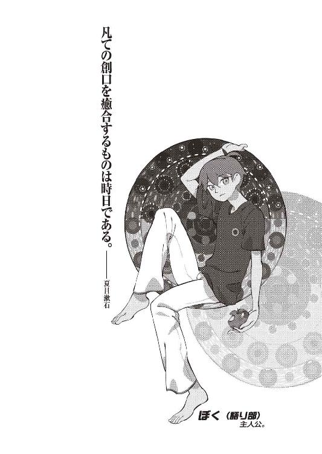
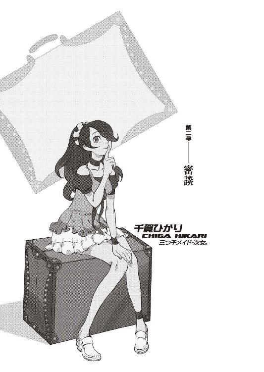

| ネコソギラジカル（上） 十三階段 戯言 (講談社文庫) | |
| 西尾維新 | |
| (2009) | |
本作品は、縦書き表示での閲覧を推奨いたします。横書き表示にした際には、表示が一部くずれる恐れがあります。
ご利用になるブラウザまたはビューワにより、表示が異なることがあります。
ネコソギラジカル（上）
十三階段
西尾維新


ぼくは今、墓場にいる。
墓場。
ずっと昔から、ここにいたような気がする。
だからきっと、これからもここにいるのだろう。
いつからかここにいたように、
いつまでもここにいるのだろう。
ぐるりと周囲を、墓石に囲まれている。
その風景に、心、奪われる。
無論、墓石に個性などない。
墓石は、ただ、整然と並んでいるだけだ。
ふと気付いた。
これは、今まで。
今までぼくが殺してきた人の、墓だ。
今まで──
ぼくの責任で死んできた人々の、墓だ。
くらくらと。
ぼくの身体が、揺れる。
ぐらぐらと。
ぼくを囲む墓石が、揺れる。
風の所為だ。
強い、風が吹いている。
強い風が。
誰のために、風は吹く。
誰かのために、風が吹く。
そんなのは──馬鹿馬鹿しい妄想だ。
風は、風。
石は、石。
死人は、死人。
死人は所詮、死人だった。
他人が所詮、他人であるように。
そう思って、ぼくは歩く。
道を歩く。
墓石と墓石に両側を挟まれた──
石畳の上を、ゆっくりと、歩く。
迷路のようだ。
隘路のようだ。
歩けば歩くほど、道に迷う。
歩けば歩くほど、道に惑う。
誘われているようだった。
そちらの水は苦い、と。
こちらの水は甘い、と。
それもまた──
馬鹿馬鹿しい妄想だ。
ぼくは繰り返す。
馬鹿馬鹿しい妄想を、繰り返す。
死人。
ぼくの所為で──死んだ人。
けれど、きっと彼らは。
けれど、きっと彼女らは。
己が、ぼくの所為で死んだなんて──
思って欲しく、ないだろう。
それに気付くと、
ぱあっと、道が開けた気がした。
几帳面なほど精密に──迷路の答が出た。
几帳面なほど厳密に──隘路の答が出た。
彼は。
彼女は。
あの子は。
あの娘は。
あの人は。
あの人は。
あの人はあの人はあの人はあの人は──
きっと、精一杯生きたに、違いない。
中途半端じゃ──なかったはずだ。
ならば。
ならば、ぼくは──ならば、ぼくも。
精一杯、生きなくては、ならないだろう。
彼が。
彼女が。
あの子が。
あの娘が。
あの人が。
あの人が。
あの人があの人があの人があの人が──
それを、望んでいなくても。
それを、望まれていなくても──
ぼくの意思で、生きなくては、ならないだろう。
もう、いい加減──
いい加減、子供ぶるのを、やめよう。
拗ねて、僻んで、落ち込むだけの──
過去の自分に、ピリオドを打とう。
そうしなければぼくは──
きっと、生きていくことさえ、できないから。
そしてぼくは、
一つの、墓石の前に、辿り着く。
もう、道はない。
もう、他に道はない。
ここが、行き止まりだ。
ここで──終わり。
世界の終わり。
物語の終わり。
かけがえのない──物語の、終わり。
その墓石に、墓碑銘はない。
どんな文字も、刻まれていない。
どんな言葉も、刻まれていない。
どんな名前も、刻まれていない。
一体これは──
誰の、墓標なのだろう。
あるいは青色の髪をしたサヴァンの聖少女か。
あるいは赤色の髪をした人類最強の請負人か。
あるいは橙色の髪をした最終存在の代理品か。
それとも──
これが、ぼくの、墓なのか。
そうしてぼくは目を覚ます。
いつものように、朝を迎える。
ここは墓場じゃないし、
ぼくは墓石に囲まれてはいない。
ふう、とため息をつく。
前髪をかきあげて、呼吸を整える。
そしてぼくは、いつものように、
ぼくの隣にいてくれる誰かを、求めた。
さあ。
それじゃあ、最後の物語だ。
これでおしまい、完結編。
どこをとってもお祭り騒ぎ、
隅から隅まであますところなく、
根こそぎにラジカルな物語。
いつものように、
いつもよりなお、
気楽にくだけて、
気負わず背負わず、話してみよう。
語るべき世界なんて既になくても、
それでも、物語は存在するのだから。
０
好きな人ができません。
１
西東天。
三十九年前の三月、父、西東賢悟、母、西東真実の長男として、二人の姉の下に、京都市内の病院にて生を享ける。父親は高都大学人類生物学科の教授にして開業医、母親は音楽家。二人の姉は双子で、十歳、歳が離れていた。
幼少の頃より、賢悟、及びその周辺のスタッフの手によって英才教育を施され、一日の大半を高都大学の研究室で過ごす。一冊の学術書も読むことはなく、頭の中で一から理論を組み立ててしまうその神童ぶりは、当時のマスコミに、かなりセンセーショナルに取り上げられたという。この頃から賢悟は学界においてめきめきと頭角を現すが、その成果の大半──否、ほぼ全ては、息子の助けがあってのものだったことが、後に内部告発によって明らかになる。
六歳の四月、高都大学人類生物学科に正式に入学。同七月、卒業──そして同九月、高都大学の大学院に進み、翌年三月卒業。それからの、七歳の一年、高都大学及び大学院の様々な学部を節操なく、文字通り転々とする。
八歳で、今更のように、助手として、父、賢悟の研究室に所属。当時賢悟が行っていた研究は《集団生命の終焉に向けての過程》という、差し障りのない、漠然としたテーマで、これは珍しいことに──というか、不思議なことに、特に何事もなく、特に取り立てるべき要素もなく、普通に研究が進んだ。
普通に。
あまりにも普通に。
それは普通過ぎて、後から考えれば、
異常──として、際立っている。
そして──十歳。
十歳の七月、二人の姉が行方不明に。
当時二十歳、二人とも高都大学の大学生。弟ほどでないにせよ、父親の研究に関与していた。その当時の西東家は、長男の八面六臂の活躍もあって、それなりに裕福であったので、二人の失踪に関しては営利誘拐の線も考えられたが、犯人からの要求らしきものは何もなかった。二人の姉は、この国にわんさかといる《失踪者》のリストにただ単純にただ簡潔に名を連ね、これで果たして、西東家の子供は、彼一人となる。
十一歳、助教授に昇進。
十三歳──両親死亡。
ほぼ同時に、高都大学に辞表を提出。
その後、渡米し、テキサス州の学問団体、大統合全一学研究所、ＥＲ２システム（現ＥＲ３システム）に、身を委ねる。無論、プログラム生としてではなく──研究員として。世界最高峰の頭脳といわれる、あのヒューレット助教授の下につき、学問に勤しんでいたといわれる。
しかし──このＥＲ時代は、彼、西東天の経歴の中における特筆すべき暗黒期だ。
ＥＲは馬鹿みたいに横向きに広がっている癖に、妙に閉鎖的なところがあって、その研究の成果をほとんど発表しない。全てが極秘扱いで全てがブラックボックス。無論、そういう環境を望む学者にとっては、わずらわしい世間の喧騒を嫌う学者にとってすれば、そこは最高の環境であるといえるのだろう。誰もが、西東天の行動をそう判断し、そう理解した。
しかしそうではなかった。
十八歳の一月──単身、帰国。
十九歳の三月より、高都大学、やはり人類生物学科に、教授職として復職し、ついで、開業医も開始する。だから彼は、父、賢悟の跡を、これ以上なく完全に継いだ形になるのだ。
形の上だけでは。
当時高校生だった木賀峰約、そして円朽葉と共に、非公式ながらも、生命の研究──例の《死なない研究》とやらに取り組み始めたのは、この頃からだろうと推測される。
そしてその二年後──
二十一歳の四月、再び、渡米。ＥＲ２に戻るのではなく、彼は二人の協力者と共に、独自の組織を立ち上げた。
その二人の名も記録に残っている──
一人は、架城明楽。
もう一人は、藍川純哉。
ただし、独自の組織とは言ったものの──五年後、その組織は、ＥＲ２システムに吸収合併されることになる。名称も、彼と二人の協力者の頭文字を取ってつけられた日本語のものから、ＭＳ‐２という、型番号のものへと振り替えられた。
ＥＲ２システム内部に組み込まれたことで、ここからの彼の動向は、またも暗黒期に入る──一体彼が、ＥＲ２システム内において、どういった立場に立っていたのか、全くわかっていない。ただでさえ異質であった十代の頃と比べても、まるで違う立ち位置であったことは、しかし確かであるといえるだろう。
この時の彼は、既に学習を終えていたのだ。
この時の彼は、既に研究を終えていたのだ。
やるべきことは、実践だった。
やるべきことは、実験だった。
やがて──暗黒期も終わる。
更に三年後──二十九歳の夏。
日本に再度帰国。
ただし、このときは単身ではなく、二人の協力者、架城明楽と藍川純哉と、一人の使用人、そして──一人の娘を、連れていた。
突然の帰国の目的は今もってなお不明──しかし、その目的が果たされなかったことだけは、明らかである。同年の冬に、日本に渡った全員が死亡しているからだ。
架城明楽も。
藍川純哉も。
使用人も。
娘も。
彼自身も。
死んでしまったからだ。
殺人、だった。
明らかな、殺人だった。
結局、犯人の特定には至らず──
そして、現在に至る。
西東天──享年、二十九歳。
それが、今からおよそ十年前の話になる。
「今日のためのおはようと明日のためのおやすみを言いたくて。闇口崩子、これで通算七度目の、戯言遣いのお兄ちゃんのお見舞いにやって参りました」
そんなクールな挨拶と共に、ぼくが住んでいるアパートの住人にして十三歳の家出少女、闇口崩子──崩子ちゃんは、ぼくの入院している病室に、フルーツ入りのバスケットを持ってやってきた。ぼくは、その日のノルマだったリハビリも終え、担当看護婦である形梨らぶみさんの手による嫌がらせにも似た地獄の検診も終えていたので、暇をもてあまして、少しよしなし事を考え、物思いにふけっていたところだったので──崩子ちゃんの訪問は、事前に何の連絡もない唐突ではあったけれど、ちょっと嬉しかった。
崩子ちゃんは、サンダルに純白のワンピース、それに麦藁帽子といういでたちで、その帽子を脱いで見ると、素朴な感じの、黒髪のおかっぱ頭。バスケットをキャビネットの上に置いて、そこはさすがに通算七度目、勝手知ったる他人の病室といわんばかりに、ロッカー脇からパイプ椅子を引っ張り出して来て、ベッドのそばに腰掛けた。
「先ほど一階の受付近くで形梨さんとお会いしました。なんでも、そろそろお兄ちゃん、退院だそうで、おめでとうございます」
「ああ......なんだ、らぶみさんに会ったんだ。大変だったでしょ」
らぶみさんはかなりのテンション系の看護婦さんなので、しかも崩子ちゃんはらぶみさんに気に入られてしまっているので、変につかまると多分に厄介なのだ。しかし崩子ちゃんは「いえ、わたしはすぐに逃げましたから」と、何でもなさそうに言うのだった。
んー......。
まあ、久し振りってほどでもないけど。
この年頃の子は、少し会わないと雰囲気、すぐに変わっちゃうよな......。
更に、可愛くなったように見える。
お人形さんみたいな整った顔立ち、白い肌に赤い唇。
ぼくは鈴無さんみたいな少女好きではないけれど、それにしたって、崩子ちゃんはその例外にしてもいいくらいだった。
「ん。まあ、そう。二十日に退院。それは予定通り。でも、どころか、怪我の治りも結構早くてね。根治まで二ヵ月って話だったんだけど、退院する頃にゃあ、跳んだり跳ねたり走ったり、もうできるんだってさ。あんまり激しい運動は勘弁だけどね」
「それは何よりです」
「ぼく、昔から怪我の治りは早いんだよ」
「そのようですね。......髪も、この前切ったばかりだというのに、既にもう、ほとんど元に戻っていますし」
「この髪型が、別にデフォルトってわけじゃあないんだけどね......」ぼくは、確かに伸びてしまった前髪を、いじるようにしながら、崩子ちゃんに答える。「前にも言わなかったっけ？ 昔はもっと長かったんだよ。崩子ちゃんくらいの歳には、三つ編みにしてたんだ」
「想像を絶しますね」
崩子ちゃんは肩を竦める。
「次に髪を切りたくなった際には、是非わたしに、お声をおかけください」
「そうだね」
「姫姉さまも──もういないことですし」
「......そうだね」
紫木一姫が死んで──今日で、一ヵ月。
彼女が殺されてから、一ヵ月が経過する。
人が死のうと誰が死のうと、時間はただ、それは自動的に、自律的に、いつも通りに経過する。勿論この一ヵ月はそれ以前の一ヵ月となんら変わりのない一ヵ月であっただろうし、ぼくの個人的な思いによって時間が延びたり縮んだりすることなどないとちゃんと分かっているけれど──
とにかく、一ヵ月がたって。
ぼくは未だ、傷の治療のために──京都市内の病院に、入院していた。姫ちゃんが殺された、先月の、木賀峰助教授の《不死の研究》にまつわる忌まわしき事件にかかわった際に負った傷の治療のため──ということだ。
しかし、ぼくは昔から結構、怪我をすることには慣れていて（傷の治りが早いのはそのためだ）、必然、入院生活にも、子供の頃から随分と慣れ親しんでいるので、逆に言えば、入院生活は退屈だった。個室だから、たまにやってきてくれる見舞い客か、たまに仕事をサボりに来るらぶみさんくらいしか話し相手はいないわけで──退屈といえば退屈。
退屈まぎれに、調べ物をしたりもした。
先月出会った──一人の男について。
「..................」
彼の名前は──西東天。
いや、自分でそう名乗ったわけではない。
彼は徹頭徹尾、己の名を名乗らなかった。
まだ名乗るべきときではない──などといい。
しかし、それでも、くだんの木賀峰助教授が、彼の教え子であることは分かっていたので、その事実をとっかかりとして、色々と、個人的に調べてみたのだが──ぼくのスキルで調べられる限界によれば、彼は既に、生きていないということになっていた。
ていうか、死んでいた。
死んでんじゃねえかよ、とかなり拍子抜けした。
あるいは玖渚や、それとも玖渚の友達であるところの《ちぃくん》、綾南豹にでも依頼すれば、もっと詳しいことが分かるのかもしれないが......ことがことだけに、あまり巻き込みたくない、と、思ってしまう。
大体──あまり、意味がある行為ではないのだ。
あくまで、退屈まぎれ。
あくまで、暇潰し。
彼は──
あの狐面の男は、確かに──ぼくに再会を約束したけれど、それで再会できるのならば、苦労はない。お互い、連絡先も何も知らないではないか。
いくら再会を望んでも──
縁がなければ、それまでだ。
「ところでお兄ちゃん。何かわたしにして欲しいことはないですか？」
「して欲しいこと？」
「折角お兄ちゃんのお見舞いにきたのですから、何かお役に立ちたいと考えるのですが」
「ふうん、そう......殊勝な心がけだね。じゃあ、前みたいに、身体拭いてくれない？ 実を言うと、さっきまで寝てたもんだから、寝汗を結構かいちゃって」
「分かりました。タオルは変わらずキャビネットの中ですね？」
「うん。お願い。上半身だけでいいから」
ぼくは患者衣をはだけ、シャツを脱ぐ。崩子ちゃんはキャビネットからタオルを取り出し、個室に備え付けられている水道から洗面器に水を汲み、ベッドの上に、這い上がってきて、ぼくの背中に回る。
「......しかし、ですよね」
絞ったタオルでぼくの背中を拭きながら、崩子ちゃんは、呟くように言う。子供だからか、それともそれは崩子ちゃん独特のものなのか、どうも、声からは感情を読み取りにくいところがあるので、続けて何を言うつもりなのかわからず、ぼくは崩子ちゃんの次の言葉を待つ。
「お兄ちゃんの身体って......こうしてじっくりと見てみると、傷跡だらけですね。新旧入り混じって、あちこちに」
「ああ......まあね。女の子には、キツいかな？」
「わたしの場合、そうでもありませんが」
「頰の傷が比較的綺麗に消えたのは、助かったけどね。目立ってしょうがなかったからさ。ぼくには顔面に刺青を入れて歩く奴の気が知れない」
「そんなものは誰にも知れないでしょう」
崩子ちゃんはそこで言葉を少し矯める。
「萌太の身体もこれに近いものがありますが──しかし、これほどではありません」
萌太というのは、二歳年上の、崩子ちゃんの兄の名前だ。苗字が違って、石凪萌太という。
「弱いから、傷つきやすいってことだろ。少なくとも、ぼくの場合はね」
「そうかもしれません」
崩子ちゃんは容赦がなかった。
「それでも、お兄ちゃん」
「なに？」
「お兄ちゃんの身体は、お兄ちゃんの身体で──かけがえのないものなのですから、もっと、ご自愛ください」
「..................」
かけがえのないもの──か。
その言葉に、ぼくは連想する。
代替可能。
どんなものにも替わりはあって、誰かが何かをしなくとも、他の誰かがその何かをやって──かけがえのないものなど、この世にはないという、そういう概念。
それに加えて、時間収斂。
たとえそれが現時点では何の兆候もない、生じていない事象であったところで、それが起きるべきことであるのならば、避けようもなく、いつかどこかで起きてしまう、もしも起きなかったというのならば、それはもう、遥か昔にとっくに起き終わっていたと──避け得るものなど、この世にはないという、そういう概念。
ジェイルオルタナティヴにバックノズル。
先月の事件を彩った、二つの概念。
どちらも、運命の肯定であり──物語の肯定。
そして、
個人の否定。
個人の世界の、否定だ。
「格好つけたようなことを言わせてもらえれば──ぼくが傷ついてなきゃ、他の誰かが傷ついていただけさ。だったら、崩子ちゃん、ぼくが傷ついた方が、いくらかマシってもんだろう？」
「そんな残酷な考え方はないでしょう」崩子ちゃんは言う。「お兄ちゃんは、少し、卑怯ですね」
「卑怯？」
「姑息です」
「姑息......」
「狡猾、というべきでしょうか」
「......狡猾......」
なんでそこまで言われなくちゃならないのだ。
「考えてみれば、お兄ちゃんはいつもそうですよね。余計なお世話かもしれませんが、しかしもっと、周囲の他人に気を配った方がいいと思います」
「これでも、結構気は遣ってる方なんだけどね」
「自分の痛みなら我慢できる。けれど他人の痛みは、感じることができないんですから──我慢の仕様がない。そういうことですよ、戯言遣いのお兄ちゃん。理解できますか？」崩子ちゃんは言う。「つまり、傍で心配する身にもなってください、という意味です」
「......心配してくれてんだ、崩子ちゃん」
「心配もしますよ、それは」
崩子ちゃんは呆れたように嘆息する。
少女には似合わない仕草だった。
美少女には尚更似合わない。
「見ていられない──と、思います。ポール無し、安全ネット無しで綱渡りをやっている人間を、下から見上げているような気分ですね。綱を踏み外すのは、確かにお兄ちゃんかもしれませんが──潰れた死体を見ることになるのは、実際、わたしです」
「なんだかリアルで嫌な比喩だな......」
「ときに──ですね。戯言遣いのお兄ちゃん」
「なんだい？」
「お兄ちゃん、みい姉さんに告白なさったそうで」
「............」
おっと。
なんでバレてるんだろう。
「んー......告白ってほど具体的じゃないよ。ただ、みいこさんにはお世話になってるし、それに、先月──発破かけてもらったし、ね」
みいこさん──浅野みいこさん。
崩子ちゃんと同じく、ぼくの暮らしているアパートに住んでいる、二十二歳、フリーターのおねいさん。サムライみたいなポニーテイルに、凜とした感じの雰囲気。甚平で日常を過ごす、剣術家。アパートでは一番の古株で、ほぼ全員に慕われている。例外は荒唐丸さんだが、しかしそれにしたって、毎日楽しそうに喧嘩をしているといった風情だ。
みいこさん......
みいこさん、か。
しばらく会ってないな。
結局、今に至るまで一度も見舞いに来てくれていないわけだから、一ヵ月近く会っていないことになるわけだ。
............。
あれは、告白──ってわけじゃないけれど。
しかし、それに近くはあったわけで。
それで見舞いに来てくれないというのは──
なんだか、絶望的な話だ。
落ち込む。
確かに、多少ほっとしている面も否定しないけれど、それでも何の反応もない無反応というのは、かなりがっかりしてしまう事実だった。
「その様子だと、返事はまだいただけていないようですね、戯言遣いのお兄ちゃん」
「まあね......」
「お兄ちゃんに人を好きになる神経があるとは、わたし、考えもしませんでした」
「そうかい？ 結構惚れっぽいよ、ぼく」
「誇るように言うことではないでしょう」
「......容赦ないなあ」
「だって、かりにも人を好きになることができるなら──わかりそうなものでしょう」
「分かりそうって、何が？」
「万歳してください」
「はいはい」
言われるままに腕をあげる。崩子ちゃんはタオルを洗面器で絞り直してから、脇腹の辺りを拭き始めた。崩子ちゃんの細かな手つきも手伝って、少しくすぐったい。
「姫姉さまが死んだとき」
「うん？」
「お兄ちゃん、悲しかったでしょう？」
「......そりゃまあ、それなりにね」
紫木一姫──姫ちゃん。
ほんの、二ヵ月程度の付き合いだったけれど。
彼女の不在が生み出すこの空白は──
埋まりそうもない。
埋めるつもりも、また、なかった。
「だったら、お兄ちゃんがこれから心がけるべきは、贖罪や後悔、あるいは自己犠牲ではなく──周囲の他人を、悲しませないことだと、思います」
「............」
「それは、わたしがわたしに強いていることでもありますが──わたしは、好きな人を、悲しませたいとは思いません。好きな人に、心配をかけたくも、ありません」
崩子ちゃんは、この娘にしては珍しく、強い決意のこもったような声音で──宣言するように言った。
「わたしが傷つくことで悲しむ人がいるのならば、わたしは鋼鉄の精神で、あらゆる傷を拒絶します。好きな人が悲しまないためになら──わたしは、絶対に傷つかない」
「............」
「お兄ちゃんにもそうあって欲しいと、願います」
反対側の身体を拭いてもらったところで、ぼくは両腕を下ろした。一つ息をついて、崩子ちゃんに言われた言葉の意味を反芻する。
まあ──その通りだ。
言われっぱなしなのが、やや辛いけれど。
この娘は──本当に、容赦がない。
「......ありがと。前は自分で拭くよ」
「当然でしょう。そこまでわたしにさせるつもりですか」
「タオル頂戴」
「はい」
と、言ったものの、崩子ちゃんは、ぼくにタオルを渡してはくれなかった。不審に思って振り向こうとしたけれど、背中に掛かってきた負荷に、その行為は中断される。
「......崩子ちゃん？」
「少し」
ぼくの背中に、ゆるりと、抱きついた形で──ぼくの首にそっと、柔らかに腕を絡めた形で、崩子ちゃんは、消え入るような小さな声で言う。
「少し、このままで」
「.........崩子、ちゃん？」
「あと五秒だけ、この姿勢で」
「............」
心臓の音が聞こえる。
自分の心臓の音と──崩子ちゃんの心臓の音。
どちらも、早鐘のように打つ。
何も言えない。
口を開けない。
振り向くこともできない。
そのまま、ただ、時間が経過する。
一秒。
二秒。
三秒。
四秒。
そして五秒──
「......お邪魔だったかな」
扉が開いて病室にみいこさんが這入ってきた。
自分の心臓の音が止まった。
いや、止まったら死ぬけど。
死んだかと思った。
「..................」
状況説明。
個室。
ベッドの上。
上半身裸の十九歳。
その背に抱きつく十三歳（美少女）。
密着している二人の肉体。
みいこさんの冷めた視線。
............。
ぼく達の間に、言葉はいらなかった。
そんなものがなくても、通じ合っていた。
「......では」
ぼくの首に回した腕を解いて、崩子ちゃんはベッドから降り、サンダルを履く。
「戯言遣いのお兄ちゃん。来たばかりでなんですが、わたしはこれから図書館に行かなくてはならないので、みい姉さん、あとはお一人でどうぞ」
「......応」
「............」
みいこさんの脇を抜けるように、病室から出て行こうとする崩子ちゃんに、ぼくは救いを求めるような視線を、アイコンタクトを送ったが、しかし、崩子ちゃんは両頰に人差し指をさして、クールな風貌に似合いもしない可愛らしいポーズをとるだけだった。
「戯言遣いのお兄ちゃん」
そして崩子ちゃんは言う。
「わたしにも嫉妬心というものはあるのです」
「............」
「では、息災と、友愛と、再会を」
別れの言葉と共に、扉は閉じられた。
病室の中に残るのは二人。
ぼくと、みいこさん。
一ヵ月ぶりに会う、みいこさんだった。
病室内に漂う、そら寒い空気。
その空気をどう感じているのか、みいこさんは、キャビネットの上のフルーツを、なんとはなしに、眺めていた。
なんだか、眠そうにも見える。けれどこの人の場合、常態がこれだ。何を考えているのか読みきれない、朴訥な無表情。そういう意味では、崩子ちゃんと通じるものがある。
ぼくはとりあえず、シャツを着て、患者衣の前を閉じ直す。
「いの字」
「......はい」
「十三歳はまずいだろう」
「いえ......違うんです......」いささかの批難を含んだその言い方に、ぼくは精一杯否定する。「今のは......汗を拭いてもらっていて......」
「ふーん。別にいいけど。私には全然関係ないし」
「............」
怒ってらっしゃる。
直情型のみいこさん、こういう怒り方は珍しい。
対処に困る。
「えっと......崩子ちゃんと一緒に来たんですか？」
「うん。ただ、受付のところで、変な看護婦につかまってね。崩だけ、うまく逃げたのだが、私は」
駄目だった、とみいこさんは言う。
そうか......
《わたしは》って言ってたな、そういえば。
じゃあやっぱり、崩子ちゃん......確信犯か。今度のも七々見の仕込みじゃないだろうな......。いや、あの魔女の仕込みと見るには、いささか毒に欠けているところもある。となると、どうやら崩子ちゃんの独断のようだ。
嫉妬心、と言っていた。
嫉妬、ね......。
妬み、嫉む。
まあ、みいこさんはアパートの人気者だからな。崩子ちゃんはみいこさんによく懐いているし、ぼくの告白もどきが、崩子ちゃんの目に抜け駆けのように映ったのだとしても、不思議ではあるまい。
「いの字はもてもてだなー」
「............」
「さっきの看護婦もえらくいの字をお気に入りの様子だったし。青い髪の娘とは充電中だし。アパートに同級生は連れ込むし」
「..................」
嫌味攻撃が始まった。
甘んじて受けるしかなかった。
「バイトは女子中高生相手の家庭教師だし」
「それはもうクビになりましたよ......」
一ヵ月も入院すれば、それは当然だった。
まあ、姫ちゃんが死んでしまったので、その学費の大半がぼくの銀行口座に返還されるから、生活にゆとりは戻ってきたのだけれど。
「赤い髪の変な格好した女とよく遊びに行くし」
更にみいこさんの嫌味攻撃は続く。先刻の崩子ちゃんの行為が、ぼくではなくみいこさんを対象としたものであるということに、みいこさんは全く気付いていない。気付いてもよさそうなものだが、しかしみいこさんはかなりの鈍感なのだ。他人のことに関しては異様に鋭い勘を発揮する癖に、ことが自分のことになると、妙に鈍い。どうしてそんなに鈍感なのか、理解に苦しむくらいだ。
「女刑事とは頻繁に連絡を取り合ってるようだし。先月は痴女と同棲してたし、その痴女は女の子を拾ってくるし」
「痴女って......」
春日井さんのことか？
そんな認識なんだ、彼女......。
「それに──それに......」
「いや、もういいですって......」
「それに、私に告白するし」
「............」
「その上、いつまでたっても帰ってこないしな」
みいこさんの顔を見る。
特に──何も感じられない。
いつもの通りの、無表情。
「......見ての通り、入院中なんですよ」
「うん」
「まあ、あと四日ほどで、退院──ですけどね」
「うん。さっき聞いたよ」みいこさんは頷く。「大事に至らなくてよかった」
「危ないところでしたけれどね......」
本当に──危ないところだったらしいのだ。
生死の境を、行ったり来たりした。
比喩ではなく。
文字通りに。
それだけ──
先月の事件が、異常だったということだろう。
「でも、みいこさん。意識はとっくに戻っていたんですから──見舞いにくらい来てくれてもよかったんじゃないですか？ 心細かったですよ」
「それは悪かった」みいこさんが、思いの外素直に頭を下げた。「ただ、先の崩の台詞ではないけれど──私にも、迷いはあったのでね」
「迷い？」
「お前に、どう応えたものか」
「..................」
告白──か。
崩子ちゃんにも言ったよう──あれが果たして、告白だったのかどうか、ぼくにはよくわかっていない。これは、いつものように、戯言で物事を曖昧にして現実から逃れているわけではなく、本当にぼくには分からないのだ。
あの状況で。
あの場所で。
あの時間に。
ぼくが、何を言ったのか。
言った言葉の、その意味はなんだったのか。
そもそも、シチュエーションが特殊だった。
こうして──日常に回帰してみれば。
やはり、気後れしてしまう。
そういう意味ではやはり逃げなのかもしれない。
解答を出すのを怖がって。
結果が出るのを嫌がって。
いつまでたってもそのままで。
いつも通りの、ぼくのまま。
姫ちゃんが死ぬ前と──
まるで変わらない、ぼく。
『返事、考えといてください』──と。
ぼくは、確かに言ったのに。
何を考えているんだろう。
傷つきたくないのだろうか？
これだけ、もう、傷だらけの身体で。
これだけ、もう、傷だらけの精神で。
傷だらけの心で。
それは、本当に、戯言だ。
ぼくが傷ついて──
悲しむ人など、いるものか。
「私はね──いの字」
みいこさんは言う。
「結構、駄目な奴だ」
「......は？」その、あまりみいこさんらしくもない言葉に、ぼくは首を傾げる。「なんですか、それ？ どういう意味ですか？」
「剣を振るしか能がない」
「その言葉は──前にも聞きましたけど」
「特に、恋愛沙汰は、かなり駄目だ」
「............」
「かなり鈍い」
「それはわかりますが......」
「まあ──隠すようなことでもないから、言ってしまうと、だ」みいこさんはほとんど無表情のままで続ける。「今まで四人、付き合ったことがある」
「はい」
予想済み。
まあ、三つも年上の女性だ。
それくらいは覚悟している。
「内三人までが女だ」
......予想外。
えっと......。
「......最後の一人は、男性の方なんですね？」
「というか、最初の一人」みいこさんは言う。「小学生の頃の話だから、男性というよりは、男の子、というべきだな」
「............」
小学生の頃までカウントするんだ......。
真面目だなあ。
「その男の子は、苛められっ子でね」
「............」
「次に中学生の頃に一人。高校生の頃に二人。全員、女の子で、苛められっ子」
「............」
「苛められてる奴が好きだったんだな。いや、そうじゃない......弱い奴、弱々しい奴が好きだったんだろうと思う」
「嫌な分析ですね......」
「いや、突っ込みを受けるような話じゃなくて、真面目な話」みいこさんは言う。「要するに、私は人を助けるのが好きな奴だったんだろう......と、思うわけだ。義を見てせざるは勇なきなりといえば、言葉の上では綺麗なのだが、そんないいものじゃあないだろうな」
「はあ......」
「それが行き過ぎて、高校は中退することになってしまったわけだが......その辺は、話したっけ？」
「ええ......そこまでディテールは聞いてなかったですけれど。つまり──その、苛められっ子を庇って、ってことですか？ どっちの子かはともかくとして」
「どっちの子、っていうか、両方」
「両方？」
「二股だったから」
「..................」
駄目だ。
駄目駄目だ。
この人──本当に恋愛、駄目なんだ。
恋愛音痴というべきなのか......。
「それだけならよかったのだが」
「いや、もうかなりよくないですよ」
「私と付き合うことによってあの四人が人間的に成長したかといえば、そんなことはなく──益々、弱っちくなってしまった」
「成程」
「益々、弱っちくなってしまった」
「二回言うほどですか......」
......まあ、苛められっ子を甘やかしたら、大抵そうなっちゃうんだよな。残念な話ではあるけれど、それは確かな現実だった。ぼく自身、そういうところがあるから、よく分かる、分かりやすい話だった。
ぼく自身？
そうか......
そうだ。これは、ぼくの、話だ。みいこさんの話であると同時に、ぼくの話でもある。
「つまり、私は」みいこさんはぼくに向かう。「駄目な奴を更に駄目にすることにかけては一流だ」
「それも嫌な一流ですね」
「故に、迷う」
「............」
「お前、私と付き合って、大丈夫なのか？」
「大丈夫かって......」
「大丈夫だとでも、思うのか？」
直球の質問だった。
ぼくの目を、覗き込むようなみいこさん。
崩子ちゃんが帰ってしまったことが悔やまれる。まだしも先刻の空気の方がマシだったと思えるような、張り詰めた空気が、ぼくとみいこさんとの間で、火花のように爆ぜていた。
「......みいこさん」
「私は、自分の弱さを知っている。鈴無にも散々言われていることではあるが──うん、私は多分、お人よしなのだろう。余計な世話を......焼きたがる。ほっとけば一人で立ち直るかもしれないのに、手を差し伸べたがる」
「............」
「見守ることができない。それが私の弱さ」
「でも、みいこさん──」
「だから、私は人との距離には気をつけている」みいこさんはぼくの言葉を無視して、無理矢理に自分の言葉を繫ぐ。「つかず離れず──間合いを測る」
みいこさんの距離感は、心地いい。
無駄な干渉をせず。
無駄な関心を抱かない。
だけど無干渉というわけでもなく。
けれど無関心になるでもなく。
それが、あの変人揃いのアパートで、みいこさんが慕われている一番の理由でもあるのだろう。そばにいることが常に自然というか、まるで鬱陶しくないという、独特の間合いの持ち主。
簡単に言えば。
みいこさんは、気持ちのいい人なのだ。
「けれど──付き合うとなれば、その間合いは、多分、失われることになるぞ。制御が、きかなくなる」
「............」
「きっと私は、お前を死ぬほど甘やかすぞ。お前のやるべき仕事を、片っ端から全部横取りしてしまうぞ。正直な話、お前はかなり──私の食指をそそるタイプだからな」
「苛められっ子の駄目人間ってとこですか」
「うん」
頷かれてしまった。
それでもだ、とみいこさんは言う。
「お前は随分──頑張ってるじゃないか」
「............」
「自覚のあるなしにかかわらず」みいこさんは腕組みをした。言葉を選んでいるようだ。元々、よく喋る人ではない。どちらかといえば、無口というより口下手な方だ。「まあ、先月、ちょっと頓挫しかけたけれど──それでも、よく頑張っている」
「頑張ったといってもこの有様じゃあ、情けないですけれどね。いつかの崩子ちゃんの言い草ではないが、それこそ、このところ病院が自宅みたいな感じです」
「......お前の邪魔はしたくない」
茶化すように言ったぼくに取り合うことなく、みいこさんは、そう言ったところで、黙った。
もう言葉は続かなかった。
それで、おしまいらしい。
邪魔はしたくない──で、おしまい。
ぼくは、頭を悩ます。
「あの......つまり、ですね」
「うん？」
「結論だけ言えば、どういうことになりますか？」
「うん」
みいこさんは頷いた。
そして結論だけを言った。
「お前と私は付き合えない」
「..................」
うわあ。
はっきりと振られた。
正面から、
避けようもなく、
正々堂々何の衒いもなく──
振られた。
その衝撃に、ちょっと、目眩を覚える。
......なんだったんだ、先月のあの振りは......。
「迷ったけれど、付き合っちゃ駄目だと思う」
「駄目って......」
「お互いを駄目にする」
付き合ってもいない内から、その理由......
あんまりだ。
「私は駄目になりたくないし。それにまた私は、お前を駄目にしたくないし。だから、二重に駄目なのだ」
「............」
「私は、過保護だから。多分、お前のすべてを許してしまうだろう。それは、よくないと思う。まあ、さっきお前の背中に抱きついていたのはそりゃ冗談なのだろうけれど、崩のような厳しさを、容赦のなさを持ち合わせている人間でもない限り、お前を生かせはしないだろう。私じゃ、駄目だ。私じゃあお前とは、駄目だ」
「ぼくが──」
少し、驚く。
食い下がろうとしている自分に。
往生際の悪い自分に。
振られて、悲しいとか辛いとか残念だとか思わずに、まだ諦めずに縋りつこうとしている自分に、ほんの少しだけ、驚く。
このとき、ようやく自覚する。
ああ、そうか。
ぼくは本当にみいこさんが、好きなんだ、と。
そばにいたいと──思っているのだと。
どれだけの痛みが伴おうと。
「ぼくがみいこさんと付き合いたいと思うから、じゃあ、駄目なんですか？」
「──お前と私は、相性がいいと思うよ」
「そんな......」
そんな──駄目な癖に。
希望を煽るようなことを。
そんなのは、何の慰めにもならないのに。
「人に好きになってもらいたいお前と──人を好きになりたい私とは、確かに、相性がいいと思う。けれど、相性がいいだけ、それはまずいだろう。友達としてならうまくやれるだろうが、それ以上となると、どうも、こう......バランスが」
「バランス？」
「いや......やっぱり、間合い、かな。心地いい間合いが、取れなくなる。ものすごいベタベタしたことになるぞ。多分、一日中いちゃいちゃしてるぞ、私達。目に浮かぶようだ」
「............」
ぼくの目にはそんなものは浮かばないが。
けれど──そうなるのだろうか？
人と付き合うというのは、そういうことか。
ぼくは──
別に、そんなことを望んでいるわけではなく。
ただ、みいこさんと。
「それはそれで幸せなのだろうが──でも、私は、ベタベタした人間関係が嫌いだ。経験があるだけにね、そう思う」
「それは──」
それは、ぼくも同じだ。
けれど、みいこさんとはそういうんじゃなく。
いや──違うか？
違う違う、そうじゃなく。
そうだ、それはよくわかる話なのだ。
人を好きになりたい。
人に好きになってもらいたい。
その言葉は──その表現は、当てはまる。
正しい。
崩子ちゃんはあんなことを言ったが、実際のところはそうじゃない。ぼくは人を好きになれない人間なのではなく──人に好きになってもらえない、そんな人間なのだ。
人に好意をもたれることができない。
それは、裏返し。
それが、裏返し。
愛情の裏返しなんて、好意の裏返しなんて、よく使う言葉だけれど、そんなもの、愛情の裏返しは憎悪であって、好意の裏返しは嫌悪であることに、間違いなんてないはず。
ぼくが、人に好きになってもらいたいだけで、その相手に、みいこさんを選んだだけなのだとすれば──みいこさんに好きになって欲しいと、そう願ったのだとすれば、それは──
「じゃあ──みいこさん」
「うん？」
「もしも、ぼくが──」
もしもぼくが、今のような存在でなく。
しっかりとした、地に足のついた。
そんな人間になったとして、
そんな人間に変われたとして、
そのとき、あなたは──
がらり、と扉が開いた。
崩子ちゃんが戻ってきたのかと思った。
あまりにもタイミングがよ過ぎたからだ。
崩子ちゃんが扉の向こうで聞き耳でも立てていたのだろう、と、そう思った。
しかし、違った。
それは全然違った。
一気に警戒心が走る。
そこにいたのは──知らない男。
見たこともない、男だった。
「この俺のかっちょいぃーい登場シーンなんだからよぉ......次の台詞は両側に一行開いてる気分で聞いてくれよ──」
男は──ぼくとみいこさんを、指差した。
右手でみいこさんを。
左手でぼくを。
「俺の名前は奇野頼知──《十三階段》の十二段目。ありったけの親しみを込めて、キノラッチって、呼んでくれ」
男の背後で──
扉がゆっくりと、閉まった。
まるでぼくらを、閉じ込めるように。
ぼくは思わず、息を吞む。
《十三階段》。
それが──始まりの合図だった。
２
《十三階段》。
その言葉は、単に十三の階段という意味以外に、ぼくにとっては、そしてごく一部の人間にとっては、特別な意味を持つ。
たとえば──先月。
ぼくが、今をしてなお、この病院に入院している、その原因ともいえる《二人》──その《二人》が、それぞれに、《十三階段》の一員だった。
匂宮理澄。
匂宮出夢。
《人喰い》の理澄に《人喰い》の出夢。
人呼んで、殺戮奇術の匂宮兄妹。
その恐ろしさは──身に染みている。
しかし、だからというわけではない。
だから、《十三階段》という言葉に、ぼくはある種の戦慄を感じている──というわけではない。それは、そうではなく、ただ通常に、もっと直接的なことを意味しているのだった。
何故なら──《十三階段》とは、色々表現を曖昧にしたところで、つまるところは、あの狐面の男──西東天の、ぼくに再会を約束したあの男の、直轄部隊。
文字通り彼の《階段》なのだ。
その《階段》がぼくの病室に、この戯言遣いが存在しているこの座標に、こうして重なってきた──という、この、事実。
来るべき時がついに来た。
起こるべきことがついに起きてしまったと──
そんな戦慄が、ぼくを襲う。
ついに──ついに、始まると、いうのか。
先月の続きが──否。
全ての終わりが。
「奇野──頼知」
引き締まった身体をした、男だった。鍛えてはいるのだろうが、筋肉がついているというよりは、やはり単純に、引き締まっている──としか、見えない。衣服が薄手なのも手伝って、こうして離れて見る分には、かなりの瘦身に見えるのだが──しかし、頼りない感じはまるでない。
伸ばしっぱなしの黒髪に、カチューシャ。
競輪選手のような派手なサングラスで目を隠しているので、表情は読めないが──しかし、口元はだらしなく歪んでいた。ややゆとりのあるハーフパンツを、自転車のチェーンをベルト代わりに、着こなしていた。両足には──病院のリノリウムの床には、あまりにも不似合いな、下駄、だった。
「えっと、だ──」
奇野頼知──奇野さんは、ぼくとみいこさんを、交互に見遣る。
「この俺としちゃあ、狐さんから散々あんたの話は聞いていたからよ──こうして対面してみても、ようやっと会えたって種類の感想なわけだが......しかし、あんたにしてみりゃあ、そうじゃねえはずだ──この邂逅は、かなり、唐突なはず。なのに、表情一つ変えない、眉一つ動かさないたぁ、見事なもんじゃねえかい、ええ？」
「............」
奇野さんの言うことは──正確ではない。
ぼくはずっと前から、それこそ、先月に入院して、意識不明から目覚めたその瞬間から──この邂逅を、念頭においてきた。
だから、驚愕というほどの驚愕はない。
疑問があるとすれば──
どうして狐面の男が、自分の足でこの病室にやってこなかったのか、なんでまずは配下の《十三階段》とやらを、動かしてきたのだろうか──というくらいだ。
それは......つまり、まだ、《そのとき》ではないと、そういうことなのだろうか？ まだ──ぼくに対して、名乗るべきときではないと、そういうことになるのだろうか？
だとすれば──この男、奇野頼知。
一体、何をしに来たのだろう。
ことと次第によっちゃあ──かなりまずい。
一番まずいのは、何よりも優先して一番にまずいのは、この場にみいこさんがいることだ。
みいこさんは、全くの部外者で、全くのカタギ者で、玖渚がいうところの表の世界、普通の世界の住人で──巻き込むわけにはいかない。みいこさんは《十三階段》どころか、恐らくは西東天の名前すらも知りはしないのだ。
絶対に──巻き込むわけにはいかない。
何とか、逃がさなければ。
だが──しかし、それは頭で思うほどに、簡単なことじゃあ、ないぞ......？
《十三階段》。
十二段目、と言ったか。
先月聞いたときには、確かまだ半分も揃っていないといっていたはず......そうなるとやはり、狐面の男にとって、《状況は整った》ということになるのかもしれない。
十二段目、か......。
まさか、さすがに出夢くんレベルの敵だとは思わない......出夢くんと奇野さんが同じクラスの能力を持ち合わせているとは思えない。
だって、出夢くんは──《人喰い》の出夢は。
あの、哀川潤にも、匹敵するのだから──
「『俺が一体何をしに来たのか』。そう考えているんだろう？ 《いーちゃん》よぉー」奇野さんは、扉に背を任せ、その位置からぼくに近付いてくることなく、話を進める。「だがまあ、とりあえずは安心しろ──用ってほどの用はないのさ。ただのお見舞いって奴──狐さんからの、お使いってところさ」
お使い......。
にやり、と奇野さんは笑う。
「成程ね──あんたが狐さんの《敵》か」
「............」
「あの狐さんが敵に選ぶような奴の面を、是非とも拝んでみたいもんだと、ここ一週間ほどすげえ楽しみにしていたもんだが──しかし、驚かされたぜ。さすが狐さん、敵の選び方も一味違う」
そういって、奇野さんはサングラスを外す。
そして、その目で、こちらを睨みつけた。
「まさか《いーちゃん》が女だったとはな」
「..................」
「..................」
横目でみいこさんを見た。
みいこさんは横目でぼくを見ていた。
──あれ？
あれあれ？
なんか、誤解されてる？
髪が伸びたといっても、以前より長髪になっているわけでもないし、患者衣だから身体の線も丸見えだろうから──そういう勘違いじゃあ、ないってことは分かる。
しかし、とすると、つまり。
「だが、女だてらに、すげえ精悍な面構えじゃねえか──俺の世界でも、そこまで覚悟の決まった目をしている奴はなかなかいねえ。いい目をしているぜ、《いーちゃん》」
「............」
「それに比べて、隣のガキは随分と貧相な目ェしてやがる。俺の登場にびびって今にも泣き出しそうじゃねーか。心配すんな、苛めたりはしねーさ。てめーが誰かなんか知らないし、知りたくもねーが、俺が会いに来たのは、隣にいる《いーちゃん》だけだからよ」
「............」
「............」
やばい......。
また馬鹿だ。
こいつ......狐面の男から何を聞いてきたんだ？
どうみても、ぼくの方が入院患者だろうが。
ベッドで寝てるだろうが。
みいこさん、椅子に座ってるだろうが。
一体全体、なんでそんな勘違いを──
............。
ああ。
そうか、見た目で選んだのか。
「ん？」
しかし、さすがにそこまで馬鹿ではないのか、ぼくらの態度に不審を感じ取ったようで、奇野さんはぼくとみいこさんに、怪訝そうな表情を見せる。
「なんだ？ さっきから一っ言も口利いてくんねーけど......お前、ひょっとして《いーちゃん》じゃあねえのか？」
「いや」
答えたのは──みいこさんだった。
「確かに、私が《いーちゃん》だ」
「......みいこさんっ!?」
「みいこだから、みーちゃん。繰り返している内に、頭の音が消えて、いーちゃん、だ」
みいこさんはそう言って──
音もなく、椅子から立ち上がった。
「お前は黙って見ていろ、鈴木太郎くん」
「............」
またそんなあからさまな偽名で......。
ていうか、みいこさん、何を──
「それで？ えっと......奇野──その奇野が、この《いーちゃん》に、何の用なのかな？ 本当にただのお見舞い──というわけでも、ないだろう？ 《特に用はない》みたいな謙虚なことをいう奴は、大抵のところ、えらく厄介な用事を持ってくるものだ」
「ふん──そのふてぶてしい態度。どうやらあんたが《いーちゃん》で間違いなさそうだ」
「そうだ。私はふてぶてしいぞ」
みいこさんは胸を張って、威張ってみせた。
......そんなイメージか、ぼく。
しかし──まずい。
恐れていた事態が、こうも簡単に実現した。
みいこさんの性格から考えて、まず確実にぼくを庇ってくるだろうことは予想できていたが、それにしたって、まさか相手の方からそのお膳立てを整えてくるとは思わなかった。これが相手の策略だとすれば、それは子荻ちゃんばりの大した策師だが、しかし奇野さんは、そんな知性とはおおよそ縁がなさそうなので、これは運が悪かったとしか言いようがない。
運......いや、運命か？
避けようがなかったと、そういうわけか？
だが──みいこさんは、駄目なのに。
巻き込むわけには──いかないのに。
助けを呼ぶか......
ナースコールのボタン、それが背後にあることくらい、ぼくにだってすぐに思いつく。しかし、助けを呼ぶにしたって《十三階段》、そしてその背後の狐面の男は、あまりにも、危険過ぎる。
「へっへっへ......しかし、その割には随分な愚問だな、《いーちゃん》。何の用か、だって？ そいつは頭に思い浮かべはしても、口に出しちゃあいけねえ台詞だぜ──少なくとも、プロのプレイヤーなら、な」おっとあんたはアマチュアだっけか、と奇野さんは付け加える。「何の用かはともかくとして──しかし、《いーちゃん》。何の用かはともかくとして、これから何をするかは、もう歴然としてんじゃねーのかい？ あんたも女なら察したらどうだ？ 仮にもこうして男と女が向かい合ってんだぜ？」
「............」
奇野さんが──サングラスをかけ直す。
そして一気に、声を張り上げた。
「殺し合い以外に、やることがあるわけ──！」
「殺し合いか。そうか」
綻、と。
生じた音は、それ一つで。
次の瞬間、みいこさんは、奇野さんのすぐ正面にいた。
ベッドの脇から──扉の前まで。
瞬間移動のように、足を滑らせて。
「お......う、うぉ？」
慌てて奇野さんは後ろに下がろうとしたが、背後にはもたれていた扉があって、あっさりと動きを封じられてしまう。左側は壁なので、実質、奇野さんはみいこさんによって、いきなり病室の隅っこに追い詰められた形だった。
「て、てめえ──」
「意外と何もできないだろう？ この距離」
奇野さんとみいこさんとの距離は──既に数センチレベル。確かに、その距離では──あまりに近過ぎて、何も行動を起こせない。だからといって距離を取ろうにも、壁と扉に阻まれている。
「ぐ......な、なんだぁ？ 今の変な動き──」
「変じゃないよ。剣道の普通の足運びだよ」
そういって、みいこさんの方から後ろに退いて──みいこさんは、奇野さんを、解放した。しかし、そこで相手に息をつかせる暇もなく──
みいこさんは右腕をぶん、と振った。
かしゃかしゃかしゃん！
と、今回は軽い、しかし派手な音が連続する。
その右手に握られていたのは、黒光りする五段鉄棒。護身用とかいって、みいこさんが普段から持ち歩いている奴だった。さっき、奇野さんがなにやら滔々と語っていたときに、さりげなく荷物から取り出していたらしい。
なんて人だ。
この状況に──既に、応じていたとは。
「サングラスと、それから一応カチューシャも、外しておいた方がいいな」
みいこさんは──そして、構えを取った。
上段の構えだ。
「正面打ちが入れば──失明しかねんぞ」
「戦闘なんざてんで縁のない、うらなりだって聞いてたが──」慌てたように、奇野さんは壁からも、扉からも離れ、間合いを探るように、みいこさんに向かい合う。「剣道、だって？ ふん、剣道、ねえ──」
「............」
完全に......ぼくは置き去られていた。
なんか......参加できない。
そうなのだ──
みいこさんは、結構強いのだ。
少なくとも、ぼくなど相手にならないくらい。
結構強く──そして、その上。
かなり、喧嘩っぱやい。
血の気が多い。
もう二十歳を過ぎて久しいというのに、その、朴訥とした普段の物腰からは考えられないくらい、根っこのところの気性は荒い。あの鈴無さんが、バイオレンス鈴無と呼ばれるあの鈴無さんが、みいこさんとのコンビ関係においては、常になだめ役に回っているというその事実が、みいこさんの気性の荒さ、そのレベルを保証している。
剣道、というその単語に、奇野さんは慎重そうに、叩いていた軽口を、止めた。
察したの──だろう、と思う。
剣道。
あまりにもそれは一般的な単語過ぎて、日常的に耳にし、中学校や高校なんかで、授業で習ったりもする《競技》だから、案外に見逃されている感があるけれど──
剣道は他の一般格闘技とは一線を画している。
七月の事件から以降、みいこさんの早朝トレーニングなんかに付き合った際、その触りだけでもと思って教えを乞うたことがあった。みいこさんはたまに、近所の子供達に剣道を教えていることもあって、それを踏まえてのお願いだったのだが、そのときみいこさんから返ってきた答は、『子供達のように健康のためというのならばともかくだが──護身術なら剣道はやめておけ』だった。
そう。
剣道は護身術じゃない。
その上、格闘技ですらない。
人殺しの、手段だ。
鋭い刀でもって、相手の手首を、喉を、胴を、そして額を──斬りつける。
無論、高潔な精神鍛錬の目的もあるけれど。
しかし何を言ったところで、それが基本だ。
斬る。
斬る。
人を──斬る。
命を、斬る。
みいこさんは言った──少なくとも、覚悟としての覚悟の問題として、剣の道に殉じる者なら、誰であろうともその程度の覚悟は決めている、と。
その程度の覚悟。
人を殺す──覚悟。
そうだ。
剣道の技は──人を殺せるのだ。
それは、道具が刀でなく、ロッドだったところで、同じことということで──
「..................っ」
しかし──冗談じゃ、ないぞ。
いくらみいこさんが強いと言っても、剣道の腕前が全日本トップクラスと言っても、剣道が殺人の手段だったところで──
《十三階段》。
出夢くんほどでないにしろ、この奇野さんだって、人外的存在であることに、ならば間違いはないんだから......。
「......へっへっへ」
奇野さんは──ハーフパンツを留めていた、ベルト代わりのチェーンを引き抜いて、それを腕に巻きつけた。一昔前の不良学生さながら──あのチェーンを、鞭のように、武器にするつもりか。みいこさんの武器をロッドと見て、一番それに対応しやすい武器を選んだのだろうか。
何にしても......まずい。
この状況の進み方は──まずい。
こうなれば、仕方がない。ぼくが名乗りをあげれば、とりあえずこの場だけは、奇野さんの興味はみいこさんからそれるだろう。それしかない。一人ならばぼくも逃げる道を選ぶのだが、この場ではさすがにそんなことは言っていられない。奇野さんが本当にあの狐面の男の配下だというのなら、少なくとも、まだあの男とぼくとが再会していないこの現在、殺されるということはないだろう。
だって──この状況。
先月に比べて、まるで最悪とはいえない──
「余計なことを言うなよ、鈴木太郎くん」
ぼくが今にも奇野さんの名を呼ぼうとしたそのときに──みいこさんが、視線は奇野さんから逸らさないままに、まるでぼくに斬りつけるような強い声で、そう言った。
「私だって馬鹿ではない──こいつが、只者でないことくらいは、気配で分かる。けれどね──言うなら、これが、私の駄目なところだよ」
「みいこさん──」
「つい──守りたがってしまう」
一歩──奇野さんに、踏み込む。
「剣を振るうくらいしか能のない癖に、でしゃばってしまう。見ていられない。我慢できないんだよ、目の前で、人が傷つくのは」
人が傷つくのが──見ていられない。
ぼくの身体は。
ぼくの精神は。
数え切れないほど、傷だらけで。
「だから──お前とは、駄目だ」みいこさんは言う。「お前を見ていると、私は自分の駄目なところを、酷く痛感するんだよ──お前と私は、ある一点において、非常によく似ているからな」
似ている──ぼくは。
ぼくは、誰にでも似ている。
個性がなく、
そして、
あらゆる欠点を、持ち合わせているから。
他人の欠点を、全て備えている。
この場合。
浅野みいこの、欠点は──
「目の前で人が傷つくくらいなら、自分が傷ついて先に死ぬ方がいい」みいこさんは更に一歩、踏み込んだ。「私は、単に人を好きになりたいだけなのさ」
「............」
「それじゃあ、始めようか──......っ！」
みいこさんが──一気に踏み込んだ。
先刻の《剣道の普通の足運び》とやらで。
今度は、咆哮と共に、ロッドを振り上げて。
空気を切り裂くように、素早く。
しかし、驚くほどしなやかなフォームで。
振り上げたロッドを──
振り下ろす！
「う、うおおおおおおっ！」
それに対する奇野さんの対応は──
なんというか、実にお粗末なものだった。
チェーンも何も放り投げ、無様に横っ飛びでみいこさんの斬撃を避けたのだ。いや、避けたという表現が相応しいほど締まりのあるものじゃない、傍目から見ればただすっ転んだのと何の変わりもない。まして、その横っ飛んだ先にロッカーがあって、そこに強く頭を打ちつけたとなっては、尚更だった。
「な......おいおいマジかよ！ マジでそんな金属の棒を人の頭に打ち込んだりすんのかよ！ アホか、そんなもん、簡単に人間死んじゃうぞ!? 《殺し名》の連中でもねー限り何の躊躇もなくそんな行為にゃあ出ねーだろ！ 気ィでも狂ってんのかてめえ！」
「............」
みいこさんは、奇野さんのそんな、情けなくもみっともなく喚き散らすそんな様子を、一瞬だけ、ほんの一瞬だけ冷めた視線で見て──
二撃目に移った。
無論剣道に、転んだ相手に対する攻撃など存在しないけれど──それが剣術となれば、話は別だ。そもそもみいこさんは、剣道家である以前に、剣術家なのだから。
「ひ、ひぃいいいい！」
無様な悲鳴と共に。
奇野さんは、またも無様にすっ転がる。
ロッドの先は、ロッカーを直撃した。
ステンレス製のロッカーが──
みいこさんの剣の軌道の通りに、裂けた。
「......ちょ、おい、洒落になってねえぞ！」奇野さんは大声で、誰にともなく喚き散らし続ける。「し、死ぬ！ 死んでしまう！ き、狐さんの野郎、何が《絶対に死ぬことはない》だ、こんなもん、いくらなんでも滅茶苦茶だ！」
絶対に、死ぬことはない......？
なんだ、それは。
どういう意味か。
しかしそれ以上言葉を続ける余裕など奇野さんにあるわけもなく、でんぐり返しでもするように身を屈めて、とにかく這いずるように、彼はそう広くもない病室の中を逃げ回る。最初にいた扉の前にまで到達し、そして、立ち上がろうとしたが、しかし腰でも抜けたのかそれに失敗し、「待て待て待て！」と、既に追いついて、今にもロッドを脳天に目掛けて振り下ろさんとしていたみいこさんに、両腕をあげて降参の意を示した。演技でもなんでもなく、本気で奇野さんは、みいこさんに恐怖しているようで、目には涙さえ浮かんでいた。
「う、噓！」
「............」
「噓だよ、噓だってば！ はったりだよ、なんちゃってだよ、殺し合いなんて！ 格好いいこと言いたかっただけなの！ 《十三階段》なんつっても俺は格闘用じゃねーんだよ！ 武闘派じゃねーの！ その、こないだあんたがやりあったっちゅー《匂宮兄妹》なんかと一緒にされてもらっちゃ困るんだよ！」
「......いや」
みいこさんはそれでも構えを解かなかった。
「そういって騙そうとしているのかもしれない」
「は、はあ？」
「私は騙されやすいから、気をつけないと」
「この状況で何をどう騙すってんだよ！ あ、いや、どう騙すっていうんですか！」
奇野さんの言葉遣いが敬語になった。
なんていうか、あまりに惨めだ。
気持ちは分からないでもないが......うん、いくら《剣道》だとはいっても、あそこまで容赦なく、人の急所を目掛けて打ち込むとは、正直、ぼくも思っていなかった。みいこさんの直情......目の当たりにするのは久し振りだったけれど、なんというか、鈴無さんの普段の苦労がよく分かろうというものだ。
しかし、それにしたって......
これが《十三階段》か？
世界を終わらそうという集団の、一員なのか？
「お、おい、そっちのガキも、黙って見てないで何か言ってくれよ！ 見りゃわかんだろ、このお姉ちゃんマジでヤバいぞ！ てめえ、殺人の現場を見過ごすつもりか!?」
「あんたほんとに何しに来たんだよ」
奇野さんのそんな様子に、ぼくはいつもの癖で、ついつい突っ込みをいれてしまった。その言葉に、はっと気付いたように、奇野さんは己の懐を探り、一通の手紙を取り出した。
白い、封筒だった。
奇野さんはその封筒を、みいこさんに差し出す。
「こ、これを届けに......来ただけなんだ」
「............」
「き、狐さんから──あんたへの、手紙だ」
「............」
「いや、ついでにちょっかいをかけてもいいって言われたから、ちょっぴり調子コイちまったけど......そ、それは悪かったって。謝る。ごめんなさい。そんなつもりはなかったんだ。ちゃめっけ！ ちゃめっけですよぉ！ じょ、冗談に決まってるじゃないですか、《いーちゃん》！ びっくりしたでしょ！ ね！」
「............」
みいこさんは、しばらく静寂した後、軽く息を吐いてから、ようやく差し出された封筒を受け取って──
「行けよ」
と言った。
「は......？」
「逃がしてやるから、行け、と言ったんだ」
「な、なんと心のお広い！」奇野さんは、まるでみいこさんを拝むかのように、両手を組んで、片膝立ちになった。「あなたはまるで女神のようだ！ 実に神々しい！ そ、それでは不肖私、奇野頼知はお言葉に甘えさせていただきまして──」
「奇野さん」
「は、はいっ!? なんでしょうかっ!?」
奇野さんはぼくにまで敬語になった。
悲しいまでに雑魚キャラだった。
ぼくがいうのもなんだけれど、ここまで見事な雑魚キャラっぷりを見るのは、本当に久し振りだな......少なくともここ数ヵ月はあり得なかった。もしもこの瞬間がジュブナイルの一場面だったとするなら、確実にイラスト化されないタイプの登場人物だ。
「あなた──狐さんの、仲間、なんですよね」
「............」
《いーちゃん》ではなく、ぼくが狐面の男に触れたことに、奇野さんはさすがに、怪訝そうな顔をする。しかしそれを無視する形で、ぼくは奇野さんに、間髪を容れず、質問を投げかけた。
「どうして、なんですか？」
「......どうして、とは？」
話題が狐面の男のことになったからか、奇野さんの声音から、情けない感じが消え、重い雰囲気のあるものになる。思わず気後れしそうになるが、ぼくはそれを堪えた。
「あの人は──世界の終わりを見たいという」
「............」
「そんな危険思想を、そんな度を越えた最悪な思想を抱いている人間に──どうして、ついていこうと思うんですか？」
出夢くんにも、理澄ちゃんにも、訊けなかった。
あるいは、木賀峰助教授にも、朽葉ちゃんにも。
訊くことができなかった。
どうしてなのか。
どうして、あんな男に──ついていくのか。
あんな男と、運命を共にしようと思うのか。
「世界が終われば、あなた達の居場所もまた、なくなるんですよ？ 終わりは確かに見えるかもしれないけれど、そのとき、あなた達も同時に終わる。世界の終わるその瞬間を見たいという考えがわからないわけじゃないけれど──しかし、終わりというのは、続きがないということだ。それがわからないわけも──ないでしょう」
「......へっへっへ」
奇野頼知は──立ち上がった。
さっき転がったときに外れたサングラスを、床から拾って、かけ直す。それにより、表情は読めなくなった。続けて、チェーンも拾って、ハーフパンツの腰に巻き直した。
「正直、俺ぁ世界の終わりになんか、これっぽっちも興味はねーなぁ。終わりが見てーなんか思わない。どーでもいいよ、そんなもんは。世界ィ？ んなもん、アメリカの大統領にでも任しとけばいーんじゃねーの？」
「............」
「ただ、狐さんにゃあ──興味がある」
奇野さんは、扉を開けて、廊下に出て──ぼくと、そして、《いーちゃん》、みいこさんを振り向く。
「何のことはない。他の《十三階段》がどうなのかは知らないが、俺に限って言うならば──単に、俺は狐さんのことを、愛しちゃってるだけなのさ」
奇野さんは、口元だけで、照れくさそうに笑った。
「じゃあ──縁があったらまた会おうぜ。《いーちゃん》も......それから恐らく、そっちのガキも、な」
扉が、自動的にスライドされ──
奇野さんの姿が、見えなくなる。
再び、閉じ込められたように、病室の中には、みいこさんと、ぼくだけが、残った。
「......ふう」
みいこさんは、ため息にも似たものをはいて、ロッドを縮めて、それから、そのロッドを口に咥えて、奇野さんから受け取ったその封筒を──何の迷いもなく、びりびりに破いた。
「ちょ、みいこさん！」
「なに？」
「ぼ、ぼくへの手紙でしょう、それ？」
「貰ったのは私」
「そりゃそうですけど......」
「私のものを私がどうしようと自由」
「............」
「ん。まあ、これも......余計な世話だけどね」
そんなことを言いながらも、みいこさんは破いた手紙を、ゴミ箱に捨てるような無用心なことはせず、窓を開けて、そこから外に向けて放り投げた。回収はどう考えても不可能だった。
......いや、まあ──ぼくが受け取っていても、みいこさんと同じ処理をしたに違いないのだけれど。
狐面の男からの──手紙、か。
そして、《十三階段》。
奇野さん......
武闘派じゃない──のか。
考えてみれば、《匂宮兄妹》の《妹》、理澄ちゃんには、戦闘能力は皆無だった──それなのに、彼女は、立派に、《十三階段》の一員だった。そうか、出夢くんの印象が強過ぎて、他の全員もああいうとんでもないタイプばかりなのかと思っていたが、決してそういうわけじゃあないんだ......
しかし。
そうは言っても、奇野頼知。
なんだったんだ、あいつは......。
手紙を届けに来ただけのメッセンジャー、伝令係というには、その役目を完全に果たせていたとは言いがたいし、あの雑魚キャラっぷりは、ほとんど異常と言ってもいい。
あれじゃあまるで、下っ端だ。
仮にみいこさんがいなくて、ぼくが一人で奴の相手をすることになっていたとしても──この、入院中の、病み上がりの更に前段階であるこの身であっても、なんとか回避することができたんじゃないかと思うくらいの、見事な下っ端だった。
しかし......
それでも、しかし。
それなのに、しかし。
そうは言っても──奇野頼知。
「只者じゃあ──なかったな」
みいこさんが言った。
そう──その通り。
情けなく病室内を転がりまわっていたあの姿を、剣を構えたみいこさんを相手に必死に命乞いをしてみたあの姿をまざまざと見せつけられて、それでもなお──
彼を見下す気には、なれなかった。
それは、彼が《十三階段》の一員だから、ということではない。そんなことは何の関係もない。
最後の最後──
狐面の男について、触れたとき。
あそこで、ああいった台詞を返せること──
それが、奇野さんが只者でない証明だ。
ぼくは、病室内の被害を見渡す。
奇野さんが転がり回ったせいで多少散らかってしまったのを除けば、被害らしい被害は、みいこさんがロッドで切り裂いた、ロッカーくらいか。
この程度で済めば御の字だが──
当然、この程度で済むとは、思えない。
全ての終わりは──まだ始まったばかりだ。
「......みいこさん」
「うん？」
窓を閉めたところで、みいこさんは振り向く。
目が合う。
その素朴な表情に──ちょっと言葉に詰まる。
「あ、えっと......結構、音、しましたから──誰か、看護婦さんとか来る前に、帰った方がいいですよ。下手すりゃ出入り禁止になっちゃいます」
「そうか。そうだね。詳しい話は、まあ、聞かないことにするよ。聞いちゃうと、また、何かしたくなっちゃうだろうし......。じゃあ......話は、なんだか中途半端になっちゃったけど、とにかく、そういうことだから。退院するとき、また崩とでも一緒に、手伝いに来させてもらうよ」
「ありがたいです」
「うん」みいこさんは荷物を手に取る。「じゃ」
「あの......みいこさん」
「なに？」
「どうしても、駄目ですか？」
本当に──往生際が悪いと思う。
もう、完全に終わった話なのに。
みいこさんははっきりと結論を出したのに。
ぼくは相変わらず──結論を恐れる。
「......ふうむ」
みいこさんはそんなぼくに、薄く、微笑した。
「お前が、私が余計な世話を焼く余地もないくらいに──ちゃんとした奴になったら、確かに、無理な話では、ないのかもしれない。それなら、お互い駄目になるのではなく──互いに、支えあえると思うから。もたれあうのじゃなく、支えあえる」
「曖昧ですね。ちゃんとしたって、具体的には？」
「そうだな。具体的に、か......そうだな」みいこさんはぼくから目を逸らして、天井を見上げるようにした。「たとえば、先刻の奴のように──お前が胸を張って、誇らしげに、他人のことを、愛していると言えるようになったら──かな」
「............」
好きになってもらうのではなく──
誰かを好きだと、言えるようになれば。
人を愛することができれば。
それが、ちゃんとしている、ということ？
人を好きになる。
それは結局、好きになってもらうことの、裏返しなのだそうだ。
相手に好いてもらえれば──その相手のことも、好きになれる。
好きになってくれれば、嬉しい。
嬉しいから、好きになる。
じゃあ──
好きになることと、好かれることは、同じか。
なら、誰かを。
誰かを、愛していると、そう言えれば。
誇りをもって、胸を張って──
そんな言葉を、口にできれば。
ぼくは......
ぼくは一体、どうなるのだろう。
「それじゃ、養生しろよ」
そう言って──みいこさんは、背を向けた。
扉が、開いて、閉じた。
一人から二人、二人から三人、そこから一人減って二人、また増えて三人、もう一度減って二人、最後に残ったのが──一人、か。
今日は随分と慌ただしかったな。
そして、いろんなことがあった。
崩子ちゃんに汗を拭いてもらったことが、もう三日くらい前のことのように思える......あ、いや、崩子ちゃんは結構頻繁にお見舞いにきてくれるから、それは記憶が混濁しているだけのことかもしれないけれど。
崩子ちゃん。
みいこさん。
奇野頼知。
そして、狐面の男──か。
今日、全くの唐突で予想外だったとはいえ、そして大事に至らなかったとはいえ──みいこさんを巻き込んでしまったことは、これは一つの契機と捉えるべきだろう。
今回のことで、真実、ぼくがまずいと感じたのは──予想外であると感じたのは、あの男、奇野頼知が、ぼくのことを《いーちゃん》と呼んだ、その事実だ。
《いーちゃん》。
なんでもないことのようだが──異常だ。
何故なら、ぼくは先月、狐面の男との会話の中で──そして、出夢くんや理澄ちゃん、木賀峰助教授や朽葉ちゃんの前ですら、そんなニックネーム、呼ばれたことも名乗ったこともないからだ。
ぼくをその名で呼ぶ存在は、後にも先にもただ三人──三人だけ。
かつて死んでしまったぼくの妹と。
もういなくなってしまった親友と。
そして──
玖渚友しかいない。
狐面の男──
玖渚友にまで、辿り着いている。
「..................」
そろそろ──
本当に、真面目に。
決断すべきときが来ているのかも、しれない。
なりふり構っていられない。
四の五の言っていられない、か......。
「......いーいー。納得のいく説明を聞かせてもらえない限り、あんた生きてこの病院を出て行くことはできないわよ」
崩子ちゃんとみいこさんとがいるだろうところを時間差をつけてからかいにきたのか、それとも単純に騒ぎを聞きつけてやってきたのか、ノックもなしで病室内に這入ってきた、看護婦の形梨らぶみさんは、これ以上ないくらいの苦笑いと共に、破壊されたロッカーを指さした。
影が悪魔の形になっている。
「......長期にわたる入院生活でたまりにたまった青少年の有り余る情動を、たとえばロッカーにぶつけてみました」
「死んでしまえ」
「あの、えっと、らぶみさん」
「なんじゃい」
「愛しています」
「じゃあ金を寄越せ」
うーむ。
成程。
これは結構、難しい。

０
あなたの心に、常に地獄がありますよう。
１
九月二十一日──
とりあえず、無事退院して、その翌日。
懐かしい人と、会うことになった。
できれば本当はもっと早く会いたかったのだが、さすがに入院していてはそれも叶わなかったし、あちらにもこなさなければならない様々な用事もあったということで（多忙な人なのだ）、今日まで延ばし延ばしになっていたわけだ。
待ち合わせの時間は午前十時。
待ち合わせの場所は京都駅の階段。
階段といってはあまりに漠然とし過ぎているが、京都駅には冗談みたいに段数のある、屋上まで続く一直線の階段があるのだ。一番下がステージになっていて、その階段には観客席の役割もある。正式な名称は《大階段》という、そのまんまなものではあるのだが、それではいかにも意味が通じないので、とりあえずぼくの周囲では、勝手に《万里の階段》などと名付けられている。
その、下から数えて十三段目。
無論、そこを再会の場所に指定したのはぼくだ。
「......お兄ちゃん、なんだかご機嫌そうですね」
「へ？」
「なんかうきうきしています」
退院して早速再開した、みいこさんとの早朝トレーニングを終えて、近くの銭湯（二十四時間営業）で汗を洗い流し、着替えたところで、午前九時。バスを使えば、中立売から京都駅までは三十分くらいのものなので、やや早い感もあるが、早い分には問題ないかと、アパートを出たところで、麦藁帽子を被った崩子ちゃんに捕まった。
しかし、うきうきって......。
「......まあ、とりあえずおはよう、崩子ちゃん」
「とりあえずおはようございます、お兄ちゃん」
「何しているの？」
「虫を殺してるんです」
「............」
だからさ......。
他に害虫駆除とか、言いようもあるだろうに。
「お兄ちゃん。どこかお出かけですか？」
「うん。ちょっと待ち合わせ」
「デートですね」
「そんなんじゃないよ」
「でもうきうきしています」
「してないよ」
「てい」
ローキックを喰らった。
見事に踝にヒットし、大ダメージを受けた。
「......何をするのかな、崩子ちゃん」
「お兄ちゃんがうきうきしていると、なんだか精神の根幹部分に許容範囲外の負荷を感じましたので、緊急事態と判断し、すみやかに発散させていただきました」
「しなくてもいいような説明だね......」
「早く行った方がいいですよ」崩子ちゃんは真っ赤な唇を、わずかばかり歪ませる。「お互いに脚は二本あって、わたしのストレスはまだ完全に発散し切れたとは言えませんから」
「..................」
崩子ちゃんのありがたい忠告に従って、ぼくはとっとと、アパートの前を離れ、近くのバス停へと向かった。
なんだかなあ......
ぼくがご機嫌かどうかはともかく、崩子ちゃんはどうやら不機嫌なご様子だった。昨日二人で新京極に御飯を食べに行ったときなんかは、えらく楽しそうだったのに......萌太くんと喧嘩でもしたのだろうか？
とにかく、あの年頃の女の子は意味不明だ。
家庭教師のバイトをしていたときも思ったけど。
姫ちゃんもかなりわからない子だったけれど、そういう観点から見れば、あれは別段、姫ちゃんに特有のものだったというわけではないのかもしれない。
まあ、その年頃を終えてもなお意味不明という人間も、かなりの数、いるわけだけれど......
年齢。
時間。
停滞。
停止。
加速、か......。
「戯言だよねえ......」
数分待つだけでやってきたバスに乗って、京都駅へ向かう。平日の午前中ということもあって、バスの席はがらすきだった。なんとなく、一番前の、一人がけの椅子に座った。
バスのエンジン。
重低音。
京都市内の道は、相変わらず信号だらけで、特に渋滞しているわけでもないのにバスの進みは遅かったが──（市内ならば、大抵の場合において、クルマよりも自転車の方が優れた移動手段となる）──それも含めて、予定通りの時刻に、目的地に到着した。
九時半。
朝ごはんを食べてなかったので何か腹にいれてから《万里の階段》に向かえば丁度いい頃合かな、と一瞬そう考えたが、万一にも、たとえ数分であっても遅刻はしたくなかったので、空腹はもう少しだけ我慢することにした。
さて、と......。
ぼくは、思考する。
問題は──ここで一番の問題は。
一体、誰が来ているのかということだ。
それを、ぼくは聞いていない。
こうして待ち合わせをしてはいるものの、その待ち合わせの時間と場所ははっきりしているものの、待ち合わせのその相手となると、実のところ不確定なのだった。
勿論、ぼくとしては、誰であっても構わないという、一種の寛大さ、広い心の受け入れを準備しているつもりではあるのだが......。
しかし希望がないわけでもない。
できれば彼女がいい。
まあ、彼女でもいいだろう。
しかし、彼女も捨てがたい......。
「............」
いや、やっぱ誰でもいいのか。
特に意味のなかった己の思考に突っ込みをいれて、京都駅構内に入り、エスカレータを二つ経由し、目的の階段を目指す。
その時点で九時四十分。
待ち人は、もう来ていた。
キャミソールにミニスカート、白いローファー。
やや大きめのトランクを、両手で持っている。
椅子代わりにもなる階段なのだから、座って待っていてもよさそうなものだったが、しかしあのミニスカートでは、それには確かに抵抗があるだろう、階段の、下から数えて十三段目、一番最初の踊り場の更に一段上に、他の人の邪魔にならないよう、行儀よく、そして姿勢よく、立っていた。
髪型が少しだけ変わっている。
夏用なのかもしれない。
「......ふむ」
眼鏡をかけてないから──まず、彼女ではない。
残る二つの可能性については、声をかけてみるまではわからない。さしずめドッペルゲンガーの猫殺しといったところか。しかし、そうなってくると逆の意味で、それを判明させてしまうのが、勿体ないような気もする......。もう少しこのまま、どちらの可能性もあるというこの不確定な状況を楽しんでみたいところかもしれない。
と、声をかけるのをためらっていると、
「あっ」
向こうの方がこちらに気付いた。
「なんだ、もういらしてたのですね。もう、早くお声をかけてくださればいいのに。お人が悪いです」彼女は階段を降りてきて、ぼくの正面で、すっと姿勢を正し、深々と、丁寧にお辞儀をした。「ご無沙汰しておりました。しかし、お元気そうでなによりです」
「......どうも」
と──まあ、そんなわけで。
待ち人は、千賀ひかりさんだった。
千賀ひかり──
鴉の濡れ羽島の主人、赤神イリアに仕えるメイドの一人である。彼女の他にあと三人、班田玲という名のメイド長と（彼女がつまり、ひかりさんの上司に当たるわけだ）、千賀あかり、千賀てる子という、ひかりさんの一卵性の姉妹が、赤神イリアには仕えている。
四月。
およそ半年前──ぼくは、玖渚友と共に、その島を訪れ、とんでもない殺人事件に巻き込まれた。ぼく自身、あるいは玖渚が、直接的な危機に陥ったというようなことはなかったのだが、しかし──あの島における事件は、少なくとも、ぼくが、ＥＲプログラムを終えて日本に戻ってきてから現在までという期間内において見る限り、かなり、ぼくの記憶に深く刻まれている事件である。
印象深い。
とにかく──印象深い。
未だに──整理がついていない。
多分、それは、わかりにくい事件だからだろう。
殺人鬼や殺し屋が出てくるような分かり易さとはとことん無縁で、しかし、だからといって、お年頃の女子中高生のように、全然わからないほどに意味不明というわけではない。
分かり易くなく。
分からなくもない。
その、分かりにくさ。
結局、問題は──犯人だった、あの人なのだ。
彼女。
名もなき──彼女。
名もなき──彼女。
誰でもない、名前すらない彼女。
あの人の、ものの考え方が──最大の問題点。
しかし、まあ......あの事件があったからこそ、ぼくと玖渚は、哀川潤と直接的なかかわりを持てたとも言うべきで、あんな島に行くんじゃなかったとまでは、思わないけれど。
そうではないけれど。
でも。
それでも──だ。
閑話休題──
とにかく、少なくとも玲さんが来ることはないということだけははっきりしていたので、今日会うのはひかりさんかあかりさんかてる子さんだろうと思っていて、一番可能性が高いのはひかりさんだろうと踏んでいたのだが、その予想は見事に的中したわけだ。
「..................」
しかし、これは誰でも的中できるだろう。
ぼくはあかりさんには蛇蝎のごとく嫌われているし、てる子さんは他人とのコミュニケーションその一切を微塵も残さず放棄しているのだから。
「私服は──初めてですかね、ひかりさん」
「はい？ ああ、ええ」ひかりさんは頷く。「さすがに市内では、あの格好は目立ちますからね。島を出るときは、私服なんです」
「ふうん。そうなんですか」
「あ！ でもまずかったですかね」
「はい？ 何がですか？」
「いえ、前に友さんから伺った話によれば......」ひかりさんは少し頰を赤くして、非常に言いにくそうに言った。「確かあなたは、エプロンドレスが好きだったかと......」
「誤解です」
「誤解なんですか？」
「確かに世の中にはそういう奴もいるのかもしれませんけれどね......ぼくはそういうんじゃないですから、安心してください」
全く、玖渚もとんでもないことを言ってくれたものだ。ぼくはメイド服が好きなのではない。メイドという存在を尊敬しているのだ。服装など、そんなものは結局のところ瑣末な問題で、心がけの違いである。
............。
いや、戯言だけどね？
「それで、これからどうしますか？ ひかりさん」
「あ、はい。とりあえず、落ち着いて話ができる場所に移動しましょう。こんな人通りの多い場所では挨拶もままなりませんから」
「落ち着いて話、ですか......じゃあ、どこがいいですかね。昼ごはんにはちょっと早いですけれど、軽くお茶でもってことで、どっか喫茶店にでも入りますか......」
「あ、いえ」ひかりさんは、ぼくの左側に回った。「場所はもう、こちらでご用意してあります」
「あ、手回しがいいですね。さすが、といいますか......」ぼくは頷いた。「じゃあ、これからどこに行けばいいんですか？」
「ホテルです」
「は？」
「ホテルに部屋を、とってあります」
２
勿論健全なホテルだった。
烏丸高辻の大型国際ホテル。ひかりさんの話によればこのホテル、赤神財団の系列下らしい。人に聞かれたくない密談をするためにはもってこいの環境──と、いうことだ。
とはいえイリアさんは、既に赤神家から絶縁されている身、あまり目立つわけにはいかないし、このたびのひかりさんも隠密行動というわけで、最上階スイートルームなどというわけにはいかず、一般客用の、ダブルベッドの部屋に通された。
ルームサービスで食事を適当に注文し、その到着を待って、扉に鍵をしめたところで、ようやく、ひかりさんは椅子に座った。ぼくはそれに向かい合うよう、テーブルを挟んで、部屋の面積の大半をしめているダブルベッドに腰掛ける。
「んー......やっぱり、本土は日差しが強いですね」
「そうですか？」
「まだ数時間だというのに、もう肌が痛いです」
「どこかで上着買ったらいいんじゃないですか？」
「そうですね──わたしももう、肌を露出することによって、それがサービスになるような年齢ではありませんし」
その言葉には大いに反論があったが、しかし、ぼくはそんな話をするために、今日、ひかりさんと待ち合わせたわけではない。
まして、崩子ちゃんのいうように、デートのためなんかでは絶対にない、残念ながら。
用事があるのだ。
用事があって来たのだ。
それも、お互いに。
「じゃ──まず、ひかりさんの方から、どうぞ」
「あ、はい。そうですね」
ひかりさんは居住まいを正す。
「その......色々、報告しなければならないことがあるのですが、では、まあ、まずはとりあえず、もう社交辞令のようになっていますが、お嬢様からの伝言になります」
「玖渚と一緒にもう一度島に来ないか──ですね」
「そういうことです」
「嫌です」
「ええ......」ひかりさんは苦笑する。「そういわれるだろうと、思っていました。社交辞令──ですね」
「社交辞令──です。ま、ぼくはともかくとしても......こういう言い方はなんですけれど、玖渚は既に、あの島に関しては、ほとんど興味を失っているでしょうからね......あの引きこもりを、マンションの外に連れ出すだけでも、本来は大仕事なんです。何かよっぽどのことがない限り、あいつは動かないですよ」
「よっぽどのこと──ですか」
困りましたね、とひかりさんは首を傾げる。
可愛い。
「別にお嬢様は──あなたが一人で来ていらしても、とてもお喜びになると思われますが」
「んー......」
いや、まあ。
悪い話ではないと思うのだけれど。
隠遁するにはうってつけの場所だ。
料理はおいしいし、部屋は綺麗。
そしてメイド。
目の前のひかりさんを見ながら、考える。
「やっぱ、駄目ですね」
「駄目ですか」
さすが、それが韜晦であっても《社交辞令》というだけあって、特にがっかりした風も見せないのは、さすがにプロというべきだった。
「実はですね。これは言おうか言うまいか悩んでいたことではあるんですが──」ひかりさんは、不意に、話題を変えた。「でも、一応、報告しておきます」
「報告？ 一応、ってのは変な言い草ですね」
「お嬢様は、わたしに判断を委ねられましたので」
「はあ......あの人が、ね。だったら確かにそれは《一応》という他ないでしょう。他に表現などあるわけがない。で、なんですか？ さっきの話と、関係あることですか？」
「ええ」
ひかりさんは神妙な顔で頷く。
「姫菜真姫さん、憶えてますか？」
「忘れろって方が無理でしょう」
「殺されました」
「............」
咄嗟に──言葉が出ない。
何かを言おうとした形のまま、唇が止まる。
「やはり、ご存知なかったようですね。ひょっとしたら、友さんあたりがお調べになったかと思っていましたが──」
「......冗談でしょう？」
姫菜──真姫。
あの人が、殺された？
姫菜真姫。
空前絶後の占い師。
過去も現在も未来も全てが手のひらの内。
彼女に知れない事はない。
彼女に見えない物はない。
彼女に聞けない音はない。
鴉の濡れ羽島において、ただでさえややっこしい事件を、更にややこしく引っ搔き回し、全ての真実を見通しながらも、にやにや笑いを浮かべてアルコールに溺れていた、あの人が──
死んだなどと、馬鹿馬鹿しい。
あまりにも、馬鹿馬鹿し過ぎる。
冗談だとしても──笑えない。
現実だとしたら、もっと笑えない。
「結構、もう前のことになりますね──」と、ひかりさんは、ぼくの動揺をどう思っているのか、まるで構わずに、冷静に説明を開始する。「一ヵ月ほど前──の、話になるでしょうか」
「ぼくがまだ入院中......ですね」
「はい。密室殺人事件でした」
「また──ですか」
「ええ。何回目になるのか、もう勘定したくもありませんが」
「......あの、料理人の人......、大丈夫ですかね？」前回あれだけ取り乱していたのだ。やっと終わったと思ったものが、また起こったなど......それに耐えられそうな図太い神経は、あの人は持ってなかったように思える。「死因は？」
「撲殺──らしいです」ひかりさんは言う。「具体的には脳挫傷と、出血多量。死体は、そりゃあ酷いものでした......思い出したくないくらいです」
「内臓ぶちまけて脳漿撒き散らして──ですか」
「......よくご存知で」
「聞いていましたからね。本人から」
別れ際に──聞いたのだ。
彼女自身の口から、彼女自身の死を。
悟りきったような、微笑と共に。
諦めきったような、微笑と共に。
しかし──疑問は残る。
そのとき、彼女は言ったはず──その《死》が訪れるのは、今から二年後である、と。二年後の三月二十一日、午後三時二十三分──そういったはずだ。
まだ──全然じゃないか。
殺された、など......
いくらなんでも、あまりに呆気なさ過ぎる。
「それを教えてやったら──玖渚は、もう一度、島に行くと言い出すかもしれませんよ。まだ知らないとしたらですけれど」ぼくは言った。「何せ姫菜さんのことですし──それに、密室殺人事件とくれば、ね」
「わたしもそう思います。けれどその場合、お嬢様が招聘したがるのは、むしろ哀川さんになるわけでして──」
「......哀川さん、か......その問題もありましたね」
哀川潤。
人類最強の請負人。
赤い髪にスタイリッシュなスーツ。
シニカルで乱暴な口調、三白眼の瞳。
鴉の濡れ羽島の事件で関わって、それ以来、お世話になったり洒落にならない迷惑をかけられたりと、少なからぬ付き合いを持っていたのだけれど──
現在、行方不明。
杳として知れない──という奴だ。
「......現在、赤神財団の総力を尽くして、その行方を追っているんですけれど......今のところ、影も形も見当たらないというのが、正直なところです」
「心配──しているようですね」
「ええ。お嬢様は、いうまでもなく心を痛めておりますし──わたしも、とてもじゃありませんが、冷静ではいられません。実際、調査内容の中には、死亡説もいくらか、混じっているようですし......大抵の場合、哀川さんのことを、わたし如きが心配する必要は、ないと思われるのですが、今回はさすがに、ことがことだけに──」
「............」
哀川潤の失踪を、ぼくは入院中に聞いた。
八月二十日──土曜日の、夜が明ける前の清水寺本堂が、今のところ哀川潤が残した最後の足跡だった。足跡とはいっても、その場に残っていたのは、滅茶苦茶に破壊され、一ヵ月がたった今になってもまだ修復しきれず、拝観が中止されたままの清水の舞台だけで──
そこで戦闘を行ったはずの二人。
哀川潤と匂宮出夢は、姿を消した。
「《殺し名》ですか......」ひかりさんは呟くように言う。「わたしも、物心つく前からずっと赤神家に仕える者ですから、噂には聞いたことがありましたが──しかし、てっきり御伽噺の類だと思っていました」
「......ぼくは、実際に、二人──否、《三人》、見ていますよ。見ているというか、会っています。だから、御伽噺というよりはむしろ、夢物語──といったところでしょうかね」
夢物語──それも、確実に、悪夢だ。
匂宮出夢、匂宮理澄、そしてもう一人。
零崎──人識。
零崎人識。
あいつも現在失踪中で、死亡説が強い。
しかし──とはいえ。
出夢くんも、零崎も、そして勿論哀川さんも。
「殺しても死ぬような人じゃあ、ありませんからね......心配するだけ、こっちが損ですよ。ただの励まし、気休めに聞こえるかもしれませんけれど......これは、半分以上、ぼくの本心です」
「異形の人外──ですか」
「そういうことです」ぼくは、納得しかねている風のひかりさんに、言い含めるように頷く。「まあ、でも、正直──今、この時点で、哀川さんが行方不明だってのは、ぼくにとっちゃ随分な困りごとでしてね。相談したいこと──っていうか、相談しなくちゃならないことが、あったもんですから」
「相談しなくちゃならないこと？」
「ええ。ていうか、話さなくちゃいけないこと、ですかね......まあ、だからそういうわけで、哀川さんに連絡を取るための、最低限の手は打ってるんですが......」
「はあ......」
「ところで、ですけれど......。その、真姫さんが殺されたって事件......で、ひかりさんは哀川さんの行方不明を知ったんでしょうけれど──その事件、結局、どうなったんですか？ 哀川さん抜きで、犯人はわかったんですか？」
「いえ......それが、ですね」ひかりさんは言いよどむ。「四月のときとは違って、どうも外部犯のようでして」
「外部犯？」
「目撃証言や、現場の遺留品、アリバイ調査などの結果、そう判明しました。その......一応、わたし達も、もう結構な経験者ですから」
「......そうでしたね」
四月の事件以前にも──色々あったわけだし。
経験者。
嫌な響きだが、その通りだ。
「しかし、それが全て偽装という可能性は？」
「ないでもないですけど......でも、そもそも容疑者が、事件が起きた際、島の中にほとんどいなかったんです。わたし達、メイドとお嬢様を除けば、姫菜さんの他には二人しか、お客様はいなかったんです」
「二人......」
その内一人は、あの料理人の人だろう。
あの人が犯人ということは、まずないだろうから......疑うべきは、もう一人の《お客様》だけということになる。となれば、その人の無罪さえ立証できれば、犯行が外部の者の手による、と断定してしまってもいいわけだ。
ふうん......。
なんだか、やっぱり、呆気なさ過ぎる。
唐突過ぎる、というのもあるか。
あの、小憎たらしい性悪の占い師が、いきなり死んだといわれても、納得できない──というような気持ちが、確かに、ぼくの中にあるのだろう。
ふん。
密室殺人事件、か......。
「その話は──じゃあ、後で詳しく聞かせてください。場合によっては、ぼくと玖渚が、もう一度、あの島を訪れることになると思います」
「お嬢様はそれを望んでおられます」
「決めるのは、結局玖渚なんですけどね......」ぼくはそういって、一段落入れた。「じゃあ、次は、こちらからの用件──ということで、いいでしょうか？ ひかりさん」
「はい」
ひかりさんはそう頷いて、ぼくの言葉を待った。
どんな用件にも対応できるよう、構えている風だ。
まあ、それはそうだろう。
そもそもこの会談は──ぼくの方から申し込んだものだ。ひかりさんの方も、ぼくに、社交辞令を含めた用事はあったのだろうが──今まで交わした会話なんてのは、それは電話で済ませてもよかったようなものである。
だけど、ぼくの用事は、電話で済ませられない。
こんなホテルででもないと──話せないことだ。
「今ぼくは、一人の男について──調べてます」
「......男......、ですか？」
「名前は西東天。哀川潤の父親だとか」
「..................」
痛いところを突かれた──
そんなような表情を、ひかりさんは浮かべた。
ぼくはしかし、今更引き返せない。
「入院していたときから──調べ始めたんですけれど、なんていうか、正直、もう一人で調べるのが、手詰まりでしてね。家族構成やら、その経歴やら、その辺でどうしても止まってしまう。そしてそれらの記録は──十年前くらいで、止まってる。ここ十年間が、全くの不明なんです」
それは、西東天が死んでいるからだ。
しかし──
そんなわけがない。
もしも西東天が死んでいたなら──
先月の事件は起きてすらいない。
姫ちゃんが死ぬことは、なかったのだ。
「けれど、ひかりさん。ぼくがこれまでに知った、西東天の経歴が──あなたの主であるところのイリアさんのアンテナに、引っかからないわけがない。それに、イリアさんは哀川さんとも、浅からぬ関わりがある......《因縁》がある。もしも何か知っているんだったら──教えてくれませんか」
「......そういうことですか」
ひかりさんは憂鬱そうに嘆息する。
「......調べ物でしたら──友さんにお願いした方がいいんじゃないでしょうか？ 友さん、それに、話に聞く友さんのご友人なら、きっと、すぐにその程度、調べ上げてくれることでしょうから」
「考えましたけどね」
奇野さんの襲撃を受けて──
暢気なことは言ってられなくなった。
退屈しのぎだの、暇潰しだの、言ってられない。
今回はなんとか、ぼくがらぶみさんに絞め殺されそうになるくらいで済んだが、次もこううまく行くとは限らない。
あの、狐面の男が──
本気でぼくを敵と見ているのなら、こっちも、それなりの対応を、覚悟を、決めなければならない。
一人で動くのは、もういい加減限界だった。
「しかし──玖渚を巻き込むことは、やっぱりぼくには、できないんですよ。できないというか、したくない。今回のは正直、洒落にならないくらいまずいこと──でして」
「ふうん」ひかりさんは不審そうだった。「なんていうか......それもあるんでしょうが、しかしそれだけじゃあ、なさそうですね」
「............」
さすがにいい勘してるよな。
あの島の使用人として、伊達に多くの異能を見てきたわけではないという感じだ。
「まあ......実を言いますとね、玖渚の方もね、なんか、ちょっとゴタゴタしてるみたいなんですよ、今現在。それは玖渚機関──玖渚本家のトラブルなんで、直接には玖渚には関係ないんですけれど、玖渚のお兄さんが、少し......ね」
「詳しく聞かない方がいい類の問題ですか？」
「恐らくは」
「ならば、それ以上言わないで下さい」
「ええ......賢明な判断だと思います。まあ、そのトラブルも、そろそろ終焉を迎えそうだっていう話ですけれど......」
組織の内乱──みたいなもので、基本的には、ぼくや玖渚なんかには、縁遠い話ではあるのだが、玖渚友は、直さん──玖渚の実兄、玖渚直さんにとっては、アキレス腱みたいな存在なので、ぼくも下手に連絡を取ることができない状態なのだ。
確か......内乱が起きたのは、ぼくが入院して直後くらいだったか。ん......つまり、哀川さんの失踪と、時期を同じくして、というわけだ。あれ？ そういえば──真姫さんが殺されたのも、確か一ヵ月くらい前だと、言っていなかっただろうか？
......なんだろう、この符合。
奇妙だ。
いや......おかしなこと、というほどでもない。この程度、重なっていることくらい──あるだろう。
ただの偶然だ。
そうに決まっている。
「でも、巻き込みたくないってのも、本当ですから。そちらの方が、やはりぼくには重要です。まあ、本音を言えば、ひかりさん達に相談するのも、どうかとは思うんですよ。ただ、玖渚も哀川さんもいないんじゃあ、もう他に頼る人がいなくって」
「......うーん」
ひかりさんは、難しい顔つきで腕組みをした。
目を閉じて、眉間に皺を寄せている。
そういう表情をするとさすがに三つ子、あかりさんのような雰囲気になり、おいそれと声をかけにくくなってしまう。
「......やっぱ甘えですかね、こういうの」
「いえ、いい傾向だと──思いますよ」ひかりさんは言う。「四月に島に来られたときから思っていましたけれど──あなたはどうも、全てを一人で片付けてしまおうとする傾向がありますからね。人に頼るのは、いいことです」
「苦手なんですけどね。人に助けられるのって」
奇野さんを撃退してくれたみいこさん。
すまなく思う気持ちはあるけれど──しかし、本当に申し訳なくは思っているのだけれど、それでも、感謝は、それほど、していない。
実のところ、まるで感謝していない。
どころか、多少の怒りすら憶えている。
どうして、逃げなかったのか、と。
どうして、ぼくに任してくれなかったのか、と。
みいこさんの──
彼女の弱さを──責めたくなる。
人を助けずにはいられない彼女。
それは、多分、優しさとは違う。
本人のいう通り、恐らく、それ以上に。
昔から思っているよう──みいこさんの性格は、おおよそ優しさとは関係ない。あれは、要するに、確固たる、重厚なる質量を備えた厳しさと──そこから矛盾するように、しかし必然的に内包された、甘さ、だ。
優しさと甘さは違う。
相性がいい......
確かにそうだろう。この世にぼくほど甘やかし甲斐のある人間は、そうそういやしない。しかし、だからこそ、その相性のよさは──最悪だ。
ま......
そこで、ちゃんと、流れに流されることなく、己を厳格に律することができるところが、みいこさんの凄いところなのだろう。
ぼくには無理だ。
ひかりさんの言うように、確かにぼくは、全てを一人で背負い込んでしまうようなところがあるが、それはあくまで自分を可能な限り律しているだけで──本当のところは、こうも簡単に、他人に助けを求める人間なのだ。
こちらこそが、本当だ。
「とてもそうは思えませんけど」
ひかりさんは、腕を解いて、両膝に置く。
「さておき、それにしても......その質問──わたしにとってもあなたにとっても、結構、クリティカルですよ。わかってますよね？」
「それなりには」
「......それなり、じゃあ困りますね......」ひかりさんは、本当に困ったような顔をする。「そもそも、わたしに答えられることなんて、ほんの些細ですよ。その程度なら、聞かない方がよかったんじゃあないかというくらいの」
「どういう意味ですか？」
「西東天の話というより──哀川潤の話になってしまいますから」ひかりさんは言う。「多分に、哀川さんのプライバシーに関わる問題ですし、ね」
「ええ......ぼくもできれば、哀川さんに直接話を伺いたいところなんですけれどね......」
今となっては、哀川さんと出夢くんが仕合う前、哀川さんと会ったときに──西東天に出会ったことを、黙っていたことが悔やまれる。
「今ぼくが知りたいと思うのは、むしろここ十年のことよりも、二つの、アメリカ大陸における暗黒期のことなんです。ＥＲ３──ＥＲ２システムと、関わっていた時代の、西東天が、一体何をやっていたのか。特に──年齢的に考えて、本当に西東天が哀川さんの父親だというのなら、注目すべきは一回目の渡米のとき、何があったのか、ということで......」
「その──西東さんについては、わたしは会ったことがありませんし、哀川さんと初めて会ったのは、ほんの数年前の話です。わたしはそうですし、お嬢様も、勿論、そうです。例のサロン計画は、まだ初めて間もない頃ですしね......だから、今から話すことを、絶対の真実だとは、思わないでください。お嬢様や、そしてわたし達が、勝手に、興味本位で調べたことでしかありません。哀川さんに直接聞いた話でもないし、また、真実を確かめたわけでもありません。荒唐無稽な流言蜚語となんら変わるところがありません。あくまで──噂話です。それを理解していただけた上でなら」
「......教えてくれるんですか」
「気は進みませんが──仕方ないでしょう。恐らく、これは──」
「──姫菜さんが殺されたことと、無関係ではないでしょうから」
どくん。
心臓が──揺れる。
何気ないその言葉に、動揺する。
それは──どういう、意味なのだろう。
わからなかった。
あまりにも、わからなかった。
しかし、質問が許される空気ではない。
黙って、ひかりさんの言葉を待つしかなかった。
「哀川潤──人類最強の、請負人」
ひかりさんは、思いの外流暢な口調で──語り始めた。ぼくは、固唾を吞んで、それに耳を傾ける。
「彼女に、父親というべき存在は、三人います」
「さ......三人？」
「架城明楽。藍川純哉。そして、西東天」
「............」
それらの名は──知っている。
架城明楽。
藍川純哉。
西東天の二度目の渡米の際の、同行者だ。
後にＭＳ‐２となる組織立ち上げの、協力者だ。
ただ、その二人についての情報は、恐ろしいほどに皆無で、空虚なほどに皆無で、そこからは何も広がっていかなかったのだが。
そういえば──二人目の男、藍川純哉。
苗字の読みが哀川さんと同じだ。
「そうですね」と、ひかりさんは頷く。「多分、哀川潤という、現在名乗っている名前は、彼から受け継いだものだと思われます」
「しかし──父親が三人、というのは、よくわからないんですけれど......育ての親、っていうことなんですか？」
「ええ。哀川さんは、この三人によって、育てられた──らしいです。もっとも、言うまでもなく、その頃は《哀川潤》を名乗ってはいなかったようですが」
「その頃は......と言いますと？」
「哀川さんが、《哀川潤》を名乗り始めたのは、請負人業を始めてから──およそ十年前から、ということです」
「十年......」
あの人、十年も前から、あんなことをやっていたのか。十年前といえば、ぼくは九歳半年くらいだから......玖渚とも直さんとも霞丘さんとも出会っていない、それどころか、まだ妹の存在も──知らなかった頃だ。
思い出したくもない子供時代の思い出。
いや──それはいい。
ぼくの思い出は、別にいい。
そうだ、十年前といえば──
「そうですね──十年前。架城明楽も藍川純哉も、そして西東天も──お亡くなりになっております」ひかりさんはやや俯き加減に言う。「公式な記録では、その三人の娘も含めての全員死亡、犯人不明とありますが──しかし、それなりに、比較的信憑性の高い情報によりますと、その三人を殺したのは、実は生きていたその三人の娘──かもしれないそうで。即ち、それが、哀川さんですね」
「.........それは──知りませんでした」
親殺し。
当時の哀川さんは──十代半ばくらいか。
「確かに......実際、哀川さんは、生きていて──そのときに、死んではいないわけ、ですよね。だとすると、その可能性は──高い。唯一の生存者が、犯人だった、というわけですか......」
「ただ......その三人が育てたという娘が、真実、わたし達の知るあの《哀川潤》と、同一人物かどうかとなれば、これは断定する方法がないんですけれどね」
「ない、とは？」
「だって、証人が誰もいませんから。仮に真実を知る人間が存在しているとすれば、それは──それこそ、哀川さん一人だけなんです」
ひかりさんはそう言って、少し口を閉じた。
ぼくの反応を窺っているらしい。
ぼくは、怯まない。
「本当の父親は？ その三人の中にいるんですか？ あ、いえ......本当の父親って言い方は、この場合微妙ですけれど......つまり、《生みの親》って奴は。西東天なんですか？ それとも、その、藍川純哉って人なんですか？」
「不明です」
「不明って......」
「ただ、西東天の実子ではない──と、わたしは思います。というのも、一度目の帰国の際、彼は高都大学の教授に就任しているのですが──この程度はさすがに調べはついていますよね？」
「はい。その程度のことは」
「......そのときの、診療所暮らしの際、娘の存在を、誰も確認していませんから。そんな噂すらありませんでした。結構、ＥＲ２システム帰りの神童ということで、マスコミなんかに脚光を浴びていましたから、子供がいれば隠しきれるとは思えません」
「しかしそれは同居している場合──でしょう？」
一度目の渡米時代に、向こうで子供を作って、それを置いて帰国した──という線だって、考えられるはずだ。一人で調べた際に出てきた、架城明楽、藍川純哉の名前が、まさか西東天と並んで、哀川さんの父親のものだったというのは驚いたが──しかし、それでも、哀川さんと西東天、あの狐面の男との間に、血縁がないとは思えない。
だって。
あの二人の顔は。
とても、よく似ていたから──
「......どうかしましたか？」
「あ、いえ」ぼくは慌てて取り繕う。「なんでもありません。話を続けてください」
さすがに──言えないだろう。
西東天と、既に遭遇しているなんてことは。
そんなことを言ったら、ひかりさんまで、巻き込んでしまうことになるかもしれない。やむなく、こうして話を聞くことにしているが──ぼくは実際のところ、不安で不安でしょうがないのだ。今、この瞬間にも、ホテルの窓からでも、狐面の男からの新たな刺客が、飛び込んでくるんじゃないかと、不安でしょうがない。
このホテルが赤神財団の力で保護されているといっても、あの狐面の男は──玖渚機関のガードすら、悠々と、そんなものがあったとも気付かないくらいのペースで、本当に悠々と、突破したのだから。
どれほどのガードを施したところで、《ここまでやれば大丈夫》ではなく、《ここまでやって、駄目だったなら仕方ない》というような、気休め程度の意味しか持たない──
それがあの、狐面の男だ。
「母親については──これも、不明です」
「しかし、いないってことはないでしょう。二十年以上前の話だ、試験管ベイビーってわけにもいかないでしょうし」
「そりゃまあ、実の父親も、実の母親も、存在はしている──少なくとも、存在はしていたと、そう思いますよ。しかし、西東天に関してはさっき言った理由から──そして、架城明楽と藍川純哉に関しても、様々な要因から考えて、哀川さんの実父ではないと、推察されています」
「じゃあ、どういうことなんです？」
「そもそも孤児だったのではないかと、思われますね。アメリカでは、そう珍しいことではありません。どこかで拾ってきた子供を、三人で育てていたのではないか──と」
「......根拠は？」
「誰もその子供の──三人と共にいる、その子供の、更に子供時代を知らなかったから──です。子供って、いきなり大きくなったりはしないでしょう？ 成長する過程というものがある。そういうことですよ」
「..................」
幼児時代が存在しない──というわけか。
成程、理は通っている。
しかし──だ。
それで納得してはいけない。
納得してはいけない理由がある。
「............」
だが、それはともかく。
こうなってくると──是非、確かめておかなくてはならない一つの命題が、生じてきた。真偽を確定しなくてはならない命題が。恐ろしい想像だが、想像を絶する誇大妄想だが......、しかし、架城明楽、藍川純哉、西東天、その三人が、三人ともに、哀川潤の父親だったというのなら──
確かめなければならない。
「ひかりさん。まあ、イリアさんの赤神家が属する四神一鏡ってのは、ＥＲ３システムと、浅からぬ因縁があるわけで、それならばひかりさんはご存知かもしれませんけれど──あのシステムの中の、ＭＳ‐２って部署は、まあ、とんでもなくトチ狂ったことやってましてね。ぼくの親友がそこに関係していたんで、よく知っているんですけれど......」
「......はい」
「調べてみて驚きました。ＭＳ‐２って、正にその、西東天が立ち上げた部署だったんですね。最初は──アレかと思いました。ほら......新しい言葉を覚えたりなんかすると、途端に、本とか新聞の記事とかで、その言葉を見る頻度が爆発的に高まったりする、ああいう現象かと思いました。知っている言葉というのは知っているだけに目につきやすいから、ほんのたまたまで、出現確率自体は今までと変わっていないのに、こっちの気の持ちようの問題で、それが物凄い偶然であるかのように思えてしまう、そういう錯覚かと思ったんです──しかし」
「............」
「こうなってくると話は別です。これは、とてもじゃないが、偶然じゃない──気に入らない言葉ですが、《縁が合う》！ としか言いようがない──偶然にしては、あまりにも出来過ぎている。教えてください、ひかりさん。あと一つだけでいい──哀川さんは、その部署──ＭＳ‐２に、何らかの形で、関与していたんですか？ 否──関与されていたんですか？」
「......恐らくは」
ひかりさんは──そう答えた。
酷く──滑稽だった。
高らかに笑ってしまいたい気分になる。
なんだよ──それは。
なんて、ご都合主義だ。
とんでもない──不都合主義だ。
全ては──定められていたとでも言うのか。
定められていた物語だとでも言うのか。
笑ってしまいたい。
笑ってしまいたい。
笑ってしまいたい。
笑ってしまいたいほど──はらわたが煮える。
四月──哀川さんと出会ったことも。
五月──零崎と出会ったことも。
六月──姫ちゃんと出会ったことも。
七月──兎吊木と出会ったことも。
そして八月──
木賀峰助教授と、朽葉ちゃん。
狐面の男と、遭遇したことも。
定められていたとでも、ほざくつもりか。
いや、そうじゃない。
もっと前から。
もっともっと前からだ。
妹と出会ったことも。
妹が死んだことも。
玖渚に出会ったことも。
玖渚を壊したことも。
そして──
「............っ!!」
あいつに出会い、別れたことも。
馬鹿げている。
全てが──定め。
全ての淀みも。
全ての綻びも。
碇のような、掟の錠。
繫がっていた──とでもいうつもりか。
ここまでのは、全部伏線に過ぎなかったとでも、そんな荒唐無稽なことを、言うつもりか......。
「あ、あの──」
「..................」
「だ、大丈夫ですか？ 顔色が──」
大丈夫か？
大丈夫か、だって？
大丈夫かって訊かれりゃ、そりゃ大丈夫さ。
こんなこと──覚悟していた。
あの狐面の男を相手に、これ以上深入りすれば、こういう痛い目を見ることくらい、覚悟していた。狐面の男の、その過去の中に、ＥＲ３システムの名前と、よりにもよってＭＳ‐２の名前を見つけた時点で、ある程度、そりゃあ覚悟は決めていた。
けれど、これはあまりに酷い。
悪意すら感じる。
見ていられない、笑劇だ。
気分が悪くなる、吐きそうだ。
こんなこと──
とても玖渚には調べさせられなかった。
それだけが、不幸中の幸いだった。
そうか......ぼくは半ば、この結末を、当然のように予想していたんだろう。玖渚を巻き込みたくなかったのも、組織の内紛のことも、重要な理由ではあったけれど──本当のところ、ぼくは、玖渚に──この結論を、この結末を、知られたくなかったのだ。
ぼくの今の表情を──見られたくなかった。
「......なんて、戯言だ......」
だが──これで、ようやくこちらも理解できた。
成程......それが、そうなら、
確かに──ぼくは、あなたの敵だ。
西東天。
あなたの目に、狂いはなかった。
いつもみたいに──これまでの十九年のように──ただ、巻き込まれただけだと、思ってたけど......これは、今回ばかりは、そうじゃない。
そうじゃない。
変な人に目をつけられた、程度の問題じゃない。
あなたが哀川潤の父親で、哀川潤がＭＳ‐２の関係者だったというのならば、このぼくが、この戯言遣いがあなたと敵対するのは極々当然の帰結だ。
これぞ、正しく──
因果応報。
悪因、悪果の、自業自得。
「ひかりさん......」
「......なんでしょうか？」
ひかりさんの反応には、ぼくに対する恐れのようなものが、感じられた。わからない話ではない──多分、今のぼくは、そういう顔をしている。そういう顔色を、している。
「世界の終わりって奴に......どれくらい、興味がありますか？」
「......意味が、よくわかりませんけれど」
「仮に、この世界が──恐らくは既に、気が遠くなるくらいの永きにわたって存在している、この、ぼく達が生活しているこの世界が、終わるときがあるとして──最期の刻があるとして、ひかりさんは、その瞬間を、見たいと思いますか？」
「わたしにとって、世界とは」
ひかりさんは──意外なことに、即答した。
何も間も置かず。
考えたような様子もなく。
そんなことは分かりきっているとばかりに、はっきりと、胸を張って、答えた。
「あの、鴉の濡れ羽島だけです。赤神イリアお嬢様が、わたしにとって、世界の全て。わたしは、お嬢様にお仕えしているだけです。ですから──世界の終わりとは、即ち、お嬢様の終わり。従僕が主人の最期を見届けるのは、当然の務めです」
「............」
成程──見事な、答だ。
そして、多分、それが正解なのだろう。
それでいいのだ。
間違いない。
どこにも......間違いが、ない。
「ひかりさん」
「なんですか？」
「愛しています」
ひかりさんはにっこりと笑った。
「ありがとうございます」
それもまた──そつのない、回答だった。
０
誰かが犠牲になった時点で幸福ではない。
１
今となっては素直に認めることができる──
玖渚機関が、当時、地方都市の一中学生に過ぎなかったこのぼくに目をつけてあたりをつけて、そして目をかけて声をかけてきたことは、至極当然の、当たり前の流れだったのだ──と。
玖渚機関。
壱外、弐栞、参榊、肆屍、伍砦、陸枷、柒の名は飛ばして、捌限──西日本のあちこちに陣取るこれらの組織を統括する、怪物のようなコミュニティの、その頂点。世界の四分の一を占めている──とまで、言い切ってしまって、そんな大した間違いにはならない、そんな現実を遥か昔から実現し続けている、要するにそういう組織だ。
本部は兵庫県南東部、神戸市、西宮市、芦屋市。
神戸の温泉街住まいだったぼくは、まあ、概ね、その玖渚機関の支配下において、生まれ育ったといってもいいだろう。全てが玖渚機関のお膳立ての上で、生まれ育ってきたと、そう表現するしかない、それに関して他の表現は皆無だろう。しかし、けれど、大抵の場合において、あまりにも巨大過ぎる組織というのは、もうそれは国家や宗教と同じようなもので、存在そのものを、あまり意識しないものであり、子供時代のぼくもまた、そうだった。
けれど──玖渚機関の方はそうでなかった。
少なくとも、無自覚でなかった。
彼らは自覚していた。
圧倒的に自覚していた。
己が支配者であることを──自覚していた。
そして、覚悟していた。
圧倒的に覚悟していた。
その点において、さて──
さて、ぼくはどうだっただろうか？
十三歳、当時のぼくは、己を知っていたか？
いや、己のことでなくていい──
何か一つでも、知っていることがあったか？
本当の意味で、確実に知っているというようなことが、たとえ一つでもあったのだろうか？
ぼくは、知っていただろうか？
答はこれもまた当然──《知らなかった》。
けれど、不審は感じていた。
疑問は感じていた。
解答を知らなくとも、疑問を知っていた。
何故ならその時点で、妹が死んでいたからだ。
どうしてだろう......？
どうしてなんだろう。
どうして自分の周りでは、こうも簡単に──人が死んでいくのだろう。どうして、自分の周りでは、こんなに事故が起き易いのだろう。どうして自分の周りでは、みんなみんな、喧嘩ばかりするのだろう。
何故争う。
何故嫌う。
何故迷う。
何故憂う。
何故惑う。
何故厭う。
何故呪う。
そして、何故殺す。
みんな──狂っている。
自分のことを棚にあげて、そう思っていた。
嫌な子供だったのだ。
周囲を見下して、いい気になっていた。
傍観者気取りの、敗北者。
全てを知っているつもりで、誰よりも無知。
それが十三歳のぼくだ。
とはいえ──まだ、戯言の遣い方もよく心得ていなかったその頃のぼくは、今のぼくよりも、いくらか勤勉だったように思う。
勤勉だったからこそ──
玖渚機関の、目に留まってしまったのだ。
繰り返すが、それは偶然ではない、当然だ。
以前というならばともかく──
今となっては、当然でしかない。
玖渚機関は当然のように、ぼくに声をかけてきて──そしてぼくは、
奇跡のように、玖渚友と出会った。
「..................」
人間の幸福。
幸福の条件。
そういった概念について、まあひょっとしたら、稀に深く考えたことのない者も存在しているかもしれないが──しかし、世界に生きている以上、まったくそれを避けて通ることは、あり得ないほどの困難であろう。
幸せであることを望まない者はいない──というのとは、少し違うかもしれない。そうではなく、幸せを、単純な意味で《不幸》の対義語と捉えるとするなら、人々は、《より不幸になりたくない》のではないかと、このぼくは定義する。
不幸になりたくないから努力する。
不幸になりたくないから努力しない。
そう考えれば、理解が容易になるだろうか。
生きていたいと願うためには、人はあまりにも、ただ、普通に、あまりにも普通に、生きている。当たり前過ぎる。なればこそ、人は生を望むのではなく、死を避けようと考え、それこそが生だと、滑稽な勘違いに至るわけだ。
至る。
陥る。
それが勘違いなら──本当に滑稽なのだけれど。
現状維持に安心があるのは、より不幸になることがないからだ。結果を出さずに、可能性と選択肢を最後まで残そうとするのも、より不幸になることがないからだ。
けれど、この論旨では──世界に足りない。
この論旨では、世界に届かない。
何故なら、ぼくが常々考えているよう、希望と絶望のように、あるいは愛情と憎悪のように、幸福と不幸は、簡潔な、余りの出ない、そんな風な二元論で語れるような、わかりやすい対義語ではないからだ。
《幸福》にして《不幸》、《不幸せ》にして《幸せ》──そんな、言ってしまえば、意味不明の、矛盾と撞着が渾然一体とした、不可思議な状態という──
曖昧で定義以前の状況が、確実に存在する。
それは、たとえば──
そう、この、現在のぼくだ。
みいこさんからフィアットを借りて、玖渚が引きこもりの現場としている、京都一の高級住宅街、城咲に向かっている、という、この現在の状況。
玖渚に会いに行くのは、そりゃあ幸福と考えて、まあ、とりあえずのところ、差し支えはない。
けれど、たとえば、
後部座席に崩子ちゃんがいて、
運転席にひかりさんがいたりすれば。
もう、わけが分からなくなる。
「..................」
なんでいるの？
なんでまだいるの？
「ん？ どうかなさいましたか？」
ひかりさんが、フロントガラスから一瞬だけ目を逸らして、ぼくに向かって微笑んで見せる。ぼくは「いえ別に何でもありません」と言って、ひかりさんの視線から逃げるように、後部座席に目をやった。後部座席の崩子ちゃんは、天使のように眠っている。すやすやと気持ちよさそうに、眠っている。崩子ちゃんは乗り物に乗ると眠ってしまう癖があるのだ。クルマだろうと電車だろうと、同じらしい。崩子ちゃんのような美少女が電車の中で迂闊に寝入ったりしたらまずいだろうと思うが、癖なので、直らない、とか。城咲まではそんな距離でもないのに、今寝たら起きられなくなると思うのだが......。
ていうか、問題はひかりさんだった。
何故いるのだろう。
何故フィアットを運転しているのだろう。
何故ぼくが助手席なのだろう。
そして、何故メイド服なのだろう。
「..................」
そもそもおかしいとは思っていた。日帰りにしては荷物のトランクが大き過ぎるような気はしていたのだ。とはいえ、まさかあのトランクに、一式入っていたとは、思いもよらなかったけれど。
聞いてみれば──
イリアさんが、我慢の限界だったらしい。
いつまで経っても、のらりくらりと、島への招聘を断り続けるぼくに対して、我慢の限界だったらしい。ぼくの知るあの性格、お嬢様のあの性格からしてみれば、《我慢の限界》というその言葉の、あまりの恐ろしさに背筋が凍りそうになる。
で──
そこに、アドバイスをした人物がいたのだ。
『あの戯言遣いは恐るべきメイドマニアだからお試し期間としてメイドを一人貸し出せば、十日もすればこらえきれずに島にやってくるに違いない──』
つまり、あちらにしてみれば、今回の、ぼくからの誘いは、渡りに船──という奴だったのだ。
しかし......誰がメイドマニアだ。
失礼千万にもほどがある。
名誉毀損で訴えてやりたいくらいだった。
てっきりそれは、生前の真姫さんが遺した遺言のようなものだと思っていたのだが、けれど、そうではなかった。ひかりさんの話でいうところの、真姫さんが殺されたときに島にいた、真姫さんを除く二人の《天才》から、更に料理人の人を除いた最後の一人──その人物の、助言なのだった。
誰か。
春日井春日さんだった。
「あの女ァ......」
恩返しかなんかのつもりか。
いなくなってまではた迷惑な人だった。
............。
いいとこあるじゃん、とか言って。
ていうか、まあ、そんなわけで、二十一日、あのホテルを出てからも、ひかりさんは電車に乗って市内から出て行くようなことはなく、ぼくと一緒にバスに乗って、骨董アパートまでついてきたのだった。
「騙し討ちのようになって申し訳ありません」
と、バスの中でひかりさんは言ったが、《ように》なんて微妙な表現が似つかわしくないほど、見事な騙し討ちだった。これ以上なく、和歌山県のような奇襲だった。
密談。
鴉の濡れ羽島の住人との情報交換。
ある程度のリスクは覚悟していたが......
「......ものすごい荒れようですね......」
骨董アパートの前に立ち、ひかりさんは愕然とした表情を浮かべていた。
「正直、ここまで朽ち果てた場所に住んでおられようとは......想像を絶していました」
腕ががくがくと震えていた。
武者震いのようだった。
ひかりさん、潔癖性。
かなりの掃除好き。
案外、適材適所かもしれなかった。
「でも......ひかりさん。本気ですか？」
「ええ、本気ですとも」
ひかりさんはぐっ！ と力強く拳を握った。
「ご主人様、って呼ばせてくださいね！」
「..................」
......結構ヒットした。
と、まあ、そんなわけで──
先月の春日井さんに続き、今月の同棲相手は、千賀ひかりさんだった。なんかもう、みいこさんに何を言われても仕方がないような感じだった。いや、みいこさんは特に何も言わなかったけれど、七々見には、色々と皮肉めいたことを言われてしまった。あいつに言われっぱなしというのは屈辱的だったが、しかし、甘んじて受けた。どうしようもなかった。
ひかりさんについてはそんな感じ。
これ以上の説明はしない。
さて、閑話休題して、本日。
九月二十六日──
玖渚友から、呼び出しを受けた。
早朝から、電話があったのだ。相変わらず、電話口を通しての会話では、一体何を言っているんだか全然伝わってこなかったが、想像も交えて理解すると、どうやら、例の、玖渚機関内部における抗争が、昨日づけで完全に終結したらしい。それと同時に、玖渚友にかかっていた厳重な警護態勢も、いくらかレベルが下げられて──ようやく、久し振りに、ぼくと会うことが可能になったのだ、そうで。
玖渚に会うのは──幸福の部類だ。
何と比較するまでもなく、
間違いなく、幸福であるといっていい。
しかし、現状を振り返ってみればどうだろう。
ぼくは今、狙われている立場だ。
会えば会うだけ、会った人を巻き込む。
その意味じゃあ、ひかりさんのことにしたって、本来は無理にでも追い返すべきなのだ。いわんや、玖渚については、何かがあったときにかなりフェイタルにまずいことは、言うまでもなく考えるまでもないわけで──
だが、しかし。
玖渚に《会いたい》と言われて、玖渚に《話がある》と言われて、それを断れるほど、ぼくは意志の強い人間ではない。
それに......現実的な問題もある。
ぼくは今、西東天について、それだけに一点集中していればいいというわけでもないのだ。玖渚友について──考えなければ、ならないこともある。
ずっと、置き去りにしていたことだ。
一ヵ月前から、あるいは、六年前から。
今は、いい機会──なのかもしれない。
そう思う。
「......戯言だけどね」
ま、結局、ぼくは玖渚からの誘いを断ることはせず、できるだけ早くということだったので、べスパではなくフィアットで、城咲にまで出向くことにしたのだが──
「たとえハンドルであろうとも、ご主人様に箸よりも重いものを持たせるわけには参りません」
と、ひかりさんが。
「最近の戯言遣いのお兄ちゃんの行動はあまりに目に余りますので......しばらく、わたしの監視下におかせていただきます」
と、崩子ちゃんが、それぞれ、ついて来た。
............。
改めて、なんなんだ、この状況？
これがみいこさんのいう《もてもて》か？
だとしてもあまり歓迎できないもて方だった。
「......しかし、春日井さん......どこに行ったかと思ったら、鴉の濡れ羽島に行ってたんですね......」
あの社会不適合者にしてみれば、確かに、あそこは極楽のような場所だろう。難を言えば、春日井さん好みの若いオトコノコが存在していないことくらいか......。そういえば、春日井さんがアパートに滞在していたとき、うっかりあの島の情報を、漏らしてしまったこともあったかな......。確か、春日井さんがアパートを出て行ったのは、八月二十一日の夜だったから......直後にはもう、島に渡っていたということか。
相変わらず読めない人だ。
「そうならそうと、もっと早く教えてくださいよ」
「はあ......しかし、なんといえばいいんでしょうか......春日井さん、なんとなく話題に上げにくい人ですから」
それはよくわかった。
それはひかりさんの言う通りだった。
まあ、けれど......これで、一つ、頭にあった疑念というか、不自然だと感じていたことに、説明がついたとも言える。春日井さんが島にいたからこそ、ひかりさんは、ぼくがひかりさんに何を訊くつもりなのか、大体の予想がついていたのだろう。春日井さんは前回の事件に、少なからずかかわっているし──ここ半年のぼくが、何をやってきたかも、知っている。
だから、あらかじめ、予測していたのだろう。
ぼくが西東天の情報を欲していることを。
だから──ひかりさんはあらかじめ、準備してきたのだと思う。だからこそ、やけに淀みなく、事前に用意していたかのように、あれだけの情報を教えてくれたのだ。
まあ......
予想していたとはいっても、
その予想が外れることを望んでいただろうけど。
「......ってことは──春日井さんが来て、すぐに、真姫さんは殺されたってことなんですね」
「そうですね」ひかりさんは頷く。「でも、こういうの、推測でものを言っちゃあなんなんですけれど......春日井さんが犯人ということは、ないと思うんですよね」
「でしょうね」
あの人は──人を殺すような人間ではない。
殺す、という概念が、そもそもないのだ。
生かすも殺すも、そんな選択肢は存在しない。
彼女は──
選ばない、を選んでいるのだから。
「外部犯、ですか......」
絶海の孤島には、本来あり得ない可能性だ。
まあ、でも真姫さんって......恨みは、かなり大量に買っていそうだから、犯人の当てには、困らないかもしれない。ぼくだって、あまり彼女と仲がよかったわけではない。むしろ、島に滞在した一週間、真姫さんとはいがみ合ってばかりいた。
だから、死んだときいても、呆気ないと思うだけで、正直、それは冷淡かもしれないけれど──悲しみや、哀れみを、感じたりすることはない。
驚くようなことじゃない。
そもそもぼくはそういう人間なのだ。
けれど......
疑問は、ある。
あの人が殺されるわけがないのだ。
少なくとも──あと、一年半の間は。
あの後、ひかりさんから、真姫さんが殺されたと言うその密室状況について、ある程度の情報を教えてもらったのだが──正直、よくわからなかった。
現場は──真姫さんの部屋。
四月、ぼくと玖渚が訪れたときと、変わらない場所の、真姫さんの部屋で──そして、窓と扉は、内側から、分厚い板と五寸釘で、打ち付けられていたのだという。これから台風でも来るんじゃないのかという、有様だったそうだ。
そんな密室で人が死んでいれば明らかに自殺だ。
けれど──殺し方は明らかな他殺。
内臓をぶちまけて、脳漿を撒き散らして。
「......うーん」
四月の別れ際──彼女は言った。
そのときが来たら、きみが、あたしを殺した相手を、告発してね──と。
どうなのだろう。
あらかじめ全てを知っていた彼女は、自分を殺した相手が誰かも、やはり知っていたのではないだろうか？ ならば、おかしい。どうしてむざむざと、殺される道を選んだのか......。
運命に殉じたのか。
物語に殉じたのか。
いや......待てよ？
物語、だというのなら、それは──
バックノズルと、ジェイルオルタナティヴ。
殺される時期が二年後だろうと半年後だろうと、それは同じことで、犯人が誰であろうと誰でなかろうと、それは同じこと──とでも、いうのか？
......だとすれば。
物語が──加速している。
こうなれば、彼女の予言はアテにならない。
成程──それが、彼女の根底か。
全てを知っても──何も語らなかった彼女。
やれやれ......今、今になって確信した。
今更のように確信した。
姫菜真姫さん。
ぼくはあなたが......大嫌いだと。
「そろそろ到着ですよ」
と、ひかりさんが言う。前を見れば、もう玖渚が根城としている三十二階建てのマンションが、はっきりと見えていた。初めて来る道だというのに、少しも迷わずここまで到着できるとは、大したものだと思った。だから、そう褒めてみた。
「ありがとうございます」と、ひかりさんは照れ笑いを浮かべる。「クルマの運転って、思ったよりも簡単なんですね。案ずるよりも産むが易し、でした」
「............」
初めての道というか、運転が初めてだった。
考えてみれば、そもそもあんな島暮らしでは、クルマを運転する機会などないわけか......っていうか、それじゃあただの無免許運転ではないか。
「どこに停めればいいでしょうか？」
「単車と違って路上駐車ってわけにもいきませんしね──借り物なわけだし。本当は気後れして嫌なんですけれど、背に腹は替えられませんし、マンションの地下駐車場に、お願いします」
「了解しました、ご主人様」
「............」
「？ どうかなさいましたか？ ご主人様」
「............」
「何か不手際がありましたでしょうか、ご主人様」
「............」
なんか、くすぐったいよなあ。
心の隙間をついてくる言葉だ。
でももっと言って欲しい。
マンションの地下に入って、ずらりと並ぶ、他の住人達の高級車を横目に、バックでの駐車も、ひかりさんは見事にやってのけ、そして、フィアットのエンジンを止めた。
ひかりさんはクルマで待機することになった。
崩子ちゃんが目を覚まさなかったからだ。子供を一人、無人のクルマの中に残していくことに、ひかりさんは躊躇いを憶えるらしい。その対象が崩子ちゃんだったなら、ぼくもそれは同じだった。ひかりさんと玖渚は、あの島において仲がよかったので、会えるものなら会ってもらった方がいいと思ったのだが。
「友さんとは一ヵ月ぶりの再会なのでしょう？」
「はあ、まあ、そうです」
「ならば、わたしもそこまで野暮ではありません」
「..................」
「行ってらっしゃいませ、ご主人様」
だ、そうで。
そんなわけで、ここからは一人。
ひかりさんのことはともかく、玖渚に崩子ちゃんを紹介せずに済んだことは、僥倖だった。いや、別に後ろめたいことがあるわけではないけれど、まあ、なんとなく。
ぼくはエレベーターで、駐車場、地下一階から、玖渚が住居としている三十二階まで、手続きを踏んで直通で、昇った。駐車場に入る際、マンションの警備員からチェックを受けているので、玖渚はぼくの到着を知っているはず......現在時刻は午前十時ジャスト。
悪くはない。
指紋照合と鍵とを使って、扉を開けた。一ヵ月前に来たときよりも更に、床と言わず天井と言わず壁と言わず、最早生物のようにとしか表現できないほどに、廊下を埋め尽くした、様々なケーブルを避けながら、玖渚を探す。この巨大マンション、部屋の数も莫大なので、あの玖渚のちっこい身体を見つけるのは、結構一苦労だ。
そして。
「............え？」
そして──驚いた。
玖渚は、巨大なプラズマテレビの置いてある、調度はソファとテーブルだけ、絨毯も敷かれていないという、まだ機械類の侵食をそれほど受けていない部屋にいたけれど──
しかし、一人ではなかった。
もう一人──いた。
「あ、いーちゃーんだっ！」振り向いて、ぱあっと、笑顔を見せる玖渚友。「あははははっ！ やっぱり、とっても驚いた顔してる！」
「.........そりゃ......なあ」
ぼくは玖渚にそう応えて──もう一人の人物に、視線をやる。もう一人の人物は、テレビの画面を見ていたが、しかしテレビの画面には何も映っていない。その人物の顔が、映りこんでいるだけだ。
ぼくは──この人物を、知っている。
二度と会うことはないと思っていた──
この人物のことを、知っている。
「......少しは──」
言った。
そのままで言った。
彼女は──言った。
「成長したと、見えるね──少年」
「......赤音さん......」
いや──違う。
園山赤音、じゃあ、ない。
ＥＲ３システムが七愚人、《世界の解答に最も近い七人》の内の一人、園山赤音じゃあ、ない。
赤音さんは──あの島で、死んだ。
あの島で、四月に、殺された。
首を斬られ、密室の中で、殺された。
園山赤音はもういない。
ここにいるのは──
鴉の濡れ羽島において、殺人行為を行った。
結果的に、二人の人間を惨殺した。
園山赤音を殺し、その後、園山赤音になった。
彼女に成り代わった、彼女だ。
名前すら分からない、誰でもない彼女だ。
「赤音さん、でいいよ。今ならまだ、そう名乗っている」彼女は、ようやくテレビ画面から目を離し、ぼくの方を向いた。「久し振りではないかね。見違えたよ、少年。本当に成長したようだ──頼れる男の顔つきになっているではないか」
「お久し──振りです」
「そう構えなくていいよ。きみには勿論──玖渚ちゃんにだって、危害を加えにきたわけじゃあない。私がそういう人間でないことは、きみが一番よく知っているだろう」
「そうそう。遊びに来てくれたんだよね」
玖渚が、場違いなくらいに明るい調子で言う。
「おととい、日本に帰国したんだってさ」
「......なんて言うか......」ぼくは、ソファに、玖渚の隣に腰を下ろしながら、呟くように言う。「......こんな昼間っから、幽霊にでも、あった気分ですよ」
「幽霊ね。しかし的を射ているんじゃないか、その比喩は。私を表現する言葉としては、相応しい」彼女は笑う。「だが私はきみに再会することができて嬉しいよ、少年」
「..................」
赤音さんの口調で。
赤音さんの態度で。
赤音さんの物腰で。
喋る彼女は、まるっきり、園山赤音だ。
そんなことができるものなのか、と思っていた。
四月の事件──
全ての真相を、哀川潤に説明された後も──他人に成り代わることのできる彼女の存在を聞かされた後も、心のどこかでは、納得できていなかった。
わだかまりがあった。
すっきり、していなかった。
けれど──こうして、実物を目にしてみれば。
実在の人物を目にすれば、納得するしかない。
誰でもない、名もなき彼女は、
今現在、
今現在に限っていうなら、
あの島で首を斬られた七愚人の一人──
園山赤音、本人なのだと。
「そう険しい顔をするな......と、言っているのにね。しかし、まあいい。安心したまえ、安心したまえよ、少年。どうせ──もう帰るところだ」
「......帰るんですか？」
「ああ。丁度、番組も終わったしね」
どうやらテレビは消したところだったらしい。
名もなき彼女は立ち上がる。
「それじゃあ玖渚ちゃん──失礼するよ」
「うん、ばいばいね、赤音ちゃん」
玖渚は平気で、彼女を園山赤音の名で呼ぶ。赤音さんじゃない彼女を、まるで赤音さんであるかのように、赤音さんの名前で呼ぶ。それがどういう意味なのか、わからないわけもあるまいに──笑顔で、彼女と言葉を交わす。
それは、彼女の方も同じだった。
痛感させられる。
改めて──痛感させられる。
ぼく如きが──及びもつかない、二人だと。
「ああ、そうそう」
立ち去り際に、彼女は、振り向いた。
「少年──一つだけ、いいことを教えてあげよう」
「......なんですか？」
「私が次に、誰に成り代わろうとしているか、さ」
彼女は──
悪戯っぽく、微笑む。
「そろそろ、園山赤音も、名乗り飽きた──園山赤音という存在も、愛で飽きた。この名前は、あと三ヵ月も名乗れば、もう十分さ」
「......意外と、飽きっぽいんですね」
「強欲なのさ」
さらりと言う彼女。
「次の標的は、哀川潤だ」
「............っ！」
玖渚は──別に、驚いた風はない。
既に、聞いていたのかもしれない。
けれど、ぼくは、戦慄を隠しきれなかった。
「四月、彼女によって私の企みを看破されたのは、記憶に新しいからね──初めての経験だったよ。私が、この私が、他人に、思考をトレースされるとは、ね」
「............」
他人をトレースすることを生き甲斐にしてきた、彼女にとってみればそれは──
確かに、屈辱的なことだろう。
「だから私は──今度は彼女になろうと思う」
「無茶だ......」
ぼくは視線を落とし、呟いた。
「そんなこと、できるわけがない......」
「どうして、そう思うかね？」
しかし彼女は──まるで怯まない。
あの島で話したときと、まるで一緒だ。
既視感。
「調べてみれば、どうやら哀川潤は今現在──消息不明、らしいではないか。誰も彼女の所在をつかめていない──彼女が生きているのかどうか、判断できる人間は一人もいない、というわけだ、少年。哀川潤は、どこにもいないのだよ？ いないということは、存在しないということだ。これほどの好条件が揃っていれば、四月のときよりも話は簡単だよ。なんといっても、本物を殺す必要がないのだからね」
「そんな......でも」
でも、哀川さんは。
人類最強の請負人の、哀川潤は。
「人類最強の請負人の哀川潤──私は彼女に、自分に近しいものを感じるのだよ、少年。己というものを全く抹消し、他人に成り代わることを至上の目的とする、それをこそ人生とするこの私と──常に《請負人》として、他人の代理品、他人の代替品であることを、己に課している、哀川潤は──似ている」
他人に成り代わる彼女。
他人の代理になる彼女。
共通項は──ある。
なら──可能なのか。
この、誰でもない、名もなき彼女ならば──
彼女の能力を、その才能をもってすれば、
哀川潤に、成り代わることが。
「人間はね、少年」
彼女は言う。
「本来、なりたいものに、なれるものなのだよ」
「............」
「きみが、今の自分に対し、どんな不満を抱いているのか、おおよそのところは、もうあの島で話したが──結局、今のきみの姿が、きみが昔望んでいた、未来の自分なのさ」
未来の──自分。
過去から見た、未来の自分。
「だが──この私の見るところ、哀川潤は、そうじゃあない。彼女は、きっと、私と同じだ。似ていて、同じなのだ」彼女は、まるで勝ち誇るように言った。「しかし、彼女はきっと──何にもなりたくないんだな」
「......何にも──なりたくない」
「何にもなりたくないから、何にでもなれる」
なりたいものに──縛られることなく。
全てになれる。
全てであれる。
「これは、いつもいつも、誰になるときにだって思っていることだから、あんまりアテにはならないんだけれど──しかし私は、今現在、確信をもってこう思うよ......私は哀川潤になるために──生まれてきたのかもしれない、とね」
「............」
「さようなら。もう二度と、会うことはない」
それが、別れの言葉だった。
名前すらわからない誰でもない彼女は去った。
背を向け、振り返ることなく、出て行った。
玄関の開く音、そして閉じる音。
一気に──
脱力する。
腰が抜けたかと思った。
「......おい」
ぼくは、八つ当たりのように、玖渚を睨んだ。
「来てるなら来てるって言えよ。あの様子なら、ぼくに電話してきたときには、彼女、もうここにいたんだろ」
「ごめんごめん。驚くかと思ってね」
玖渚は全然悪びれた風もなかった。
多分、それは本当に、それだけだからだろう。
驚くかと思ったから、驚かしたのだ。
玖渚はこういう趣味の悪い悪戯を好むのだ。
趣味が悪いとも、悪戯だとも思わずに。
「いや、まあ、赤音ちゃんがいーちゃんに会いたがったってのもあったんだけどね。折角だからってことで、ちょっと時間を重ねてセッティングしてみたんだ」
「セッティングね......」ぼくは項垂れる。「ま、どうせ彼女も、玖渚の警護が解けるのを待っていたんだろうから、そういう意味じゃあ、この邂逅は必然なのか......で、彼女、一体全体何の用だったんだ？ まさか、ただテレビを、大画面で見に来ただけってわけでも、ぼくや玖渚の顔を拝みに来ただけってわけでもないだろう。実際、危害は加えられていないんだろうな？」
「それは大丈夫」玖渚は微笑む。「潤ちゃんのことを、二、三、訊かれただけだから」
「哀川さんのことを......？」
「本気みたいだよ、赤音ちゃん」玖渚は片目を閉じて、舌を出す。「僕様ちゃんも、いーちゃんと同じ意見で、多分無理だと思うから、そう言ったんだけどねー。聞く耳なしって感じ。馬の耳に念仏、釈迦に説法だよ」
「その二つの諺は意味が全然違うよ」
「でも、現象は同じ」
「まあ、同じだね。それに......彼女が馬だろうが釈迦だろうが、どっちにしたって、ぼくらには、関係のない話だけどね」
「うん、そうだね」
所詮それは──
彼女と、哀川潤の問題だ。
四月の事件は、結局のところ、その二人の対決のようなものだったのだから、本来的に、ぼくや玖渚の関与するような余地はない。
関係ない──
と、言い切ってしまうしか、ないだろう。
無力ながら。
無気力、さながらに。
「友......まあ、一応訊いておくけど、お前は──いや、お前なら、どうなんだ？ 哀川さんが、今どこで何をやってるかっていうの、わかるのか？ 今は分からなくても──調べれば、わかるか？ 調べて、って言ってるんじゃなくて、調べられるかどうか、ってことなんだけれど」
「んー。どうだろうね。潤ちゃんのことは、全てを例外と捉えておくべきだと思うから、一概にはいえないよ。ちぃくんに頼んでみてもいいけど、いくらちぃくんが探索係とはいえ、潤ちゃんはね......ひょっとしたら、ちぃくんが意図的に隠蔽するかもしれないし。もしも、潤ちゃんが自分の意志で隠れているとするなら──きっと、誰にも見つけられないよ」
「ふうん......」
「でも、さっきも、赤音ちゃんに言ったんだけど......僕様ちゃんの個人的な意見としちゃあ、死んでてもおかしくはないと思うよ。潤ちゃんだって、別に不死身の化け物じゃないんだから」
「化け物──だろ。あの人は」
「化け物じゃないよ、人間だよ」
「......まあ、そうだけどな」
相変わらず──というか、なんというか、そういうところについては、とてもドライなことをいう。今更、驚こうとも思わないけれど。
死んでてもおかしくない......そうだな。
死亡説。
匂宮出夢との──相打ち。
もしも、それが事実だとすれば──
それこそ、彼女の独壇場だろう。
関係ない......という他、ないんだけれど。
無力──ながら。
無気力──さながらに。
「じゃあ......、まあ、その話は横に置いておいて──友。考えてみれば、お前の方からぼくを呼び出すというのは珍しいな......何か用があるんじゃないのか？」
「用がなかったら呼んじゃ駄目？」
「そうじゃないけど、最近ぼく、結構なトラブルの渦中に身を置いていてね......」
「いつものことじゃん」
「まあ、いつものことだけどね......」
そうだ──いつものことなのだ。
ずっと前から続いていることなのだ。
ずっと前から、始まっていたことなのだ。
「まー、そうだね。うん、用事はあるよ。用事っていうか、いーちゃんに聞かせておいた方がいいニュースって奴」
「いいニュース？」
「違う違う、聞かせておいた方が、いいニュース。いいニュースなのか悪いニュースなのか、それはいーちゃんの判断に任すけど」
「......いいニュースであることを望むよ」ぼくは言った。「玖渚機関関連の話か？ ひょっとして」
「まあそうだけれど、ただ、同時に僕様ちゃんの話でもあるね」玖渚は言う。「えっと、組織内部での内乱は、昨日、完璧に終わった──それは、電話で言ったよね？」
「うん」ぼくは頷いた。「でも、終わったとしか聞いてないから、具体的な話は、ぼくの知るよしもないよ。どうなったんだ？ 六年前ほどじゃなくても──結構、被害、でたんじゃないのか？」
「うに。いや、最初の頃はともかく、九月に入ってからはほとんど人は死ななかったみたい。奇跡的にね」
「ふうん。まあ、それなりに興味があるんだけれど......しかし、まずはなにをさておいても、直さんのことが気になるな。直さん、大丈夫なのか？」
「結論から言えばー」
玖渚が、にんまりと、無邪気っぽく笑う。
「直くん、玖渚機関機関長に、就任しました」
「............」
「ぱんぱかぱーん」
機関長秘書から──機関長に。
そりゃまた、飛び級な出世だ。
直さんは、そりゃあ直系なのだから、いずれは玖渚機関を統べる立場に上り詰めるだろうとは思っていたけれど、それもまだ数十年先の話だとばかり思っていた。
「詳しいことは、僕様ちゃんも興味ないから聞いていないけれど──直くん的には、見事に漁夫の利を得た形になるのかな」
「ふうん......じゃあ」
「そ。これで直くんは、世界の四分の一を掌握しちゃったってことだよね。怖い怖い」とても楽しそうに、そのとんでもない事実を告げる玖渚友。「従って、僕様ちゃん、玖渚本家に復縁できることになりました」
「......そうなのか？」
ちょっと、戸惑う。
驚くというより──戸惑う。
いくら直さんが機関長になったからといって、しかし、そんな簡単にいくものなのか？ 玖渚本家と、玖渚友との隔絶は、そんなに単純なものではないだろう。いくら、直さんが、偏執といってもいいくらいに、玖渚友にこだわっているとは言っても──
「大丈夫なんだよ」玖渚は言った。「この度の内乱で、直くん以外、みんな引退しちゃったから」
「引退......？」
「まあ、大怪我したり、怪我はしなくとも、自分の意志で現場から退いたり......現役で残った、玖渚本家の人間は、直くん一人なんだ。だから、どうにでもなるってわけ──機関としても、一応は直系の血縁であるこの僕様ちゃんを、中枢に引き戻したいというのもあるらしくって、反対意見よりも賛成意見の方が上回りそうだ、とか」
「............」
「まだ正式な決定じゃないけどね」
「......お前の父親とか──祖父さんとか、祖母さんとか、取り巻きの親戚連中とか──あの辺の連中が、こぞって引退したってわけか......。時代を感じるね」
なんていい方は、身も蓋もないが。
ぼくにとっちゃあどこかで現在進行形の六年前も、
やっぱり、もう完全に過去ということなのか。
そうなのだ。
やっぱり──六年前なのだ。
考えれば、考えるだけ、不毛だが。
「......機関に戻った後は、あれか？ 神戸に帰んなきゃならないのか？」
「ん？ んーん。別に何も変わらないよ。今まで通り。待遇がちょっとよくなるくらいかな」
「これ以上のいい待遇を受けるつもりかよ......」
「京都、好きだしね」
玖渚は軽く、肩を揺らす。
「それに、いーちゃんも、京都好きそうだし」
「ぼくは......別に、どこでもいいよ。お前が神戸に帰るってんなら、一緒に帰るし」
「ついてきてくれるんだ」
「当然だろ。ぼくも元々そっちが地元だしな。大学なんて、いつでも辞めてやるって腹積もりは、こっちにはあるんだよ」
ていうか、もう九月の二十六日なわけで、夏休みも終わって、とっくに授業は始まっているはずなのだが、全然行っていなかった。行くつもりもなかった。家でひかりさんとごろごろしていた。いや、ひかりさんは勤勉に働いていたけれど、ぼくはごろごろしていた。
元々、目的があって通っている学校ではない。
退屈しのぎの、暇潰し。
用事ができれば──はいそれまでだ。
「ありがとね」ぼくの言葉を受けて、玖渚は笑んだ。「でも、いーんだ。色々とね、機関本部に戻ると、面倒臭そうだし......ここにいても、仕事はできるしね。だから、今までと何も変わらないよ」
「ふうん......なるほどね」
しかし......唐突な話だ。
あまりにも、唐突だ。
内乱といっても、そこまでの規模のものだったとは思わなかった。精々行き着いたところで、多少、玖渚機関の下の七つが、順列組み合わせ、入れ替わるくらいのことだと思っていたけれど──あまりに唐突。
まるで──加速しているようだ。
全てが、加速しているようだ。
そうなると、俄然気になってくる──
符合が。
時期の一致が。
哀川さんの失踪と、玖渚機関の内乱と、姫菜真姫の死が──同じような時期に、集中しているという、あの事実が──意味ありげな命題として、浮かび上がっている。
真偽のほどは、ともかくとして。
「それが、一つ目のニュース」
「うん？ 二つ目があるのか？」
「そう。二つ目は、まあ、これはもっと切実に、僕様ちゃんの身体に関することかな」
「......《身体》？」
「あ、その前に、いーちゃん」
玖渚はくるっと座り直して、ぼくに背を向けた。
「髪くくって」
「......オッケー」
このやりとりも、なんだか久し振りだ。櫛をもっていなかったので、両手の指を使って、玖渚の髪を梳くようにする。
青い髪。
異能の証明。
劣性遺伝子──か。
「前に言ったよね？」
玖渚が、そのままの姿勢で話し始めた。
ぼくは、髪を梳きながら、
「うん？」
と、相槌を打つ。
「前に言ったって、何を？」
「精密検査受けるって」
「............」
沈黙。
したことすら、気付かれたくない。
ぼくは、一瞬で体中の隅々までいきわたった緊張を、玖渚に悟られないよう、今まで通り、何も変わらないペースで、玖渚の青い髪をいじりながら、「ふうん。言ってたっけ、確か」と、なんでもないように、実にさりげなく、応じた。
それが──置き去りにしていたことだ。
触れたくない、ことだった。
「あと、二、三年、だっけ......」
聞きたくなかった。
話したくなかった。
たとえどうであれ──曖昧にしておきたい。
可能性を、選択肢を、残しておきたい。
そう思った。
しかし──
玖渚は、なんということもなく、言った。
しかも、それは、意外な言葉だった。
「いや、そんなことないってさ」
「......そんなことない？ まさか──もっと末期的だとか、そんな話じゃ、ないだろうな？」
「成長、してるんだってさ」
ぼくの不安をよそに──本当にさっぱりした口調で、玖渚は言った。
「身体が──正常な機能を取り戻そうとしている」
「............」
「それを異常と捉えて、この前の検査には引っかかったみたいだけど、実際は、異常なんかじゃなくて、正常に戻ろうとしている──ってことだったらしいね」
「......えっと」
ぼくは──混乱する。
その言葉の意味を考える。
落ち着け。
都合のいい勘違いをしないよう気をつけろ。
注意深く理解するんだ。
誤解だけは絶対にするな、大事なところだ。
成長。
今まで、ずっと、かなりの長期間にわたって停止し続けていた、玖渚友の身体機能が、正常な状態に、回復しようとしている──と、そういう意味で、そういう理解でいいのだろうか？
だとすれば。
「もう──大丈夫ってことなのか？」
「うん」
玖渚は頷いた。
「もう──心配はいらないってことなのか？」
「うん」
玖渚は頷いた。
「もう二度と──死なないってことなのか？」
「うん」
ぼくは抱きしめた。
玖渚友を──後ろから、抱きしめた。
「......おめでとう」
「苦しいよ」
「よかった」
「苦しいって」
「......すっげえ嬉しい」
「苦しいって言ってるでしょー！ もーっ！」
玖渚が暴れた。
かなり珍しい。
ぼくは慌てて、腕を解いた。
途端、我に返り、自分が今何をして、何を言ったのかが、思い返される。消えたくなるような羞恥が、全身を襲う。
玖渚が振り返る。
うわ、やばいっ......
ちゃんと無表情を保てているか？
感情が揺れている。
玖渚が、その、大きな青い目で、ぼくを見る。
きょとん、とした瞳。
ぼくの内側を覗くような、そんな目。
瞳の中に、ぼくが映っている。
おいおい......
なんて顔してんだよ。
「いーちゃん」
「...............」
「いーちゃん、いーちゃん」
「......な、なんですか？」
「いーちゃん、好き」
今度は、玖渚から──抱きついてきた。
ぼくは、安堵する。
そうだ......こうでなくちゃ、駄目だ。
ぼくの方から抱きついたりしては駄目なんだ。
ああ──気持ちいい。
抱えている問題、全てを忘れそうになる。
全てを、放棄したくなる。
本当に──
このまま、消えてなくなりたいくらい。
「......でもね」
そっと、玖渚がぼくの首から、腕を解いた。
「いーちゃんはさ、本当に変わらないね」
「............」
それは──この前も、言われた言葉だった。
このぼくの、あまりの無変化。
相変わらずの──
戯言遣い。
「いーちゃんは本当に──全然、変わらないね。それにいーちゃん、まだ気にしているんだよね」
「......何を？」
「六年前のこと」
六年前──
ぼくは、気まずさに、目を逸らす。
「忘れられるわけが、ないだろ」
「そうかな？」
「だって、お前は、ぼくのせいで──」
「もう何度も話したことだから、これ以上、繰り返したくはないんだけどさ」玖渚は、立ち上がった。座っているぼくより、さすがに、頭の位置が高くなる。「僕様ちゃんは、いーちゃんのこと、全然、恨んだり、してないんだよ？」
「............」
「大体──いーちゃんのせいで僕様ちゃんが何かおかしくなった、なんてことは、一つもないんだよ。いーちゃんは、僕様ちゃんを、壊してなんかいない。そんなこと、わかってるでしょ？ 初めて会ったときから──僕様ちゃんって、基本的にこんな感じだったでしょ？ 元々、生まれつき──異常だったんだよ。卿壱郎博士が言っていた通りにね」
「そんなこと......」
そんな言い方は──嫌だ。
あの博士の、言い分を認めてしまうなんて。
「それでも、いーちゃんが、僕様ちゃんに対して、申し訳ない気持ちっていうか、許されたいって思う気持ちがあるってのはわかる。よくわかるよ。それだけのことは──したと思うし、それだけのことは、されたと思う。多分ね。けど、それにしたって、許すも許さないもないんだよ。そもそも僕様ちゃんが、全然気にしていないんだから、さ」
「......そうは言うけどさ」
そもそも──
玖渚がどう思うかの問題じゃあないのだ。
ぼくが何をしたのか。
ぼくが何をしてしまったのか。
それだけの問題だ。
ぼくは罪を犯した。
ならば──償わなくてはならない。
許されてはならない。
許して欲しいわけじゃ、ない。
許されたく、ないのだ。
罪を犯して許されるなんて──
そんなの、最悪じゃないか。
「そ。要するに、いーちゃんのプライドの問題なんだよ」玖渚は言った。「もう、問題は、僕様ちゃんを除いて、いーちゃんが一人で解決するような、そういう種類のものに、変わっちゃってるんだ」
「ぼくの......問題？」
「少なくともこれでさ──いーちゃんが僕様ちゃんに与えたと思っている、そう思い込んでいる被害は──全部、見える限りにおいては回復したって、言えるんじゃない？ ......っていうか、何度も繰り返すけど、だからどっちも、元々いーちゃんのせいでもなんでもないんだけどさ」
「でも......」
「でもじゃない。なるべくしてそうなったってだけだよ。こういう言い方をしたらなんだけどさ。いーちゃんって、自分以外の人間が傷つくのを、病的に恐れるよね。誰が傷ついても──それを自分のせいだって思うよね」
傷。
瑕。
疵。
「けれどね、馬鹿にしちゃあ駄目だよ。いーちゃんと一緒に、六年前に負ったくらいの傷じゃあ、僕様ちゃんは、全然平気だもん。音々ちゃんの言い草じゃあないけどさ──こんなのは、ほんのかすり傷だよ」
「............」
「どうせなら、もっと派手に傷ついていればよかったの、かもしれないね」そう言って、玖渚は、再び、ソファに腰を下ろした。「いーちゃんみたいに、傷ついても平気な振りしてるのとは、少しわけが違うと思うな、こういうのは」
「ぼくは......」
「今、いーちゃんが、どんな《トラブルの渦中》にいるのか知らないけど......なんて、まあ、正直、先月の事件のことから考えれば、想像つかないでもないんだけれど──何にしても、いーちゃんは、まず自分の身を、顧みた方がいいのかもしれないね。いくら僕様ちゃんでも、人の傷の痛みは──わからないから」
「............」
他人が傷つくくらいなら、自分が傷を負う。
そんなことをしても──
傷の痛みは、誰の理解も得られない。
傷跡が消えることはないというのに。
「本当の意味で、他人の痛みが分かる人っていうのはさ......それこそ、さっきの、《今のところ》赤音ちゃんの、あの人か......それか、誰もの代理人になりうる、潤ちゃんくらいなのかも、しれないね」
「哀川さんは──」
哀川さんは、どうなのだろう。あの人は、よく、《他人の気持ちなんてわからない》と、そんなような台詞を、口癖のように口にする。でも、きっと哀川さんは──分からないその気持ちを、考えることができるのだと思う。だから逆説的に、他人の気持ちが、あの人には分かってしまうのだ。
他人の気持ちを、想像することができる。
他人の痛みを──共感することができる。
しかし、
だからこそ、哀川潤には永遠にわからないのだ。天高くから地表を見下ろす鷹には、地を這う虫々の心は読めない。たとえわかったにしろ、完全に一方通行の理解、そんな理解は──
あってもなくても、同じことだ。
「痛いときは、痛いっていっていいんだよ？ いーちゃん。僕様ちゃんはいーちゃんを──目一杯、甘やかしてあげるから」
玖渚は、自分で髪を、ぱさぱさといじった。
そして、ぼくに笑顔を向ける。
「僕様ちゃんのこと、巻き込んでもいいと思ったら──いつでも言って頂戴よ。すぐに、助けてあげるから」
「............」
「髪くくるのは後でいいや。いーちゃん、その前に、何か作ってくれない？ 僕様ちゃん、お腹すいちゃったよ」
「......分かった」
「キッチンの冷蔵庫に、赤音ちゃんが買って来てくれた色々な食材があるはずだから」
「うん」
ぼくは腰を上げて、部屋から出る。
しかし、廊下を二歩行ったところで、思い返し、踵を返した。玖渚はもう意識を切り替えたのか、テレビを点けてその大画面を見ていたが、戻ってきたぼくに「うん？」と、小首を傾げる。
「どうしたの？ いーちゃん」
「えっと、あの、友」
「なにかな？」
「愛し──」
「へ？」
「あ、いや」
ぼくは首を振った。
「ＩＣＰＯって何の略？」
「国際刑事警察機構」
「ありがとう」
２
ひょっとしたらひかりさんが、目を覚ました崩子ちゃんを連れて追いついてくるかもしれないと思い、食事を作り、食べ終え、皿を洗った後も、しばらくは玖渚の部屋で時間を潰していたが、しかしどうやらその気配もなさそうで、だったらあまり駐車場で待たせておくのも悪いと判断し、ぼくは玖渚と別れ、エレベーターで、直通で、地下の駐車場にまで降りて、そのエレベーターホールで──
狐面の男と遭遇した。
「............っ!? な......っ」
「よお、俺の敵」
狐面の男は──実に普通に、ぼくを一瞥しただけで、すぐに、手にしていた漫画本に、目を戻した。ぼくが咄嗟に身構えたことなど、まるで意に介する風もなく、漫画の次のページをめくる。
いきなりだ。
またもいきなりだが──間違いない。
別人でなどあろうはずもない。
こんな人違いはありえない。
こんな空気を持つ人間は──他にいない。
死に装束のような和服姿。
涼やかなイメージの瘦軀。
そして、狐の面。
「......ぐ......ぐ、ぅぅう......」
呼吸が......乱れる。
気持ち悪い汗が、頰を伝う。
何をされたわけでもないのに。
何をされたわけでもないのに。
ただ、そこに、目の前に、そうして存在されているだけで、そこにいるのを感じるだけで──息苦しい。生きていて、苦しい。この、あまりにも圧倒的な、圧倒感。この、あまりにも超越的な、超越感。
そう、これは確かに──
哀川潤に、通じる。
あの、人類最強の──赤色に。
しかしどうして──ここに。
玖渚のマンションの地下に。
警備員は、一体何をやっていたんだ？
ひかりさんは──崩子ちゃんは無事なのか？
一人か？ 一人で来たのか？
奇野さんを始めとする、《十三階段》の連中は？
どこかに潜んでいるとでもいうのか？
ぼくは──
ぼくは、生きているのだろうか？
様々な疑問が、頭を過ぎる。
けれど、実際、それどころではない。
ぼくは今──最悪と向かい合っているのだから。
死んだはずの男と、対峙しているのだから。
「...............」
「............っ」
いや......
対峙じゃあ......ないのか。
狐面の男は──ぼくを見ていない。
ずっと、漫画本に目を落としているばかりだ。
まるで、図書館で偶然会った古い知人同士、くらいの感覚でしか、ぼくのことを──捉えていない。本の内容の方が、ずっと優先される、といわんばかりに。
だが、偶然のわけがない。
こんな偶然はありえない。
仕組まれていたことは間違いない。
なんて野郎だ......
よりにもよって、玖渚友のマンションの地下で──このぼくを、待ち伏せるだなんて。
玖渚の。
玖渚──友の。
いや......落ち着け。
決して、吞まれてはならない。
玖渚のことについて知られているのは、奇野さんがぼくを《いーちゃん》呼ばわりしたことからも、もう当然の事実として分かっていたこと......そして、玖渚の警護レベルが下がったのは、つい今日のこと。即ち、このぼくが本日、このマンションを訪れるだろうということは、必然の帰結。玖渚の部屋で、誰でもない、名前すらない彼女と遭遇したのと同じく、だからここで狐面の男がぼくを待ち伏せることは、全然、普通のことなのだ......
だが......
理屈で、頭で、そう分かっても......
身体が。
肉体が、理解を拒む。
理屈を、拒む。
「くっくっく」
漫画本を読み終えて、ようやく、狐面の男はぼくに対して、身体を正面に向けた。狐面の男の方がずっと背が高いので、ものすごく見下されている感じになる。
「頼知が──世話になったそうだな」
「......ぼくは別に、何もしていませんがね」ぼくは、慎重に、答える。「奇野さんは、出夢くんや理澄ちゃんと同列とは、とても思えませんでしたけれど......しかしあなたがそういう台詞を言うということは、彼は本当に《十三階段》だった、というわけですか。......敵いませんね」
「『敵いませんね』。ふん」狐面の男は、よく通る声で、つまらなそうにぼくの言葉を反復する。「その様子からすると......俺についての調査も、どうやらあらかた終わっている──といったところかな、俺の敵」
「......さあ、どうですかね」
「『さあ、どうですかね』。ふん。あまり愉快ではない受け答えだな──そんな受け答えをしていては友達をなくすぞ。まあいい。どうでもいいさ。しかし、俺の方は、大体のところ、お前の調査を終えたところだ、俺の敵」
「──そいつは、どうも」
「木賀峰が興味を持ったわけだ──否、木賀峰の奴が、一体お前のどこまで届いていたのかは、今となっては永遠の謎だがな。お前──本当に、俺に似ているぜ。自分の経歴を辿っているような有様だった」
「ぼくの方は、そうでもないですけどね」
「意地を張るなよ、俺の敵──お前の人生を彩る様々なガジェットは、俺にとっては全て、懐かしいものばかりだったぜ。俺が因果から追放される前に、共に遊んだ連中ばかりだ。玖渚機関に──ＥＲ３システム。それに、お前──五月に、零崎人識とも、会っていたんだな。最悪の《殺し名》──零崎一賊とも、関わっていたとは。俺も一杯食わされたもんだぜ」
「......偶然、ですけどね」
「その偶然のせいで──一体何人死んだかな」
「............」
「まあ、何人死んだところで、そんなのは同じことだがな......。そうそう、もう一つ付け加えるなら──澄百合学園崩壊の現場にも、お前は居合わせたそうで......つまり、四神一鏡とも、かかわりを持ち──か。ほんの十九年ほどの間に、お前、ほとんど世界の全てとかかわりを持ってるじゃねえか──特に、ここ半年の異常っぷりは、一体全体どうしたことだ。......くっくっく。それでこそ、俺の見込んだ、俺の敵だ」
「理澄ちゃんがいなくても、そこまで調べられるってんだから、確かにあなたも大したものですね──西東天さん」
「おっと。まだその名で俺を呼ぶべきではないな──今はまだ、名乗るべきときではない」
「............」
今も......まだ、か。
じゃあ、まあ、半ば予想はしていたけれど──今、ここで、何かことに及ぼうという、そういうつもりは、ないということか。
少しだけ──胸をなでおろす。
ここで何かをするのは、避けたいところだ。
しかし、やはり、考えてみれば、それは当然というべきだろう。確かに......この、狐面の男は、そんな簡単に物事を進めるタイプではない。
簡単に物語を進めるタイプだ。
キーワードは、加速。
そして、世界の終わり。
何より、物語の終わり。
結局のところ、ぼくのことを《敵》と──敵視しているのだって、それだってぼくに焦点を合わせて言っているわけではない。ぼくの背後に存在する、世界と物語と運命を睨んでいるだけなのだ。
さあ......ならば、どうする。
この場を、どう、切り抜ける。
どうやって──
生き残る。
「《十三階段》──」
沈黙を先に破ったのは、狐面の男だった。
「──ようやく、全員、揃ってな」
「全員って......確か、前に聞いたときは、全員どころか、まだ半分くらいしか揃ってないって──話、でしたよね」
「ああ。理澄と出夢が欠けた分も合わせると、かなりの人数を探さなくてはならなくてな。元々、候補だけはリストアップしてあったから、そんな手間にはならなかったが......ふん。正直、残念な点もあるのだがな。萩原子荻の件といい、やはり匂宮兄妹の件といい──ベストメンバーからは、程遠い。ふん。俺は最初、もっと知的な集団をイメージしていたのだがな、思惑からは大分外れたものができあがってしまった」
「......ご愁傷様、ですね」
「まあ、ベストメンバーであろうとなかろうと、そんなのはどちらでも同じこと、なのだがな。所詮、突き詰めれば、頭数だけの問題だ」
同じこと──か。
また、その台詞だ。
全ての価値を等価と看做す、その台詞。
正反対の概念までも交換可能で、全て一緒。
全てが同じようにしか見えていない。
全てが全ての代理品。
代理の利く、部品。
出夢くんと理澄ちゃんの抜けた穴に、すぐさま他のメンバーを補充してしまう、その神経からも──それは知れる。
匂宮兄妹。
出夢くんはともかく──
理澄ちゃんには、あんなに慕われていた癖に。
「要するに──今日は、宣戦布告に来ただけだ」
狐面の男は言った。
仮面で分からないが、含み笑いがあった。
「本当は頼知の奴が済ませるはずだったんだが......お前、読んでないだろ。頼知から渡された手紙」
「間に人を挟むからですよ」
「そういうなよ──俺の敵。俺は、既に因果から追放されている身体。何をやるにしたって、代わりの誰かに、手足になってもらわなくてはならないのさ」
「......それにしたって、あの手紙、ぼくは手に取ってすらいませんよ......最後まであの人、勘違いしっぱなしみたいでしたけれど、そのとき見舞いに来ていた人と、ぼくとを、勘違いしてたみたいでしてね」
「浅野みいこ──だろ」
「............はい」
みいこさんの名前も......押さえている。
舌打ちしたいような気分だ。まあ、ぼくのことを調査したというのなら、近所の住人について調べることくらいは、当然、やっているということなのだろうが......。
......いや、待てよ。
これは、そうじゃないぞ。
これは、違う。
どうして見舞い客がみいこさんだったと......
「しかし、俺の敵。頼知を馬鹿だと思ってやるなよ──あいつは馬鹿だが、そこまで馬鹿じゃあない。理澄のような単純さは、理澄のような《弱さ》は、持ち合わせていないのさ」
「でも......じゃあ」
「俺が頼知を騙したのさ。俺があいつを、勘違いさせたのさ。病院の受付まで、俺は頼知と同行していてな......受付で、えらくスカートの短い看護師と、お前の隣人とが話しているのが見えたから──これも何かの縁だろうと、頼知にあることないこと、吹き込んで、な」
「......どうしてそんなこと」
「そう睨むなよ。頼知には後で謝ったさ」
「そうじゃなく、どうして──」
どうして、みいこさんとぼくとを、誤認させるような真似をしたのか。そんな入れ替わりが、どうして必要だったというんだ。まるで、あの病室での出来事全てが、狐面の男にとっての、予定調和だったみたいな言い草ではないか──
予定調和。
予定調和の──茶番劇。
「何か──企みがあるってことですか」
「企みなんざ、あってもなくても同じことだ」
狐面の男は「くっくっく」と笑う。
同じこと──か。
確かに、ぼくにとってはそうなのかもしれないが、しかし、狐面の男からすれば──必ずしもそうであるとは、言えるわけもないのに。
「......ならば......狐さん。それとは別に、気になっていることがあるんです。奇野さんの、発言の中で、どうにも得心がいかないものが」
「なんだよ」
「《絶対に死ぬことはない》......って、奇野さんはそんなことを言っていたんですけれど......あなたからそう言われていたみたいな感じだったんですけれど、その言葉の意味、真意、一体、なんなんですか？」
「......いいとこつくねえ、俺の敵」
狐面の男は、にやりと、笑ったのかもしれない。
笑ってなかったのかもしれない。
表情が見えない。
けれど、視線は感じる。
恐らく──ぼくを、睨みつけている。
楽しそうに、睨みつけている。
死ぬことはない。
それは──《死なない研究》のことか？
いや、そんなニュアンスではなかった......。
ぼくはずっと、それが引っかかっていた。
「だが──」
狐面の男は、しかし──回答を、拒絶した。
「それについても──まだ、教えるべきときではないな、俺の敵」
そして──狐面の男は、
着物の袖から、一通の手紙を取り出した。
あの日と同じ、白い封書だった。
「............」
「受け取れよ、俺の敵」狐面の男は言う。「今度は、誰も間に挟んでない、俺からの直々だぜ──因果から追放されているこの俺自身が、直接的な行動を起こすなど、これはかなりの特例だ。あまりこの俺を、白けさせないでくれ」
「......なんなんですか、それ......」
「パーティの招待状さ」
狐面の男は──とても、愉快そうだった。
仮面がゆえに、表情は読めない。
読めないのに──愉快そうだと分かる。
何が──楽しいんだ。
何が、そんなに楽しいんだ。
見ていて──苛々する。
心が、ささくれ立つ。
「パーティの、日時と場所と──こちらの出席者が、記されている。お前も──好きなだけ、お友達を連れてきたらいいさ。料理は、食いきれないほどに用意しておいてやるからな」
「..................」
「どうした。怖いのか」
「......怖いですよ。本当に──怖い」
ぼくは──
ひったくるように、封筒を奪い取った。
「だからぼくはその恐怖にのっとって──あなたを、そしてあなたのくだらない持論とやらを、持ち前の哲学とやらを──」
「殺して解して並べて揃えて──晒してやるさ」
狐面の男は──仮面を外して、
犯しそうに、笑った。
「......最悪だぜ、お前」
「あなたこそね」
ふん、と狐面の男は、鼻を鳴らす。
憎たらしいほど、その顔は──哀川さんに、似ている。少なくとも、《父親》と名乗られてしまえば、もうそうとしかみえないくらいだった。
「ならば一つ、ヒントをやろう──今の状態はややバランスに欠けているとも言えるがゆえに、少しだけ、ハンデをくれてやる。パーティを盛り上げるために、な」
「ヒント......」
「福岡へ行け。そこに、お前のよく知る男がいる」
狐面の男は、仮面を、被り直した。
また、表情が......読めなくなる。
わからなく、なる。
「その男が、何を教えてくれるかは、お前次第、お前の手腕次第だがな......少なくとも、もう日にちはない」
「日にちがない......？」
「時間がない、ということさ。九月という月は、そんなに長くは──ない」
かつん！
と、狐面の男が踵を鳴らして──
ぼくの脇を過ぎた。
立ち去るつもり、らしかった。
見送る気など、更々ない──振り向く気すら、ぼくにはなかったが、しかし──
「そうそう──」
柱の角を曲がる際に、狐面の男は言った。
「あの島の──」
ことのついでを告げるように、気の抜けた声で。
「占い師なら──」
昨日の晩飯でも報告するかのような、適当さで。
「──俺が、殺した」
「..................！」
「因果から追放された身であるゆえ、直接手を下したわけではないが、命令したのは俺だ。いくら世界の終わりが見たいっつっても、てめえで見なくちゃ意味がねえ──まだ読んでねえ部分を先に教えられちゃあ──興ざめだからな」
「......てめえっ！」
振り向いて、走った。
狐面の男の後を追って、柱の角を曲がるが──しかし、もう姿は見えない。そんな遠くに行ったわけがない、ぼくは、狐面の男が向かっただろう方向へ、駆ける。狐面の男が乗っていたクルマは、確か、白いツーシーターのポルシェ......街中では結構目立つクルマだが、この駐車場内においては、平均的な車種でしかない。だから色じゃない、音だ。エンジン音だ。ポルシェのエンジン音を聞き逃すな──
と。
正面から、ヘッドライトが照らされた。
ハイビーム。
目がくらみ、反射的に、身を躱してしまった。
白い──ポルシェ。
運転席で、狐面の男が座っていた。
左側に避けてしまったので、距離が遠い。
遠いだけでなく──付け加えて、助手席に座っている人間が、狐面の男とぼくを、遮っていた。
それは、奇妙な、姿だった。
通り過ぎるのは、正に一瞬。
一瞬だから、その姿は捉えきれない。
けれど──
子供のような、小柄な体軀。
夏祭りにでも行くような、浴衣姿。
野球帽を、反対向きに被っていて、そして──
狐の面。
ただし、狐面の男が被っているようなものではなく、幼児向けの商品にでも描かれていそうな、それこそ夏祭りの夜店ででも売っていそうな、ファンシーなデザインの狐だった。
その狐が──
ぼくを、一瞥した。
刹那、視線が交錯する。
交錯したような、気がした。
しかし──それだけだった。
それだけのことだった。
ポルシェは、まるで減速することなく、むしろ速度を上げて──走り去っていった。警報でも鳴らして、警備員に連絡を取ることも考えたが──しかし、そんなことに意味があるとも思えなかった。その警備をかいくぐって、中に這入ってきているのだ。外に出る方法を、考えていないわけがない。
畜生──逃した。
なんて、捨て台詞だ。
真姫さんを......殺させただと？ 誰に？ 《十三階段》の内の誰かか？ どうやって？ 真姫さんの《予言》、占いについては、ぼくのことを調査した際に、知れるだろうこととは言え......
大体──あの人、狐面の男。
ＥＲ３システムだの、玖渚機関だの、澄百合学園だの──色んな固有名詞を出しておきながら、最後には真姫さんの名前まで出してきておきながら──結局、哀川さんのことに、一言も触れなかった。
哀川潤。
現在消息不明の──請負人。
あんたの、娘じゃないのか......？
娘のことが、心配じゃないというのか。
ぼくなんかに構っている場合じゃないだろう。
父親だというのなら。
親の──癖に。
「..................」
だが......
あの助手席の《浴衣》......もう一人の狐面。
まあ、狐面の男が、敵陣に直接乗り込んでくるにあたって、ボディーガードとして、誰か一人や二人、連れているだろう可能性というのは、確かに考えていたけれど......しかし、なんだろう？ なんだろう、この、違和感にも似た、一種の──もどかしさは。
うまくいえないけれど......どこかで、会ったような気もする。気のせいか......？ あれじゃあ顔も、どころかあんな一瞬じゃあ、体つきだって、男だったのか女だったのかだって、判然としなかった。気のせいかどうかの判断すら、できない。
あいつも、《十三階段》の一人なのだろうか。
......くそ。
なんていうか......やりづらい。
イリアさんの言葉じゃないが──
のらりくらりと、まるで焦らされているようだ。
加速したかと思えば、それでも届かない。
素早いようで、だらだらしている。
どんな急いでも、話が進まない。
消化するごとに、伏線が張り巡らされる。
全然──何をしても、伝わらない。
のらりくらりと、加速する。
時間と重力の関係のようだ。
相対性理論──
結局、物事は、物語は相対的だというわけか。
《十三階段》か。
福岡、と言っていたな......。
九州は、行ったことないんだけどなあ......。
「......あの」
不意に、後ろから声をかけられた。驚いて振り返れば、そこにいたのは、メイド服に身を包んだ、ひかりさんだった。心配そうな瞳で、駐車場の地面にへたりこんでいる、ぼくを見つめていた。
「大きな声がしたので、来てみたんですが──何か、あったんですか？」
「いえ......特に何も」ぼくはひかりさんの手を借りて、立ち上がる。「ぼくは昔から、一人になると奇声を発する癖があるんです」
「はあ......嫌な癖ですね」
全くです、とぼくは肩を竦めた。
悟られてはならない──余計な心配はかけるべきではない。ぼくは、この駐車場で、誰とも会っていない。そういうことに、しておかなければ。
「崩子ちゃんは、どうしました？」
「本格的に寝入っちゃってます。察するところ、最近、あまり寝てなかったんじゃないかと......」
「？ なんででしょうね。育ち盛りはとにかく眠くなっちまうもんだとは思いますけど......ぼくなんて、中学生の頃、三日に一日しか目を覚ましませんでしたよ」
「それはきっと病気だったのでしょう、ご主人様」
「......帰りますか」
「そうですね」
ひかりさんは微笑む。
「運転は、変わらずわたしにお任せください」
「......ひかりさん......無免許、ですよね」
「あら。馬鹿にしないでくださいよ。いくらわたしが箱庭育ちの世間知らずだからって、それくらいのことは弁えています。十八歳になったとき、ちゃんとお金を払って買いました」
「............」
箱庭育ちの世間知らずなメイドさんは誇らしげだったが、しかし、テレビの前のちびっ子達のために言っておくと、免許はお金で買うようなものではない。
言葉に出してまで突っ込む気力はなかったので、勿論クルマを運転するような気力もなかったので、ぼくは、多少の迷いはあったものの、助手席に座った。後部座席を覗けば、確かに、崩子ちゃんはぐっすりとおやすみだった。
ひかりさん、運転席に座り、エンジンをかける。
「あ、そうだ、ご主人様」
「......なんですか？」
「わたし、ちょっと質問があるんですけれど、よろしいでしょうか？ 別に、どうでしょう、どうでもいい、細かいことなのかもしれませんけれど、わたし、細かいことって、どうも気になるタチでして。待っている間に、ふと不思議に思ったことなんですけれど」
「何なりと」
確かあの島でもこんな会話があったよなあと思いながら、ぼくはひかりさんの質問を待つ。
「えっと......哀川さんが行方不明になったことを、あなたは、入院中に聞いたって、確かあのとき、おっしゃってましたよね？」
「はい、確かに」
「それでてっきり、わたし、玖渚さんがお見舞いに来た際にでも、聞いたのだろうと思ってましたけど......でも、玖渚さんとは、今日、一ヵ月振りなんですよね？」
「ええ。玖渚機関の紛争中は、ぼく、玖渚に対してあらゆるコンタクトを控えていましたから」
「じゃあ、ご主人様は、一体誰から──哀川さんの失踪を、聞いたのですか？」
「..................」
鋭い指摘だった。
ぼくは、ちょっと、答に迷った。
けれど結局、正直に答えた。
「見舞いに来てくれた、大泥棒さんに、ね......」
０
兎は獅子に全力を尽くさせる。
１
翌日。
福岡には新幹線で向かった。
京都駅までべスパを使い、近くの有料駐車場に預けて、新幹線のチケットを自動券売機で購入。当然といえば当然だが、自由席だ。先の見えない未知の場所に向けての旅であることを思えば、そんなところで金銭の無駄遣いをするのは極力控えたいところだった。平日の正午前だし、京都駅の次の駅、新大阪で、がらっと乗客が入れ替わるので、最悪でも一駅だけ我慢すれば、座れないということはない。
博多駅まで、約三時間。
日帰りの予定で、宿なんかとっていないから、あまりのんびりもしていられない。用事......というか、《目的》のために費やせる時間は、精々数時間といったところだろう。本当はもっと早い時間に、いっそ新幹線の始発くらいに乗って、あるいはもう昨日、玖渚のマンションからアパートに戻ってすぐに、九州へと向かいたいくらいのつもりだったのだが、ひかりさんと崩子ちゃんを撒くのに、思いの他時間がかかってしまったのだ。
ぼくも、これでもここまで十九年間、自分以外の人間の全てから、逃げることだけを考えてきた、他人の裏をかくことばかりを考えてきた人間だ。追跡や尾行を回避するのは、かなりの得意技で、五月にはそれで、恐るべき殺人鬼の凶刃からも逃れたことがある。だから、その気になれば二人くらい、簡単に撒けると思っていたのだけれど、それはいささか、認識が甘かった。
崩子ちゃんは容赦なかったし、
ひかりさんはプロだった。
おそろしいことだった。
思い出したくもない。
もう諦めて同行してもらってもいいんじゃないかなんて、弱気な考えも、脳裏をかすめまくっていた。
だが、既に狐面の男がコンタクトしてきたとなれば、ぼくも箸より重いものは持たないとか言っていられないし......崩子ちゃんに関しては言わずもがな。それに、狐面の男のことを除いても、これから向かう場所は──否、場所は関係ない。
これから会う《ある男》は──
危険過ぎる。
他の誰かを、会わせるわけにはいかない。
ぼくだって、進んで会いたいわけじゃない。これは仕方のないことなんだ、と、自分に言い聞かす。
行くも地獄、退くも地獄──
前門の虎、後門の狼。
鬼が出るか、蛇が出るか。
ま、そんな感じ。
「......初めての九州なんだけどなあ」
博多駅に降りて、つい、きょろきょろしてしまう。おのぼりさん、という言葉は、この場合相応しくないわけだが、やっぱり物珍しさは感じてしまう。近畿地方から外に出ることなんて、あんまりないからな......精々七月に行った、愛知県くらいか。
京都は、今年、随分回ったんだけど。
鴉の濡れ羽島から、澄百合学園まで。
「......澄百合学園、ねえ......」
首吊高校。
檻神ノア、萩原子荻、西条玉藻、紫木一姫。
六月。
そして──
九月。
数字の六と九は、即ち、そういう意味か......。
まあ、そもそも、旅行は好きじゃないんだ。
余計なことを考えてしまう。
余計な思い出に浸ってしまう。
特に移動中の電車の中なんて、余計なことを考え、余計な思い出に浸るための場所みたいなものだから。乗り物に乗れば眠ってしまうという崩子ちゃんが、そういう意味では羨ましい......ぼくは、他人がそばにいると、それで眠れなくなってしまうタチだから。
まあ、今回は状況が状況だけに、そんな《余計》に思考を割いている余裕がなかったのが、不幸中の幸いだったけれど。
博多駅から、バス。
一応方位磁石を持ってきたが、知らない土地を歩き回るのは無謀だし、そもそも時間が圧倒的に不足しているので、ここは交通機関に頼るべきところだろう。
未知の地、って奴か......。
そもそも、初めての場所っていうのは、住所とか聞いても、実際に行ってみないと、全然ぴんとこないものなんだよな......下調べも、崩子ちゃんとひかりさんのせいで、全然できなかったし。
頼りになるのは、一枚のメモだけ。
メモに記された──住所だけ。
「......やれやれだ」
身体を動かすのは──苦手。
だから、旅も苦手。
安楽椅子に座って、編み物でもしながら暢気に構えていたいもんなんだけれど......さすがにそうも言ってられないか。
福岡。
と、聞かされて、最初は何のことか分からなかった。《ある男》と言われても、全然心当たりはなかった。九州、といわれてピンと来るのは、精々玖渚機関の配下である、壱外と参榊くらいだが、その両方ともと、ぼくは大したかかわりをもっていない──六年前にその記憶を遡ったところで、それは同じだ。
だが──しかし、西東天。
彼は、ヒントと言った。
そして、《十三階段》。
世界の終わり。
死なない研究。
そこまでデータが揃えば、確かに、一つだけ、そして一人だけ──連想する対象があった。
心当たり。
一人というより、二人、になるのか。
それもまた、戯言......だけど。
「..................」
大泥棒──石丸小唄さんが、ぼくの入院している病室を訪ねてきたのは、九月に入ったその初頭くらいの頃だった。
七月に見たあの姿と、ほとんど同じ格好で。
左右に振り分けられた三つ編みの長い髪。ハンチング帽に、デニムのコート。デニムのパンツに、編み上げ靴。
ただし、眼鏡を、かけていなかった。
本来、そんなに目は悪くないのだそうだ。
《堕落三昧》斜道卿壱郎博士の研究所での騒動以降も、哀川さんを通じて、何度か面識があったのだが──正直なところ、入院しているところへお見舞いに来てもらえるほどに、親しい仲だったわけではない。勿論、小唄さんは、ぼくの身体を心配してやってきたわけではなかった。
「哀川潤を──探しているのですわ」
相変わらずの、歌うような声だった。
記憶に明瞭に残っている......。
「彼女、現在、行方不明なのです。ご存知でしたか？ お友達」
「哀川さんに用事......ですか？ 小唄さんが？ しかし──」ぼくは緊張しながら応えた。「小唄さんが見つけられないものを、このぼくが見つけられるわけがないでしょう。小唄さんが知らないことを、このぼくが知っているわけがない。そうじゃありませんか？」
「......相変わらず十全のようですわ、お友達」
小唄さんは楽しそうだった。少なくとも、緊迫した感も、真剣そうな感もない。そういう観点からすれば、この人は、哀川潤と似たような要素を含んでいるのだ。
ただ、まあ、違う点もある。
哀川潤は性格が悪いが、
石丸小唄は性悪なのだ。
結構、この差異は、大きい。
付き合い方によっては、後々響いてくる。
「行方不明......それって、いつからですか？」
「ご存知ないのですか、お友達？ 裏の世界じゃあ、結構有名な話になってますわ──哀川潤と、《殺戮奇術の匂宮兄妹》、《人喰い》の出夢が、清水寺で殺し合い、相打ちになった──とね」
「相打ち......？」
ぼくはその言葉に、身を起こした。
やや、戸惑いもあった。
迂闊だった、という気持ちも。
そもそも──出夢くんと哀川さんのその戦闘をセッティングしたのは、このぼくなのだ。責任の一端を担っていないと言えるほど、厚顔無恥ではなかった。
「あなたなら、何か知っていると思ったのですが──どうでしょう、お友達？ もしも何か知っていることがあるようでしたら、教えてもらえませんか？」
「生憎......聞いての通り、その事実すら、初めて知った身ですから......。えっと、じゃあ──哀川さん、出夢く......その、《匂宮》って人に、殺されたかもしれないってことですか？」
そんなことはない──と思っていたのに。
哀川さんが負けるわけがないと考えたからこそ、ぼくは、出夢くんに、哀川さんのことを、教えたというのに。
考えが甘かったか。
そうだ──出夢くんだって、素人じゃない。
ありとあらゆる《弱さ》を放棄し、その座標をあくまでも一点集中、《強さ》にのみ特化した、あの存在が──《最強》に迫りうる可能性というものを、もっとぼくは、深く考えておくべきだったのだろうか？
いや、それどころではない。
そもそも、ぼくの責任は、そんな舞台を設定した、ただそれだけのことではないのだ。ぼくは、本来は隠遁生活に入るつもりだった出夢くんを無理矢理に引きずり出して、その上で──哀川潤にぶつけたのだ。
それで、哀川さんが死んだとなれば──
誰に対しても、合わせる顔がない。
それは──姫ちゃんに対しても。
ぼくは、にわかに──緊張した。
拳を、強く、握り締めた。
しかし──
小唄さんは、「荒唐無稽な」と、唇を歪める。
「哀川潤が死ぬわけがないでしょう」
「............」
「そんな噂は根拠なき流言蜚語に過ぎません。わたくしの許可なく、あの人が死ぬなんてことは──ありません。あの人は、この世で唯一、わたくしがライバルと認めた人なのですから」
「......その言葉は、信頼にも似ていますね」
「わたくしはあの人が大嫌いですわ。誤解を避けるために、一応言っておきますが......」小唄さんは、ハンチング帽を深く被って、目元を隠した。「ただ、わたくしとバランスが取れるのは、あの人くらいのものですからね──大嫌いではありますけれど、いなくなってもらっちゃあ困るのですわ。そうでなくては──十全ではありません」
「......そうですか」
「まあ、あなたがご存知ないというのでしたら、それは言っても詮ない話でしたわ、お友達。元々、それほど期待していたわけでもありませんし、それに、これも誤解しないでいただきたいところですけれど、別に真面目に探しているわけではありません。適当に、ことのついでに、なんとなく探しているだけの話ですわ。それでは、挨拶もそこそこですけれど、わたくしは、これで──」
「あ、ちょっと......」
「何か思い出しまして？」
期待たっぷりの顔だった。
ちょっと申し訳なかった。
ていうか、素直じゃない人だと思った。
性悪だけど、悪い人ではないのだ。
「ぼく、その......哀川さんに、少し、しなくちゃいけない話があるので......話しそびれていることがあるので、もし、もしも小唄さんが哀川さんを見つけることができたら、探し当てることができたなら、ぼくに連絡くれるよう、言っておいてもらえませんか？」
あれから──
もう、二十日以上が経過したけれど、哀川さんはおろか、小唄さんからも、何の連絡もない。もう諦めたのか、それとも単純に見つけられないのか、知らないけれど......とにかく、小唄さんに無理だというのなら、恐らく誰にも、哀川潤を見つけることはできないだろう。本人も言っていたよう、玖渚友にだって、そして《ちぃくん》にだって──勿論、このぼくにだって。
奇妙な確信があった──
哀川潤を見つけるのは、きっと石丸小唄だと。
「......とはいえ」
いない人間をアテにするのも、無体な話だ。
正直なところ、西東天、狐面の男に関するあれこれは、全部そのまま、あの請負人に丸投げしてしまいたいという思いが、ないでもないのだが──大事にならない内に、あの人類最強に、人類最悪を、打ち砕いて欲しいと、願わないわけではないのだが──
それをただ待っているわけにはいかない。
そもそも、機会があった癖に、それを──狐面の男と出会ったことを、哀川さんに秘密にすることを選んだのは、このぼくなのだ。その判断は今となっては後悔の対象だけれど......あのときは、狐面の男と関わることが、怖かった。
今でも怖い。
これ以上怖くなるのは、ごめんだった。
だから──福岡にまで、やってきた。
この、出不精の戯言遣いが、だ。
誰に頼まれたわけでもないのに、自発的に。
「こういうのも、成長というのかな......」
あるいは、堕落か。
まあ、どちらでもいいさ。
そういえばだけど、姫ちゃんの《師匠》である市井遊馬の故郷──それも、ここ、福岡なのだった。姫ちゃんと一緒に来るかもしれなかった土地だと思うと、それなりに思うところが、ないでもない。ないわけがない。
目的地近くでバスを降りて、そこからは徒歩。京都住まいの人間の常として、通りの名を当てに道を行くが、碁盤目状になっていないので、やはり京都のようにはいかない。
まずいな、こんなところで時間を食っていれば、今日中にアパートに帰ることができない......ひかりさんや崩子ちゃんに、下手をすれば追いつかれるかもしれない。いくらなんでも九州まで追いかけてくることはないと思うのだが......なにせあの二人のことだから、一抹の不安は残る。
「......参ったなあ......」
なんて言いながら。
少しだけ道に迷いながらも、なんとか、日が沈む前に、ぼくは、目的の場所に──メモに記された住所通りの場所に、到着することができた。
古ぼけた、アパートだった。
いや、古いというか、汚い。
傷んでいるんじゃない、汚れている。
床が鳴るというより、床が沈みそう。
廊下には古雑誌やゴミ袋が、ところ狭しと氾濫していたし、よく観察してみれば、蠅やなんかの虫が、少なからず存在している。
なんていうか、汚濁が生々しいのだ。
朽ちているんじゃなく、腐っている。
見た目より臭いで、近寄り難い雰囲気。
ぼくもあまり人のことが言えるような立派な住居には住んでいないけれど、しかし、これはあまりに酷い。洒落になっていない。多分、かなり長い間、誰も掃除をしていないのだ。ひかりさんを連れてこなくて本当によかったと思ったのは、まさにこの瞬間だった。
うーん。
こんなところに、人なんか住んでるのか......？
これは住居というより廃墟だ。
けれど、何度住所を確認しても、何度繰り返したところで、結果は同じだった。まあ......そうだな、ここまで来て躊躇、足踏みしていたところで、どうにもならないか......
仕方がない。
覚悟を決めよう。
目指す部屋は二階なので、建物の外側に設置されている、金属製の階段を昇る。階段の内の何段かは錆びていて、踏んだときに歪んだり軋んだり、とにかく恐怖を煽ってくれた。このアパートの住人は、常にこんな、ダモクレスの剣もどきの恐怖を身近に置いているというのか......。もっとも、その比喩を使うためには、このアパート、繁栄には程遠いわけだけれど......。
ポリバケツや、動くのかどうかも怪しい洗濯機なんかを避けながら、目的の部屋を目指す。五号室......えっと、これが四号室だから、多分、この隣......この部屋か。
隣の四号室は、扉の蝶番が壊れていて、明らかに人が住んでいなかったが、五号室の扉は、なんとなく、それなりといえばそれなりに、頑丈そうに見えた。部屋の前も──まあ、他に比べれば、それなりに綺麗にまとまっている。
少なくとも──人が住んではいそうだ。
表札は、あがっていない。
......インターホンは、ない。
もう一度、覚悟を決め直す。
考えてみれば、この部屋の電話番号も分かっていたのだから、あらかじめアポイントメントを取ってくればよかったかもしれない、と、このときになってようやく思い当たるが、しかし、それは今更不可能だし、そもそも無意味だっただろう。
留守なら留守でいい。
留守の方がいいくらいだ。
頼むから留守であって欲しい。
ここで──
ここで《彼》と会えるようなら、それは、ほとんど、証明のようなものになってしまう──それでは、あまりにも──物語が、加速し過ぎている。
ほとんど、物語の肯定だ。
偶然にしては──出来過ぎ、だ。
あるいは、狐面の男の狙いは──そこにあるか。
《敵》に対し、ヒントを与えるほど、
《俺の敵》に対し、ハンデを与えるほど──
性格のいい男だとは、思えない。
最悪の所以。
最悪が故に。
「..................」
だがしかし、だ。
それでも──たとえあの狐面の男の手のひらの上であったとしても、ぼくは《彼》に会わなくてはならない。
バックノズルだろうと。
ジェイルオルタナティヴだろうと。
そんなのは──知ったことか。
ぼくは、扉を、
ノック──
「......なに人の家の前で挙動不審やってんだよ」
──が、空振りした。
扉がいきなり、内側に開いたのだ。
力強くノックするつもりだったので、つんのめってしまい、危うく、中から出てきたその人物と、正面衝突してしまうところだった。
危うく。
本当に危うく──だ。
正面衝突なんかしたら、命がない。
「ん？ あれ、あんた──」
「......やっほー」
細い革パンに──上半身は裸。
肉付きの薄い真っ白な身体、骨が浮いている。
しかし貧弱な風はまるでなく──しなやか。
裸足。
中学生くらいに見える、小柄な矮軀。
その矮軀には不自然なほどの、長い腕。
最後に会ったときから髪型が変わっていた──腰まで届いていた大胆な長髪だったのが、崩子ちゃんみたいな、肩口で揃えられたおかっぱに。眼鏡をカチューシャ代わりに、前髪をあげている。
「ん・ん、ん──」
《彼》は──
ぼくの姿を捉えてから、ゆっくりとした動作で、横断歩道でも渡るかのように、右、左、右、と、周囲を確認する。
そして、余裕ありげに、邪悪っぽく微笑む。
「僕を殺しにきたにしちゃあ──六十億人ほど人数が足りねえんじゃねーのか？ おにーさん」
「......そうかもしれないね」
「入れよ。お茶くらい入れてやるさ」
そう言って──
匂宮出夢は、ぼくを手招きした。
２
廊下部分だけでなく、部屋の中も、意外と片付いていた。どうやら出夢くん、ひかりさんほどではないにしろ、結構几帳面な方らしい。ゴミは一箇所に固まっているし、古新聞なんかも、ちゃんと紐でくくられている。
六畳、プラス簡易キッチン......シャワーと、トイレ......ふむ、どうやらこの部屋にだけ限って言うならば、ぼくの住んでいるアパートよりは、少しばかり環境がよさそうだ。
ＣＤラジカセ、十四型テレビデオ、パイプベッド（下部に収納ボックス付き）、カーテンレールに引っかかっている洗濯物、小さな机、その上に文房具と、電気スタンド......それでもって、本は、畳の上に、適当に積まれている。なんだか、なんていうか、下宿を始めて一年くらいの、大学生の部屋みたいだな......少なくともこれは、殺し屋の部屋でもなければ、名探偵の部屋でもないだろう。
............。
いや、まあ。
元殺し屋と──元名探偵と、いうべきか。
匂宮兄妹。
殺戮奇術の匂宮兄妹。
一人で二人、二人で一人。
一人が二人、二人が一人。
殺戮奇術の──匂宮兄妹。
兄妹。
それはしかし、実のところ正確な表現ではない。
《彼》と《彼女》は同じ身体を共有している。
二重人格──と、それは呼称される。
《妹》の匂宮理澄。
《兄》の匂宮出夢。
閉じられた時間を──過ごしている。
閉じられた空間を──過ごしている。
肉体に架された名前はない。
精神に貸された、名前が二つ。
《人喰い》の理澄に《人喰い》の出夢。
しかし、その役割はたった一つ。
殺し屋──
《殺戮奇術の匂宮兄妹》。
匂宮理澄が調査を担当し──
匂宮出夢が殺戮を実行する。
匂宮理澄が《弱さ》を担当し、
匂宮出夢が《強さ》を実行する。
両極端。
本来は表裏一体であるはずの、本来は一心同体であるはずの、《弱さ》と《強さ》を、まるで馬鹿馬鹿しいほど単純な二元論のように二極化し、それを人格化までしてしまうという非常識。
二つの人格。
兄と、妹。
兄妹。
怪物──といってもいい。
この《殺し屋》──匂宮兄妹は、
首を斬られ、そして心臓をえぐられ、
それだけの被害にあっても──生き残った。
身体を、残した。
人格を──残した。
比喩ではない、事実だ。
首を斬られたのに。
心臓を抉られたのに。
それでも結局のところ、生き残った。
それだけじゃない。それだけならまだいいだろう──しかしそれだけでなく、匂宮出夢は、あの、人類最強の請負人、《死色の真紅》、哀川潤と、正面からぶつかったというのに──
今も、こうして、生きている。
まだ、生きている。
ただ、生きている。
殺しても殺しても死なない。
殺しても殺しても殺しても死なない。
殺されても殺されても死なない。
殺されても殺されても殺されても死なない。
それこそ──不死身だ。
それは狐面の男や木賀峰助教授のいう《死なない研究》から大きく外れた、化け物的な不死身になってしまうけれど──不死身であることに違いはない。
そんなものが目の前にあることが、
存在していることが──
それだけで、震え上がってしまう。
「おーう。お茶っ葉切れてたからコーヒーにしたよ。おにーさん、見たとこブラック派って感じだけど、どうよ、クリープくらい入れとくか？」
「いや、完全にブラックで」
「ひゅー。かっくイイぃーい」
いいながら、カップを二つ持って、ぼくの正面に回ってくる出夢くん。左手に持っていたカップを、ぼくに「ほれよ」と手渡し、自分はパイプベッドの、掛け布団の上に座った。枕を手に取り、ぼくのそばへと放り投げる。座布団代わりにしろ、という意味らしい。
「......出夢くん。あのさ......目のやり場に困るから、シャツかなんか、着てくれないかな？」
年頃の女の子が上半身裸で目の前にいるというこの状況は、時と場合によってはかなり幸せなものなのかもしれないが、これからの展開を考えると、ただやりにくいだけだった。それに、《年頃の女の子》なのは身体だけで、そこに顕現している人格は十八歳の男、それも──獰猛な殺し屋とくれば、尚更だ。
「やらしい奴だなー。どこ見てんだよ」
「見るなって方が無理でしょ、この場合」
「今全部洗濯しちまってんだよ。まだ乾いてねえ」
「洗濯は計画性を持ってしようよ」
「前はそういうの、全部理澄がやってくれてたんだけどなー」出夢くんは非常に鬱陶しそうに、ぽりぽりと頭をかく。「じゃーおにーさん。おにーさんのそのシャツ、貸してくれよ」
「それじゃ今度はぼくが上半身裸になるだろ」
「おにーさんは身も心も男なんだから構わんだろ」
「そうだけどさ......」
気が進むアイディアではない。
しかし、それ以外に方法はなさそうだったので、ぼくはシャツを脱いで、出夢くんに渡した。出夢くんは「うわー。生暖かくて不快ー」なんて、ぶつぶつ文句を言いながら、そのシャツを着た。
「おにーさん京都住まいだから知らないだろーけど、九州ってかなり暑いんだぜ？ 部屋にいるときくらい裸でいさせてくれよ」
「きみの場合は、なんだか外にもその格好で出て行ってそうで怖いよ......さっき、平気で扉開けていたし」
「パンツはちゃんと穿いてただろうが。ほっとけよ、僕は裸じゃねーと眠れないんだ」
「寝てたの？ こんな昼間から」
「他人の生活に口出ししないで欲しいね」
「そりゃそうだ。それに......、まあ......、そもそも、そんな話をしにきたわけじゃないんだ」
「ふうん......でもよくここが分かったな。狐さんにでも聞いたのかい？」
「ちょっと違うな......ここの住所は、随分前から知っていたんだ。理澄ちゃんに、名刺をもらっていたからね」
初対面のときの──話だ。
春日井さんが、理澄ちゃんを拾ってきて、身元を確認するために、理澄ちゃんの財布の中から抜き取った名刺に、《名探偵》の肩書きと並んで、住所と電話番号が書かれていたのだ。正確にいえば、その名刺は紛失されてしまったのだが、記憶力のいい春日井さんがちゃんと暗記していて──
それが、メモに記された住所である。
その住所──郵便番号も住所も、まるで知らないものだったのだが、しかし、昨日、狐面の男に《福岡》と言われて──あらゆる情報を含めて考えて、咄嗟に連想したのが、その住所のことだった。
アパートに戻って確認してみれば、ビンゴ。
少なくとも......他に心当たりはなかった。
もっとも──不安がなかったわけではない。話の、物語の流れから考えれば、ここで出夢くんと会えるだろうことはおおよそ間違いのないところだったが──それ以前に一度、先月、狐面の男から、《その住所は偽物だ》《その住所に行っても誰もいないし、何も見つからない》みたいなことを、ぼくは言われていたからだ。
まあ、それについては説明がつく。
あの時点で出夢くんは、引退を決意していた。
隠遁に入ることを──決意していた。
狐面の男は、それを邪魔したくなかったのだ。
ぼくに、邪魔させたくなかったのだ。
ぼくがこの住所を訪ねようとしたのを、だから、狐面の男は、妨害した。
出夢くんの──否。
この場合、むしろ理澄ちゃんか。
どちらにしても、狐面の男は──
匂宮兄妹の、意を汲んだのだろう。
意を汲んで──沈黙を選択した。
もっとも、それも、あの時点では──だが。
今の時点では、
進んでぼくを、出夢くんに会わせようとした。
匂宮兄妹の意など、意に介さず。
自分の都合で、物語を進めようとした。
物語を、加速させた。
それについて訊けば、どうせ、「そんなのは同じことだ」とかなんとか、答えるつもりなのだろうけれど。
気まぐれ、ということもできない。
これもまた、バックノズル──か。
「とはいえ、しかし、疑問だね......。あの後哀川さんと戦闘になって、行方不明になったはずの出夢くんは、名刺に書かれていた通りの住所に、普通に住んでいるなんて──思いもしなかったから」
「ふん。福岡だけに謀ったように僕がここに住んでいることが納得いかないってわけか？ じゃあ訊くが、おにーさん、あんたは理澄から直接その名刺を受け取ったのか？」
「あ、いや......」
そういえば。
春日井さんが勝手に、理澄ちゃんが意識を失っている隙に──抜き取ったんだったか。
「公表してねーんだよ、この住所は。その名刺は、基本的にただ持っているだけ......。理澄が僕の不利になることをたった一つだって、するわけがねーだろうが」
「......そうだったね」
匂宮理澄──人形。
二重人格といえば聞こえはいいが、
その実態は、あくまで出夢くんの代理品。
「大体、それならあんた、一体全体どうやって、哀川潤がこの僕を呼び出したと思ってたんだ？」
「それは......請負人しか知らない秘密のルートを使って......」
《ちぃくん》に頼ったくらいに思ってたけど。
まあ、さもありなん、か。
「でも、本当に身を隠すつもりだっていうなら、本当にもう引退したっていうなら、やっぱりこの場所からは引っ越すべきだと思うけどね......もう、理澄ちゃんも、いないわけだし」
そう──
匂宮理澄は、もういない。
匂宮理澄の人格は、消滅した。
匂宮理澄は──死んだ。
今、
目の前の女の子の身体の中にある人格は、一つ。
匂宮出夢、ただ一つ。
「僕もそう思ったけどよ──」
出夢くんは、目を細めて、ぼくを見た。
「いつかあんたが会いにくるような、気がしてな」
「..................」
「冗談だよ、マジになんなよ」
「なったりしないよ」
冷静に考えれば──今まで、そういう、隠蔽工作や情報操作の類は、全て、《弱さ》の人格であるところの、理澄ちゃんが請け負っていたのだ。《姿を隠す》──というのは、出夢くんの専門分野から、大きく外れているということなのだろう。
それだけのことに過ぎない。
軽口に付き合っている暇はない。
マジになるな。
ムキになるな。
真面目に向き合えば、いいだけだ。
「哀川さんは──」
ぼくは訊いた。
「哀川さんは、どうなったんだい？ 世間的には、きみと哀川さんが、相打ちになったと、思われているみたいなんだけど」
「相打ち？ はっ......相打ちねえ」
出夢くんは、自嘲するように、笑う。
「見ての通り......髪をほとんど、もっていかれた。いい勝負だったと思うんだけど......まあ、明確な決着ってのがなかったってことは、そうだな......引き分け、だったのかなぁ......」
「きみにしちゃあ曖昧な言い草だね」
「曖昧っつーか、まあ、中途半端な勝負になっちまったからな」
「中途半端？」
「僕も迂闊でね、ついつい、うっかり、口を滑らしちまったのさ」
「出夢くん、口軽いもんね」ぼくは頷く。「で、何を言っちゃったの？」
「狐さんのことを、さ」
出夢くんは言った。
「さすが、というべきなのか......一瞬で察したぜ、あの女。それがテメエの父親のことだって、な......」
「......それで？」
「さあ......だから、中途半端で、ね。こっちも死に物狂いだったんで、気がついたら、清水の舞台ってえあの場所は完膚なきまでにぶっ壊れていて──まあ、多分ほとんどが僕の《一喰い》でやっちまったんだろうが──僕は、檜の破片にまみれて地面に引っ繰り返って、天を見上げていて──哀川潤は、消えていた」
「消えて......」
「どこにもなかった。影も形も、死体さえもな」
じゃあ......少なくとも、哀川さんが、出夢くんによって殺されたということは、これでなくなったわけだ。
それは、いいニュースだった。
小唄さんに、教えてあげなければ。
無論、じゃあそれ以後、どうして哀川さんの消息がつかめなくなったのかという疑問は残るが......それでも、この件に関しては、随分と前進した。それだけでも、わざわざ九州までやってきた甲斐もあったというものだ。
それに......
ぼくが伝えるまでもなく、
哀川さんは、狐面の男の存在を、知った。
父親の存在を──知った。
............。
なら、姿を消したのは、それと関連があるのか？
ないと考える方が──無茶か。
「ん？ どうした？」
「いや......なんでもないよ。無事に負けることができて──よかったね、出夢くん」
「負けじゃねえ。引き分けだっつの」出夢くんは不満そうに口を尖らせた。「しかし──その後、行方不明に、なってたとはね。どこで何してんのかな、あの最強」
「リベンジでもするつもり？」
「いや、もういい。僕は引き際はいいんだよ」
「それはよく──知ってるけど」
「何してるのかってのは、気になるがな。僕にも少しは責任があるかもしれないから、よ」
「狐さん──父親の存在を知ったんだろ？ 哀川さん。だったら、想像つきそうなもんだけど」
「父親ねえ......ぎゃはは、僕にゃあ、あんまりわかんねー話だがね、ソーユーノ」
「そういえば、出夢くん、ご両親は？」
「いねーよ」
出夢くんは、シニカルな感じに、笑った。
「僕にいたのは《妹》だけさ。それだって──もう、いなくなっちまったけどな。最強と戦闘するための代償──ってところか」
「二重人格、ねえ......」
「大事な《妹》だったからなあ。......そういうあんたは？ あの最強の、気持ちってのはわかんのかい？ 親とか、フツーにいるわけ？」
「いるよ。妹も──いた」
「いた？ 過去形かよ。僕と同じだな」
「まあね。それに、《いた》という表現も、この場合そぐわないさ。きみ達、出夢くんと理澄ちゃんとは違って、時間をほとんど、共有していなかったから」
「はあん？」
「ぼくが言葉も覚えていないようなガキの頃に、誘拐、されてしまっていてね。ぼくはその事実を、知らずに育った」
「誘拐......」へえん、と出夢くんは、少し驚いたようだった。「狐さんの姉ちゃんも、誘拐されたんだっけな......そういえばだけど。で？ どうなったんだ？ その後、見つかったのか？」
「見つかったっていうか......思いのほか、すぐそばで生活していてね。十を過ぎた頃に、やっと気付いたんだよ──そいつがぼくの妹だって」
「複雑だねえ」
「複雑さ。ぼく以外はみんな知ってたみたいだけど」
蚊帳の外での生活は──その頃から同じだ。
思い上がっていた、その頃から。
「そんで、そいつ、その後すぐに飛行機事故で死んじゃったから──兄妹として過ごした時間は、極々、極々々々、僅かなものなのさ」
「ふうん。かっちょいい過去だね」出夢くんは興味を失ったように、そう相槌る。「ちなみに、妹さんを誘拐した犯人ってのは割れてんのかい？」
「玖渚機関」
ぼくは特になんと言うこともなく応えた。
ふうん、と出夢くんは頷いた。
よくある話だと、思ったのだろう。
まあ──よくある話だ。
変な話でもないし、奇妙な話でもない。
普通の話だ。
物語と、いうほどじゃない。
みっとも格好いい、話じゃない。
普通の話で──
昔の話だ。
今は、なんとも思っていない。
六年前──
少し、なんとか思っていただけだ。
「......で？ あんた、まさか哀川潤のその後が気になって、こんなとこまで来たってわけじゃねーだろ？ 京都から福岡までって、僕でも走って丸三日はかかるぞ」
「いや......ぼくは文明の利器を使うから......」
間にある海はどうするんだろう。
泳ぐのだろうか。
「うん。まあ、哀川さんのことも、訊きたかったんだけど......それよりも、一応、本題があってね。出夢くんに──教えて欲しいことがあるんだ」
「教えて欲しいこと？ なんだよ」
「全部」
ぼくは、封筒を──取り出した。
狐面の男から直接手渡された、あの封筒。
既に、封は切られている。
中身は、確認済みだ。
出夢くんは、畳の上に置かれたその封筒を、手に取るでもなく、実に鬱陶しそうな表情で、「成程な......」と、呟く。
「そういう状況になってる──ってわけか」
「............」
「あんた、狐さんの敵になったんだ」
「......まあね」
「あんた──が、か。何考えてんのかね、狐さんも......おにーさんと零崎人識じゃ、全然違うじゃねーか」
出夢くんは、本当に鬱陶しそうだった。
......ん？
何かさっきの、零崎のことを知っているようなニュアンスだったな......いや、前に話したときも、こんなことがあったか。
ああ、違う違う。
そもそも狐面の男に、零崎人識の存在を教えたのが、この匂宮出夢なのだ。だったら、零崎のことを知っていても、当然......
けど、なんか、今の......
全然違う？
全然似てない？
「......で、どういう事情よ？」
「事情というほどの事情じゃないよ......《十三階段》の全員が揃ったから、パーティを開催しようって、それだけの話......」
「へえ。揃ったんだ、《十三階段》。僕は永遠に無理だと思ったぜ。......はあん。先に《敵》が見つかっちまったもんだから、狐さん、焦ってかき集めたってわけだ。ふうん......僕と理澄を抜きで、どんなメンバーが揃ったのかね。多少の興味はあるな」
「............」
「教えて欲しい《全部》ってのはそれかぁ......しかしさあ、おにーさん」
刹那。
匂宮出夢の、腕が伸びた。
否、伸びたわけじゃない──が、そう知覚した。
コーヒーカップを握っていたはずの右手が、
ぼくの顔面を、握っていた。
思い切り指を広げて、包むように。
親指が右頰に、
小指が左頰に、
残る三本が、額に。
がっちりと......握られて。
固定された。
「──そんなことを訊きに来て、僕に殺されるかもしれないたぁ──考えなかったのかい？」
「............」
「僕も──外れたとはいえ、《十三階段》だぜ」
「......知ってるよ」
「なら、図々しくも、かつては煉獄の果てと呼ばれたこの九州の地にまで、この僕に会いに来られた、その根拠......否、理由って奴を聞かせてみろよ。もし、そんな誇大妄想が、存在しているというのなら」
「......理澄ちゃんがいない今──きみが狐さんに従う理由はない、と、そう考えた」
「それじゃあ足りないなぁ......僕は、そっちも既に引退したとはいえ、《殺し屋》だ。僕の前で生存し続けることの難しさは──その身体に、みっちりと教えてやったはずなんだけど、もう忘れちまったのか？」
「............」
「死んでもいい、とか考えたのかい？」
「死にたく──はないさ」
「じゃあ、なんで」
「もしもここでぼくが殺されるようなら──それは、物語の否定を意味する、からね。ここに行けとぼくに言ったのは、狐面の男自身だ。だから──ここで、ぼくが殺されるということは、同時に奴の哲学、バックノズルとジェイルオルタナティヴの否定をも意味する。それならそれで──彼のいうところの物語を否定することができる。一泡、吹かせられる。どちらに転んでも、悪くない」
「......上出来な回答だ」
そういったものの──
出夢くんは、右手の力を緩めない。
むしろ、少し、握力を強めた。
あれ......。
マジで、ヤバい？
読み間違えちゃった、かな......。
「も、もう一つ、理由があるけど」
「んだよ。言ってみろよ」
「出夢くんのこと、愛してるから」
「..................」
ぐしゃりっ！
頭蓋骨が砕かれた。
わけではなく、握り潰されたのは、いつの間にか左手に持ち替えられていた、コーヒーカップだった。
そして──
出夢くんは、右手を、ぼくから、外した。
「......今晩の宿は？ とってんのか？」
「いや......日帰りのつもりで」
「じゃあ、ここに泊まっていくんだな......クソなげェ話になるだろうから、一晩は覚悟しとけ。途中で便所なんかいけると思うなよ」
「......ありがとう」
「礼にゃあ及ばねえよ。ただ単純に──」
出夢くんは──
畳の上の封筒を、手に取った。
「あんたをビビらしてやりたくなっただけだ」
「............」
「全てを聞いた後でなお、まだそんな、殺されそうになっても目も閉じねえ、澄ましたツラァしてられるようだったら──ほっぺにちゅーでもしてやんよ、おにーさん」
３
架城明楽。
一里塚木の実。
絵本園樹。
宴九段。
古槍頭巾。
時宮時刻。
右下るれろ。
闇口濡衣。
澪標深空。
澪標高海。
ノイズ。
奇野頼知。
「ん......？」
出夢くんは──
封筒から取り出した書面を見て、首を傾げた。
「......十二人しか、いねーじゃねーか」
「そうなんだよね」
「狐さんは、全員揃ったって言ってたんだろ？」
「そうなんだよね」
「どういうことだ？」
「いや......ぼくも考えてみたんだけれど、多分......《十三階段》って、別に十三人の組織だってわけじゃあ、ないのかもしれない。あの人、《全員揃った》とは言ったけど、一度も《十三人揃った》みたいなことは、言ってないし」
「そりゃ、確かに──僕も、そういや、一体全部で何人集めるつもりなのか、なんてのは聞いたことがねえが──当然十三人だろって思うしな──しかし、《十三階段》が十二人じゃ、座りが悪いだろ」
「そうかな？ あの、狐面の男なら──《十三人だろうが十二人だろうが、そんなのは同じことだ》とかなんとか、そういうことをいいそうだし」
「そりゃそうだ」
「始めは十三人集めるつもりだったけど、十二人でもう十分だと満足しちゃったとかね。狐さんを合わせて、それで十三人ってことなのかもしれないし」
「なるほど。ありそうなことだ」
納得したようで、出夢くんは書面に目を戻す。
ふんふん、と、何度も頷いていた。
やはり、多少の興味もあるらしい。
元々──自分が属していた組織だ。
一人でじゃない、兄妹揃って──
「日時は......九月の三十日の、夜方、か......。場所は......なんだ？ 澄百合学園──跡？」
「うん」
ぼくは頷いた。
「因縁のある場所──でね」
「......行くつもりなのか？」
「とりあえずは」ぼくは頷く。「行かないと──いつまでたっても、終わりそうにないんでね」
「終わり、ねえ......」
「けれど、行くにしたって──最低限の情報は、もっておきたい。自殺志願のつもりはないからね」
「ふうん......しかし」出夢くんは、何が気に入らないのか、何度も何度も、その書面を読み返すようにする。ご丁寧に振り仮名まで振ってあるから、漢字が読めないということはないだろうに。「......とりあえず......僕が面識のある奴が、数人、いるな」
「数人、なのかい？」
「僕と理澄がいた時点じゃあ、六人っきゃ揃ってなかったからな。僕と理澄を抜いて四人。内一人とは会ったことがねえから、知ってるのは三人さ」
「三人か......」
三人しか知らないのか。
それはちょっと、残念な事実だった。
しかし......、だからといってこれにしたって、玖渚に頼るわけにはいかない。ぼくにはまだ──あいつを巻き込んでもいいと思えるだけの、器量はない。
だが......
「いや、安心しろよ。面識があるのは三人だが、他の九人にしたって、ほとんど有名どころばっかだぜ。さすが狐さん、《世界中》に対して、監視の目は怠ってなかったわけだ......気に食わない人間が、数人、混じってはいるけどな」
「気に食わない......？」
「おう。この《人喰い》をして、気に食わない、そんな名前が、いくつか見当たってる──しかし、まあいいさ。さて、おにーさん、誰のことから聞きたい？」
「誰からって言われてもな......ぼくはもう全然わからないわけだから、とりあえず、順番に教えてくれたら、有難いかな」
「順番ね。じゃあまず──」
出夢くんは、手紙を畳の上に広げて、二人ともから見えるようにした。
「──こいつだ。架城明楽」
「うん」
「全然わからないとはいっても、こいつくらいは知ってんじゃねーのか？ 狐さんの、アメリカ時代の協力者だよ」
狐面の男の──協力者。
藍川純哉。
架城明楽。
「死んだことになってる──はずだけど」
十年前──
他の二人や、その娘と──同じように。
「生きてるらしいよ。狐さんはそう言ってた。死んだ、ってんなら、狐さんも、最強だって、そうだろうがよ。もっとも、僕は会ったことはない。四人の内の一人ってのはこいつさ。《十三階段》の、一段目だな」
「............」
「まあ、こいつに関しちゃ、おにーさん、用心する必要はねーと思うぜ──この人、未だ、アメリカから日本に、戻ってきてないらしいから」
「......そうなのか」
「特権大使、って奴でね」出夢くんは言う。「《セカンド》って別名で呼ばれてたりする。狐さんが《ファースト》で、もう一人の仲間が《サード》だったんだとよ。昔の仇名ってことだろうな」
「《セカンド》ね......」
架城明楽──
西東天について調査したときに、そこから何か辿れないかとその人物についても調べてみたが──何も出てこなかった。
完全に不明だった。
「《十三階段》の中じゃあ、唯一、狐さんと対等の立場にいる野郎だって話だけど......まあ、本当のところ、怪しいもんだぜ。実在してんだか、どうだかもな。生きているって言ってたのは、狐さんだけだし。その観点じゃあ、狐さんや最強とは、違う」
「そっか......」
「まあ、そういう意味じゃあ、恐怖には値しても警戒には値しない野郎さ......亡霊みたいなもんだな。どんな怖くても、危害を加えられるわけじゃあない。で、続いて、二人目──一里塚木の実、だな」
「名前からすると、女の子だね」
「そ。《十三階段》の二段目──《空間製作者》。戦闘能力は皆無だが、《場所》を作る、稀有なタイプの異能者さ。僕はこいつが苦手だったな──向こうも、僕が苦手だったらしいが」
「《場所》を作る......」
「《地の利》ってのがあるだろ？ 慣れた場所での戦いは、誰だろうと有利に進められる──逆もまた然り。いわゆる《敵》を、分散させるとき、そして分断させるときなんかに有利な異能だな」
「面識は？」
「僕と理澄は、三段目と四段目だった。抜けた時点じゃあ、だけどな。《十三階段》に入った当時は七段目と八段目だったけど、数字が抜ければ詰めていくシステムだったから。入れ替わり、結構激しかったんだよ」
「ふうん......でも、その、一里塚木の実が、二段目ってことは......」
「ああ。面識がある三人の内の一人だよ。図書館で詩集でも読んでそうな、真面目で上品そうな女だが──性格は、かなりエグいぜ。その上、狐さんに、腹の底から心酔してやがる」
「心酔？」
「ぞっこん、ってことさ」
「ふうん......」
そうなると、女の子というのは厄介だな。
狐面の男......なんだかモテそうだもんなあ。
「三段目、絵本園樹──僕が抜けたから、詰められた箇所だな、僕がいた頃にゃあ、こいつは五段目だった」
「ということは、旧知かい」
名前からすると、この人物は男のようだと思いながら、ぼくは出夢くんに言った。出夢くんはああ、と頷く。
「こいつは医者だよ」
「医者？」
「《十三階段》における治療班ってところかな......こいつも、木の実と同じで、他人を傷つける能力はほとんどもってない。ていうか、僕がいた頃にゃあ、そんなの僕一人いれば十分、十二分だったってのもあるからな......まあ、僕もこいつにはかなり世話になったぜ。《医者》だとか《ドクター》だとか、そんな風に、狐さんは呼んでた」
「ドクター、ね......」
「部屋着みてーな感覚で白衣着てるから、如何にもドクターって感じで、分かりやすいぜ。こいつは、まあ、どうなんだろうな......木の実とは違って、狐さんに心酔して、ってわけじゃない」
「そうなのか？」
「一枚岩じゃないってことくらい、想像つくだろ。リーダーの狐さんが、あんな気まぐれの権化みたいな人なんだから」
「そりゃそうだけど......」
「ドクターは、怪我人の治療を生き甲斐としている奴でな......いや、生き甲斐というより、ありゃライフワークか......僕と、少しだけ似ている。僕とはベクトルが逆だけどな」
「狐さんの周りにいれば──負傷者には困らないって、そういうわけか」
「そういうわけさ」
「......参ったね。まだ三人目だってのに、もうかなり嫌気がさしてきたよ」
それに──絵本、か。
哀川さんと藍川純哉じゃないが、この苗字は知っている苗字と読みが被っているので、少しばかりやりにくい。まあ、しかしそんなことをいちいち気にしていられないか。苗字くらい被ることもあるだろう。
「で、四段目──の、この宴って奴は？ これだけじゃあ、男とも女とも取れないけれど、こいつが面識のある、三人の、最後の一人なんだろう？」
「そうだな」
しかし、出夢くんはどうにも煮え切らなかった。
表現が曖昧だ。
「だが、この宴九段ってのは、......付き合いも長いし、話したことも結構数あるんだけど......、どうも、つかみどころのない奴でな。僕が知ってるだけで、二回、狐さんから離反しているし──その割に、何か特別な異能を備えていたわけでもない。何考えてんだか全然わかんない奴さ。......《架空兵器》と呼ばれていた」
「核......え？」
「《架空兵器》。狐さんの言葉遊びさ。いるんだかいねーんだかよくわかんねー奴、って意味らしい。どっちかっつうと、狐さん、そういう奴を、集めたいみたいだったしな」
「そういう奴？」
「《変な奴》ってこと。狐さんにとっちゃあ、その人物がどんな能力を持っているかなんてことは、別に関係がなかったんだ。《殺し屋》だろうと《ドクター》だろうと、まるで等価さ。《変な奴》──物語に関与できるような、変な奴。つまり、宴は元々、《将来の敵》、候補だったんだろうよ、多分。そういう意味じゃあ──あんたと同じタイプの存在なのかもしれないな、宴九段は。外見的には──それも、特に取り立てて特徴はないな」
「..................」
なんか本当、玉石混交って感じだな......。
ぼくと同じタイプ、ねえ......。
無論、全く同じではないのだろうけれど。
ぼくの同類など、いない。
いたとしても、精々この世に一人くらいだ。
「で、五人目から先は、さっき言った通り、会ったこともない、僕が抜けた後に、狐さんがかき集めた八人だが──こっからは、完全に、あんたとの戦闘をイメージしているようだな。《敵》を認識したからこその、《敵》が存在しているからこそのメンバーって感じだぜ。一人を除いて──全員、その名を知っている」
「へえ......」
「こっから先はディテールまでは知らないから、一気に行かせてもらうぜ──五段目、古槍頭巾、刀鍛冶。六段目、時宮時刻、操想術師。七段目、右下るれろ、人形士」
刀鍛冶──操想術師──人形士。
ふうん......ちょっとは、組織らしく見えてきた。
「刀鍛冶と人形士ってのはともかく──操想術師ってのは、あまり聞かない言葉だね」
「まあ、催眠術師みてーなもんだな。僕と理澄を創造しやがった《匂宮》、殺戮奇術集団匂宮雑技団の対極──の対極──の対極──の、時宮。ぎゃはは、僕がいた頃にゃあ、絶対に仲間にできなかった人材だな」
「どうして？」
「僕はそう仕込まれてんだよ。時宮の連中を見かけたら例外なく薙ぎ払えってな。......ぎゃはは、僕が抜けた途端にコレなんだから、狐さんってば本当に現金だぜ」
「気に食わない名前ってのは、その人のことか」
「まあね。いや、より気に食わないというのなら──この後の、三人だ」
出夢くんはへらへらと笑っていた。
しかし、目がかなり笑っていない。
なんだろう......怒っているのだろうか？
自分が抜けた穴を、埋める人材の選別について。
......そりゃああまりに勝手ってもんだろうに。
「恐らくは、この三人は、僕と理澄......いや、まあ、僕限定か、僕の代理品として用意された三人だろう。僕も随分安く買われたもんだぜ、こんな三人程度で、代理に成り得ると考えられるなんて──」
「............」
「闇口濡衣、《暗殺者》。そして澪標深空、澪標高海──《殺し屋》」
「殺し屋？ って、あれ......」
「こいつら──《澪標》ってのは、匂宮雑技団の下位組織だよ。元々、寄り合いみてーな集団だからな......しかし、よりによって《澪標》とは、あんまりだぜ。せめて《早蕨》くらいを用意できなかったもんかね──って、ああ、あそこは零崎人識の奴が潰したんだっけ。忘れてた。それにしたって澪標深空、澪標高海......あいつらは二人でようやく一人前ってコンビネーションだろうが。一人で二人の、この匂宮兄妹サマと対等に並べるのは滅茶苦茶だぜ。せめて与えるにしても、階段の一段分くらいだろーがよぉ......あーあ。なんだか傷ついちゃうぜ」
「慰めてあげようか？」
「あんたの命でか？」
「いや、熱いハートで」
「ごめんこうむる」
「残念無念」
何の会話だ。
自分に突っ込み。
「まあ、一応、説明らしきことをしておくと──澪標の二人は、双子でな。双子ならではのコンビネーションで対象を殺戮するという、匂宮雑技団にしてみれば、ニュートラルっつーか、デフォルトのタイプの殺し屋だよ」
「......色んな人の話聞いていれば思い当たるんだけど......匂宮雑技団って、みんながみんな、兄弟姉妹でチーム組んで、仕事に勤しんでるわけ？」
「うん」
頷かれた。
やっぱ変な奴らだなあ......。
「僕はその例外として、認識されていたけどな」
「二重人格は正確には兄妹じゃないってことか」
「そういうこと」
功罪の仔......だっけ。
うまいこと言ったもんだ。
「まあ、澪標の二人については、それでいいや......で、その前の、この名前だよこの名前。闇口濡衣って奴。出夢くん、この人は一体、どういう奴なんだ？ 《暗殺者》って言ったっけ」
「んー。まあ、《暗殺者》ってのも、微妙な表現でなあ。......あんた、《殺し名》については、どの程度の知識があるんだ？ 僕の《匂宮》については、もう説明は不要だと思うけれど......」
「正直、そっちの世界には疎い」
御伽噺──とは言わずとも。
やっぱり、夢物語、レベルだ。
「ふうん......僕にとっちゃあ、こっちが日常だったんだけどな。理澄のお陰で、他の連中よりは少しはマシだったんかもしれんけど。《闇口》ってのは、《匂宮》に次ぐ、序列二位の集団でな──ちなみに《零崎》は三位。だけど、もっとも獰猛で、忌み嫌われているのが《零崎》で、そっちでも《闇口》は二番目──もう一つちなみに、忌み嫌われ度では、《匂宮》は下から数えた方が早い」
「？ どうしてそんなことになってんだ？ えっと......《殺し屋》と《暗殺者》と《殺人鬼》だろ？ 《殺人鬼》はともかく、《殺し屋》と《暗殺者》じゃあそんなに重量に変化はないような気がするんだけど、それは素人考えって奴なのかな？」
「いいや、的を射ているさ......字面の上ではな。ただしだ、おにーさん。そもそも、《殺し名》につけられた《殺し屋》だり何だりの別称ってのは、結構適当につけられたもんでな」
「......適当？」
「区別するのに記号が必要だったってわけよ。起源を辿ればテメエで名乗ったってわけですらない......名付け親は、他にいるのさ」
名付け親──か。
誰だろう。
「でも、適当ってことは......」
「僕の主観的な見方で言えば、それらの別称がそぐっているのは、精々《殺し屋》の《匂宮》と、《殺人鬼》の零崎、そして──まあ、ぎりぎりで、《死神》の石凪くらいだと思うぜ。特に《闇口》の《暗殺者》ってのは、絶対に違うと僕は思う」
闇口......に、石凪。
ふうん......。
いくら頭ではわかっていても、やっぱりその手の名前と知り合いと名前が被るのは、あまり気分がよくないなあ。この場合は漢字まで一緒だし。そんな《殺し名》とかいう縁起でもない連中と同じ苗字だなんて、とても本人達には教えられない。
「絶対違うって、その理由は？」
「《零崎》のヤバさってのはな、あいつらが《身内》のためにならどんな行為にも及ぶっていう、異常なまでの仲間意識なんだ。それは知ってるか？」
「んー......」
「知らないなら知らないって言えよ」
「いや、知らないというか......」
零崎人識。
......そんなタイプには見えなかったけど。
「で、《闇口》ってのは、それと半分くらい通じるところがあって......己がこれと決めた主君のためにならどんな行為にも及ぶっていう──異常なまでの、忠誠心。主従契約に基づいた、事務的な殺人行為。それが、連中の象徴さ」
「............」
「計算も計画も限度も限界もない──忠誠心。《殺し名》ってだけあって、やることは一緒、《命じられた殺人を実行する》だから、《暗殺者》でも別にいいけれど、僕に言わせりゃあ、奴らは兵士だよ。《殺戮兵》って奴だな。あるいは──忍者みたいなもんか」
「忍者、ね......」
成程。
そう考えれば......分かりやすい。
「ふん......よりにもよって《匂宮》の代理に《闇口》を持ってくるとは、そういう意味じゃあこりゃあ侮辱だぜ、狐さん......温厚な僕も、さすがにちぃぃいいいぃいいいっと、腹、立っちまう、かなぁ......」
「............」
「苛々するねえ......理澄がいた頃にゃあ、こういう苛々は、全部理澄が担当してくれたんだけどなぁ......どろどろしたもんが、身体の奥でざわざわするぜ」
「......闇口濡衣って......この個人の、特徴は？」
出夢くんの意識を散らそうと、こちらから質問する形で、情報を求めた。やっぱり軽率だったかな......理澄ちゃんがいない出夢くんというのは、酷く均衡を欠いてるみたいだ。普通に会話をしているだけでも、いつ破裂するかわからないというような有様だ。《十三階段》や狐面の男の話は、かなりラインに近いようだった。
「《隠形の濡衣》──《隠身の濡衣》。噂にはよく聞く野郎だが、しかし、誰もその姿を見た者はいねえって話だ。誰の前にも姿を現すことはない。目撃者すらいない......即ち、野郎の姿を見た者は、一人残らず殺されているから、な」
「......すごい奴じゃん」
同列に並べられて、屈辱を感じるような腕ではないように思えるが。いや、まあ、一般人の感性としてはともかく、《殺人》を生業とする者同士ならば、そうそう失礼にあたる話ではないように思える。少なくとも狐面の男が、出夢くんの後釜に欲する対象として、そこまで相応しくないとは思えない。
しかし出夢くんは「はん」と鼻で笑う。
「《闇口》の殺しにゃ美学がねえ」
「............」
「濡衣の野郎に限った話じゃねえ──《闇口》全般に通じる、美学のなさが気に入らねえ。こそこそとこそこそと、仕事さえ果たせればそれでいいっつう辛気臭さ。奴らには、《決闘》だり《果たし合い》だり、そういった概念がないのさ──本当に《仕事》なんだ。《策》もなければ《戦略》もない──要するにやり方がしょぼいんだよ。けち臭いし、辛気臭いし、胡散臭い。僕に言わせりゃ零崎一賊の方がまだいいぜ。まあ、おにーさん、こいつには精々気をつけろ。こいつら、本当に簡単に──殺しに来るぜ」
「......狐さんは、どうやって、そんな奴を、手下にいれたんだろうね......。つまり、闇口濡衣にとって、忠誠を誓った主人ってのが、狐さんってことになるのかな？」
「そいつはどうかねえ......そうかもしれないけれど、狐さんは、男から信頼を得るのは苦手だからなぁ......。カリスマはあるんだけど、主に女性向けなんだよな」
「ふうん......その姿を誰も見たことがないとはいっても、濡衣って名前で女性ってことはないだろうからね......でも、それじゃあ......いや、誰か他の人に忠誠を誓っていて、その誰かが、狐さんに従うよう命令したって線が、あるか」
「何にせよ、あの狐さんのことだ、姿を見たこともないような人間を仲間にするくらいのこと、平気でやってのけるだろうぜ」
「......だろうね」
因果から追放された身──
であるがゆえに、代わりに動いてくれる手足が必要、ということだったが......しかし、《十三階段》、ただの手足として使おうというのは、いささか役不足といった感があるな。
扱い難く、手に余る。
無論、狐面の男自身は、そんなの、気にもかけないだろうけれど。同じことだ、と、繰り返すに決まっているのだ。
しかし、《殺し屋》二人に《暗殺者》一人か。
となると、真姫さんを殺した実行犯というのは、この三人の内の誰かという風に考えるのが、妥当なのだろうな。そういう見方をすれば──多少の因縁があると、この三人、ぼくと多少の因縁があると、いえなくもない。
「さて」
と、出夢くんが一拍入れる。
「次の、十一段目のこいつだが──こいつは知らない。聞いたこともない」
「ああ。さっき言ってた《一人を除いて》ね」
ノイズ。
それだけしか書かれていない。
苗字なのか名前なのか肩書きなのかも不明。
当然だが、振り仮名も振られていない。
ただの、カタカナ三文字だ。
「全く聞いたこともない......狐さんの口からも、こんな名前は聞いたこともないな。こんな無名を入れるくらいなら、他に色々候補がいただろうに、狐さんも本当にわかんねーなぁ。無名は宴の奴だけで十分だろうに、今更《変な奴》集めてる場合じゃねえと思うんだけど」
「意図が読めない、か......」
「ノイズ、ねえ......頭数合わせってことはないと思うけど......理澄の代理、なのかな？ 調査員、情報班が、いないように見受けられるし......強いて言うなら闇口濡衣がそうなんだろうけど......どう考えても専門職じゃないしな。まあ、それは、もう今更そんなものは必要ないってことなのかもしれないけれど......」
「あ、そういえば、心当たりが」
「心当たり？」
「狐さんからこの手紙を受け取ったとき、狐さん、見るからに怪しい奴と一緒でね。えらくファンシーな狐の面を被った浴衣姿の、怪しい奴。一瞬すれ違っただけなんで、よくわかんないけれど」
「浴衣に狐面......？ なんだそのあまりにもパチモン臭い奴は」
「子供みたいな体格してたよ」
「ふうん......そんな奴のことは知らないから、まあ、そいつなのかなぁ......しかし、そんな奴がいるなら、僕は聞いていてもおかしかねーんだけど。僕はともかく、理澄が知らなかったってのは、ちっと納得いかない......」
「随分......真剣な顔して考えるんだね」
「あん？ 馬鹿、そりゃそうだろ。僕達の世界じゃあな、未知数、未知の敵ってのが一番怖いんだよ。情報戦気取るつもりはねーけど、それでも全くの無知で敵に突っ込んでいく馬鹿はいない。少なくとも僕はそんな馬鹿じゃないんだ。これも、理澄がいた頃は、理澄が担当してくれていたパートなんだがな......」
「いや、そうじゃなくてさ」ぼくは言う。「今となっては全部他人事なのに、随分真剣な顔をして考えてくれるんだね、ってこと」
「..................」
出夢くんは、きょとんと目を丸くした。
しばらくして、顔面が紅潮してくる。
すごい目で、ぼくを睨んできた。
やばい、また怒らせてしまったか。
しかし、出夢くんは、特に何も言うこともなく、元の表情に戻ったかと思うと、「それで、最後の一人だ」と、なんだか無理矢理な風に、話を進めた。
とりあえず、ほっとした。
最後の一人──
「奇野頼知って、こいつだが──」
「ああ、その人については別にいいよ」ぼくは出夢くんを遮った。「奇野さんについては、もう突破しているから」
「......あん？」
「十日ほど前かな、ぼくが入院しているところを襲撃してきて。いや、襲撃っていうか、手紙を渡しに来ただけだったんだけど、丁度見舞いに来てた人に撃退されちゃった。頭数合わせっていうなら、彼こそが頭数あわせだったんだろうと思うよ」
「......奇野、と」
出夢くんは──
目を見開いた。
ついさっきそうしたのとは違う──青褪めて。
匂宮出夢が、蒼褪めて。
「奇野と──やりあったのか？」
「え......、あ、まあ、うん」
「......僕は今から、あんたにこう言うつもりだったんだぜ？ 『この奇野って奴は僕の知る限り十二人の中で一番ヤバい』『絶対に関わりあうな』『闇口濡衣と出会うことがあっても、こいつとだけは出会うな』──そういって、あんたをビビらしてやる予定だったんだ。それなのに、言うにこと欠いて──もう突破した、だと？」
「う、うん......」
その剣幕に──言葉に詰まる。
なんだ......一体、なんだというんだ。
「ぜ、全然大したことのない雑魚っぷりで、尻尾巻いて逃げていったんだけど......なに？ なんでそんな──取り返しのつかないことをしやがった、みたいな顔してるわけ？」
「《奇野》ってのはよ──」出夢くんは、歯をかみ締めるようにしながら、言った。「さっき言った《時宮》と並んで数えられる、《呪い名》の中の一つで──僕に言わせりゃ《時宮》なんかよりもずっとヤバい集団なんだぜ？」
「......《呪い名》？」
「僕が一番やりあいたくない連中だよ。《闇口》よりも《零崎》よりもタチが悪い。何故なら──僕達が戦闘集団であるのに対し、奴らは非戦闘集団だからだ。僕達が《殺すこと》に血道をあげる人外だとしたら、連中は《殺さないこと》に血道をあげる人外なんだよ」
「......何が悪いんだって、思うけど」
奇野さんの......あの弱さ。
それは、その名の下に束縛されたものだったか。
けれど......やはり、それがどうした、だ。
「わっかんねえかな......あいつらは、あらゆる戦闘を拒絶するんだよ。つまり《戦わずして勝つ》。そして、《殺さないこと》ってのは、実際に手を下さないって、それだけの意味しか所有してねえんだぜ──実際は僕らの比じゃないってくらい、奴らは殺す。僕らは敵だけを殺すが──奴らは味方をもすら殺すんだからな、単純に考えて、殺人数は倍なのさ。そんな《呪い名》と接触して、おにーさん、あんた、無事で済んでいるわけがねえ──まして、よりにもよって、《奇野》と出会っちまったっつーんだからな。......ったく......いくらなんでも、《十三階段》の中に、二人も《呪い名》を誘い込むなんて......神経を疑うぜ、狐さん......狂っているとしか言いようがない」
気に入らない名前──か。
しかし、それなら。
あの病院での──奇野さん。
あのとき......
ぼくは、撃退できたと思ったけれど。
奇野さんは、逃げたのだと思ったけれど。
「賭けてもいいぜ──」
出夢くんは、苦笑いのような引き攣った表情で、ぼくを睨みつけるようにした。
「あんたか......その、見舞いに来てた奴ってのか......どちらか、あるいは両方とも──こいつに、何かされている」
「何かって......」
「呪われた、という意味さ」
出夢くんは至極鬱陶しそうに言った。
「どうやらちゅーは、お預けのようだ」
４
翌朝。
出夢くんのベッドで迎えた翌朝。
携帯電話に、崩子ちゃんから、連絡があった。
「お兄ちゃん」
普段よりも──
冷静さを強いている、声音だった。
「みい姉さんが......」
０
人を数値化する行為は、人を個に変える。
１
「現在は小康状態、ってとこだわね」
全身のダークスーツに、ネクタイ。
鴉漆の髪に、深い帽子。
長い脚を組んで、細い腕を組んで。
鈴無音々さんは──
病室のベッド脇で、複雑そうな顔をしていた。
さすがに、煙草は咥えていない。
ベッドで、その意識を完全になくして横たわっているみいこさんから、視線を、一瞬たりとも外さない。ぼくのことを見ようともしない。
その姿に、胸が締め付けられるようだった。
「......失礼します」
ぼくは、自分でパイプ椅子を引き出して、鈴無さんの隣に設置した。その辺は、つい最近まで自分が入院していた病院だ、それにぼくは入院経験ならかなりの豊富、勝手は分かっている。
みいこさん......
本来は関係者以外面会謝絶の状態らしいのだが、らぶみさんに頼み込んで、なんとか、入れてもらった。室内にいたのは、みいこさんと鈴無さんだけだった。
崩子ちゃんから連絡を受けて、おっとり刀で、新幹線で京都にまで戻ってきたけれど──みいこさんは既に病院に運ばれ、一定の治療を受けた後だった。
ぼくはベッドの上のみいこさんを見遣る。
見るのが辛いけれど──
見る。
綺麗なものだ。
外見的な負傷は何一つない。
何一つ──傷ついているようには見えない。
けれど、
とても──苦しそうだった。
汗が球になって浮いている。
呼吸が乱れている。
うなされている、ようだった。
「高熱、呼吸困難、目眩、吐き気、貧血、血圧低下、感覚麻痺、意識混濁......病院に運ばれてきたときには、もう意識がなかったらしいだわ。今朝、アパートで、えっと、なんていったっけ、あの可愛い子供達......崩子ちゃんと萌太くんと、筋肉質のおじいちゃんと、朝の挨拶をしたところで、突然......倒れたんだってさ」
「突然って......」
「実際のところ、大分前から、調子が悪いみたいなことは言ってたけれどね......アタシも聞いただわ。浅野もこれでかなりの気丈で、病院嫌いなものだから」
仕方ないだわね、と鈴無さんは無理矢理のように、苦笑してみせる。
「原因不明......お医者さんも、最初は風邪の酷いヤツだと思ったみたいだけれど、そうじゃなくて......肉体自体の代謝機能......だっけ、免疫機能だっけかが、酷く低下している、とか。表に出ている症状よりも、深刻なのはそちら側だわね」
「............」
「まるで──呪いのようじゃない」
鈴無さんはそう言った。
ぼくは......歯をかみ締めた。
遅きに──失した。
いや、そうじゃない、手遅れというのなら、とっくの昔に手遅れだったのだ。一日や二日の問題じゃない、今朝の段階で、ぼくがアパートにいたところで、状況は何も変わらなかった。
奇野頼知。
彼の存在が、手遅れだったのだ。
迂闊だった、としか、言いようがない......。
言葉もない。
鈴無さんに対しても言葉がないし、
無論、みいこさんに対しても一言もない。
なんてことだ......
結局......巻き込んでしまった。
「..................」
昨晩──
出夢くんがしてくれた、奇野さん──否、非戦闘集団《呪い名》の一つ《奇野》についての、忌まわしき解説が思い出される。
奇野。
毒の血統。
毒薬の血統。
毒移しの血統。
感染血統奇野師団。
「奇野の連中は──身体の中にありとあらゆる毒薬を仕込んでるんだ。既知のものから未知のものまで、正にありとあらゆる毒を、莫大な量を」
「......毒？」
「勿論、術者──《呪者》本人は、とっくに免疫を作ってしまっているから《毒》だろうが《病原菌》だろうが平気だが──奇野は、相手に、その毒を移すんだ」
「移すって......」
「風邪を移すような手軽さで、風邪を移すような気軽さで、な──そうはいっても、黒死病や天然痘みたいな伝染病のような、爆発的な無差別さを持ち合わせているわけじゃない──もっとタチが悪い。選別する、選別する、選別する。対象を個人に絞って、極々限った一点集中──だから、《呪い》なんだ」
「でも、そんな......《毒》っていっても」
「だから、既知のものから未知のものまで──だよ。睡眠薬みてーな奴とか、少しの間だけ視力を失わせるといった軽微な毒から、感染した瞬間に呼吸できなくなってしまうような致死毒まで、ありとあらゆる──だ」
「............」
毒薬の血統。
病毒遣い、奇野頼知。
悪質──だとしか、言いようがない。
「推理小説にゃあとても登場させるわけにはいかないキャラクターだろうな。未発見の毒薬を遣い放題な連中なんだからよ」出夢くんは自虐的に言った。「毒には即効性のものから遅効性のものまで、とにかく色々とあるが、しかし──いくらなんでも《十日ほど前》なんだろ？」
「うん......」
「じゃあ──そろそろ、なんじゃねえのかな」
そして──
そろそろだった、というわけだ。
原因不明......
原因不明の、免疫機能低下。
考えるまでもなかった。
他に考えようもなかった。
どうして──
どうして、こんなことになったんだろう。
気分が悪い。
酷く、気分が悪い。
煮え湯でも飲まされたかのように、気分が悪い。
毒でも飲まされたかのように、気分が悪い。
奇野──頼知。
どうして、気付かなかったのか。
あまりにも──迂闊過ぎた。
何事もなく済むなんて、はずがないのに。
只者じゃないと──わかっていたはずなのに。
「──回復」
鈴無さんが、沈黙の後に、言った。
「するのかしらね？」
「......しなきゃ、駄目でしょう」
実際のところ──わからない。
奇野さんがみいこさんに移した毒というのが、どういう種類の毒で、どんな効果があるのか──それは奇野さん本人にしかわからないことなのだ。
あのとき。
みいこさんがロッドで、奇野さんを撃退したと思っていたとき──奇野さんは、みいこさんに、《何か》をしたというわけだ。直接的な接触があったのは、手紙を渡した──そのときか。
みいこさんを。
ぼくだと思い込んだ、みいこさんを。
「いの字。あんた、さあ──」
鈴無さんはぼくを見ないままに言う。
「浅野に、告白したんですって？」
「......ええ」
「浅野から相談を受けてね──この朴念仁が、剣のことしか頭にないような馬鹿が、随分と真面目に、ない知恵絞って悩んでただわよ」
「光栄ですね......結局、振られたんですけど」
「浅野はねえ......昔から、そうなのよ」
鈴無さんは、懐かしむように言った。
「正義の味方、なのよね」
「............」
「ヒーローになりたかった子供だったんだと思うわ。でもさ......この世に正義なんてものが存在しないんだったら、正義の味方なんてのは、えらく虚しいものだと思うわ」
「正義は......」
所詮正義など──勝者の名乗りに過ぎない。
絶対的な価値観ではない。
弱い者の味方が、必ずしも正しいわけではない。
「まあ、でも、そういうのも──業なんでしょうね。浅野がそういう人間だってことだから。お人よしなのよ、つまるところ──」
「............」
「でも、そのお人よしが──あんたの告白を、蹴ったってのは、アタシにとっちゃあ驚きだったわよ。頼まれると嫌とは言えない奴だからね......それで、学生時代は大変だったらしいけど」
「その話は──聞きました」
「その騒ぎで、家族にも見放されてね。だから、あのアパートの連中、あんたも含めて、あの風変わりな連中ってのは、浅野にとって、家族みたいなもんだったんでしょうよ」
「............」
家族。
みいこさん、ぼく、萌太くん、崩子ちゃん、七々見、荒唐丸さん、それに、浮雲さんに──姫ちゃん。別に、いつも和気藹々としているほどに、全員が仲がいいわけではないけれど──
でも、家族とはそういうものかもしれない。
少なくとも──
みいこさんにとってはそうだったのだろう。
「だから──あんたのことを好きじゃないから、断ったってわけじゃないでしょう。そういうんじゃないだわ。口下手な浅野の言葉で、あんたにそれが伝わったかどうかは知らないけど、むしろ、浅野はあんたのことを思って──」
「お人よし、ですよね」
ぼくは言った。
「本当に──お人よしだ」
ぼくのことなんてほっておけばよかったのに。
ぼくのことなんて、構わなくてよかったのに。
頼みもしないのに、奇野さんに向かい合って。
挙句の果てに──このざまか。
やっぱり。
ことが、この状況に至っても──
まるで感謝できない。
怒りを覚えている。
どうして、逃げなかったのか。
どうして、ぼくに任してくれなかったのか。
彼女の弱さを──責めたくなる。
強さじゃない、弱さ。
優しさじゃない、甘さ。
......でも。
でも、それは──
それは、決して。
「鈴無さん......ごめんなさい」
「......何が？」
「みいこさんを巻き込むなって、あれだけ言われたのに──こんな体たらくで」
「............」
「鈴無さんなら、もう察してると思いますけど......これはぼくが原因なんですよ。ぼくの責任といってもいい。謝っても謝りきれない......」
「どうせ浅野が勝手にあんたを庇ったんでしょ」鈴無さんは遮るように言う。「自業自得だわ......己の裁量も弁えずにしゃしゃり出るから、こういう目に遭う。いの字と半年以上も付き合ってれば──それくらい、わかりそうなものなのに」
「そんな言い方は──違いますよ、鈴無さん」
「それでも、一つだけ言えるのはね、いの字......」
鈴無さんは──ようやく、ぼくを見た。
表情には、疲れが窺えたが──しかし、
それは、いつも通りの目だった。
いつも通りに、意志があり、力強い。
彼女の瞳だった。
「一つだけいえるのは、浅野は一個だって後悔してないだろうってこと。間違ったとも失敗したとも思っていない──多分こういうことを、浅野は今まで何度でも繰り返してきたんでしょう。あんたが傷つくくらいなら──自分が傷ついた方がいいって思ってるのよ」
「............」
「あんたと同じ考え方、よね」
「ぼくは......」
自分が傷ついた方が──痛くない。
自分の痛みなら、耐えられる。
他人の傷が、痛い。
わからない痛みだから、痛い。
「やられてみて、どう？ 自分が傷つかない代わりに──浅野に、傷つかれてしまって。結構、腹に来るものがあるでしょう？ 浅野に対して──感謝よりも先に、怒りがくるでしょう？」
「......まあ、そりゃあ......」
だって。
被害が、大きくなってしまったのだ。
ぼく一人で済んでいたかもしれないのに。
もっと簡単なことだったかもしれないのに。
複雑に。
入り組んで。
滅茶苦茶になってしまった。
「ヤマアラシのジレンマって知ってる？」
「そりゃまあ......それくらいは」
「でもさ──あんなの、お互いが針を持っているからこそ成立する比喩であって、片方がただのネズミだったら──どの道、心地いい距離なんてみつかりっこないわよね」
「............」
「ただのネズミ同士がつるめたところで、いつどこで猫に出会うか、わかったもんじゃないしね。......ああ、ごめんなさい。いくらアタシでも、説教なんかしてるような場合じゃあ、なかっただわね」
「いえ......」
こんな場合でも──気丈だ。
いつも通りの、目だ。
それを冷たいという人もいるかもしれない。
親友が倒れたというのに、取り乱しもせず、戸惑いもせず、泣き喚きも何もせず、いつも通り、冷静でいられる鈴無さんを、冷たいという人もいるかもしれない。
けれど違う。
ぼくは、鈴無さんが、どれほどみいこさんを思っているか──知っている。鈴無さんが、どれほど、みいこさんのことを好きなのか、知っている。その気丈さが、みいこさんへの思いに裏打ちされたものであることは──わかっている。
多分、泣いたりはしない。
手を取って、呼びかけることもない。
けれど。
鈴無さんは──これから、何があろうとこのベッドのそばを、離れないだろう。平日も休日も関係なく、昼も夜も関係なく──面会時間も面会謝絶も、まるで無意味に、みいこさんの、そばにあるだろう。
みいこさんの傷に、耐えるのだろう。
「いの字」
「はい」
「なんだか知らないけど、九州から直接来たんでしょ？ ここはアタシに任せて、一旦家に戻りなさい」
「でも......」
「ごめん」
鈴無さんは俯いて言った。
「頭じゃあ、あんたが悪いんじゃないことはわかってても──一緒にいると、いつか、八つ当たりしそうな気になっちゃうのよ。偉そうなこと言っても、アタシも完璧じゃあない......。思考することくらいは、許して頂戴」
「鈴無さん......」
本当は──何を言われてもしょうがないのに。
ぼくの責任なのに。
傷。
傷の責任は、ぼくが負うべきなのに。
「あんたに八つ当たりなんかして、逆恨みして、そんなことして、浅野に怒られたくはないからね......怒ると怖いのよ、この女は」
「ええ......よく、知ってます」
でしょうよ、と鈴無さんは言った。
ぼくは深々と頭を下げて、病室を出た。
２
福岡から新幹線で京都駅、京都駅から直接、地下鉄を使って病院まで駆けつけたので、アパートに戻る前に、京都駅にまで引き返し、べスパを取ってこなければならなかった。予定外に九州で一泊してしまったので、追加料金を払わなくてはならない。
京都駅までの切符を買って、改札口をくぐり、ホームへ。数分後にやってきた電車に乗り込む。車両内はそれなりに込んでいたが、席があいていないほどではない。でかいヘッドホンをつけて音楽を聴いている中学生の、正面に座った。
そして。
そして。
「..................」
一体ぼくは──
この場合、ぼくは誰に謝ればいいのだろう。
事故頻発性体質。
また──周りの誰かを、巻き込んだ。
傷を。
被害を、与えてしまった。
言われるまでもなくわかっている──ぼくが被害者ではなく、加害者であるということは。そんなことはずっと昔から、わかっている。
彼女自身が何をどういう風に言ったところで、
玖渚友を壊したのはぼくだ。
偶発的な飛行機事故の結果であっても、
妹を殺したのはぼくだ。
ただの実験失敗の結果であっても──
あいつを焼いたのはぼくだ。
それだけじゃない。
昔の話をしているんじゃない。
今だって、そうじゃないか。
何も変わっていない。
五月、クラスメイトが殺されたのは誰のせいだ？
クラスメイトが死んだのは、誰のせいだ。
殺人鬼のせいか？
そうじゃないだろう、ぼくのせいだ。
そして、姫ちゃん。
姫ちゃんに──朽葉ちゃん、木賀峰助教授。
みんな──死んでしまった。
誰のせいだ？
殺し屋のせいか？
そうじゃないだろう、ぼくのせいだ。
わかっている。
わかっちゃあ、いるんだ。
ぼくは、加害者だ。
被害。
加害。
被害。
加害。
ぼくは可哀想じゃない。
哀れみを受けられる立場には、いない。
みいこさん──
浅野、みいこさん。
彼女がいなければ、今のぼくはない。
倒れそうなときには、いつも支えてくれた。
それは優しさとは違う。
けれど、全てが甘さではなかった。
それは強さとは違う。
けれど、全てが弱さではなかった。
いつも、何も訊かずに、黙って見守ってくれた。
気持ちのいい距離を保って、隣にいてくれた。
感謝よりも──怒りを憶える。
けれど、それ以上に──
ぼくは、謝りたかった。
みいこさんに、謝りたかった。
けれど、それは、駄目だ。
それは、やっちゃあ駄目だ。
おおよそ、許されることではない。
本当に──
何度、同じことを繰り返すつもりだ。
いたちごっこもマッチポンプも甚だしい。
告白なんか──
するべきじゃなかったのかもしれない。
わかってたことだろう。
ぼくの周囲では──誰もが狂う。
ぼくの周囲では──何もが狂う。
狂って狂って狂って、正常な状態を保たない。
誰も、何も──思い通りにいかない。
誰の意図であれ、ぶつ切りにされる。
思いなんて、届くわけがなかった。
言葉なんて、伝わるわけがなかったのだ。
ぼくのせいだ。
嫌な後悔が頭をかき乱す。
交錯する。
思考することが──統制できない。
先月──いや、もっと前に、ぼくが、誰ともかかわりを持たないままに、アパートを出ていれば、そもそも住んでいなければ、こんなことにはならなかったんじゃないかと、そんな風に、思わずにはいられない──
ジェイルオルタナティヴ。
バックノズル。
狐面の男なら、きっとこんな後悔は一笑に付す。
それに──それでも。
どんなに勝手だといわれても、それでもやっぱり、ぼくは、あのアパートのみんなに、出会わなければよかったと、そんな風には思えない。
落ち着け。
冷静になれ。
振り返るな。
まだ、みいこさんは死んだわけじゃない。
みいこさんはまだ──傷ついている最中。
ぼくのせいで──否。
ぼくのために、闘っている最中なのだ。
ならば──ぼくに。
この、戯言遣いにできることは──
「ドンナ達人も病気には勝てナイ、ダヨなぁ──」
「............なっ!?」
俯けていた顔を起こせば──
車両内から乗客が、ほとんど消えていた。
残っているのは、ぼくと──
正面に座っていた、中学生だけだった。
夏服、半袖のカッター。
白いスニーカー。
学帽に、レンズが長方形の眼鏡。
そして──大きなヘッドホン。
煩雑なメロディの音が──漏れている。
「...............っ」
他の乗客は──どこへ行った？ さっきまで、ついさっきまで、かなりの席を埋めていたじゃないか......前の駅で降りたのか？ 全員が？ あれだけいた、全員が、か？
「キョロキョロすんなヨ──みんなイネーよ。あんた、《いーちゃん》とハナシをするのニ邪魔ダカラ、消えてもらっただけダ......別に、殺したワケじゃあ、ナイ......」
正面の中学生が──喋る。
ぼくを見ている。
言葉が、なんだか片言だ。
変に甲高い。
「ボクはノイズ──こいつはイギリスに古くからある言葉で、《雑音》という意味ダ」
「ノイズ......」
「《十三階段》の、十一段目」
──《十三階段》！
ならばこいつ──ただの中学生じゃない！
「奇野サンのトリックが、ようやく効を奏したラシイから、狐サンに言われて様子を見に来た──無論、あの女の様子ヲ見に来たわけじゃナイ、あんたの様子ヲ見に来たんダ、《いーちゃん》」
「......ふん」
ぼくは──
浮かしかけた腰を、再び、シートに沈めた。
それを見て、中学生──否、そもそも、制服を着ているからといって中学生とは限らないだろうが、とにかく、正面の少年──ノイズくんは、おかしそうに、笑った。
「てっきり勢いにマカセテ、ツカミかかってくるかと思ったガ──思いの他クールだネ、《いーちゃん》」
「正直──失望したんだよ」
ぼくはノイズくんを見据えたままに言った。
睨むというような、衝動すらない。
「きみ達と──それから、狐さん、西東天にね。買いかぶっていたというか、見損なったというか──無関係の他人を、こうも積極的に巻き込んでくるような奴だとは、思わなかった」
あの地下駐車場で──
奇野さんに、みいこさんを《いーちゃん》だと教えたのは、狐面の男自身だと言っていた。つまり、単なる事故や誤認の結果ではない、狐面の男は意図的に──ぼくではなく、みいこさんを、狙ったのだ。
「世界を終わらソウというお方だヨ──そりゃああんたの眼力がご都合主義だったッテことだろうさ。あのお方にとっちゃあ、関係あるものも関係ないものも、関係も無関係も、スベテ等価──たまたま目についてしまったあの女に、運がなかったンだろうネ」
目に付いてしまった──か。
それもまた、その通りだったのだろう。
受付で、たまたま、らぶみさんと話し込んでいたみいこさんを見かけて──と、言っていた。恐らくその直前までは、奇野さんには、ぼくを襲わせる予定だったはずだ。
それが──狐面の男の、気まぐれで。
偶発的に。
みいこさんに、標的が変わった。
「......それにしたって、何の意味があるんだよ。みいこさんを巻き込むことに」
「そうそう、ボクはそれをイわなくっちゃイケナイんだ──狐サンに怒られちゃうカラネ。説明責任は果たさなくチャ──」
ノイズくんは一本指を立てて、ぼくに向ける。
電車が駅を一つ、通過した。
誰も乗ってこない。
もう、次が京都駅だ。
べスパを回収するために、降りなければ。
......しかし、この《十三階段》。
ノイズ。
あのとき、地下駐車場で、狐面の男と一緒にいた、あの浴衣の子供とは──どうやら、別人のようだ。浴衣の子供は仮面で顔を隠していたのでなんともいえないけれど、体格が全然違う。ノイズくんも細身の方ではあるが、あの浴衣の子供は、もっと小柄だった。
ならば......
あの浴衣の子供、一体誰なのだろう。
他に候補がいるとすれば、殺し屋と暗殺者では、それぞれの個性の理由から違うだろうから（殺し屋は双子だし、暗殺者は人前に姿を晒さない）、出夢くんと面識のある三人を除いて......年齢から考えれば架城明楽でもないし、それに、基本的には裏方の、刀鍛冶や操想術師ではないと見て、人形士だとかいう、右下るれろ、か？
「要はね......モチベーションの問題なんだヨ」
ノイズくんは、その甲高い声で言った。
「狐サンにとっちゃあ、あんたはずっと探していた敵ダ──ずっと探していて、ヨウヤク見つけた敵。魂は打ち震え、ヨロコビに悶えもしよう！ ここであったガ百年目──という奴ダヨ」
世界を、終わらせるための。
世界の終わりを見るための──敵。
いつから、そんなことを考えていたのか。
朽葉ちゃんと出会った頃からだっけ？
いや、違う──確か、もっと前からだ。
朽葉ちゃんとの出会いは、狐面の男にとって、あくまでも契機に過ぎない。彼は、それ以前から、ずっとずっと──世界の終わりを望んでいた。
世界の終わりを、知りたがった。
因果から追放されても、諦めなかった。
だから──
世界を終わらせるための人材を集めた。
《十三階段》もそうなのだろうし、
そして──
このぼくもそうだ。
「狐サンにはあんたを敵とする理由がある──ケレド、しかし翻ってみて、あんたはどうなんだろうネ？ 《いーちゃん》」
「............」
「あんたにしてみれば狐サンなんてのは、先月いきなり出会っただけに過ぎない、なんの因縁もない、通りすがりの行き摺りの相手なんじゃ、ないのカイ？」
ノイズくんはヘッドホンを操作し、どうやら音楽を止めたらしく、音漏れがなくなった。コードが延びていないのと併せて見れば、あれはヘッドホン一体型の音楽機器らしい。
「縁もなければゆかりもない、憎しみもなければ恨みもない、因縁もなにもない──ただ、わけのワカンないこと言ってる、変な奴ってトコロじゃないのかい？ 変な奴だけれど、とにかく降りかかる火の粉からハ身を守ろうってコトデ、襲ってくるから身を守ってイル──そうじゃないのカイ？」
「......さあね」
「それジャア駄目なんだヨ、《いーちゃん》」
「............」
「狐サンの敵があんたであるというだけでは、まだ勝負は一方的なソレでしかナイんだ──あんたにとっても、狐サンが敵でなければならナイんだヨ。攻撃というのは攻撃のための攻撃でなければならない──決して防御のための攻撃であってはならない、ンダ、そうダヨ。そして、狐サンの見るところ、《いーちゃん》、《戯言遣い》──あんたの行動には、ニクシミが足りない」
「足りない──」
「いや、ないのカナ？ ボクは今そう思ったヨ──自分の隣に住んでる人が、理不尽ニモ攻撃のタイショウになったというのニ、その《敵》の内の一人が堂々とショウメンにいるのに、あんたは立ち上がることすらしなかったンダモんね──」
「クールなだけさ......きみも言った通りにね。クールなだけだよ、見栄を張っているのさ」
「あの女が死んでも、あんたは同じコトをいいそうだネ、《いーちゃん》」
「............」
「まあ、それでも、そうはいっても──これで、少しはやる気がデテきたんじゃないのかイ？ 狐サンを、敵視できたんじゃないかイ？ 狐サンに失望したといったネ──ならば、その失望を、ぶつけてやればイイ」
「......それだけの、ためにか」
それだけのために──みいこさんを巻き込んだ。
ぼくを怒らせるために。
ぼくを刺激するために。
狐面の男にとって、ぼくが敵であるよう──
ぼくにとっても、狐面の男が敵であるように。
それだけのために。
殺して解して並べて揃えて晒してやると──
ちゃんと言ったはずなのに。
恐怖で向かうのでは、まだ足りないか。
憎悪で向かってこいと言うのだろうか。
殺意で向かって来いと──言うのだろうか。
零崎、人識のように。
「最初ハ──《いーちゃん》、あんたに奇野サンのトリックを打って、自分の命を賭けて、敵に回ってもらオウとしたらしいけれどネ──こういうのはやっぱり、古風に人質作戦の方がイイと、直前で、思い直したらしイ。受付であの女を見掛けたのガ、何かの啓示だと思ったンダロうね──」
「命を──賭けて？」
その言葉──いや、待てよ？
と、いうことは──
「まさか、それって──」
「その通り。解毒剤はある」
「............」
「飲めば助カル。飲まなければ死ヌ」
ノイズくんはここで──不敵に笑う。
「解毒剤が欲しければ──指定された日時と場所に、やってコイ、というワケさ」
「......最初から、行くつもりだった。逃げるつもりは更々なかったよ」
「それでも、モチベーションが段違いになったロウ？ 目的があるとないと、じゃあ、ネェ。それに──いざ逃げタクなっても、これでもう逃げられナイ。きみの選択肢は──概ね、封鎖されタ」
みいこさんを助けたければ──か。
多分、助ける方法は、それしかない。
病院じゃあ──何もできないだろう。
何もできないからこその、《呪い》だ。
できて、進行を食い止めるくらいか......。
なまじみいこさんが気を張っていただけに、入院が遅れたのは、そうなると痛いな......。
「それなら──ノイズくん。暢気なこといってないで、今からぼくを、狐面の男のところに連れて行け。ことは一秒一刻を争うだろうが──三十日まで、みいこさんの身体が持つという保証は、どこにもない」
「それについては心配ナイよ──ボクもさっきはあんなことをイッタけど、狐サンもね、美しくないやり方は好まナイ。美学って奴ダネ──濡衣クンなんかが聞いたら笑いそうだケド、無関係な他人を、巻き込むのはヨシとはしないヨ」
「......でも、実際に」
「基本的に、あの女の命は保証サレていると見ていい──少なくとも、九月の三十日マデハね。人質というのは無事でないと意味がナイだろウ？」
「確かにそうだが......」
ぼくは、今度こそ──立ち上がった。
ノイズくんに向かって、脚を進め──
座っているすぐその前に、立つ。
「今のところのぼくには、ノイズくん──きみを、無事で済ませる理由はないな」
「......クールな《いーちゃん》が、少しは熱くなったカナ。狐サンの作戦も、どうやら効を奏したヨウダネ──」
「きみが連れて行くことを拒否しようとなんだろうと、とにかく手段を選ばずきみに狐面の男の居場所を吐かせれば──三十日まで待つ必要はどこにもなくなる」
「ごもっともナいいアイディアだが──シカシ無理だネ」
「どうしてそう思う？ 今のぼくは──かなり自暴自棄だぜ。何をするか、わからないところがある」
「どうしてもコウしてモ──ボクは《十三階段》の中でも、奇野サンや濡衣クンとは種類が違うんダヨ──狐サンの趣味や好みなんかとは一切合財関係なく、ただ単純な一点の審査基準をクリアしたために《十三階段》に選ばれたンダ。ボクは──あんたに対するためにだけに《十三階段》に入った、対《いーちゃん》用の刺客──なんだヨ」
「ぼくに対するためだけ......？」
出夢くんも知らなかったのは──そのせいか。
ぼくのために、狐面の男が選別した刺客。
しかし......それは、どういう意味だ？
「狐サンはあんたのことは一通り、調べ終わってるンだヨ──ソして、ボクが選ばれた。だから、あんたはボクには手を出せないヨ。予言シヨう──あんたはこのボクに何をすることもデキない、とね」
「ふん──」ぼくは肩を竦めてみせる。「殺人鬼でも──ぼくに対してそんなでかい口は叩かなかったぜ、ノイズくん」
「ノイズくん、ねえ──」
意味ありげに──ノイズくんは、唇を歪める。
「しかしノイズってのは、狐サンが適当に、メモを取るときに必要だかラって理由でつけてくれた記号としての記号でネ──それ以前はボクはアンドと呼ばれていた」
「............」
「その前はグンキ」
「............」
「その前はハリア。その前は十九号」
「............」
「その前は──何とも呼ばれていなかった」
ノイズくんは──
否、目前の少年は、立ち上がり、
ぼくの間近に、顔を寄せた。
「ネエ、《いーちゃん》......あんたのいうところの戯言って奴は名前のない相手にも通じるのカイ？」
「..................っ!!」
「どうヤラ、図星のようダネ」
電車が──減速する。
車内放送が響く。
次は京都駅。次は京都駅。
お降りの方は、左から──
「今年に入ってから──というカ、日本に戻ってキテから、あんたは数々の事件に巻き込マレ──そして、その数々の事件を、見事にコナしている。全ての事件を、解決してイル。しかし！ ただ一件ダケ、解決できなカッタ、哀川潤の力を借りなけレバ解決できなカッタ事件がアッタなあ──鴉の濡れ羽島での、赤神家の元令嬢の屋敷で起コった、《殺人事件》、ヨォ──」
「......ぐ、くぅ......」
「何故なら──あの事件の真犯人には名前がなかったから」
彼女。
誰だかわからない何者でもない彼女。
名前すらない彼女。
他人に成り代わることしか興味のない、
一切のスタイルを放棄した──
己無き彼女。
名も無き、彼女。
園山赤音を殺し──
園山赤音に成り代わった彼女。
ぼくは──
結局、彼女の企みを、見抜けなかった。
それは。
それは、何故なら──
「......駅に、到着シタようダぜ」
ノイズくんが──
開いた、左手のドアを示した。
「降りロヨ──明後日、ボクは、澄百合学園の校門の前で待ってイル。案内人って奴サ──あんたと口を利いて無事で済む奴は、狐さんを外して《十三階段》の中じゃあボクだけだろうからネ。今度会うときは──あんたの悲鳴を着メロにしてヤルヨ」
「............」
「降りろヨ。次の駅まで行くつもりカイ？」
「......ひとつだけ、教えろ」
ぼくは、ノイズくんから離れ──
その車両を降りた。
ホームから、車内のノイズくんに向けて、質問する。
「肉体と精神だけがあって名前がないってのは──どんな気分なんだ？」
「それはあんたの方がよく知っテンだろ」
「きみの気分が聞きたいのさ」
「んなもん、言うまでもなく聞くまでもなく、答は一個に決まってンダろうがヨ──」
ノイズくんは大いに笑った。
「死にたい気分だ」
ドアが閉じて──
ノイズくんを乗せた電車は、次の駅へと向けて、走り去っていった。それを最後まで目で追う気にもなれず、ぼくは、ホームから、階段を昇って、地上に出た。
３
駐車場の追加料金を払って（百五十円）、べスパに跨り、一旦アパートに戻る。さすがに昨日からの強行軍で身体が疲れていたが、そんなことも言っていられない、荷物を置いて、少し休んだら、続けて行動を起こすことにする。病院のみいこさんは、鈴無さんに任せておくのが一番いい──ぼくがそばにいて、してあげられることなんて一つもない。今のぼくに、みいこさんの手を握る資格はない。
起こす行動は──他にある。
何を言われたところで──どんな雑音が聞こえてきたところで、ぼくは、悠長に三十日まで待つつもりはなかった。モチベーション......は、確かに狐面の男の思惑通り、爆発的に高まった。
法定速度を遥かに超えるスピードでべスパを駆り、ぼくは、中立売の、骨董アパートそば、契約している駐車場にまで、多分過去最高の走行タイムで辿りついた。そこに──
そこに、一つ、人影があった。
みいこさんのフィアットに、凭れ掛かるように。
崩子ちゃん、だった。
腕を組んで──
速度を落とした、ぼくのべスパの、到着を待つ。
「............」
自分の指定スペースに、べスパを駐車。
キーを回して、エンジンを切る。
崩子ちゃんは、腕を組んだまま、近付いてこようともせずに、「お帰りなさい、戯言遣いのお兄ちゃん」と、言った。
「......ただいま、崩子ちゃん」
「ついに──と、言うわけですね」
崩子ちゃんは、いきなり、切り込んできた。
前口上も何も抜きで、切り込んできた。
「何のことかな......みいこさんのこと？」
「思ってはいたんです。そろそろ何かあるんじゃないかとは、思ってはいたんです」崩子ちゃんは抑揚無く言う。「だからわたし──あれだけ、忠告したじゃないですか」
「............」
「気付いていましたか？ ここ数日......というか、退院してからこっち、お兄ちゃん、ずっと誰かに尾行されてたんですよ」
「......尾行？」
それは──崩子ちゃんやひかりさんじゃなくて、ということなのか？ そんなものに、ぼくが、気付かなかったというのか？
......いや。
奇野さんを見逃していたようなぼくだ。
今更、どんなミスを犯していても、驚かない。
だとしたら──その尾行者は、九州までついてきたのだろうか。ならば、ぼくと出夢くんとの接触は、伝わっていると考えるべき。無論、その舞台を整えたのが狐面の男なのだから、それは大した被害にはならないけれど......。
「だから──わたしは、お兄ちゃんを、監視下においておきたかったんです。本当のことを言えば、ですけれどね。お兄ちゃんが変なモノに憑かれているのはいつものことですが、しかし──今回は、多少、度が過ぎているように思いまして」
「......そりゃ、気苦労かけたね。ちょっと誤解してたよ、悪かった」ぼくは周囲をうかがう。「こうしている今もまだ、尾行されてるわけ？」
「いえ、どうやら現在は、既に解除されているようです。役目は終わった──と、言わないばかりですね。あの尾行術はわたしの家系に古くから伝わるものでしてね──お兄ちゃんが気付かなかったのも無理はありません」崩子ちゃんは言った。「あそこまでの遣い手となれば、多分、濡衣さんでしょうか」
「濡衣......闇口、濡衣？」
「ご存知なんですか？」
崩子ちゃんは少しだけ、首を傾げた。
「崩子ちゃんこそ──知ってるの？」
「知っているというか、親戚筋です」
「............っ！」
ぼくは──驚愕し、のけぞった。
「じゃ、じゃあ、もしかして崩子ちゃんの、家出してきた実家っていうのは──」
「..................................................................いえ、大袈裟に傍点つきで驚かれても、わたしにしてみれば、お兄ちゃんが今まで気付いてなかったという方が、驚きなんですけれど......」
崩子ちゃんは呆れ顔だった。
そうか......ナイフ振り回すし小動物は殺しまくるし、なんだか不思議な子だとは思っていたけれど......って、じゃあ、ひょっとして、萌太くんも......
「はあ」
崩子ちゃんは益々呆れ顔だった。
「石凪......死神の家系ですね」
「そうだったのか......」
「知って惚けていたわけじゃないんですね......」
「うん......」
「少しくらい怪しいと思っていたでしょう？」
「いや......」
「薄々とは」
「全然......」
「............」
「ごめん......」
うわあ......
ぼくって零崎と会う前から既に、《御伽噺》や《夢物語》の世界と、一つ屋根の下で暮らしてたんだ......。
「もっとも──仕事に就く前に、萌太もわたしも家を出ていますから、多少の下積みをしただけで、人殺しは、まだ体験していないのですけれど──ね」
「そりゃ救われる話だ......」
狐面の男はこの事実を知っているだろうか。当事者であるぼくですら気付いていなかったことだ、まあ、知らないと考えるのが妥当かもしれない。
「うーむ......しかし、人生っていうのは本当に何が起こるかわからない......こんなどんでん返しが待ち受けていようとは、思いもしなかった......」
「お兄ちゃん......あなたは頭の悪い人ですか？」
「いやぁ......意外と気付かないもんだね......」
「お兄ちゃん以外、気付くべき人は全員気付いていたと思いますけれど......」
「いやいや、案外姫ちゃん辺りはわかんないよ」
「姫姉さまは──いえ、いいでしょう」
崩子ちゃんは大仰にため息をつく。
なんだか見下された気分だった。
「まあ......だから、正直、大体のところは予想がついています。みい姉さんのあの症状──《奇野》の仕業とみますが、如何でしょう」
「うん......いや、まあ、そういうことなら──そこまでわかってるんなら、全部話すよ」
「そう願いたいですね」
「そもそも──ことの起こりはね」
ぼくは、一応、もう一度、左右をうかがった。とりあえず、人影は見当たらない。けれど、通りすがりの第三者にでも聞かれてしまうかもしれないことを考えれば、ここは室内で──否。そこまで考えて、思い直す。既にそんな心配をするような段階ではない。盗み聞きされたところで、それでどうにかできるような話じゃあない。どうにかできるものなら、むしろどうにかして欲しいものだ。今より悪くなることはないだろう。
現時点は、最悪だ。
崩子ちゃんはぼくの話を、ほとんど相槌も打たず、ほとんど合いの手も入れず、まるで聞き流しているかのように、表情一つ動かさずに、聞いていた。《殺し名》の中で格上に位置する匂宮雑技団の名前と、それに、《十三階段》の闇口濡衣の名前に、わずかに眉を顰めたが、不愉快そうに眉を顰めたが、しかし、それだけで、何も言わなかった。
そして──奇野頼知。
「......ってわけだけど」
全てを話し終わったところで──全てを話し終わったという気が、全然しない。それはそうだろう、いくら、水も漏らさないくらいに精密に物語ったところで、しかし、その背景にあるヴィジョンまでは、語り尽くせない。物語としての背景が不在であってしまえば、それは酷く不出来なものになってしまうのだ。
だが──粗筋としては、十分だろう。
崩子ちゃんは「成程」と言った。
「事情は、これでよくわかりました──なんというか、これまでわたしと萌太が蚊帳の外にいられたのが不思議なくらい──ですね」
「うん......」
多分、ぼくが気付いてなかったからだ。
木賀峰助教授や狐面の男に言わせれば、きっとこういうのこそが、特筆に値し、舌を巻くような、そして何より筆舌に尽くしがたい、《運命》の因縁、必然の収斂──であったのだろうけれど、ぼくのせいで、えらく意味のない伏線になってしまった。
「しかし、ならば」崩子ちゃんは腕を組んだまま、姿勢も変えずに言う。「ここから先は、わたし達の領分──と、いうわけですね」
「いや......でも、崩子ちゃん」ぼくは少し、慌てた。みいこさんのことで責任があるから、それで一応話はしたものの──崩子ちゃんを巻き込む気はないのだ。喋ったのは、隠しようがなかったからに過ぎない。だって──「実家のことに気付かなかったのは迂闊だったけど、でも、崩子ちゃん──前に言ってたじゃない。家を出たのは、家業が嫌だったからって。萌太くんもそうだって」
「............」
崩子ちゃんの目は冷たい。
氷のように、ではない。
金属のように、冷めている。
「普通の女の子になりたいから、外に出た──って言ってたじゃない」
「言いましたっけ。そんなこと」
「言ったよ」
言った。
確か──ぼくがアパートに入ったばかりの時分だ。こんな年頃の子供が学校にもいかず保護者もなしで、兄妹たった二人で暮らしているのを見かねて、そういう話を振ってみたのだ。
あの頃は、まだ崩子ちゃんのことをよく知らなかった。今ならば、少なくともそれよりは──知っているつもりだ。
だから──
崩子ちゃんを巻き込むわけにはいかない。
みいこさんのように、巻き込むわけには。
「所詮......生まれや育ちからは逃れられませんよ、戯言遣いのお兄ちゃん。三つ子の魂、百まで──です」
「......崩子ちゃん」
それは──その言葉は。
自分や、萌太くんのことだけでなく。
紫木一姫のことを指しているようにも──
ぼくのことを指しているようにも、思えた。
「そもそも、わたし、根は卑しい女なのですよ」
「............」
「色白は七代祟ると言いますし」
「崩子ちゃん......」
それを言うなら七難隠すだけれど（姫ちゃんに聞いたのか？）とてもではないがそんな些細なことに突っ込みを入れられるような状況ではなかった。
「まあ......ほんの、数年ほどの、刹那に等しき間ではありましたが──まるで蝶々にでもなったかのような、いい夢が見られた、ということにしておきましょう」
「夢だなんて......そんなことはないよ」
どころか、そんな話をされたら、尚更だ。
それじゃあ本当に──姫ちゃんの二の舞だ。
ぼくの、二の舞だ。
予定調和の茶番劇も、いいところじゃないか。
何度──繰り返すんだ。
何度──繰り返せばいいんだ。
被害も加害も被害者も加害者も。
一体何人、代理品が用意されてるというんだ。
代わりなんていない。
代わりなんていないと──
何度言ったら、わかるんだ。
「崩子ちゃん、きみは──」
「昔から──決まっている、定められていることだったんでしょう。巡り合わせ、という奴です。みい姉さんや戯言遣いのお兄ちゃんが困っている場に、わたしのような存在が居合わせる、というのは──偶然にしてはでき過ぎです。《物語》とやらの存在、わたしも、半分くらいは、信じてもいいかもしれません」
「......普通の暮らしを──捨てようって？」
「詮ずるところ──普通といってもわたしなど、人の皮を被っただけの人外に過ぎませんから──だから、いいのです」
崩子ちゃんは言った。
「わたしが人肌──脱ぎましょう」
一瞬だった。
ほんの一瞬、気を取られただけだ。
ほんの一瞬──崩子ちゃんに、恐怖しただけだ。
肌が総毛立ち、背筋が凍っただけだ。
しかし──
その、一瞬だった。
ぼくのシャツに──ナイフが刺さっていた。
腹の真ん中に、ナイフが深々と、刺さっていた。
崩子ちゃんのナイフだ。
いつか、入院中に林檎をむいてくれた──
あのナイフ。
バタフライナイフ。
それが──
その刃が、ぼくの内臓を、抉っていた。
「お兄ちゃんは──少し、休んでいてください」
「......ほうこ、ちゃ」
がくん、と脚が崩れる。
なんだこれ......
熱いだけで、痛くもなんともないのに、息ができなくて、身体に、力も、入らない......。立っていられない。ぼくは、崩子ちゃんの足下に、うずくまるようになった。
崩子ちゃんは──腕すら解いていない。
腕すら解かずに、どうやって......
いつの間に。
時間を省略したかのように、感覚できなかった。
これが──《殺し名》か。
これが、《闇口》だとでも......いうのか。
だとしたら──裁量を超えている。
「わたしはこれ以上──お兄ちゃんが傷つくのを、見ていられません。お兄ちゃんの傷は──もう、見るに耐えません。わたし──ちゃんと、そう、言いましたよね？」
「.........ぐ、ぐ」
「みい姉さんが病院で臥しているのを見て──多少なりともお兄ちゃん、心苦しさを感じたでしょう？ だったら──もう、やめてください」
「............」
「やめてください。もう終わりにしましょう。お兄ちゃんが傷つく必要なんて──一つもないんですから。お兄ちゃんは、もう、苦しまなくていいんです」
崩子ちゃんはそっと、ぼくに歩み寄ってきた。
組んでいた腕をほどいて、その腕で、うずくまったぼくの頭を──抱きかかえた。
「お兄ちゃんは──ずっと独りで、戦ってきたんですよね。いろんな人と。いろんな場所で。誰にも知られずに、ずっと一人ぼっちで──傷ついてばかりだったんですよね」
「............」
「今まで──本当に、お疲れさまでした」
「......あ、ああ」
「だからもういい加減──お休みなさい」
意識が......
薄れていく。
見えなくなる。
霧がかかったように。
霞がかかったように。
靄がかかったように。
見えなくなる。
薄れていく。
意識が......
「貴兄が乾きしときには我が血を与え、貴兄が飢えしときには我が肉を与え、貴兄の罪は我が贖い、貴兄の咎は我が償い、貴兄の業は我が背負い、貴兄の疫は我が請け負い、我が誉れの全てを貴兄に献上し、我が栄えの全てを貴兄に奉納し、防壁として貴兄と共に歩き、貴兄の喜びを共に喜び、貴兄の悲しみを共に悲しみ、斥候として貴兄と共に生き、貴兄の疲弊した折には全身でもってこれを支え、この手は貴兄の手となり得物を取り、この脚は貴兄の脚となり地を駆け、この目は貴兄の目となり敵を捉え、この全力をもって貴兄の情欲を満たし、この全霊をもって貴兄に奉仕し、貴兄のために名を捨て、貴兄のために誇りを捨て、貴兄のために理念を捨て、貴兄を愛し、貴兄を敬い、貴兄以外の何も感じず、貴兄以外の何にも捕らわれず、貴兄以外の何も望まず、貴兄以外の何も欲さず、貴兄の許しなくしては眠ることもなく貴兄の許しなくしては呼吸することもない、ただ一言、貴兄からの言葉にのみ理由を求める、そんな惨めで情けない、貴兄にとってまるで取るに足りない一介の下賤な奴隷になることを──ここに誓います」
「......崩子......」
他人事のように響く、崩子ちゃんの声。
聞こえているようで、聞こえない。
何を言っているんだ。
ぼくにはまだやらなくちゃいけないことがある。
やらなきゃいけない。
ぼくの責任なんだ。
傷つくのは、ぼくじゃなくちゃいけない。
ぼくが傷つかなくちゃいけないんだ。
「お兄ちゃんはもう、傷つかなくていいんです」
崩子ちゃんは強い、穏やかな語調で言った。
「......戯言遣いのお兄ちゃんは、もう何もせずに──わたしに、全てを任せてください。あなたはもうそろそろ──楽をしても、いい頃です」
「............」
「お休みなさい、お兄ちゃん」
そっと──
崩子ちゃんが、ぼくから、手を離す。
ぼくは支えを失い──駐車場の地面に倒れた。
手もつけない。
ナイフが更に、深く刺さった気がした。
血の感触を、身体に感じる。
足音が聞こえる。
小さな歩幅で。
ここから、立ち去る足音。
遠くなっていく。
聞こえなくなっていく。
頰にあたるアスファルトが、酷く冷たい。
冷たい。
冷たい。
冷たい。
冷たい。
つめたい。
............。
なんだか、ねむたくなってきた。

０
白く凍った刃と、赤く焼けた刃。
斬りたい方と、斬られたい方を選べ。
刃には刃を。
１
目が覚めたら病院のベッドの上だった。
「び......びっくりしたぁ......」
シリーズ終了かと思った。
もとい──
今度こそは、死んだかと思った。
節々が痛かったので、身体をよじろうとして、腹部に引き攣るような痛みを感じ、思いとどまり、元の姿勢に返った。
「動いちゃ駄目だよん」
ふと見れば──
ベッドの脇で、看護婦、らぶみさんが、椅子に腰掛けて、ハードカバーの本を読んでいた。ぼくが見たところで、本を閉じ、眼鏡のリムをくいっとあげて、一拍間を置いてから、
「いーいー、おかえり」
と言った。
「ていうか十日もしない内に帰ってくんなよ。中学生のプチ家出だってもう少し根性あるよ」
「..................」
そうか......病院に運ばれたのか。
そうだ、ぼくは、崩子ちゃんに腹を......
「危ないとこだったよー。あと一秒でも搬送が遅れてたらいーいー、死んでたよ」
「......さすがに一秒ってことはないでしょうよ」
「少なくとも、今までの中で一番のピンチだったね。すごい血ィ出てたもん。ていうか、看護師のわたしが見てもホレボレするくらい、すごい的確に内臓が傷つけられてて、完全に致命傷だったよ」
「致命傷......」
マジかよ。
本当に──容赦のない子だ。
「腹ん中が空っぽだったのがよかったね。でなきゃ本当洒落ですまなかったよ。いや、既に洒落になってないけどさ。何？ ダイエットでもしてたん？」
「ダイエットっていうか......」
ああ、そうか、九州じゃ話に夢中になっちゃって、コーヒーくらいしか飲んでないものな。その後は勿論、空腹なんて感じる暇もなかったわけだし......
「ナイフの傷のようだけど、誰にやられたの？」
「痴話喧嘩ですよ。十三歳の少女を無理矢理手籠めにしようと思ったら意外な反撃を食らってしまったというわけです」
「ちょっと待ってなさい今警察に電話するからね」
「ははあ、傷害罪ですね」
「いや、強姦罪」
「冗談ですよ」
「冗談じゃないわよ」
いや、冗談だろ。
て、言うか......
ぼくは、病室に設置されている時計を見た。
午後か......まあ、あれから数時間しかたっていないということはないだろうから、さすがにもう翌日ということだろう......どうやら丸一日、眠っていたらしい。
「一日じゃないよー」らぶみさんが言った。「二日、眠ってたよ」
「......は？」
「今日は九月三十日だもん」
「だもん？」
大人なのに？
いや、焦点はそこじゃない。
「もう......三十日、なんですか？」
「そだよ」
「..................」
ぼくは、慌てて、仰向けにしていた身体を起こそうとしたが、しかし、それは、らぶみさんの素早い動きによって阻まれた。
「動くなっつってんでしょうが。派手に動いたりしたら簡単に傷開くぞ。もーぱくっとね。縫い合わせたばっかなんだから、気をつけなさい。抜糸も済んでないんだよ」
「......行かなくちゃ」
「は？」
「行かなくちゃいけない場所が、あるんです」
「......あのねー。いーいー。世の中にはね、絶対安静という言葉があるんだよ。今のあんたは、間違いなく、それ」
ぐい、とぼくをベッドに押し付ける。念を押すように、両肩を持った手に更に力を込めて、それから、らぶみさんは、ぼくを離した。
「どこに行かなくちゃいけないのか知らないけど、それは死ににいくようなもんだよ。キャンセルしなさいキャンセル。別に女の子とのデートの約束ってわけでもないんでしょ？」
「確かに──そんな、いいものじゃあない」
怪我のことがなくても──
死ににいくようなものだ。
「でも......」
「こんな状況で《でも》も《だけど》もないでしょーよ。重傷、じゃないのよ？ 重体、だったの。重い身体。クルマが込んでる奴じゃないのよ？ 昨日は集中治療室にいたの。そんでもって、今、ようやく意識が戻ったの。......浅野さんよりも、状態としては酷かったんだから」
「みいこさん......」ああ──そうだ。この、同じ病院の中に、みいこさんも、いるんだ。「らぶみさん。みいこさんの容態は──どうなっているんですか？」
「悪化の一途」
「はっきり言いますね」
「あんたに噓ついてもしょうがないからねー」
らぶみさんは──ぼくを、まるで眺めるかのような目で、ゆっくりと、上から下まで、見た。
「......ひょっとしてさあ、あれも──あんたの責任だっていうわけ？」
「そうですね──詳しいことは、話せないんですけれど......話しても、信じてもらえないと思うんですけれど......でも、それでも、少なくとも、みいこさんのことに関して、ぼくは少なからず──責任を感じています」
「真面目だよねえ」
らぶみさんは苦笑する。
「わたしを見なさい。今だってこうして、あんたに付き添っているように見せかけて、本当はやらなくちゃいけない書類整理の仕事をサボってるっていう不真面目さよ」
「仕事してください」
「背負い過ぎ──だって、言われたことない？」
「──ありますよ」
みいこさんに──言われたのか。
そうだ。
そうだった。
なんでもかんでも、背負い過ぎ、だと。
まあ──実際、そうなのだろう。
その通りだ、言葉もない。
他人の命なんて、重過ぎて、背負えるようなものじゃないし、おいそれと背負っていいものでもない。自分の命さえも、こんな風に、制御できていないというのに、まして......。
まして、だ。
......そうだな。
ぼくには──過ぎた役割だったのかもしれない。
狐面の男が、いくらぼくを敵視したところで。
所詮ぼくは──底が割れている。
崩子ちゃんには、それが見えたのだろう。
嫌というほど。
嫌になるほど、見えたのだろう。
罅だらけの器。
傷だらけの器。
見るにたえないくらいに。
これが物語だとするなら──
ぼくの役割は、もう終わったのかもしれない。
前座は終了、という奴だ。
あとは──崩子ちゃんや萌太くんの出番か。
「............」
しかし、あの二人が、とはね......。
気がつかない方がどうかしていたのかもしれないが、しかし、それならば──それならば、もう、あの二人に任せてしまうのが、本当のところ、いいのかもしれない。
適材適所──というのだろう。
《十三階段》の中に、ノイズくんのような存在が混じっているとなると、ぼくの役割なんて、ただの微塵としても、残されてはいないのだから。
だから──
だから、あとはプライドの問題だ。
ぼくの、プライドの──
問題。
問題、そして、解答。
「ねえ、らぶみさん」
「何よ、似合いもせずに改まって」
「いえ......病院で言うようなことじゃあないとは思うんですけれどね......ぼく、結構──生きてるの、つらいんですよ」
「ふうん。あっそう」
「らぶみさんは、どうですか？」
「別に。面倒臭いって思うことはあるけど、そうだねえ、まあ、概ね、適当にやれてんじゃないのかな」
「そうですか......」
「わたしねー。看護師が看護婦って呼ばれてた頃から、この仕事やってるからさー。なんだろ、病院っていうのは、もうなんか自分の家みたいなもんなわけよ」
らぶみさんは言う。
「だから、生きる気ない奴は大嫌いなの」
「..................」
「それは病院の外でもね。生きてる振りしてるだけの馬鹿みたいな奴ら、大嫌い。よりよい明日のことを考えない奴なんて、死んじゃっていいと思うよ」
「......そうですね」
死ねばいいんだ。
死ねば楽になる。
死んでしまえば──それで終わる。
「ぼくはね、らぶみさん......いろんな人に、迷惑をかけて、生きてるんですよ。いろんな人に、不幸と災厄をばらまいて──これまで生きてきたんです。周りの誰もを、例外なく、巻き込んで──」
周囲の磁力を狂わせて。
周囲の座標を狂わせて。
狂わせて、更に狂わせて。
何もかもが、うまくいかなくなる。
全てが曖昧に。
全てが微妙に。
生じるモノは、多分些細な、契機なのだ。
でも、その些細のせいで──
みんな、不幸になる。
立ち行かなくなる。
行き詰まる。
収束する。
加速する。
お前なんか──生きてるだけで他人の迷惑だ。
だからこそあなたは──死んだ方がいいんです。
「それは、本当に、昔っから、子供の頃からそうで──そうですね、今から考えれば、ぼくも、いい加減、自覚はあったように思います。トラブルメーカーなんて言葉じゃ済まされないほど、ぼくの周囲では人が傷ついて、人が死んでいきました。物事は一つとしてうまくいかないし、予定通りにことが運ばないのが、既に予定通りって具合で......。全ての結果が、最初から見えていたんですよ。何もうまくいかないって。だからぼくは──煮え切らない不確かを好んだ」
結果を出さないことを──好んだ。
どうせ悪いことになるのがわかっていたから。
いいことなんて一つもないのを知っていたから。
だから──
最悪だけは、回避した。
「多分ね、ぼくは──物語を狂わせていたんですよ。折角、整合性のとれた、きちんと伏線の張られた、起承転結もあって娯楽としての起伏もあり、そりゃまあ多少の誤植やミスはあるけれど、それでもそんなのご愛嬌ってぐらいで、笑えてなにより楽しめて、泣かせどころもばっちりな、そんな物語だったのに──ぼくが一人で、台無しにしてきたんでしょう」
伏線を──台無しにしてきたんだろう。
物語を──底無しにしてきたんだろう。
物語の閲覧能力を持っていた占い師、姫菜真姫にしてみれば──ぼくなんて、本当に鬱陶しい存在だったのだと思う。玖渚友のような《誤植》よりもなお──鬱陶しい存在だっただろう。
そして、狐面の男。
世界の終わりを、物語の終わりを、あそこまで貪欲に知りたがるあの男にしてみれば、物語を狂わせる存在のぼくは──本来絶無、ありえない可能性である、ぼくや、そしてあの殺人鬼、零崎人識のような存在は──決して、逃してはならないものなのだろう。
そのせいで──また狂う。
みいこさんの物語まで、狂う。
崩子ちゃんの物語まで、狂う。
それこそ、狐面の男にしてみれば失笑ものだ。
あの男は、個人の物語など、認めていない。
個性というものを、認めていない。
誰がやっても、同じ。
誰であっても、同じ。
突き詰めてしまえば、世界の終わりを観測するのが自分でなくてもいい──とまで、言うだろう。
自己を否定することなどなんとも思ってない。
否定と肯定が同義だ。
否定と肯定が等価だ。
けれど──ぼくは。
ぼくは、散々──
繰り返し、今まで、色んなことを言ったけど。
でも、その全てが、本気じゃない。
噓ばっかりだ。
全てが──戯言だ。
ああ......
ぼくを戯言遣いと名付けたのは、誰だったか。
「いい迷惑なんですよね......自分でわかってんですよ。みんなが、頑張って、長い時間をかけて積み上げてきたものを、ぼくが脚を引っ掛けて崩しちゃうんですよね。何も思ってなくてもそうなんです。まして、ぼくが嫌ってるものとか、ぼくが好きになったものとか、そういう、ちょっとでもぼくの意思が混じっちゃうと、もう──壊滅的なんですよ。だから、ぼくは、妹が死んだときに──決めたんです」
そう、決意したんだ。
あれが、人生における、最初の決意だ。
最初で、最後の決意だ。
あれだけが、戯言じゃない、本当の決意だ。
他の決意など、全てその延長線上だ。
何の意味もない。
そんな決意を──あのとき、ぼくはした。
「ぼくは誰のことも好きにならないし、ぼくは誰のことも嫌いにならないって」
ぼくは誰にも何も施さない。
だから、何も受け取らない。
ありとあらゆるものを拒絶する。
それが──戯言遣いの、唯一の矜持だった。
他人の存在を、気にしないことを決めた。
人を好きになれるぼくは、
誰のことも好きにならないことを決めた。
誰に好かれることも、拒絶した。
好きになってもらいたくても、拒絶した。
自分のためにでも、他人のためにでも、
人を殺せるぼくは──
誰も殺さないことを決めた。
自分も殺さないことを決めた。
殺人鬼に、ならないことを決めたんだ。
「だった──はずなのに」
また、やってしまった。
また──台無しにしてしまった。
本当に申し訳ない。
謝りたい。
誰に謝ればいいのだろう。
ぼくの謝りたい背中は、誰の背中なんだろう。
「どうして──こんなことになったんだろう」
どうして──
みんな、そう簡単に、壊れちゃうんだ？
おかしいじゃないか。
理不尽だ。
ぼくは何も望んでいないのに。
ぼくは何も恨んでいないのに。
「だからぼくは、もう──」
ぼくの身体の中には化け物がいる。
人外と表現するにも、おぞましい。
「ぼくはもう、ずっと前から──」
まるで、何もなくしてしまったかのように。
身体も、精神も、心も、魂も、
名前すら、なくしてしまったかのように。
言うまでもなく、聞くまでもなく──
「──死にたい気分だったんですよ」
ちらり、とらぶみさんを窺った。
居眠りしていた。
「..................」
「はにゃ？ 話終わった？」
「......はい」
「うん。そうだね。まあ、可哀想だね。えっと、じゃあ、死にたかったら死ねば？」
適当な感想だった。
 咤の意味すら込められてなかった。
咤の意味すら込められてなかった。
「言ったでしょうが。わたし、死にたいとかいう奴は大嫌いなのよさ」
「......そりゃ、らぶみさんはそうでしょうよ」
「何それ。馬鹿にしたみたいな言い方じゃん」
「羨ましい、って意味です」
「遠くからものを見るような物言いはやめてくんないかな。こんな顔つき合わせて会話してるっつーのにさ」
「どんな近くで会話したところで──らぶみさんに、ぼくの気持ちは通じませんよ」
死にたいと、思ったことのない人には。
死にたい。
死にたい。
今のぼくは、死にたくて──
それと同じくらいに、死にたくない。
死にたくないんだ。
そう思った。
姫ちゃんの死に触れて──そう思った。
けれど、これも所詮、異端の発想だ。
普通に生きている人間が──
果たして、死にたくないなんて、望むだろうか？
望まない。
彼らは、生きていることに、気付いていない。
生きていることが、彼らには奇跡じゃないのだ。
ぼくにとっては奇跡だ。
本来ありえない、奇跡だ。
ぼくは死にたい。
けれど、絶対に、死にたくない。
死にたくないと思っても──
死にたい気分は、決して消えない。
「らぶみさんにぼくの気持ちは──わかりません」
「確かにあんたの気持ちはわかんないかな──だってあんた、かなりマジでわけわかんねーもんさ」らぶみさんはそう前置きして、「しかし」と、続けた。「あんたの周りにいた人達が、どんな気持ちだったかは──まあ、それなりには、わかってるつもりだけどね」
「............」
「さっきも言ったけどさぁ──わたし、結構この仕事、長いんだよね。身体や心に色んな傷を負って、色んな人が入院してくるわけ。傷ってのはさー、どんなこといっても、やっぱり痛いし、泣きたくなるくらい、不幸なもんだよね。それは、誰にとっても平等に」
「............」
「んでまあ、不幸っちゅーんは感染するでしょ。一人が不幸だと、周りのみんなも不幸になるでしょ。他人の不幸は鴨の味、なんちゃっても、やっぱ度が過ぎればそんなの、気分が悪くなるだけじゃん。だから──病院にやってくる人って、患者さんも患者さんの付き添いも見舞い客も──どいつもこいつも、みいんな、辛気臭い顔してんのよね」
空気が暗いのよ、とらぶみさんは言う。
空気が暗く──澱む。
どれだけ、廊下や病室を綺麗に飾っても。
どれだけ、窓や廊下を磨いても。
空気までは──飾れない。
空気までは──磨けない。
「だからわたしは一人、頑張ってはしゃいで病院内の空気を明るくしようというキャンペーンを張っているんだけど──」
「え......」
シリアスな理由があったのか、あんたの性格。
どう考えても天然じゃないか。
らぶみさんはにやりと笑う。
「でも、あんたに限っちゃ、その必要はなかったかもしんないなー、と、思う」
思うよ、と、彼女は繰り返した。
「あんた、今年に入ってから、これでもう六回目の入院だけどさ──その間、色んな人が見舞いにきたじゃんよ。アパートの人達とか、髪の青い女の子とか、モデルみたいな女の人とか......あんたの入院してる病室に、わたし、いろんな人を案内した」
「............」
「みんな──いい顔してたよ」
らぶみさんは、少し照れくさそうに言った。
「あんたの周りの人は──みんな、幸せそうだ」
「......幸せ......」
「あんたは、少なくとも自分で考えてる以上には、周りのみんなを幸せにしてるしさ──それに、みんな、あんたのことが好きなんだと、思うよ」
「......らぶみさん......」
無条件に──ぼくを好いてくれる人。
ぼくが生きているだけで、救われる人。
そんな人が──
もしも、いるのだとしたら。
一人でもいい、いてくれたら──
「まあ、ひょっとしたら嫌いな奴が入院して晴れやかな気分になってるだけかもしんないけどさ」
「..................」
オチをつけやがった。
信じられないことをする人だった。
らぶみさんは、「さて、と──」と、パイプ椅子から腰を浮かす。
「さすがにそろそろ、仕事に移るとしますかね」
「今のも立派な──仕事でしょう」
「そう思う？」
「ええ。思います」
「そりゃよかったわ──」
と、らぶみさんは、部屋から出て行こうとする。
扉に手をかけたところで、振り向く。
「ああ、そうそう。いーいー」
「......なんですか？」
「今からわたしが出て行っちゃったら、次はこの病室、夕方の五時になるまで、先生も誰もこないけれど、そんでもって着替えはあんたと今同棲してるちゅー例のメイドさんが持って来てくれたものがロッカーの中に入っているけれど、だからといって──こっそりと見つからないように抜け出したりしちゃあ絶対に駄目だかんね」らぶみさんは、指を立てて、そう言った。「わかった？ わかったらちゃんと、返事なさい」
「..................」
ぼくは──
ぼくは、しっかりと、頷いた。
「わかりました、らぶみさん」
「こらこら違うでしょう。今のはこっそり見つからないように抜け出しなさいって意味だってば。ほんとにもう、察しが悪いわね」
「いや......それくらいわかりますって」
「今日のわたしは格好よかったよね」
「まあ、少しだけ......」
「ふっふっふ。いざというときにああいう格好いい台詞がばきっと決まるように、わたしは普段おちゃらけた振りをしているんだもんね」
「とっても無駄な心がけですね......」
病院の空気がどうとかいう話はどうした。
「にゃはは」
と、笑って──
らぶみさんは手を振って、病室を出て行った。
............。
やっぱり変な看護婦さんだった。
でも、まあ......そうだな。
少しは、励まされた、かな。
まあ、いつものことだ──ぼくは、誰かに後ろから背中を押してもらわないと、前にも後ろにも、どこに向いても動き出せない。
さて──
それじゃあ、
今度はぼくが、格好つけさせてもらう番だ。
普段の戯言を──清算しよう。
ゆっくりと──ベッドから降りる。
腹の傷──
大丈夫、気をつければ、歩けないほどじゃない。
激しい運動を避ければ問題ない。
「......もう、いいじゃないか」
もう、死ぬことには──飽きた。
そろそろ、生きることを、始めよう。
既に、九月三十日。
全ての終わりまで、あと僅か。
２
着替えて病院から脱出し、病院からはタクシーでアパートまで戻ることにした。地下鉄やバスは、アパートのそばにまで路線が走っていないし、さすがに歩いて帰るには無茶な距離、それに、時間が、もうあまりにもなかった。狐面の男にパーティ会場として指定された澄百合学園、あそこまではかなり距離があったはずだ。前に行ったときは（無論、その頃には《学園跡》ではなく、きちんと運営されていたわけだが）哀川さんのクルマの助手席で、しかも道中半分くらいは意識を失っていたので、どれくらいかかるのかはわからないが、それでも、みいこさんのフィアットじゃあ、結構時間を食うことだけは確かだ。
急がなければ。
かといって今から直接向かうというわけにはいかない、さすがに手ぶらじゃあまずい、無防備過ぎる。そこまで大胆にはなれない。ぼくはそこまで領解できていない。だからどうしても、一度、アパートに戻る必要がある。
「..................」
こんなときに細かい話を、と思われるかもしれないが、京都でタクシーに乗ってしまうとは、しかし、屈辱だ......。
アパートに到着。
さすがに、ちょっと、身構える。
腹部の傷が疼く。
まあ、崩子ちゃんと萌太くんは、既に、もうとっくに澄百合学園に出かけているとは思うけれど、それでも緊張は避けられない。
病院を勝手に抜け出したなんてことがばれたら、今度は本当に殺されかねないからな......。
怖い怖い。
周囲を警戒しながら、アパート内に這入る。足音を立てないように、軋む床に注意しながら、二階へ。二階に住んでいるのはぼくとみいこさんだけで、みいこさんはただいま入院中だから、ここから先は心配しなくてもいい......。
鍵を開けて、自分の部屋へ。
三日ぶりの我が家、か......。
まあ、懐かしむほどに久しくはないし、懐かしんでいる暇もない。そして勿論、そんな場合でもない。さっさと準備をしなければ、手遅れになる。
手持ちの武器は──
ジェリコは先月、弾丸、撃ちつくしちゃったから、もう駄目。余裕があれば、拳銃の弾くらいなら用意できるんだけれど......。
じゃあ、武器はナイフに限られる、か。
刀子型の薄刃ナイフと、錠開け専用鉄具。
刀子型の方は、ホルスターつき。
「んー......」
なんだか心許ないな。昔から使っているナイフとかも、あるにはあるけれど、しかしそれではちょっと頼りない。ナイフばっかりあっても、それこそ零崎人識じゃないんだから、邪魔になるだけだし......。
ふと、壁に目をやる。
壁というか、隣の部屋。
「んー......んー......」
そうだな......みいこさんの五段ロッド、借りていくか。恐らくは骨董品の中に混じっているだろう日本刀なんかも、武器としては使えるだろうけれど、あいにくぼくは刀の扱いには慣れていない。それは、木刀を含めてだ。ロッドくらいなら、剣として使うんじゃなければ、それなりに扱える。たとえ武器にはならなくても、あの手の伸縮自在の棒は、あって邪魔になるものじゃない。
自分の部屋を出て、みいこさんの部屋、早速錠開け専用鉄具で鍵を開け、「お邪魔します」と勝手に入る。部屋の間取りは同じだし、何度か入れてもらったこともある部屋なので、勝手は分かっていた。......まあ、勝手が分かるといっても勝手にお邪魔するのには、多少の罪悪感が伴うわけだけど......非常事態だし、何も疚しいことをするわけじゃない。
「あ......そうだ」
折角だから、姫ちゃんからも何か借りていこう。
あの部屋の家賃は二ヵ月先まで振り込んであるから、まだ姫ちゃんの部屋は、ぼくが多少片付けた程度で、整理されきってはいない。何か──というか、あれだ、姫ちゃんの例の《糸》を借りていきたい。勿論ぼくには曲絃糸なんて技、とてもじゃないが使えないけれど、《糸》ならば、ロッドよりも遥かに応用が利く。
ただ、一階には七々見がいるからな......。
この時間......
大学に行っててくれれば助かるんだけど。
みいこさんの部屋に錠を落とし、階下へ。抜き足差し足忍び足で、七々見の部屋の前を過ぎて──姫ちゃんの部屋に。こっそりと入って（しかし、なんだかやっていることはほとんどこそ泥みたいだ）、そう広くない、狭い部屋がベッドのせいで更に狭くなっている、室内を物色する。
目当てのものはすぐに見つかった。
これで──まあ、準備完了。
こんなものだろう。
「......なんで二ヵ月連続で、こんなことになっちゃうんだろうね」
鞄の中身を一旦、姫ちゃんのベッドの上に全部出して、一から詰め直す。動きやすい配置にしておかないと、いざというときに差が出てくる。先月は一人を相手にすればいいだけだったけれど、今月は、なんと十三人だからな......。
一人と十三人では全然違う。
まあ......
十三回、同じことを繰り返せばいいだけか。
繰り返すのは得意だ。
不本意ではあるが、得意だ。
「よし──こんなもんか」
これで荷物はできた。で、あとはホルスターをつけて、上着を着れば完成、と。季節が季節だから、最近はシャツだけで通していたんだけれど、ジャケットかなんか着ないと、ホルスターが丸見えで格好悪い。じゃあ、最後にもう一度、自分の部屋に戻って──
と、振り向いたら。
「........................」
室内に、人が、入ってきていた。
扉が開いた気配も、閉じた気配もなく。
ぼくの後ろに、立っていた。
一瞬、七々見かとナイフを構えかけたが──
違った。
そうじゃなかった。
「お召し物を──」
彼女は──
千賀ひかりさんは、言葉を、口にする。
「持ってまいりました」
「............」
彼女の腕には、ジャケットがかかっていた。
ぼくのジャケットだ。
「どうかなさいましたか？」
「いや......」
ぼくは、ナイフをしまって、姿勢を変えて、ベッドに腰掛け、それでも視線がほとんど対等になってしまうような小柄な彼女に──正面を向けた。
ひかりさん......
この様子じゃ、全部、察してるんだろうな。
だとすれば──
「──呆れられてるんだろうな、と思ってね」
「別に呆れてなど──いませんけれど」
ひかりさんはふっと、優しく、微笑む。
「あなたらしいと──思います」
「ぼくらしい、ね......」
意図せずとも、自虐的な響きになった。
「ぼくはね、ひかりさん──あなたの妹であるところのてる子さんから、言われてるんですよ。ぼくみたいな奴は死んだ方がいいって。身体の中にそんな恐るべき化け物を飼っておきながら生きていようなんて、虫がよ過ぎるって、ね」
「......それはそれは」ひかりさんは、いかにも仕方なさそうに苦笑する。「まあ、てる子にはてる子の──考え方がありますから」
「てる子さんの考え方......？」
「きっとあの子は、あなたが羨ましかったんだと思いますよ」
「羨ましかった？ 誰が？ このぼくが、ですか」
「あるいは──妬ましかったのか」ひかりさんは言う。「どちらにしたところで──てる子には、認められなかったでしょうね。あなたと自分が、同類であるだなんて」
「同類、ですか......」
代理品、ってところか。
確かに──
てる子さんとは、通じるものがあった。
少なくとも、ぼくの方から、一方的には。
「まあ──ぼくは、誰にでも似ているらしいですからね。でも、本当に同類となれば、もう殺人鬼くらいしかいないんですよ。その殺人鬼も、今はどこにいるのやら......」
「あなたは──あなたしか、いません」
ひかりさんが──何故か、今まで聞いたこともないような、強い、そして、厳しい、語調でいった。
「あなたの代わりなんて、どこにもいません。だから──あなたの同類なんて、どこにもいないんです」
「......だったら、いいんですけど」
だったら、いいんだけど。
だったら、よかったんだけど。
ぼくは力なく、呟く。
なんだか──弱気になってしまう。
やっぱり......駄目だよな。
甘やかされる。
甘い人には、甘えたくなる。
ある意味、
七々見よりも、会わずに済ませたい人だった。
千賀ひかり。
「四月に、あの島を出るときに、ですね──」ぼくは、言った。「イリアさんに誘われたんですよ。島に残らないかって。それが、勧誘された、最初ですね。島に残って──家族にならないかって」
「家族......」
「そうしとけばよかったんですかね。こっち側のことなんて全部吹っ切って、隠遁して。そうすれば、少なくとも、このアパートのみんなに迷惑をかけることはなかったんだろうし──」
最悪に目をつけられることもなかった。
物語を、狂わすことはなかった。
狂ったとしても──ここまでじゃない。
ここまでじゃ、なかった。
「そうしていたところで──結果は同じだと思いますけれど。ちょっと、進行が遅かったくらいだと、思いますよ？」しかし、ひかりさんは、ぼくの考えを否定した。「この部屋の前の住人──確か、紫木一姫さん、ですよね？」
「......そうです。哀川さんから聞いてますか？」
「少しだけ。ニックネームが、姫ちゃん、だとか」
「ええ。そうです」
「姫菜真姫さんのね。子供の頃のニックネームも、おんなじだったらしいですよ？」
「え？」
「姫ちゃん」
ひかりさんは少しだけ、楽しそうだった。
「姫菜さんが殺された現場に居合わせたら──きっとあなた、紫木さんが殺されたときと、同じ反応をしたんじゃないでしょうか？」
「............」
あの人のことは──嫌いだ。
大嫌いだ。
大嫌いだけど──
それでも、きっと、ぼくの前で死なれたら。
そのとき、多分ぼくは──
ぼくはきっと。
ぼくのままでは、いられなかった。
「だったら──至る場所は、同じですよ」
真姫さんは──
二年後に、自分の死を確定していた。
だったらそれは──それだけのことなのか。
結局、ぼくは、
物語を狂わすことができたところで、
どれだけ加速させたところで、
停止させることも、
そして、逃れることも──できない。
そういうことなのか。
そういうことだというのか。
真姫さん。
彼女は何も──教えてくれなかった。
それは結局、彼女にはわかっていたからだ。
どう足搔いても、何も変わらないということ。
けれど......
いや、しかし、だ。
しかし、だからこそ、だ。
その彼女でさえ──
己の死のその後は、予見できない。
そうか......今更のように、気付いた。
今はもう──予言者なき今はもう、完全に、誰にとっても、未知の領域なんだ。
ここから先は、本当に、読めない。
狐面の男は、そういう状況を作り上げた。
真姫さんを殺害した動機は──それか。
物語の先を教えられたら興ざめ、なんていうのは、噓でこそないだろうが、第一の目的じゃあない、どうせ真姫さんにさえ、途中経過はともかく、世界の終わり、物語の終わりは、見えていたとしても、読めていたとは──とてもじゃないが、言えないのだから。
狐面の男は、真姫さんを殺すことで──
物語に混沌をもたらしたのだ。
姫ちゃんが殺されたことで──
このぼくが、混沌に陥ったときのように。
「姫菜さんが殺されたことと無関係ではない──という、あの日聞いた言葉の意味は、そういうことだったんですか」
「まあ──概ね、そんなところです」
「......そうですか。......なんていうか......、ねえ、ひかりさん。ぼくって、そりゃ、代わり映えのしない冴えない駄目な奴ではありますけれど、昔は──昔は、こんな奴じゃあなかったんです......」
「こんな奴じゃなかった、とは？」
「なんていうのか、もっとこう......クールで、ドライで、他人のためになんて舌も出さない、ひねたガキっていうか......」
「確かに、イメージは、そうかもしれませんね」
「そんなぼくが──滑稽でしょう？ やっぱり、呆れて、いるでしょう？ ぼくはね──今から、腹の怪我をおして、みいこさんのために──死地に赴こうとしているんです。これまでどんな人生を送ってきたか、自分がどんな人生を送ってきたのかも忘れて、他人のために、動こうっていうんです。散々、これまでに散々人のことを傷つけておいて、今更たったの一人を助けようって言うんです。助けるも何も、そもそも自分の責任だっていうのに、自己犠牲の言葉を身の程知らずにも口にして。本当──きっと、とても、無様な姿だろうと、思います」
「そんなことはないでしょう」ひかりさんは言う。「大体──あなたが、それほど他人に冷たい人間だとは、わたしは思っていませんけれど。まず、友さんのことがそうでしょう？」
「玖渚のことは──やっぱり、責任、ですから」ぼくは答える。「それに、玖渚のそばにいるのは──別にぼくじゃなくてもよかった。玖渚は、誰かを必要としているだけで、ぼくを必要としていたわけではないんですから。だからあれはぼくが──つけこんだようなものです」
「かもしれませんね」ひかりさんは頷く。「でも──あなた以外の一体誰が、友さんの──あの玖渚友の、そばにあれたというんですか？」
「............」
「きっと、あなた以外の誰にも──玖渚友を愛することはできなかった。彼女を救うことができたのは、あなたが、あなただから」
ひかりさんは静かに、言った。
やはりそれは、強く、厳しい、声だった。
「忘れているというのなら、思い出してください。あなたはいつだって──他の誰かのためにだけ、動いてきたじゃないですか」
「......え？」
「四月には、園山さんと、わたしと、友さんのために、あなたは一生懸命に動いてくれました。そこから先だって──春日井さんから、聞いています。五月には、クラスメイトの江本さんのために。六月には、紫木一姫さんのために。七月には、また──というか、いつも通り、友さんのために──そして、先月だって、そう」
「............」
「あなたはいつも──周りの誰かのために動く。誰かのために、傷を負う。誰かが傷つかないために、自分が傷つく。誰かの傷のために──傷を負う。そういうのを痛々しくて見ていられない人も、確かにいるかもしれませんが──わたしなら、そんなあなたを、ずっと見ていたい。わたしは、あなたを、素敵だと思います。だから──確かに、滑稽というならば、滑稽かもしれないし、呆れているといえば呆れているかもしれませんね。どんなに悩んでいる振りをしたって──」
「──そんな素敵なあなたが、この状況で、何もせずにいられるわけなんてないというのに」
ぼくは──
荷物を手に、立ち上がった。
ひかりさんは、ジャケットを広げて、ぼくの背後に回る。両腕を広げて、袖を通してもらう。スムーズな動作に、澱みが感じられない。
全く──
あなたは、最高のメイドだ。
メイドの中のメイドだ。
もうぼくは他のメイドでは満足できない。
ぼくを──打ち震わせてくれる。
「いいえ、そんなことはありませんよ」
ひかりさんは、正面に回り、ぼくの服装の細かいところをただし、そして、二歩ほど下がって、ぼくと距離を取る。
「わたしの忠義はお金で買えますから」
「............」
「しかし──あなたの勇気はかけがえのないものです。誇りを胸に抱いて下さい。まだほんの短い間だとはいえ、あなたのような人に仕えていることを、わたしは光栄に思います」
そして──
ひかりさんは、スカートの端をつまんで、
深々と──頭を下げた。
「行ってらっしゃいませ、ご主人様。お帰りを心より──お待ち申し上げております」
「──行ってきますっ！」
弱さじゃない確かな強さに、
甘さじゃない確かな優しさに、
ぼくは背中を押してもらって──
アパートの廊下に、踏み出した。
軋む廊下。
薄暗い廊下。
このアパートに住居を構えたのは──ＥＲプログラムを中退して、日本に帰ってきてから、すぐのことだ。
みいこさんの紹介だった。
みいこさんにとって──ここに住んでいる人達は、家族のようなものだった、と、鈴無さんは言った。
正直、ぼくには家族というものがよくわからないし、家族といえるほどに親しい、家族といえるほどに近しい、そんな誰かは、玖渚くらいしかいないけれど──
でも、ここは、いい雰囲気だった。
みいこさんがいなくなれば、それが崩れる。
みんな、悲しむ。
浮雲さんだって、それに、姫ちゃんだって。
そういうことを、するわけにはいかない。
そういうことを、許すわけにはいかない。
そういえば──
零崎一賊というのは、何よりも家族の絆を重んじる集団らしいが──だとすれば、あの殺人鬼、零崎人識も──いつかどこかで、こんな気分を、味わったことがあるのだろうか。
あるような気もしたし、ないような気もした。
もう一度。
もう一度、あいつと会うことがあれば──
家族の話を、訊いてみたい。
二度と会うことはない、二度と会いたくもないと思うけれど、しかし、これまでの経験をかんがみて言えばぼくの場合、再会するだろうと思う相手とは二度と会えず、もう会うこともないだろうと思う相手とは再会する、そんな流れの中にいるみたいなので、たとえ零崎人識の死亡説がその通り本当だったところで、近い内に会えるかもしれない、そんな気がした。
そのためには。
まず、この九月を、生き残らないと。
アパートから出て、駐車場へ向かう。
と──
その道路脇に、二人。
右に一人、左に一人。
まだ日差しも残る夕暮れの中──まるで待ち伏せでもしているように、歩道脇に、二人が、いた。
一人は、垂れ目の少年だった。脚が長く胴は細い、均整のとれた、いかにも敏捷そうな体型。バイト帰りのそのままなのか、緑色の作業服。黒い前髪を垂らしていて、両手をポケットに入れて、煙草を咥えている。
そしてもう一人は──おかっぱの少女。
真っ白いワンピースに、それよりも更に白い肌。唇だけが妙に赤い。酷く冷めた、まるで軽蔑するかのような冷たい視線で──こちらを、睨みつけている。
「萌太くん──崩子ちゃん」
石凪萌太に──闇口崩子。
《殺し名》からの脱走兵にして──
そして、骨董アパートの住人。
まだ......学園に向かってなかったのか。
警戒心。
自然──脚が止まる。
腹が──疼く。
傷が、疼く。
重苦しい沈黙が、のしかかる。
「心配しなくていいですよ、いー兄──」
萌太くんが──
場を和ませるような美声で言った。
「もう崩子は、あなたには手を出せませんから。主従の契約、結んでしまいましたからね。あなたに手を出せないし、あなたのすることに──口も出せない」
「主従......？」
「《闇口》は、己の主のためにしかその殺傷能力を発揮しない極々限られた専門限定暗殺者ですからね──誰かと契約しないことには、動けないんですよ」
ああ......そういえば、出夢くんがそんなことを教えてくれていた。そして、確か、崩子ちゃんに刺されたとき、崩子ちゃんは、ぼくの頭を抱きかかえて──何か、そんなようなことを言っていた気がする。
そうか──あれは、崩子ちゃんが《動く》ためには、必要不可欠なことだったんだ。
《力》を発揮するために《主》を必要とする。
主従契約。
誰かのためにしか──
他の誰かのためにしか、力を発揮できない。
「崩子にしてみれば、いー兄がこんなに早く意識を回復するというのは、予想外だったでしょうが。いー兄の意識が失われている間ならば、いー兄に束縛されることなく、崩子は自由に動けるはずでしたから」
「認識が不足していました」崩子ちゃんが、舌打ちでもしそうな不機嫌な声で唸るように呟いた。「こんなことなら容赦せず、急所を狙っておくんでした」
「......いや、致命傷だったらしいんだけど」
「心臓を狙うべきでした」
「死ぬよ」
刺すのも──必要不可欠だったのか。
少なくとも、崩子ちゃんにとっては。
怖いな......。
あれは、ぼくを《足止め》する意味の他に、それによって必然的に生じる崩子ちゃんにとっての束縛を、ぼくが入院している間だけでも、解くためのものだったのか。
唐突にとんでもない裏技使おうとするな......。
事情を知らないぼくには意味不明の行為だ。
「とにかく」萌太くんが言う。「《闇口》にとっちゃあ一生の問題である主従の契約を手近なところで済ませようとしたのが崩子のミスでしたね。いー兄のしぶとさも見誤って──これで崩子には、いー兄の行動を止めることはできない」
「できない......」
「絶対服従です」
「絶対......」
なんとなく崩子ちゃんを見た。
崩子ちゃんは「きっ」とぼくを睨む。
絶対服従......
な、なんだかどきどきするな。
「崩子ちゃん」
「......はい。なんでしょうか、お兄ちゃん」
「わんって言ってみて」
「............っ」
崩子ちゃんは一瞬のけぞった後──いつも通りの、なんということもなさそうなクールな表情で、
「......わん」
と言った。
クールな表情は、しかし上辺だけだった。
少女の身体は屈辱に打ち震えていた。
唇をかみしめ、瞳には涙を浮かべていた。
......なんか、人として終わった気がした。
人間失格、戯言遣い。
別に喜び勇んで従うわけじゃないんだな......。
「ふふ」
と、萌太くんが楽しそうに含み笑いをする。
怒っているようだった。
「ともあれ、だから──いー兄がどこかに行きたいというのを、もう止めることは、できませんよ。崩子にできるのは、いー兄がそれを安全に、傷を負うことなく実行できるよう、全霊をもって手伝うことくらいです」
「......萌太くんは？」
ぼくは訊く。
「萌太くんには──そんな制約はないんだろう？ 何せ──《死神》なんだから、さ。それに、こんなところでぼくなんて待ってないで、二人で先に行っちゃえばよかったじゃない」
「澄百合学園の場所など、僕も崩子も知りませんからね」しれっと、萌太くんは言う。「いー兄に案内してもらうしかなかったんですよ──それに勿論、アシもありませんし。十五歳の僕と十三歳の崩子では、交通手段が皆無です。子供って不便ですよね。あー、困った困った」
「そんなの......」
そんなの......どうにでもなるだろうに。
きみたちなら、どうにでもなるだろうに。
崩子ちゃんが、本当に不機嫌そうに、「萌太が──ぎりぎりまでお兄ちゃんを待つ、なんて言い出したんです」と、萌太くんに、睨む対象を変えた。
「危険だと──言っているのに。萌太は、お兄ちゃんをこれ以上傷つけて──どうしようというんですか」
「............」
冷静な突っ込みを入れさせてもらえれば、崩子ちゃんがぼくに対してとった行為の危険さはこれまでぼくが体験したどんな体験をも凌駕する第一線クラスのものだったのだが、うん、まあ、そんなことを言える空気ではなかった。
「僕はね、崩子」
萌太くんはにっこりと笑う。
かなり性格が悪そうだった。
さすがに異母兄妹とはいえ崩子ちゃんの兄だけあって、見ていると血も凍りそうな美少年なのだが、しかし、崩子ちゃんとは違って萌太くんは、何の保護欲もそそられない、ある種の偏屈さを、外側から既に備えているのだ。
「いー兄のこともみー姉のことも、心の底から大好きなんですよ。愛しちゃってるんです」
「だったら──」
「僕と崩子じゃあ、ものの愛し方が違うんですよ。崩子は愛するものを大事にしようとするけれど──僕は大事なものしか愛さない。それは昨日、散々、話し合ったことでしょう？」
「............」
「賭けは、僕の勝ちですね。僕はいー兄が帰ってくると、信じていました。いえ、知っていましたね」萌太くんは、ぼくを、手招きするようにした。「待ちかねてましたよ、いー兄」
「......そりゃ、お待たせしました」
「まさか──ここまできておいて」崩子ちゃんが、もう半ば自棄になっているかのような瞳を、ぼくに向ける。「一人で行く、ついて来るな──なんてことは、言いませんよね？」
「みいこさんのためなんだろ？」
ぼくは──
止めた足を、一歩、踏み出した。
二人の間をすり抜けるように、歩みを進める。
「ぼくのためじゃないなら──好きにして」
振り向かずに、進む。
けれど、その足音は──
「──御心のままに」
一つ──
「もとより僕は、そのつもりで」
二つと──重なった。
言葉も交わさず、
互いを確認することもなく、
ただし、歩調だけはそろえて──歩く。
闇口崩子。
石凪萌太。
そして──戯言遣い。
三者三様、揃い踏み、か。
いや、もう一人──
そろそろ、いい頃合だ。
いくら出待ちの長いあの人でも──
このタイミングは、逃すまい。
もうこのあたりが、限度だろう。
全く......焦らしてくれる。
しかし、見せ場なら──ここしかない。
ここを逃すようなら、そもそもあの人じゃない。
角を折れて、駐車場に着く。
みいこさんのフィアット500と、ぼくのべスパ、ヴィンテージモデル、その中間にあいた、まだ未契約のスペース──一昨日、ぼくが腹を刺されて倒れ伏せた、そのスペースに停められた──
目も眩むような、真っ赤な、流線型のフォルム。
スタイリッシュな──オープンカー。
「............」
「............」
「............」
誰も何も言わない。
目配せもなく、散開し、それぞれがそれぞれに、そのオープンカーに向かって、脚を進める。
右側から回って──ぼくは助手席に。
後部座席に、崩子ちゃんと、萌太くんが。
乗り込んで、ドアを閉める。
エンジンは──かかったままだ。
横目で、運転席を確認する。
確認するまでもなくとも──この目で見たい。
肩まで届く──整った赤い髪。ワインレッドのスーツ、胸の大きく開いたシャツ。短いスカートに、シートを極限まで後ろに下げないと距離が合わないような、冗談みたいに長い脚。美人としか表しようのない、しかし危険な魅力を湛えた風貌、瞳を全く窺うことのできない、深い深紅のサングラス。
そこにいるだけで、気圧される。
絶対的な──威圧感。
存在感。
「お客さん──どちらまで？」
彼女はそういって──シニカルに笑う。
人類最強の請負人──
哀川潤の登場だった。
ぼくは、精一杯格好つけて、彼女に応える。
「あなたと共に、行けるところまで」
０
破壊の前に創造を。
瓦解の前に葬送を。
右に信仰、左に均衡。
光に茶番、影に基盤。
誰かのために悲しみを、
彼らのために憎しみを。
１
「ふふん。成程。つまりその奇野頼知って野郎は、わかりやすくスタンドで例えるならパープルヘイズみたいな感じなんだな？」
「いえ、わざわざスタンドで言わなくても......」
わかりやすいのか？ それ。
哀川さんは初っ端から飛ばしていた。
とりあえず今のところ状況を説明しようと、ぼくは助手席から、運転席の哀川さんに向けて、これまでの経緯を語っているのだが、哀川さんは、大して驚いた様子もなく、それに相槌を打つのだった。
「......ひょっとして、もうある程度は、現状を認識されてますか？」
「んー。小唄の奴に大体聞いてる」
「小唄さんですか......」
別に、小唄さんには何も語っていないのだが。
しかし性悪のあの人のことだ、あのとき病室で交わしたぼくとの会話から、最後に小唄さんを引きとめたぼくの行為から、ぼくに《何かある》と踏んで、ぼくの周囲を調べていたとしても、何の不思議もない。
とはいえ──
そうか、小唄さん、約束を守ってくれたんだ。
「あっはっは。しかしあいつがあんなにあたしのことが大好きだったとは知らなかったぜ」
「ぼくは気付いてましたけどね」
「他人のことにゃー鋭いね、いーたん。なあ、崩子ちゃんもそう思わない？」
哀川さんは後部座席を振り向いた（運転中なのに）。さすがにこの状況下、乗り物に乗ったからといって眠るほどに崩子ちゃんは図太い神経をしていない、哀川さんの真後ろに座っていた彼女は、突然声をかけられて、緊張したように、
「はい」
と、答えた。
何度かぼくが話して聞かせたことはあるけれど、考えてみれば、崩子ちゃん達と哀川さんは、初対面か。勿論、ぼくが話したときには、崩子ちゃん達の素性というのは知らなかったが、《殺し名》とやらの出身の崩子ちゃんと萌太くんにとって、《人類最強の請負人》、《死色の真紅》、哀川潤とは、半端でない意味を持つ存在であるはずなのだ（あの出夢くんにとってさえ、そうだった）。
萌太くんは、それでも、まあこれは彼自身の性格の問題でもあるのだろうが、えらく暢気そうに、オープンカーがゆえの風を気持ちよさそうに浴びていたが、崩子ちゃんは、ちょっとばかし、気が張っているようだった。既に自己紹介は済ませているが、全然、打ち解けた雰囲気はない。そして、当たり前だが哀川さんはそんなことを気にしない。
「崩子ちゃんもこんな鈍い男を主人に選んじゃうなんて大変なことになったねー」
「ええ。おっしゃる通りです」
「どう？ 今からでもあたしに乗り換えない？ 崩子ちゃんも仕える相手は格好いい方がいいだろ」
「いえ、いくらお兄ちゃんが半端でない鈍さを備えた朴念仁であっても、それはわたしの一存でどうにかなることではありませんから」
「............」
もう一度わんって言わせてやろうかと思った。
それは危険な、そして甘い誘惑だった。
同じ年下の女の子でも、姫ちゃんとは違って、崩子ちゃんには今までやられっぱなしだったからなぁ......。
まあでも、崩子ちゃんも萌太くんも、出夢くんとは違って、哀川潤に敵愾心を抱いてはいないようなので、それはよかった。今、ここで足並みが乱れるようなことは、避けたかった。
「哀川潤がこちらにいれば──」
と、萌太くんが、会話に参加する。
「──もうかなりな楽勝ムードですね。この分なら、僕も楽ができそうですよ。明日もまたバイトがありますし、余力が残るのは残れば残るほど歓迎です」
うーん......。
それは哀川さんと一緒に行動をしたことのないものの言い草だった。一緒に行動すると、確かに楽勝ムードではあるのだが、疲労度は三倍から四倍に膨れ上がるとみて間違いない。余力など欠片も残らないであろうことは必至だ。
気軽に使うにしては、危険なカードなのだ。
切り札というにも、切れ過ぎる。
この場合──そんなことは言ってられないが。
「しっかし澄百合学園ね──二度と行くことはないと思ってたぜ。そこを根城にするとは、相当ひねくれてやがる、全く──」
「............」
「──クソ親父が」
はん──と、哀川さんは、笑い飛ばした。
「やっと──見つけた」
「見つけたって──」
じゃあ、やっぱり、この一ヵ月ちょっとの間──哀川さんは、ずっと、父親を──狐面の男を、探していたのだろうか。それがゆえの、消息不明だったと──いうことなのだろうか。
「出夢くんに、狐面の男のことを聞いて、それで、哀川さんは──」
「潤だ。あたしのことを名字で呼ぶな──っつって、なんだか久し振りのノリだな。はい、続けてどーぞ」
「......潤さんは、それからずっと──狐面の男を、探していたわけですか」
「いやぁ。あのクソ親父探してたのは、ずっと前からさ。狐面の男──なんて小洒落た名前も、今初めて聞いたぜ。はん──探しても探しても見つからないわけだ。まさか変装してやがったとはな」
「え......」
変装って、あの狐の仮面のこと？
......まさか、だよな......。
「まあ......半ば、予想してはいましたけれど──あまり、仲のいい親子では、ないみたいですね」
何せ──十年前。
西東天が二度目の渡米時にアメリカでやっていただろうことを考えれば──おのずと答はでる。普通の──仲睦まじい親子でなかったことは、想像の範疇内だ。
「あいつはね、いーたん──」
哀川さんは言う。
「──最悪、なのさ」
「..................」
「既に聞いているんなら、話しちまうが──あたしには父親が三人いる。いや──三人、いた。一人減って、二人減って、三人減ったはずなのに、一人残った」
「確か、三人とも──」
「ああ。あたしが殺した」
殺人の、親殺しの告白というには、それはあまりにも、さっぱりし過ぎていた。
崩子ちゃんも、萌太くんも、反応しない。
それはそうだ。
この兄妹は──親を捨てている。
「十年以上前の話さ──あまり進んで開示したい過去じゃーねーやな。あの頃はあたしはまだ最強でもなく、そして勿論請負人でもなかった。あの三人の──道具だった」
「道具......娘でしょう？」
「娘で、そして道具だ」シニカルにいう哀川さん。「それでもまあ──やってることはその頃からかわんねーな。色んな仕事をやったよ──あのクソ親父の意の下で」
「............」
「それがムカついたから、三人ともぶっ殺してやった。ま、そんなとこだよ、あたしとあいつとの因縁ってのは」
そんな──簡単なものじゃないだろう。
そんな簡単な言葉じゃ済まされない。
ぼくは、知っている。
ぼくは──よく知っている。
「......実の親子じゃ、ないんですか？」
「違うよ。年齢が合わないだろ？」
「合わないことも──ないと思いますけど」
西東天が現在三十九歳。
哀川さんは、推定年齢二十代。
無理──ではないはずだ。
「顔も、なんとなく、似てますし」
孤児、拾われっ子というのは──無理がある。
設定として、無理がある。
「そりゃそうだ」
哀川さんは言う。
「あいつの姉貴の、娘だからな」
「......姉？」
確か──西東天には。
双子の姉が、いた──んだったか。
行方不明になった、二人の姉が。
「どっちの姉なのかは、とうとうわからずじまいだったが──だからあのクソ親父は、あたしを拾ったってわけさ──は。最悪のシスコン野郎だぜ」
「そういう──事情ですか」
そういう事情、といったところで──やっぱり、そんなものじゃないのだろうけれど。きっと、十年前──それに、その十年前にも、西東天やその周辺、哀川潤とその周辺には──口では、こんな道中では、語りきれないだけの、長く、そして中身の濃い、物語が──あったはずだ。
その物語は永遠に語られることはないのだろう。
ぼくが聞いていい話じゃない。
そこまで踏み込んじゃ──駄目だ。
それは、やっぱり──家族の問題なのだから。
「そう簡単にくたばる親父じゃねーとは思ってたが、やっぱりな。元々、どっかで生きてるとは思ってた──あの匂宮兄妹を配下においていたってのも、驚きだったが、あの親父らしいといえば親父らしい」
「..................」
ただ──
そうなると、不安は残る。
不安......哀川潤は、やっと探り当てた、己の父親に対し──どんな行動に出るのだろう、ということだ。父親に対しても、今まで誰に対してもそうしてきたように──強く、最強であれるのだろうか。
かつて殺した相手だけに──
それは、複雑な問題だ。
「──いーたんのお陰だよな」
「え？」
「親父に会えるの」
「......どうして」
「いーたんがいなきゃ、あたしは絶対に親父には会えなかっただろうよ。あの親父は何せ、十年前に、あたしとの因果を絶対的に絶縁してやがんだからよ。いーたんの変態集めの才能が、思わぬところで生きたってなもんだ」
「......そりゃどうも、お役に立てて」
「この一ヵ月も、随分あちこち動き回って、アメリカとかにも行ってきた、つーか軽く世界半周してきたんだけれど、結局、いーたんのそばにいるのが一番よかったってわけだ。小唄に見つけられたのをいいキリに、こうして帰ってきたわけだけど」
「でも──どうして身を隠したんですか？ 探すなら探すで──他にやりようもあったでしょう。玖渚に頼るとか、《ちぃくん》に頼るとか。あるいは、最初からぼくを張っておくとか」
「出夢の話からだけじゃ全然わかんねーもんよ。お前がクソ親父に《指名》されてるって知ってたら、最初からお前を張ってたさ」
「......そうですね」
高速道路を──ひたすらに走る。
基本的に、中心街から外れていく方向外れていく方向なので、道路はがらすきだった。萌太くんが後ろから「しかし」と、会話に区切りが入ったのを見て、言葉を挟んできた。
「大丈夫なんでしょうね──潤さん？」
「あん？ なんだよ美少年」
「楽勝ムードは確かに歓迎なのですが──今のあなたの話し振りには、僕は若干の不安を憶えますよ。あなたは、哀川潤さん──」
ぼくは振り向いて、萌太くんを見た。
彼は楽しそうに、微笑んでいる。
確かに若干──不安なようだ。
「──父親に会いたいんじゃあないでしょうね？」
「............」
「父親と切れてしまったその因果とやらを──絶縁されたその縁を、繫ぎたい一心で──この一ヵ月、身を隠していたというのなら──真に残念ではありますが、僕はあなたと別行動を取らしていただかなくてはならない。足を引っ張られるのは──御免ですから」
「──この最強を相手に、随分あけすけにものを言うねえ、美少年」哀川さんは、こちらは本当に、心の底から、楽しそうだった。「その年齢でそんな言葉遣い、疲れないか？ ムカついてるってんなら、別にタメ口でいいんだぜ？」
「僕はこれが地ですから」
「処世術ってわけか」
「そんなところです」萌太くんは頷く。「僕も、それから妹の崩子も、父親に関しては一言ある立場にありますから──そんな理由のあなたとは、相容れない。それにそもそも──僕は、その、狐面の男──西東天とやらには、さほどの興味がありません。僕にとってはどうでもいい人間です。僕が興味あるのは、さっきいー兄が話した、奇野頼知という男、ただ一人です。解毒剤を持っているのは、彼なのでしょうから」
「............」
「請負人というなら──私情は挟まないでいただきたい。僕がいいたいのは、僕の不安は、それだけです」
「ふっ──」哀川さんは、噴き出すように笑った。「知れたことを。あたしが仕事に私情を挟むような間抜けに見えるのかい？」
いや......
今まで挟みまくりだったと思うけど......。
「あたしがあのクソ親父を探していたのはね、美少年──」
哀川さんは言う。
「あいつを今度こそ、殺すためだ」
「............」
「心配しなくても、楽勝ムードは何一つ揺るがないよ、美少年。この世界、どの世界にだって最悪と呼ばれる奴はあいつの他にも数多くいるが──最強と呼ばれるのは、このあたし、哀川潤、ただ一人だ」
萌太くんは──
それを聞いて、肩を竦めた。
「......礼を失した質問でした。忘れてください」
「どーも」
はたで見ている身、間に挟まれた身としては少しだけひやひやしたが、哀川さんも、さほど気にしていないようだった。まあ、余計な突っ込みをいれれば、最強と最悪では熟語としての使用頻度がまるで違うので、それでは比較対象として根本的におかしいと思うのだが、無粋なことはいうまい。
「あ、でも、哀川さん」
「潤」
「......潤さん、その、《十三階段》なんですが──潤さんの他の父親である、架城明楽の名前も、そこには入っているんです」
「はあん？」
哀川さんは驚いたような顔をした。
ぼくは、さっきの時点ではまだ話しそびれていた、《十三階段》の一人一人について、詳しく、哀川さんに説明した。無論、後ろの二人にも、わかりやすいように。崩子ちゃんに話すのは二度目になるし、萌太くんは当然崩子ちゃんから聞いてはいるだろうが、まあそれでも、念のため、だ。
「《十三階段》ねえ......。幻影旅団だかＧＵＮＧ─ＨＯ─ＧＵＮＳだか、何をリスペクトしてんだか知らないが、錚々たるメンバーというには......あまりにも変人揃いだな」全てを聞いて、哀川さんは苦笑した。「あの親父......そういうとこまで相変わらずか。当然だよな、追っている目的がおんなじなんだから......」
追っている目的──追求する目的。
世界の終わり。
物語の終わり。
「だがいーたん。架城明楽についちゃあ、心配しなくていいぞ。絶対に死んでるから」
「死んでる......」
「そいつに関しちゃ断言できる」
「あなたが──殺したんですよね」
殺した。
殺人。
人を殺した。
人を殺した人を殺した人を殺した。
──落ち着け。
容認しろ。
昔の──話だ。
ぼくが、動揺するような話じゃ、ない。
「いや──」しかし、そこで、哀川さんは、少し、言葉を濁した。「──正確にいうなら、殺したのは、もう一人の親父、藍川純哉なんだが、まあ、途中まではあたしが殺したんだし、それに、ちゃんと──確認している。出夢が知らないのは無理もねーが、あたしは当事者だから、これ以上なく当事者だから、断言できる。架城明楽は、死んでるよ」
「でも──《十三階段》に」
「永久欠番って奴なのだろうさ」
哀川さんは、皮肉っぽく言った。
「架城明楽だけは──クソ親父にとって、代理の利かない存在だったからな。親友だった藍川純哉よりも、架城明楽は、クソ親父にとっちゃ、唯一無二だったのさ」
「..................」
ふうん──と納得する半面。
ぼくはかすかに、違和感を覚えた。
哀川潤には父親が三人いる──
ひかりさんから、そう聞いた。
本人も認めた。
だからそれはもう、客観的な事実ではあるのだろうけれど──しかし、さっきから哀川さんは、狐面の男だけを《親父》と呼んで、他の二人に対しては、まるでそういう気配を見せない。実際上の血縁は《叔父》であるところの狐面の男だけを──父親と呼ぶ。それは、他の二人よりは、血の上では近しい存在ではあるのだろうけれど──その名を受け継いでいる相手である藍川純哉に対してもさえそうなのは、何か──違和感じゃあ、ないだろうか。
萌太くんの不安は──実は、ぼくも感じていた。
仮に、だ。
仮に、もしも──最悪と最強が打ち解けてしまう可能性というものがあったとしたら──そんなものは、本当に手に負えなくなってしまうじゃないか。
哀川さんは──この一ヵ月、西東天を探していた。この一ヵ月じゃない、ずっと前から、探していた。多分、十年前から、殺したその直後から──探していたのだと、思う。
だとしたら。
そういう、思いが少なからずあるとするなら。
不安を感じるだけの要素は、十分にある。
哀川さんには──
この不安が、通じているだろうか。
「要するにね、いーたん。十年前──何があったかっつーと、だ。三人の父親ってのが、仲違いしちまったんだな、これが」
「はあ──」
「あたしとクソ親父が喧嘩して、藍川純哉があたしの味方になった。架城明楽は西東天についた。親子入り乱れての、二対二の勝負になったんだ」
「それで──」
「生き残ったのは、あたし一人」哀川さんは、その頃のことを思い出したのか、過去を懐かしんでいるかのような表情をした。「そんとき、一応、死んだことにはなってるけどな。その頃のあたしにゃあ名前がなかったから──えっと、藍川純哉の名前を、いただいたってわけ」
「それで──だから、ですか」
だから──
苗字で呼ばれるのを、嫌がるのか。
変な癖だと思って面白がって苗字でばかり呼んでいたけれど、成程、聞いてみれば納得のいく話だった。
「てめえ、やっぱりワザとだったのか......」
強烈な重力を感じる声音の哀川さんだった。
心を読まれたらしい。
「そ、それはともかく──」
ぼくは強引に話をずらす。
「名前──なかったんですか」
「ないってことはないな。色んな奴が、色んな風に呼んでたよ。今呼ばれてる別称ってのは、大抵がその時分の名残だな......どれもこれもセンスねえんで、あんまり気に入ってないんだけど......。うん、でも、イーグル、って呼ばれるのが多かったかな」
「イーグル？」
「藍川純哉が、ホーク、だったから」
「ああ、鷹と鷲、ですね」
「この場合、両方鷹だよ」哀川さんは言う。「あたしは戦い方を、藍川純哉に学んだから」
「............」
「ま、一番父親らしいことをしてくれたのは、藍川純哉だったからなー。いっつも最後には、あたしの味方してくれたし」
そんなことを言いながらも──
その人を、親父とは呼ばないのか。
それとも、そんなものなのだろうか。
それとも、そんなものじゃあないのだろうか。
他人の──家庭だ。
口を挟むようなことじゃあ──ない。
「名前がない相手は──苦手かい？」
「......いえ、通称があれば、それでいいんですけどね。だって、名前なんてのは、つきつめればあくまで記号なんですから──ただ、ね......最初から、誰にも呼ばれることを想定されていない、記号としての記号というのは──不得手です。意味のない記号だというのならまだしも、記号としての意味がない、というのは、正直、きつい。それじゃあまるで──雑音だ」
「............」
「言葉が──通じない」
まあ──仕方がない。
その程度の対策は、あちらとしては当然だ。
むしろ、今の状況から考えれば──ぼくに対するために、《十三階段》の一段を、埋めることができたというのを、メリットと見るべきだ。
ぼくは──今、一人じゃない。
闇口崩子。
石凪萌太。
哀川潤。
心強い味方が──三人もいるのだ。
《十三階段》なんて──目じゃない。
「ふふん......しかし、《十三階段》が十二人しかいないってのは気になるところだな。シークレットナンバーでもあるんじゃねえのか？ あのクソ親父は、肝心なことは、何かと隠したがるからな」
「隠す意味がないと思いますけれど」
「ま......そうだよなあ。十三人目があたしだってんなら、意外性はあるかもしれないけど」
「案外、あなたのために残した席じゃあないんでしょうかね？」と、萌太くん。「あなたはどうあれ、お父さんの方には──未練があるかもしれませんから」
「そりゃ、ねえよ」
哀川さんは言った。
「あのクソ親父は──あたしのことなんか、なんとも思っちゃいないからな」
「..................」
「どうせ──あたしが来るとも、思っちゃいないんだろう。否、思っていたところで──そんなの、同じことなんだろうよ──」
「......哀川さん」
「次にそう呼んだら高速道路に落っことす」
「............」
ワザとだとばれただけに、やりかねなかった。
話し込んでいる内に、どうやら見覚えのある景色にまで、到達したようだった。まあ、ここでようやく、澄百合学園までの距離、半分といったところだろう。
「ところで、だ──いーたんじゃなく、後ろの二人に質問だ。この《十三階段》の中に、知ってる名前、どれだけいる？ 正直あたしは、世情には疎いもんだから、あんまり知らないんだけど」
「僕もあまり知りませんね。《死神》とはいえ、一線に立ったことはない身ですから」萌太くんは答えた。「しかし、崩子は──一人、知っているでしょう？」
「......はい」崩子ちゃんは頷いた。「闇口濡衣──もっとも、姿は見たことはありません。《闇口》の本隊でも、誰も、濡衣さんの姿を見た人はいないんです。ですから──何の参考にもならないかと」
「あっそ」それを聞いても、大して落胆もしてなさそうな哀川さんだった。「じゃ、結局、そのノイズって雑音野郎と、奇野頼知、はっきりわかるのはその二人だけか。いーたんが見たっていう浴衣の狐面の正体が誰なんだろうってこともあるけど、その辺はもう、行き当たりばったりでいくしかないな」
「でしょうね」と、萌太くん。
「そう思います」と、崩子ちゃん。
「んーっと──架城明楽も抜いて、残る《十三階段》は十一人か。で、こっちが四人だから──そうだな。あたしが九人、担当するよ」
哀川さんは言った。
「だから美少年と美少女で、一人ずつ担当してくれ」
「............」
「............」
「ん？ なんなら、全員あたしがやっちまってもいいんだぜ？」
「いえ──順当なところでしょう」萌太くんが言った。「では僕は、ノルマ、一人ということで。できれば奇野頼知を担当したいところですが、ワガママは言いません。崩子も──それでいいですね？」
「......わたしは、戯言遣いのお兄ちゃんの意思に、従うだけです」崩子ちゃんは言った。「お兄ちゃんがそれでいいというのなら、どのようにでも」
「いや、崩子ちゃん、そんなこと言われても......。えっと──十一人で、一人ずつなら......」話を振られて、ぼくは、指折り、数えてみる。「......あれ？ あの、潤さん、じゃあぼくは何をすればいいんです？」
「お前はクソ親父の担当に決まってんだろ」
哀川さんは、本当に当たり前のように言った。
「癪だが──あの親父は、あたしなんか眼中にねえからな。安心しろ、あのクソ親父自身には、戦闘能力は皆無だ。少なからず格闘技能を備えているお前なら、楽勝だよ」
ただし──と、哀川さんは、続けた。
「できれば、あたしの分も、残しとけよ」
「......そのように」頷いて、ぼくは崩子ちゃんを振り向く。「じゃあ、崩子ちゃん、そういうことで、お願いしていいかな？」
「わかりました」崩子ちゃんも、頷いた。「お兄ちゃんの、いいように」
「............」
なんだか、堅苦しいなあ。
崩子ちゃんにとって、それは《闇口》の儀式として必要なことだったのだろうけれど、一方的に、しかもかなり暴力的に、契約を結ばされてしまったぼくとしては、なんだか、今の状況には落ち着かないものを感じてしまう。それに......いくら時間がなくて、手近なところですませたとは言っても、そんな大事な契約を、ぼくみたいな男と結んでしまったことについては、真面目な話、崩子ちゃんが少し可哀想な気もした。うーん、なんとかならないものかな......。
まあ......今考えるようなことではないか。
それは。
「とは言え、《十三階段》っつても、戦闘用ってのはほとんどいないみたいだから......崩子ちゃんの親戚だって闇口濡衣と、澪標高海と澪標深空。とりあえず、この三人と──それに、奇野頼知も、かな。その、サムライ女の浅野ってのは、発症まで大分時間がかかったみたいだが、当然、即効性の《毒》もあるだろうし。それから──時宮も、警戒はしといた方がいいか」
「操想術師──ですね」
「うん。実を言うと、ちょっと事情あって、《時宮》ってのは少しだけ、知ってる連中なんだよ。まあ別に害もないからほっといたんだけど......進んでかかわりを持ちたい奴らじゃないからな、《奇野》も含めた《呪い名》ってのは」
「......でしょうね」
全くのところ......同意、だ。
「まあ、時宮に関しちゃ、気ィをしっかり持ってりゃ、大丈夫だよ。心の弱みに付け込む、恐怖に付け入る《能力》だから──《怖い》とさえ思わなければ、操想術は使えない」
「それなら──」
それなら、哀川さんはまず、問題ない。萌太くんと崩子ちゃんも、まあ、大丈夫だろう。ぼくはこの二人が何かを《怖い》と評したのを、あまり聞いたことがない。
だから、問題は──ぼくか。
それは少し、あるな。
ぼくは正直──
狐面の男に、恐怖しているところがあるから。
あの男ほど、恐怖を感じた対象は──いない。
まだ、何をされたわけでもないのに。
とにかく──怖い。
「しかし、逆に言うこともできるよな。この辺の、《殺し名》《呪い名》は、警戒してりゃあそれでいいけど──戦闘要員、非戦闘要員の違いはあれど、基本的に《敵》対策なんだろうからな──しかし、問題は、残りの──よくわからない連中だな。よくわからないだけに──ひょっとしたら、よりまずいかもしれない」哀川さんは言う。「えっと......空間製作者、架空兵器、医者、刀鍛冶、人形士、それに──雑音か」
「ですね」
「わけわからん」
「ですね」
「まあ、医者と刀鍛冶は、心配いらないだろ......。何をするのかってのは、大体、わかる。その役割の想像はつくという意味で。人形士は、うーん、微妙だな......ただの人形遣いってことはないと思うけど......。しかし、怪訝に思うというのなら──空間製作者と架空兵器が、問題だな」
「正体が不明──ですからね」
「空間製作者ってのは、マン・イン・ザ・ミラーみたいな認識でいいのかなあ」
「よくないと思います」
「......やっぱ、行き当たりばったり、か」哀川さんは、ちらりとぼくを見、それから、背後の二人を見る。「んじゃまあ、根性決めろよ、若人たち」
「僕と崩子は《戦闘用》ですからね──」萌太くんは言う。「こういうシチュエーションはお手の物、ですよ。実戦経験のなさを、どこまで才能で補えるかという問題になりますが──ま、疲れない程度に頑張らせてもらいましょう」
「............」
崩子ちゃんは無言だった。
うーん......やっぱり心配だ。崩子ちゃんは、萌太くんとは違って、クールそうに振る舞っている癖に、倒れるまで頑張ってしまうところがあるからな。
十三歳。
子荻ちゃんや玉藻ちゃん、姫ちゃんなんかのことを考えれば、もうそれは十分、戦える年齢ではあるとは思うけれど──常識に縛られていては話が進まないとは、思うのだけれど。
できれば怪我人なしですませたい。
こちら側は勿論──
あちら側にも。
怪我人は出したくない。
まして、死人など。
もってのほかだ。
誰か一人でも死んだら──
みいこさんに顔向けできない。
あの人は、多分、どんな形であれ──自分のために、誰か他人が傷つくことを、よしとはしないだろうから。
それが、どんな命であれ。
多分、深く──悲しむだろう。
あの人に、そんな十字架を背負わせたくない。
できれば、全てを知らせずに──済ませたい。
偽善というなら、偽善だろう。
ただ、これが何かの罪にあたるというのなら、ぼくはどんな罰でも、甘んじて受けようと思う。
それについては──変えない。
まるで信念のように。
まるで信条のように。
やり方を、変えない。
傷つくのは、ぼくだけでいい。
他の誰も──傷つかずに、済んで欲しい。
ただ、もしも──みいこさんが、ぼくにも傷を望まないというのなら──あの日、奇野さんからぼくを守ってくれたときのように、そう願うというのならば──
今回ばかりは、ぼくも傷つくのをやめよう。
高速を降りて──
ここからは、既に、私道のはずだ。
だからもう──そろそろだ。
肝心の澄百合学園自体が既に運営を中止しているので、ここからの道は荒れ放題だし、明かり一つない。既に《夜》といっていい時間帯に入っているので、かなり危険だったが、しかし哀川さんは、自動車の速度を、高速道路は終わったというのに、まるで落とさなかった。
どころか──加速させた。
急いで──いるのか。
父親の......下へ。
「..................」
「ああ、そうそう、いーたん」
しかし──特になんと言うこともない、気楽そうな声で、哀川さんは、ぼくに、話しかけてきた。
「気付いていないだろうことを、一つ、おねーさんが教えてあげる」
「は？」
「教えてあ・げ・る★」
「いや、えろっちく言われても......」
「ひかりのことだけどな」
「ひかりさんがどうかしましたか？」
「多分、ひかりじゃないぞ」
「は？」
驚いた。
「直接見てないから、なんともいえないけれど......多分それ、あかりかてる子か、どっちかだと思うな。あたしはてる子だと思う」
「え......？」
そりゃ──三つ子だから。
そういう入れ替わりは、全然可能だけれど。
三人の違いは──眼鏡と、性格。
眼鏡は外せるし、性格は演じられる。
だけど──
「どうしてそんなことが言えるんですか？ おっしゃる通り、潤さん、見てもいないじゃないですか」
「うん。でも実際、直接見てもどーせわかんねーよ。三つ子なんだから。性格についても──あの三姉妹は、本当のところ、相当、半端じゃない噓つきだからな」
「それはぼくも知ってますが......でも」
「いーたんには見てもわからない。あたしにも見てもわからない。当然だよ、三人の主人であるイリアにだって、個人個人の判別ができてないんだから。ただ──見ただけで三人を区別できる奴が、今のところ、一人だけいたよな──」
「......あ」
玖渚──友。
玖渚、友は──あの島で、あの三つ子を──明確に、ぱっと見、ほんの一見だけで──区別できていた。玖渚の、恐るべき認識能力、恐るべき記憶能力──それらにかかれば、たとえ同一の存在であろうとも違いが見つかってしまうのだ。
そして、
あの日、地下駐車場で狐面の男と会ったあの日──ひかりさんは、あれだけ仲のよかった玖渚と──会おうとしなかった。
それは──
ひかりさんがひかりさんでなかったから、か？
「でも......そうだとしたら、なんで？ そんな噓をつく必要は──どこにもないでしょう」
「うん。普通に考えて、そんな噓は必要ないな。でも、だから、ひかりじゃないとして、だったらあかりかてる子か、どっちなんだろうって話になったなら、てる子だろうなーって、このあたしは思うわけだ。ひかりは、やたらとお前につきまとったって話だろ？ つまりそれは、お前をガードしてたってことじゃないのか？」
ぼくは──
思わず、崩子ちゃんを振り返った。
確か──崩子ちゃんも、そうだった。
ぼくを、守るために。
そして──てる子さんは、元々、メイドでありながらにして、二人の姉とは役割を別とする、ボディーガード。赤神イリアの周辺を警護する、凄腕の護衛人なのだ。
「春日井が──あの島に行って、お前のこと、話したんだろ？ それを聞いて──イリアは、らしくもなく、不安になっちまったってとこじゃないのかな？ 如何にも死にそうになかった占い師が殺されちまったところで、いーたんの周りがどうにもキナ臭いとなれば──何かしてやりたくなっても、不思議じゃあないだろ」
「..................」
「余計な世話だってツラだな」
「いや......でも、それならそうと、最初から──」
「──最初から言ったら、いーたん、絶対拒否するだろ。そういう、余計な世話だってツラしてさ。ね、崩子ちゃん？」
「......そうですね。確かに」崩子ちゃんは、哀川さんからの問いかけに、頷いた。「だからわたしも──言い出せませんでした」
「............」
ぼくは、沈黙するしかない。
「実際のところ──少なからず、役には立っていたんだと思うぜ、崩子ちゃんと、てる子のガードは。奇野頼知と遭遇し、退院してからこっち、あのクソ親父がいーたんに接触できたのは、その、問題の、玖渚ちゃんとこのマンションだけなんだろ？ てる子が同行するわけには行かず、崩子ちゃんが眠ってた、その、わずかな間隙以外では──鉄壁のガードを誇っていたんだろ？ まるで、最強の盾の如く」
「............」
「まあ、そのわずかな間隙を抜け目なくついて見せた、あのクソ親父は、大したもんだがな──」
結局......ぼくは、どんなときでも、どんなときも、一人で生きてるわけじゃないというわけか......。余計なお世話だ関係ないと突っぱねたところで、その余計なお世話なしでは、とっくに、生きていられなくなっていたのかもしれない。
感謝──というのとは違うけれど。
なんだか、思うところは──あった。
「いい加減な推測で、何の証拠もない言いがかりみてーなもんだし、本当は本当に、ひかりはただのひかりなのかもしんないけれどな。しかし、そういう風に考えてみるのも面白いなという話だ」
「確かに──そうかもしれませんね」
「ふふふ。あの、無口で無愛想なてる子ちゃんがいーたんのことを《ご主人様》なんて呼んで、内心で嫌がりながらも笑顔を浮かべあんなことやこんなことをしていたかと思うと、お姉さん、ちょっと萌えてきちゃうなー」
「..................」
前々から、なんとなく察してはいたけど......
この人、かなり、女の子好きだよな。
案外鈴無さんと気が合うかもしれない。
「いー兄」
後ろから──話しかけられた。
萌太くんだった。
「あれ──あれが、澄百合学園ですか？」
「......ああ」
萌太くんに言われるまでもなく──もう、澄百合学園が、目視できる位置にまで来ていた。相当に巨大であるという点を除けば、基本的には、外から見る限りにおいて、普通の学校とはそんなに変わらない。到着まで今しばらくかかるが、しかし──とうとう、だった。
後戻りはできない。
退路はとっくに、断たれている。
そして──
そんなものをする気は、ない。
退却なんてあり得ない。
「............ん」
あ。
そこで──気付いた。
そこで、割と、大事なことに気付いた。
そうだ──そうだよ、どうしてこんなことに、今まで思い当たりもしなかったんだ。
哀川潤。
哀川──潤だ。
さっきの話で思い出した、あの日、玖渚のマンションで、ぼくは狐面の男とだけあったわけじゃない、もう一人──名前もわからない、誰でもない彼女にも──会っているのだ。
彼女。
彼女は、そのとき、何といったか。
哀川潤になる──といったのだ。
次は、哀川潤に、成り代わる、と。
「..................っ」
まさか......
この哀川さん──偽者じゃあないだろうな？
別にあの《彼女》、思考や物腰はともかくとして、姿形、為形をそのままトレースできるわけじゃないから──だからこそ、あの島で、園山赤音を殺さなければならなかったわけなのだが──だから見た目でわからないということはないはずなんだけれど......。
しかし万が一ということもある。
さっきの、ひかりさんとてる子さんの話があるだけに──この疑いを一笑に付すのは難しい。
どうにかして確認する手段はないものか。
こういう場合、ぼくと哀川さんしか知らないような事実を、クイズ形式でさりげなく聞き出すというのが、一番冴えたやり方であるのだろうけれど......けれど、あの彼女なら、それくらい、調べてそうだしな。
困ったな......
そんなことはない、ありえないとは思っても、しかし、一旦疑いを抱いてしまうと、これは厄介だぞ......こういう疑心暗鬼は、あとで響いてくる。
「おい、いーたん──」
哀川さんに呼ばれ、はっと顔をあげる。
そんなことを考えている間に、既に、澄百合学園への──最後の直線へと入っていた。ヘッドライトの光が長く伸びて──学園の、校門を、照らしている。
その、校門の、門扉は、閉じられていた。
鉄の扉。
巨大な、強大そうな、鉄の扉。
その扉に重なるように──人影が一つ。
見覚えのある、立ち姿。
あれは──雑音。
ノイズくん、だった。
ヘッドライトの光が、
向こうからも見えたのか──
彼は、にやりと、笑う。
この距離でも──笑ったのが、わかった。
「ノイズ──」
ぼくは名を呼ぶ。
名前じゃない彼の名前を、呼ぶ。
名もなき彼を──呼ぶ。
彼は、約束通り──校門の前で待っていた。
ぼく達を、待っていた。
ぼく達の──水先案内人として。
「はあん。成程、やっぱりあれがノイズか。《十三階段》の十一段目、ね──可愛らしいツラしてんじゃねえかよ」
哀川さんはそう言って、目を細め、ノイズくんの姿、そして彼の位置を確認するようにして──
アクセルを踏んだ。
更に──加速する。
加速し、加速し、加速し──
一気に、学園の校門にまで到達する。
到達して、そして──
ぶち抜いた。
轟音。
身体が震えるような轟音。
如何にも頑丈そうだった鉄の扉を、一切スピードを落とさず、最後までブレーキを踏むこともなかった、最高加速の勢いに任せて──思いっきり、ぶち抜いた。
砕けた扉の破片が、ぼくの頰、萌太くんの肩、崩子ちゃんの頭をかすめて──後ろにぶっ飛んでいった。
学園構内に車体が完全に入った、そこの時点でようやく哀川さんはハンドブレーキを引いた。綺麗に、絵に描いたように円を描くように華麗にドリフトして──百八十度回転し、つい一秒前、侵入というよりもただ破壊した、校門へと、正面を向ける。
その空を見上げれば。
ノイズくんが──悲鳴と共に、宙を舞っていた。
滞空時間は、五秒を越えただろう。
そして、着地。
着地というよりはただの落下──否。
墜落、だった。
ぐしゃり、と、酷い音がした。
とても、酷い音がした。
「............っ痛......」
シートベルトを締めていたとは言え、あまりに突然すぎて、身体が衝撃を受け止められなかった。それは、後部座席の萌太くんや崩子ちゃんですら、同じのようだった。二人とも、体勢を崩してしまっている。
と、いうか──
啞然。
呆然。
声も──出なかった。
三人が三人とも、完全に絶句していた。
あの崩子ちゃんが、あの萌太くんも、だ。
この人......
なんてことするんだ。
いくらもう運営を終えた学校施設で、廃墟同然だとはいえ、いきなり破壊するか。先制攻撃というにも、奇襲攻撃というにも、あまりに、あんまりに──派手過ぎる。いくらなんでも、どう考えても、やり過ぎだった。
「よぉっし──到着っ！」
一人──
ただ一人、まるで平気な素振りで元気一杯、哀川さんは、シートベルトを解いて、クルマを降り、かなり遠くにまでぶっとばされたノイズくんに、小走りで近付いていった。
そして、その意識の有無を、確認する。
ただし......
わざわざそんな近くまで行って確認するまでもなく、この距離からでも、十分だった。なんだか痙攣しているし、明らかに、白目をむいてしまっている。あれじゃあどう考えても──リタイアだ。
雑音は──
雑音は、早くも、消えた。
は、早過ぎる......。
「えっとぉ──」
哀川潤は、振り向いて──
ぼく達に向けて、大袈裟に両手を広げた。
「これで、あたしの担当する残りは、八人だっけ？ それとも一人だっけ？ それとも、十三人だっけかな──」
「............」
「............」
「............」
「──どうでもいいか」
そう言って──彼女は、不敵に笑った。
不敵──正に、無敵。
これこそが──最強の、最強たる所以。
............。
一瞬でも疑った自分が、恥ずかしかった。
これは──哀川潤だ。
間違いない。
こんなとんでもないことをする人が──
他にいるわけがない。
ぼくはちゃんと知っていたはずじゃないか。
哀川さんに偽者なんてありえない、と。
ちゃんとわかっていたはずだ。
哀川潤は──本物なのだから。
２
一応、少数とはいえ複数人での行動ということで、ぼく達は、フォーメーションを組んで動くことにした。ぼくは三ヵ月前に来たところだし、哀川さんにとっては因縁浅からぬ場所であるわけだから、完全に未知の場所というわけではないが、それでもたくさんの生徒が《生活》していたあの頃と、今現在とでは、微妙に勝手が違うし、そもそも、この学園は、一度や二度、来たことがあるだけでは、把握しきれないほど、複雑なのだ。迷路的というか迷宮的というか、とにかく立体構造に入り組んでいて、一筋縄ではいかない。多分、学園の構造全てを俯瞰できていたのは、子荻ちゃんくらいのもので、姫ちゃんや玉藻ちゃんなんかは、もう最初っから道順を覚えようともしなかっただろう。
まあ、だから──案内人がいたわけだが。
......いなくなっちゃったし。
「じゃあ──僕が一番前を務めますよ」と、萌太くん。「罠や仕掛けを見抜くのは鍛えられてますし──元が《死神》ですから、人の魂の場所を感知するのは、十八番です」
「ふうん。そこまで言うんなら、前方は美少年に任せることにして──あたしは一番後ろだな」
と、哀川さん。
「後ろからの攻撃に関しちゃ、あたしが防ごう。年下のモンが頑張ってるところをあんまでしゃばるのもなんだしな」
「そうなんですか？」
「うん。最初に一発かましたら、あたしはもう結構満足」
「..................」
そのかまし方が、問題だったんだが。
頼れるけれど、頼れるだけに、こちらの疲労は、やっぱり、増えるんだよなぁ......。その意味で、やっぱり、哀川さんに任せっぱなしにはできない。
「じゃあ──わたしとお兄ちゃんは真ん中に並びましょう」
と、崩子ちゃん。
「つまり、形としては──上から見て、菱形の平行四辺形を描くことになりますね。お兄ちゃんは両利きでしたよね？ では、わたしは右利きなので──右にわたし、左にお兄ちゃんという布陣で動きましょう」
「うん」
と、ぼく。
ていうか、そこまで決定してしまえば、もうぼくの意見を言う余地は完全にない。
「じゃ、行こうか」
行こうか──といっても、当然、案内人不在なので、どこに行けばいいのか、全く不明だった。この学園内に、狐面の男と《十三階段》がいるだろうことは間違いないのだが──
どう探したものか。
すぐになくしてしまったとはいえ、前回は構内図を持っていたけど、今回はそれすらないしね......。
「まあ、この場合じっとしていてもしょうがないでしょう」萌太くんは言った。「元々友好的な雰囲気はないんです──案内人など、考えてみれば最初から信用できませんでしたよ、いー兄。その意味でこの状況は、そんなに悪くはない」
「前向きな発言だね」
「そうなると、こんな見晴らしのいい場所にいるというのはまずい──飛び道具を持ってこられたらいい的です。とりあえず、校舎内に入りましょう。いくら迷路の如くとは言っても、四人でいれば、そう簡単に迷ったりはぐれたりはしないでしょう」
「......んー」
「いー兄、何か不安でも？」
「いや、まあ、相手が会いに来るのを黙って待たない、とにかくこっちから攻めていこうっていう、萌太くんとか、それに、さっきの潤さんみたいな行動ってのは、素直に感心するんだけど──やっぱぼくにはそぐわないからね、ちょっとごねただけ。不安は、別にないよ」
「そうですか。では崩子は？」
「お兄ちゃんに不安がないのなら、わたしにもありません」崩子ちゃんは言う。「萌太の言う通りで、構わないと思います」
「そこに付け加えること意見一つ」哀川さんが挙手して言った。「次に現れた《十三階段》は生け捕りにしよう。色々訊きたいこともあるし、うまくすりゃあクソ親父のいる場所まで案内してもらえるだろ」
「..................」
他でもないあんたが言うのか、その台詞。
なんとなく睨んでみた。
ウインクされた。
......駄目だ、器が違う。
「ここまで来て、戯言もないだろうに......」
そんなわけで。
ぼく達は、予定通りのフォーメーションを組んで、校門から一番手近な場所に建てられていた校舎、その中へと──這入った。扉に鍵はかかってなかったので、錠開け専用鉄具の出番はなかった。
薄暗い──というか、真っ暗。換気が全然なっていないのだろう、空気が酷く澱んでいるし、あちこちにまんべんなく、埃も積もっている。一歩脚を踏み出すごとに、ふわっと、足下に白い煙が生じるくらいだった。
これは──どこにでも潜めそうだな......。
物陰には、事欠かない構造だし。
うん......思い出してきた。
澄百合学園。
首吊高校。
ぼくはここで──姫ちゃんと会ったんだ。
「......ねえ、いー兄」
「うん？ なんだい？」
「とりあえず適当に、校舎内の廊下を歩いて、階段があれば上って、なくなったら降りて──というコースを取ろうと思いますが、それでいいですか？」
「あ、うん。任せるよ。誰かの気配があったら言って。ぼくも注意するけど──やっぱそういうのなら、萌太くんでしょ」
「ええ。何せ僕は《死神》出身ですから、ね」
「ねえ──一つ、訊いていい？」
「何でしょうか？」
「《死神》ってどういうこと？」
なんかそれって──どう考えても、《殺し屋》とか《暗殺者》や《殺人鬼》と、同類同列に並べていいような感じの存在ではないような気がするんだけれど。その割には出夢くんは《石凪》を《死神》と呼ぶのは適切だ、みたいなことを言っていたし、そのあたりの細かいカテゴリーが、門外漢のぼくにはよくわからない。
「《殺し名》ってのは、元々適当な区別でしてね、いー兄。やってることはみんなおんなじなんですよ」
「同じというと？」
「人殺し」
萌太くんは簡潔に言う。
崩子ちゃんは何も言わない。
ただ、ぼくの右手を、左手で握った。
それだけだ。
「違うとすればその理由──理由別に区別され理由別に差別されたに過ぎないのです。細かい話、聞きますか？」
「折角だし、お願いできる？」
「崩子も、潤さんも、いいですか？」
「......お兄ちゃんがいいというのなら」
「おう。それはあたしもいつか詳しく聞いてみたいと思っていたことだったんだ」
......いや、あんたは知ってろよ。
本当に、意外と世間知らずだよな......。
「まず──最初に前置きしておきますと、世界は四つに区分されます。即ち、《普通の世界》。普通というか、まあ、ベーシックな世界、という奴ですね。《普通の世界》といえば、まるで平凡でつまらないみたいなイメージがありますが、基本的に一番勢力を持つ世界です。諸説あって色々言われていますが、少なくとも僕個人はそう思いますね。パソコンのＯＳで言えばウィンドウズみたいなものですね」
「いや、ＯＳで例えんでも......」
「そうだぞ。わかりやすくスタンドで例えろ」
「それもわかりにくいかと......」
「さて、残る三つ──赤神、謂神、氏神、絵鏡、檻神の四神一鏡が占める、《財力の世界》。ここがまあ、マックＯＳみたいなものでしょう」
「それ、最後まで例えるの......？」
「偶然──でもないのでしょうが、ここ、澄百合学園は、檻神家、それに神理楽と、深いかかわりをもつ場所──なのでしたね。ま、それは関係ありませんが。そして、次──《政治力の世界》。玖渚機関──ですね。これは、いー兄の前では、あまり説明は必要ないでしょう」
「まあ......そうだね」
さあ。
何に例えるのだろう。
「ＯＳで言えばユニックスですね」
「............」
まあ、妥当な線か。
そんなものだろう。
「そして残る一つ──この世界には、オペレーティングシステムなんてものは存在しない。なぜならば、異端の能力、異能、異形こそが支配する《暴力の世界》──だからです」
「............」
ＯＳで例えたのは伏線だったのか。
わかりにくい伏線だ。
ない方がいいくらいの伏線だった。
萌太くんも、誰からも何の反応もないことに少しは後悔したのか、「さて、それでです」と、さっさと話題を次へと進めていく。
「この世界の勢力は《殺し名》七名と《呪い名》六名に分類できますが──《殺し名》は主に殺人能力者、《呪い名》は主に非殺人能力者、まあ、それは読んで字の如く、ですが、これらも元は──同じものでした」
「同じ......？」
「起源は同じ、というべきですかね。爬虫類から、鳥類と哺乳類に分かれた──みたいなものでしょう。なまじ起源が同じだけに、仲が悪いですよ、《殺し名》と《呪い名》は。やっていることは、どちらにしたって、ほとんど変わらないというのに──です」
軽蔑し、嘲っているかのような言い方だった。
軽蔑し、嘲っているのだろう。
「では、いよいよ本題──《殺し名》七名のことについて。七名というからには、七つ、《殺し名》は存在します──一気に言ってしまうと、まず何をおいても序列一位、分家まで含めれば最大の組織力を誇る《匂宮》、殺戮奇術集団匂宮雑技団。いー兄のいうところの《出夢くん》なんてのは、ここの有名どころですよね」
「......出夢かー」哀川さんが、感嘆のこもった相槌を打つ。「強かったなー、あいつ......単純な強さでいうなら、今までで一番だったかもしれねーや」
「......でしょうね」
「そして序列二位は、崩子の元実家ともいうべき、《闇口》。隠棲した組織で、謎が多いことが特徴ですかね。そして一賊内でもっとも忌み嫌われる殺人鬼集団《零崎》──零崎一賊。いー兄がいう零崎人識という殺人鬼は、僕も崩子も、寡聞にして聞きませんけれどね」
「............」
「............」
哀川さんとぼくは、ちょっと、黙った。
訊いて──みるべきなのだろうか。
ぼくは、哀川さんに。
あなたは──零崎人識を、殺したのか、と。
「合いの手くらい入れてくださいよ、寂しいですね。却説──三つまで紹介したところで、残念ながら、次の四つは、かなりマイナーになります。マイナー、というか、上の三つが目立ち過ぎているんですね。闇口なんか、姿も見せない癖に目立ち過ぎている。どっちなのかはっきりして欲しいものです。ねえ、崩子？」
「............」
「妹までも合いの手をくれませんか。僕は随分恵まれていませんね。まあいいでしょう。残る四つ、《薄野》、《墓森》、《天吹》、そして僕の出身、《石凪》に関しては──もうマイナーもマイナー、たまに間違えて《呪い名》に分類されてしまうくらいの、超マイナーです」
「で──肝心のところだけど。その七つって、どう違うわけ？」
「《匂宮》は殺し屋。《闇口》は暗殺者。《零崎》は殺人鬼。《薄野》は始末番、《墓森》は虐殺師、《天吹》は掃除人、そして《石凪》は死神──です」
「──うん」
《薄野》《墓森》《天吹》については、初めて聞いた。しかし、それをあわせたところで、やっぱり、《死神》が異彩を放っているのに変わりがない。
「だからやってることは同じ──です」
萌太くんは言う。
「違うとすれば──理由」
「......理由」
「《匂宮》は誰にだって頼まれれば殺す。だから──殺し屋。《闇口》はある特定の他人のためにのみ殺す。だから──暗殺者。《零崎》は理由なく殺す。だから──殺人鬼。《薄野》は正義のために殺す。だから──始末番。《墓森》はみんなのために殺す。だから──虐殺師。《天吹》は綺麗にするために殺す。だから──掃除人。《石凪》は生きているべきでない者を殺す。だから──死神、というわけです」
「......人を殺す──理由、ね」
「無論、初心者向けの大雑把な区分で、本来的には一概には言えない、個々の性格に帰す部分もあるのですが、ここでは群体として語っています。ところでいー兄、この説明では、《薄野》と《墓森》と《天吹》と《石凪》の区別がわかりにくいでしょう？ でも、正義と仁義と潔癖と運命とは、やはり全然、違うものですから」
「《死》は──運命か」
「はい。《石凪》にとっては」
「萌太くんにとっては？」
「僕はもう、死神をやめた身ですから。ああ、違いますね──やめたんじゃない。最初から、死神には、なれなかったんでしたっけ──」
「............」
「折角だから、呪い名の説明もしておきましょうか？ それとも、もうこんな話はうんざりですか？」
「いや──」ぼくは答える。「......時宮時刻と奇野さんのこともあるしね。何か攻略のヒントになるかもしれないし、聞かせてくれ」
「はい」
と、萌太くんは頷いた。
しかし──
どうしても、胸が重くなるような、話だな。
人殺し。
殺人鬼。
なんと言っても──違わない、か。
崩子ちゃんと萌太くんは、《殺し名》出身とはいえ、実戦経験はないらしいけれど──それでも、実際のところは、ここで、この場所で、十分に──戦える、人間だ。
人を殺せる人間だ。
それは勿論──ぼくを含めて。
ぼくは、人を殺せる。
他人のためにでも──自分のためにでも。
殺せる。
壊せる。
まあ......考えても詮無いことだ。
結局、そんなことに、答はない。
あったとしても、その答は出ない。
五月──
殺人鬼と殺人犯を天秤にかけたときのように、わかりやすい、満場一致で認められるような解答なんて、どう足搔いても、どう手繰っても、出てくるわけがないのだ。
そんなこと──わかっている。
でも、いけないことだろうか？
そんなに、いけないことだろうか？
わかりやすい解答を求めることが。
理想を追うことが。
......多分、いけないことなのだろう。
だって──時に、理想は、醜悪だ。
理想なんて銘打ったところで、綺麗なことばかりじゃないし、綺麗事ばかりですらない。
狐面の男の理想──
彼が求める《解答》は、全ての問いに答えることのできる原初にして終焉の《解答》は、物語の完結であり──世界の滅亡と、同義なのだろうから。
いい迷惑だ。
余計なお世話だ。
理想を追うこと、理念の追求は、それは確かに、悪いことではないかもしれない。けれど──悪いことでなくとも、最悪にはなりうるのだ。
それを忘れてはならない。
......しかしまあ、あのときとは随分様変わりしてしまったけれど、やっぱり、暫く歩いていると、六月の時分を思い出すな。
うーん......
そういえば、この学園に通ってて、あの騒動の際無事で済んだ生徒達って、どうなったのかな......。日常に返った者ばかりではないだろう、彼女達の中には、こちらこそが日常という者も多かったのだろうから。
今更──戻れない。
日常回帰も、原点回帰も、できない。
まあ、そんなのは──
多かれ少なかれ、みんな似たようなものだ。
氏と育ち。
生まれと育ち。
名前と、家庭。
みんなそれに──縛られている。
萌太くんも、崩子ちゃんも。
このぼくも──
哀川潤も。
そして多分──狐面の男も。
双子の──姉。
行方不明の、双子の姉。
そういえば、姉の名前は、調べてなかったな......
「............ん？」
あれ？
そういえば──頷いたっきり、萌太くんの、続きの台詞、《呪い名》についての説明が、いつまで経っても聞こえてこない。どうしたのだろう、度忘れでもしたのだろうか。
ちらり、と、前方を確認した。
誰もいなかった。
「────っ!?」
慌てて──振り返る。
後ろにも誰もいなかった。
「な......なん──」
「落ち着いてください、戯言遣いのお兄ちゃん」
「──崩......」
右側に──
崩子ちゃんは、いた。
存在していた。
ぼくの右手を、握ったままで。
「どうも──いつの間にか、《仕掛け》に遭遇してしまったようです」
「《仕掛け》......？ し、仕掛けって、一体──」
「落ち着いてくださいって」
「そ、そうは言うけど──萌太くんと、哀川さんが、いきなり、いなくなって──」
「落ち着いてください」
「だから、落ち着けったって──」
「わん」
「..................」
落ち着いた。
効果覿面だった。
「......えっと、なんていうか、その......崩子ちゃん──身体に、何か違和感は？」
「ありません。お兄ちゃんは？」
「いや──何もない」
何かされた──という感じはまるでない。
何の音も聞いていないし、何も見ていない。
なのに──
どうして、二人が。
哀川さんと萌太くんが、いきなりいなくなる？
待てよ、これと似たようなことを、ぼくは以前にも体験している──そうだ、ノイズくんとの一回目の邂逅、あの地下鉄の中で──一瞬、意識を切ったその間に──ノイズくんを除く他の乗客が、全員いなくなっていた。
いきなりに。
じゃあ、ノイズくんが何か──いや、彼はどう考えてもリタイアだ、死んでこそいなかったものの、瀕死の重傷といってもいいくらいだった、少なくとも何かができるような状態ではない。
と、なると──いや。
ああ、そうか。
出夢くんから、ぼくは聞いているじゃないか。
「《空間製作》──」
「......一里塚木の実ですか？」
「多分......あの、地下鉄のときも、ノイズくんじゃなくて、その、一里塚木の実の仕業だったんだ──確か、敵を分散させる、《地の利》を活かす、《場所》を作る異能......」
つまりそれは──
こういう意味だったか。
敵ながら見事と、天晴れというほかない。
いつの間にか──ぼく達が組んだフォーメーションは、完全に崩れ去ってしまっていた。
一体どんな手段で──と考えることに意味はないのだろう。今こういう事態に陥っている、それだけが全てだ。錠を捻ったら鍵が締まって、なんて、単純な因果ではないということだけは確か──いや、ひょっとしたら、仕掛けは至極簡単なのかもしれない。けれど、その《仕掛け》を内側からしか観測できないぼくらには、看破の仕様がない。
「萌太の話は突然途切れました──だから《時宮》の操想術ではないはずです。ですから、お兄ちゃんの言う通り、恐らくは、その《空間製作》の、分断術に間違いないかと」
「しかし──だが、どうやって？ 萌太くんと、哀川さんを、どうやって攫ったっていうんだ？ そんな隙はなかったはずだ。あの二人に限って──油断なんてことは、ありえない」
二人とも──結構いい加減そうな性格に見えるときもあるが、そして実際いい加減な性格でもあるのだが、こんな状況下で油断するほどに馬鹿ではないはずだ。《空間製作》だかなんだかしらないが、それだって催眠術──《操想術》とやらと同じで、物理的に不可能なことは無理だろうし、意識を途絶えさせていない人間同士を、分断させることなどできるわけがない。
萌太くんはともかく──少なくとも、哀川潤。
彼女を攫える異能など、存在するものか。
それに──一人ならともかく、二人も。
二人も攫われて、気付かないなんてことが──
「いえ、お兄ちゃん」崩子ちゃんは、来た方向を向いて、廊下を指差した。「どうも──分断されたのは、わたし達のようですよ？」
「え？」
「見てください。足跡が──もう随分、二人分だけしか、ありません」
たっぷりと埃の積もった廊下には──
足跡がくっきり、はっきりと、残っていた。
二人分。
ぼくと崩子ちゃん、二人分。
「......これだけ歩いていて、前に萌太がいないことに気付かないなんてことは、お兄ちゃんのいう通り、ありえません。だから──攫われたのは、わたし達じゃないかと、思います」
「......ぼくは──」
ぼくは──油断していた。
萌太くんから、《殺し名》についての講釈を受け、それについて──物思いに耽っていた。いうならば、精神的に隙だらけだった。
《空間製作》の──余地はある。
「わたしも、恥ずかしながら──なんていうか、よく知っている話だったので、意識から、萌太のことは──外していました。後ろを歩く哀川潤さんについては、最初から気の外においていましたから......」
「余地は──ある」
「ありますね」
「..................」
《空間製作》というのが、字面通りの意味なら──前後の一人ずつを分断するより、真ん中の二人を一気に攫う方が、仕掛ける方の立場としては、より簡単だろうな......。単純に、手を繫いでいたぼくと崩子ちゃんを《分断》することはできなかった、ということかもしれないが。
ぼくは、混乱に一度離した、崩子ちゃんの手を、もう一度、同じように、取った。
「......お兄ちゃん？」
「これ以上分断されるとまずいから」
「ああ──なるほど」
「しかし──それにしたって、だ。前を向いていた萌太くんは仕方がないにしても──後ろにいた哀川さんは、気付かなかったのか？ そんなに巧妙なのか、《空間製作》ってのは......ぶっちゃけたことを言ってしまえば、本人に気付かせないよりも、哀川潤に気付かせない方が、ずっとずっと難しいと思うぞ？」
「..................」
「何、意味ありげな沈黙」
「いえ......その、多分、あの人は──気付いたんじゃないかと、思います」
「......どういうこと？」
「ただの推理です。意識がはっきりしているときに目の前で人が攫われて、気付かないなんてことは、哀川潤さんが噂通りなら、ないと思います」
「でも──」
それなら、みすみす、見逃すわけがない。
助けてくれたはずだ。
「そうでしょうか？」
「そうだよ。崩子ちゃんも哀川潤についての知識があるというのなら当然知っていると思うけど、あの人、身内には滅茶苦茶甘いんだ。危機を知ってそれで助けない、なんてことはない」
「......戯言遣いのお兄ちゃんは、そんなに言うほど、彼女に助けられてきましたか？」
「そりゃそうさ。あの人は頼りになるんだから」
四月に出会ってからこっち──
五月だって。
六月だって。
七月だって。
八月だって──
「......あれ？」
......思いの他、助けられてないぞ？
助け方が、どれもこれも、中途半端だぞ？
かなりぎりぎりになるまで助けてくれないぞ？
..................。
おや？
「どうやらあの人も──ものの愛し方が、わたしとは違うようです」崩子ちゃんは言う。「二人ずつのチームに分かれた方が効率的だ──とでも、思ったんでしょうね」
「............」
そうだ......大事なことを忘れていた。
あの人は──
徹底的に、他人を過大評価するんだ。
誰もを、自分と同じ基準で語るんだ。
滅茶苦茶、言いやがるのだ。
「どうしますか？ お兄ちゃん」
「どうしますかって......」
「今なら──まだそんなに時間も経過していないでしょうから、この足跡を逆に辿れば、あわよくば合流できるかもしれませんよ」
「うーん......」
「萌太も、わたし達を探してくれるような性格ではありませんから、合流しようというのなら、わたし達から動かないといけません」
「いや......」ぼくは、逡巡した末──その案は、採用しないことにした。「いいや。こういうこというとアレだけど、哀川さんのそばにいると、何か調子狂うからね」
「狂う？」
「強過ぎる力には引力があるから、ぼくみたいなのにはちょいと、やりにくいんだ。前にこの学校来たときもそうだったんだけど......まあ、下手に合流しようとして時間を食うよりは、このまま二手に分かれた方がいいだろうってのは、ぼくもそう思うよ。オフェンスとディフェンスに分かれて、ってことだね。勿論あっちが攻撃班で──その隙をついて、ぼくらが深くもぐりこむってこと。平たく言えば、囮作戦だね。哀川さんと萌太くんなら、そんなに心配いらないだろうし」
「けれど、こちらはわたしと──」
「そう。崩子ちゃんがいてくれるから、安心」
ぼくは崩子ちゃんの手を引いた。
「さ、行こう」
「......はい。戯言遣いのお兄ちゃん」
思いの他素直に、崩子ちゃんはぼくの意見に従ってくれた。あ、そうか、よくよく考えてみれば、主従の契約を結んでいるんだっけ......忘れてた、思い出した、だからか。道理でさっきから《お兄ちゃんがいいなら》みたいな回答が多かったはずだ。
んー......。
「ねえ、崩子ちゃん」
「何でしょうか？」
「その主従の契約っていうのは、一旦結んだらもう解くことできないわけ？」
「え......どういうことですか？」
「ほら、さっき崩子ちゃん、クルマで、崩子ちゃんの一存では契約は解けない、みたいなことを言っていたじゃない」
「はい......その通りです。一度主従の契約を交わせば、わたしの一存ではもう解除も反故もできません......けれど」
「けれど？」
「..................」
「けれど？」
「わん」
「誤魔化さないで」
「きゃ、きゃぅーん......」
「............」
さすがに四度目となると工夫が加わっていた。
というか──そんな、いちいち、泣きそうなくらいに言いようもない屈辱を湛えた表情で目を逸らしながら犬の鳴き真似なんてやられても、こちらとしては挨拶に困る。
なんか崩子ちゃん......
どんどん変な方向にキャラが立っていくな。
このままでは春日井さんの二の舞だ。
やっぱり、何とか救済しなくては。
「......戯言遣いのお兄ちゃんの方からなら」やがて──崩子ちゃんは言った。「契約は、いつでも、解除できます」
「......ああ、そうなんだ」
「契約を結ぶときはわたし──《闇口》の方から一方的にできるという反面、それを反故にするのは、お兄ちゃんの側の権利なんです。そもそも主従関係というのは、そういうものですから」
「ふうん。成程ね」ぼくは頷いた。「じゃあ、これが終わって帰ったら、早速、解除しちゃおう。クーリングオフみたいに」
「.........でも、これからのことも、あります」
「これから？」
「これからも──こんなことがあったときに、わたしは、もう、戦わずには──いられないでしょう」
これで終わりという保証はないでしょう──と、崩子ちゃんは言う。それは確かに、その通りだった。
「わかるけどさ──それだったら、一旦ぼくとの契約を解除して、それから誰か相応しい人を見つけた方が絶対いいって。みいこさんのために手近な誰かと主従関係を結ばなければならなかったのはわかるけど、やっぱ崩子ちゃん、軽率過ぎだよ。よりによってぼくを選ぶなんて。萌太くんとでも結べばよかったのに」
「萌太とは──母が違うとは言え、一応血の繫がった、兄妹ですから」
「あ、親戚は駄目なんだ」成程、そういうわけか。「でも、ぼくはまずいよ、崩子ちゃん。ぼくって結構内弁慶なところがあるから、絶対服従なんていったら、何されるかわかんないよ。特に崩子ちゃんみたいな可愛い女の子だったら、尚更だ。それほど紳士でもないんだから。そうだ、いいことを思いついた、崩子ちゃん、折角だったらみいこさんとでも──」
「あれは──萌太が勝手に言っていることです」崩子ちゃんはぼくを遮った。「わたしは、手近で済ませたというつもりはありません。ちゃんと考えて、お兄ちゃんを契約相手に選びました」
「............」
ちゃんと考えてって......
何を考えたんだ？
「お兄ちゃんが三十日までに退院してくるリスクというのも確かにありましたが──それをおしても、お兄ちゃんと契約したいと、わたしが思いました。わたしが、思ったんです。ですから、何の問題もありません」
「でも──」
「萌太の講釈の補習授業というわけではありませんが──お兄ちゃん。《闇口》という、わたしの出自はですね──」
「だから、暗殺者、なんだろ？ 誰かのためにだけ動く、殺人集団。まあ、聞いた話じゃ、忠実なる忍者のような連中、っていうのもあったけどね」
出夢くんがそう言っていたのだ。
兵士とか。
忍者とか。
しかし崩子ちゃんは、冷たい口調で続けた。
「《闇口》というのは、わたしに言わせれば、ただの奴隷の集団です。奴隷候補生の、集団です」
「......奴隷」
「それを本人達に言わせれば、人生の主を己で決定し絶対の忠誠を誓う誇り高き一族──らしいですが、そんなものは詭弁です。誰かのためにしか力を発揮できず──そして、その誰かには絶対服従。これが奴隷でなくてなんですか？ 《闇口》に生まれついた人間は──誰も彼もが、はじめから、奴隷階級なんです。生まれついての奴隷。それが《闇口》です。《十三階段》の濡衣さんだって──例外ではありません」
「............」
「わたしは例外になりたかったんです。嫌でした。途轍もなく、嫌でした。だから萌太と一緒に──家を出ました。お陰で、故郷と、家族のほとんどを失ったけれど──それでよかったんです。後悔は、ありません」
「崩子ちゃん......」
「わたしは誰の奴隷にもなりたくありません」
「そりゃ......そうだろうよ。それが、普通の考え方だ。どんな教育を受けさせられたか知らないけれど、崩子ちゃんは何も間違って──」
「でも」
崩子ちゃんは、脚を止めた。
手を繫いでいるので、ぼくも止まる。
崩子ちゃんを見る。
崩子ちゃんの目を、見る。
「それでも誰かの奴隷にならなければならないというのなら、わたしはお兄ちゃんを選びます。わたしは誰にも従いたくないけれど、お兄ちゃんにだけなら──従ってもいい」
崩子ちゃんは──
ぼくを、見上げていた。
「わたしは、それくらいには、お兄ちゃんのことを信頼しています。勿論今回は、みい姉さんのためというのはありますけれど──それと同じくらい、わたしは、戯言遣いのお兄ちゃんのために、動いています。お兄ちゃんのために、決めました。これ以上お兄ちゃんが傷つくのを見ていたくなかったから、わたしが、自分で、決意したんです。だから──もっと、自信をもってください。わたしの見る目を、信頼してください。そして、わたしを信頼してください。わたしは、割と、頑張ります」
「......そっか。余計な──お世話だったね」
「全くです」
崩子ちゃんは頷く。
「あ、でも──お兄ちゃん。もしもわがままを一つきいてもらえるのでしたら、今の内に、お願いしたいことが」
「なんだい？」
「直接的な性行為はご遠慮ください」
「..................」
はっきりものを言う子だった。
奥ゆかしさに欠けている。
「まだ身体の準備が整っていませんので──それについては、できれば七年ほど、お待ちください」
「.........七年、ね」
難しい注文だと思った。
主従関係を結んでも容赦がない。
......直接的でなければいいのだろうか？
なんちゃって。
「じゃ......崩子ちゃん。これからどうする？」
「そうですね......これ以上の《空間製作》は御免ですから、とりあえず手を繫いだままで、適当に──」
「予定がないのなら付き合ってもらおうか」
後ろからの声だった。
二人、揃って、振り向く。
手を繫いだままだったので、少し、もつれた。
そこには──
さっき足跡を確認したときには絶対に誰もいなかったそこには、一人──白衣を着た、影があった。
白衣──
そして、《十三階段》！
「私は絵本園樹──《十三階段》の、三段目。見ての通り医者だ。呼び名が欲しいならドクターと呼んでくれ」よく通った声で──絵本園樹は言った。「《いーちゃん》──きみにちょっくら会ってやって欲しい人物がいるんだよ」
０
やりたいことをやろうとするとやりたくないこともやらなくちゃいけなくてやりたくないことをやらずにいるとやりたいことがやれなくなる。
１
「出夢くん──きみって、かなり強いんだよね？」
「かなりじゃない。最強の次に、強いんだ」
「じゃあ──少し、教えてくれないかな」
九州、博多──
出夢くんの住んでいるアパート。
ぼくの住む骨董アパートが家賃月々一万円だから、立地条件を考えると、この部屋は五千円くらいになってしまうのだけれど──まあ、部屋の設備の方がそれなりに充実しているから、さすがにそんなことはないと思う。
とにかく、そのアパートの一室。
話を聞いている内に予想通り終電もなくなってしまい、ぼくは出夢くんと、ベッドで並んで、眠ることになった。一応出夢くんは、人格的には男性であるとはいえ、肉体は女性のものなので、ぼくは遠慮して、床でもいいよ、と言ったのだが、出夢くんが譲らなかった。今回のことでも、それに、実際のところ先月の事件でも、そうだったのだけれど──出夢くん、結構、面倒見のいい性格らしかった。まあ、あんな手のかかる《妹》がいたら、当たり前なのかもしれないけれど......。
で──電気を消して。
狭いベッドで並んで二人。出夢くんは、そうはいってもまだそんなに面識のない相手なので、ぼくはうまく眠ることが難しく、それに、幾分緊張もしていたので──間を持たせるために、くらいの意味で、出夢くんに語りかけたのだ。
「教えてくれ──って、何をだよ」
「強くなる方法」
「..................」
あー、と出夢くんは唸った。
電気は消えていて、薄いカーテンで遮られた窓の外も、福岡県とはいえ郊外、結構暗く、目が慣れていない今では、その表情を目視することはできない。
「ムカデに歩く方法訊くようなもんだな、そりゃ」
「訊かれても混乱するだけってこと？ そんなのは、出夢くんにとって当たり前のことだから」
「それもあるが──ムカデの歩き方なんて、足が百本ない奴が知っても意味がねーだろってこと」出夢くんは面倒そうだった。「興味本位でくだらねーこと訊くなよ。どうせ僕らの異能ってのは、おにーさんらの一般常識とはどこまで行っても相容れないもんなんだからな」
「興味本位や好奇心じゃないよ。ほら──《十三階段》にしてもそうなんだけど、たとえばこの前、出夢くんとさ、ちょっとしたおふざけで殴り合いっこしたじゃない」
「あーそーだな。ちょっとしたおふざけで殴り合いっこしたような気もするな」
「でも、全然敵わなかったわけだ、ぼくは」
「だっけな」
「《十三階段》の《殺し屋》や《暗殺者》は勿論、他の連中と、対等に渡り合うためには......もっとこう、なんか、わかりやすいっていったらあれだけれど、ストレートなブレイクスルーが必要だと思うんだよね、ぼくは」
「三十日に、《十三階段》とご対面なんだろ？ んなもん、三日や四日でおにーさんみたいなのにあっさり強くなられたら、僕はともかく、他の《殺し名》連中の立場ってなもんがねーだろうがよ」
「そうだけどさ。なんか裏技っぽいの、ない？」
「......あー。だから......基本的に、人生そのものの問題だよなあ。こいつは僕の考えた独自理論だから、あんま鵜吞みにされても困るが──人間の能力ってのは、大抵の場合、獲得能力だと思うんだよ」
「獲得能力？」
「後天的に身につく能力、って意味さ」
「......意外な言葉だね」
闇の世界に生きるモノ。
裏の世界に生きるモノ。
それは──生まれついての、才能──
天性のようなモノじゃ、ないのだろうか。
運命のようなモノじゃ、ないのだろうか。
少なくとも──
本人たちはそう思っていると、思っていた。
「いや、細かいこと言えばそうだとは思うよ。たとえば零崎一賊の連中なんかは、そうかもしれない。あいつら、《いきなり》、何の脈絡もなく殺人鬼になっちまうんだからな。でも──それにしたって、僕に言わせりゃ《生まれつき》ってのとはちっと違うと思うんだよな。......まあ、おにーさんにもわかりやすく話をするとさー。僕とか《殺し名》に限らないよ、一般の世界でもいい、誰か《すごい奴》ってのを思い浮かべてみな？」
「すごい奴、ね──」
そういうのなら事欠かない。
あの島の天才達から横で仰向けになっている元殺し屋まで、この半年を数えるだけでも、かなりの数に上る。
「すごい奴ってのはさ、よく見てみると──そいつの周りにいる奴も、すごい奴なんだよ。類は友を呼ぶ、じゃないけれど、多くの場合、他人とのかかわりによって自己ってのは決定され、そしてその中で能力を獲得していくもんなんだな。いわゆる環境の問題って奴だ」
「自分は他人次第──ってことか」
「そうは言わない。自分は大事さ。けど、他人を抜いたところで自分のことだけ考えても、それじゃあ不安定になってしまうということさ。匂宮出夢と匂宮理澄のバランスみてーな話かな。だから──周囲に《殺し名》もいなければ《戦闘狂》もいなかったあんたの場合、戦闘能力を獲得する対象がなかったってことになり──そういう他人達の中で育った《殺し名》には、絶対に勝てない、と思う」
「..................」
確かに──
確かに、そちら側と関わり始めたのは、つい最近のことだ。六年前のときは、その世界についてだけは、ぼくは関わらなかった──そもそも、その存在をよく知らなかったからだ。
知らなかったから──
巻き込もうという発想がなかった。
御伽噺に──夢物語。
「ま、あんたそれなりに身体鍛えてるみたいだし──昔、なんかやってたろ？ 道場系の格闘技。だから、僕が付きっ切りで指導してやれば、三年もあれば、そこそこのレベルには達せると思うけど、さすがに今すぐってのはないなー」
「三年か......」
あまりに長過ぎる。
ちょっと、待ちきれない。
「じゃあ──仕方ないな、いつも通りやるしかないか。しかし......一人や二人だけってんならともかく、十二人、狐さんも含めて十三人、ひょっとしたらそれ以上の人数を、口先だけで切り抜けるのって、さすがに難しいような気がするな......」
子荻ちゃんなら、やってのけるだろうが。
あの子は、戦闘能力というのなら、まだまだ一般の枠に収まりきる、まだまだ一般の枠から抜け切らない程度のものだったが、その才覚は──他を圧倒していた。多分、本当に特殊といえるほどの特殊技能を何一つ持たずに、澄百合学園の頂点に立った人間なんて──彼女が最初だろう。
最初で、最後だ。
まあ......そんなとんでもない子荻ちゃんと、張り合おうというのが、土台無茶か......あんなのは、とんでもない、例外中の例外中の、もう一つ重ねて、例外だ。
いや、でも、よく考えてみれば、よくよく思い出してみれば、一応ぼく、その子荻ちゃんを相手に、切り抜けているんだよな......あのときは一体どんな手を使ったんだっけ......
うーん。
じゃあ、できなくも、ないのか......？
「ああ──一つ」
出夢くんが、不意に言った。
「一つだけ──それも、一回だけ、そして、ごく限られた条件下においてだけ──あんたが、《殺し名》連中を含める、戦闘向きの《十三階段》に対し、対抗できる手段が──あるかな」
「......あるの？」
「だから、まあ──あるっていうか......ほとんど自爆みたいな手法なんだが......ないこともない」
「教えて」
「判断が早いな......うーん。まあ......」出夢くんは、どうやらぼくを窺ったらしい。「まあ......あんたなら、やってのけるだろうな......あんた、度胸と根性は結構あるしな」
「そんな大層なものがあるとは思わないけど......でも、何かあるんだったら、教えてよ」
「十秒」
出夢くんは言葉を区切って、言った。
「十秒だけ──能力を格段に上げる方法は、ある」
「十秒？」
「最初の十秒、だよ。それが終わったら、もうぐてぐてになっちゃう、そういう偏ったやり方だ。理論だてて説明すると──僕達ってのは、《殺し名》ってのは、基本的に《殺し続ける》──《戦い続ける》ことが宿命づけられている。一人二人を殺す、三人四人を殺す、そんな刹那的なものじゃない──一生、だ。僕みたいに引退するか、理澄みたいにこの世から消えちまうか──それまで、殺し続けることが、前提なんだ。わかるな？」
「わかるよ」
零崎人識も──
紫木一姫も、そうだった。
「それは利点でもあるが──逆に言えば、短期決戦には向いてないってことになる。刹那的でないがゆえに、刹那的な殺人には向いていない。無論──それはどちらかといえばの話であって、一般常識をぶち抜いていることは間違いないんだが、まあ、それでも隙は──隙だ」
「......ふうん。成程」
「つまり、長距離ランナーなんだよ、僕達は。長距離を走ることが前提なんだ。だったら、それに対抗するには──短距離走で勝負するしかないだろ？ おにーさん達とすればさ」
「短距離走......」
だから──十秒か。
たった十秒の、スプリント。
「獲得能力──こっちはもう、長距離の走りが身についてしまっているからな。ある程度以上が相手ならば、どうしてもそういう戦い方、そういう殺し方を選んでしまう──そこが、あんたの狙う隙だ」出夢くんは言う。「具体的には──まず、その十秒間、その前の二秒、一切呼吸をしないことだな」
「呼吸を......止めるってこと？」
「百メートル走なんかをするとき、ランナーは一切呼吸しないだろ？ それとおんなじだよ。呼吸ってのは、思いの他──エネルギーを消費するからね。短期間、ほんの短期間に区切るなら、呼吸しない方が能力はアップするのさ。それも──格段に」
「............」
短距離走──
成程、言われてみればそうだ。全力疾走しているときには、呼吸なんてしていない。百メートル走なんかに限らずとも、何かに、極限まで集中しているときは、自然、呼吸が止まる。突き詰めて考えれば呼吸とは《酸素の供給》。十秒分くらいのたくわえならば──体内にあるということか。
「あんたのことだから、今まで、意識せずとも、無意識の内に、それくらいのことはやっていたとは思うが──それを意識してやってみな。もっと徹底的に、今までよりも強く意識してやってみるんだ。意識するとしないとじゃ大違いだ。多分、身体が噓みてーに軽くなり──力もある程度は出るよ」
「でも──それは向こうも同じなんじゃ......」
「僕達は、基本的に──そういうことはしない。まあ、ぶち切れてる《零崎》の連中までを含めて言っているわけじゃないが、だから言ったろ、僕達には《次》もあるんだからな。そう、染み付いてるのさ。だから僕達が身につけているのは効率よく呼吸する手段、水泳でいうところの《息継ぎ》って奴だ。しかし限られた時間なら《息継ぎ》して泳ぐ奴より、しない奴の方が速いだろ？ 長距離の世界ランナーとでも、百メートル勝負なら、勝てないまでも、それなりにいい勝負にはなんだろ」
ただし──と出夢くんは付け加える。
「言うまでもなく当然、百メートル走った後にゃあとんでもない過呼吸状態になる。とても戦闘に耐えうる状態じゃーねーやな。そういう状態にならない、そういう状態に陥らないようにするのが、僕達のやり方なんだが──」
「一回だけ──と、言うことか」
「そ。それに──この方法も、絶対じゃない。元々ある格差を如何に詰めるかってだけのことで......こんなことするくらいなら、全力で逃げた方がまだいいかもしれない。圧倒的な力の前には、そこまで命がけになってもまだ小細工に過ぎないさ。たとえば僕なんかは、無呼吸で約十分間、活動が可能だ」
「............」
化け物だ。
その小さな身体で、どうやって......。
「ただそれは、一度《無呼吸》の奴に会ったからこそ身につけた、防御としての獲得能力であって、元々身についていたモンじゃないし、そういう発想を持つ奴ってのは、そんな数いないだろうから──だからまあ、使うかどうかは、あんたの度胸と根性次第ってことだな」
「そうか......ま、教えてくれてありがと。参考になったよ」
「どういたしまして」
「出夢くんって案外いい奴だよね」
「僕のよさがわかるには、時間がかかるんだよ」
「どうやらそのようだ」
ぼくはそう言って、ため息をついた。
「さあて──どうしたもんかねえ......」
どうしたもんかね──と思った。
それが──三日前、二十七日の夜中。
そして今──九月三十日。
澄百合学園の校舎の中で──
同じことを、ぼくは思っていた。
崩子ちゃんと手を繫いで。
正面に一人──《十三階段》を置いて。
《十三階段》の三段目──
絵本園樹。
──医者。
「聞こえなかったのかい？ 《いーちゃん》。ならばもう一度言おうか──私と一緒に来てくれ。きみに会ってやって欲しい人物がいるのだよ。本人がいたく、希望していてね」
絵本園樹は──女性だった。
凜とした声に相応しい、知的な──整った顔立ち。洒落た眼鏡。女性にしては高い身長に、スレンダーの身体。恐らくは、二十代の半ばくらい、哀川さんと同じくらいの年齢だろう。如何にも医者らしい、白衣。全身から発せられているその雰囲気から、名乗られるまでもなく一目で、医療関係者であることが、予測できる。ぼくはアメリカでのＥＲプログラム生活において、一時師事していた三好心視先生のことを思い出しながら、そう思った。
......ただ。
彼女──絵本さんのそのファッションというか、彼女のスタイルは、一箇所、大いに間違っている点があった。
白衣の下が水着だった。
ワンピースの、えらく可愛らしい。
ふりふりのパレオが腰に巻かれている。
「..................！」
「......お兄ちゃん。まさか白衣と水着の意外なコントラストにときめいていたりはしませんよね」
「ば、馬鹿な、何を根拠に。失敬だぞ」
崩子ちゃんの小声の容赦なき突っ込みに、ぼくは同じく小声で反論した。大体......ときめくどころの話じゃあないぞ。この非日常の状況下では、ある意味彼女のそのスタイルは、恐怖に値する。いつぞやの、匂宮兄妹の拘束衣スタイルにも驚くものがあったが、しかしこれは、それを遥かに凌駕する。まあ少しもどきっとしなかったわけじゃあないが、概ねのところ、警戒心の方が先にたった。
崩子ちゃんも同じらしく、ぼくの右手を握る左手に、更に力が込められていた。
絵本園樹──医者。
名前からして男だとばかり思っていたけれどな......そう思い込んでいたから、出夢くんに確認しなかったのは、迂闊だったかもしれない。
とにかく──
ここは、相手の出方を見るしかない。
沈黙を続けるしかない。
医者というのならば戦闘能力はそんなにないだろうし、確か絵本さんは、狐面の男に、そんなに心酔しているわけじゃない──という話だった。
展開次第によっては、彼女に、道案内を頼むという手もある──しかし、会わせたい人物、というのは、少し、気に掛かる台詞だ。狐面の男のことをさしているのなら、ストレートにそう言いそうなものだから、誰か他の人間なのだろうが──
「う、うう」
考えを巡らせている内──
絵本さんが、次の台詞を口にした。
いや──それは、台詞じゃない。
嗚咽、だった。
「う、う、う、うううううううううう」
ぼろぼろと涙を流して──彼女は、ぺたりと、その場にしゃがみ込んでしまった。顔を隠そうともせずに──涙を、流す。
「な、なんで、なんで、なんでよぉ......あ、あたし、ちゃ、ちゃんと言ったじゃない、い、言ったもん、つ、ついて来てって、ちゃんと、お、お願いできたもん......そ、な、なのに、なんで、なんでなんでついて、ついてきて、ついてきて、くれないのよぉ......、そ、そりゃうまくいえなかったかもしんないけれど、台詞、嚙んじゃったかもしれないけど、だからって、な、なんで何も言って、言ってくれないのよお、なんで黙ったままなの、なんで、なんであたしのこと、無視する、するの、な、何か言ってよぉ......」
「..................っ!?」
端正だった顔をぐしゃぐしゃにして──
彼女は、絶望したようにはらはらと泣き続ける。
ぼくと崩子ちゃんが絶句したのに構わず。
「な、なんで誰も、あたしの、あたしの話を聞いてくれないのよ、嫌だ、嫌だ、嫌だ、な、何よ、ついてきてくれたっていいじゃない、へ、返事くらいしなさいよ、う、う、ううううううううううううう」
「..................」
「..................」
「う、ううう、あ、あああああ、あ、あんた達も、あんた達もあたしのことが嫌いなのねきっと嫌いなんだわ、へ、変な格好してるいかれた女だと思ってるんだわ、な、何よ、そんな目で見ないでよ、あ、あたしは好きでこの格好してるんだからいいじゃない、何も迷惑なんかかけてないじゃない、それとも目に映るだけで迷惑だっていうの、だったらあたしに死ねってい、い、いうの？ な、なんで、あ、あんた達もやっぱり、あたしなんかし、し、死んじゃえばいいって思っているのね。思っているんだわいわれなくったってそれくらい通じるわよ、ば、馬鹿にしないでよ、それくらい、つ、伝わるんだから......ど、どうしてそんな簡単に、人に死ねなんて、言えるのよ、し、信じられないわ。いいわ死んでやるわその代わりあんた達のことなんて呪ってやるんだから呪ってやるんだから、も、毛細血管の中に蛆虫の卵を植えつけてやるわ、う、う、うあ、あああ」
どう見ても二十代の大人の女性が──しかも、結構な美人が、こうも臆面もなく泣きじゃくる姿は、見ていて、かなり鬼気迫るものがあった。ぼくもこれまで色んな人間に逢ってきたが──これは、かなり初めてのキャラクターだ。
情緒不安定──なんてものじゃない。
「あ、あの──」
「い、いやあ！ ごめんなさいごめんなさいごめんなさい、怒らないでください！ ぶ、ぶたないで、た、叩かないで、い、いい、痛いのは嫌なんです！ も、もう泣かないから、もう泣きませんから、すいませんすいません、い、今言ったことは全部噓です！ ゆ、許して下さい！ ひ、ひいい、や、やだよ、やだよ、やだよ、怖い怖い、な、なんでもしますから、お、怒らないでください、あ、ああう、お、お父さんお母さん、やだよお、誰か......誰か、誰か、誰か、助けて、助けてよぉ......う、うえええ」
「............」
「な、なんで、黙るの？ なんでそこで静かになっちゃうの？ や、やだよ、何か言ってよ、あ、あたしが悪かったから、お、お願い、そ、そんなに嫌わないで、嫌わないで、あたしのこと、そんなに嫌がらないで、あ、あたし、ちゃんとするから、ちゃんと、ちゃんとするから、い、いやあ、そ、そんなに、そんなに嫌わないでよ、い、今、泣き止んで、ちゃんとするから、あ、あたし、ちゃんとするから、ちゃんとするから、ちゃんとするから、ちゃんとするから、わ、笑います、わ、笑いますから、ね、ね、ね、ね、ね。ほ、ほら、あ、あたしだって、ちゃんと、笑えるんだよ。わ、笑うと結構可愛いんだよ、あたし......へ、へへ、あ、あはは......えへへ」
それは狂気のような笑顔だった。
..................。
出夢くん。
これは──是非とも教えておいて欲しかった。
まあ......言いにくかったんだろうな。
世話になったとは言っていたし。
「あの......別にぼくら、あなたに危害を加えたりしませんから、その、まず立って──」
「う、う、ううう、噓よ、噓よ、そ、そんなことを言ってあたしを騙そうとしてるんだわ、い、いつも、いつもそうだから、わ、わかってるの、わかってるもん、ば、馬鹿にしないでよ、そ、そんな口先だけでうまいこと言って、み、みんなやることは一緒な、なんだから。な、なによ、こ、今度はあたしから、な、何を奪おうっていうの、も、もうあたし、な、何も持ってない、何も持ってない、ほ、本当だもの、し、信じてよ」
「..................」
「や、やだっ！ ち、違うの、あ、あの、き、きみを疑ったわけじゃないの、ご、ごめんなさい、ごめんなさいごめんなさい！ あ、あたし、嫌な女よね、せ、折角親切で言ってくれてるのに、こ、こんな、きみのことを疑ったりして、で、でもでも、そ、そんな顔しないでよ、そ、そんな顔しなくったっていいじゃない、あ、あたしのこと嫌がらないで、あ、あたし、普段はこんなんじゃないの、い、今はちょっと、混乱しちゃってて、ち、違うの、こんなの本当のあたしじゃないの、ご、ごめんなさい、ごめんなさい......違うの違うの違うの......」
彼女は頭を抱えてうずくまってしまった。
うずくまったまま、泣きじゃくっている。
もう、梃子でも動きそうにない。
こういう場合の対処法は、経験がないな。
「............」
と。
崩子ちゃんが、無言でぼくの手を離して、つかつかと、彼女に近付いていった。何をするつもりかと思ったら、彼女を無理矢理、その細腕で引き起こして、反対側の手で、絵本さんの頰を打った。
ぱしん、と加減のない音が響いた。
「それ以上、お兄ちゃんの前で泣かないで」
「............」
「簡単に感情移入しちゃう人なんですから」
言って──
崩子ちゃんは、行きと同じペースで戻ってきて、ぼくの手を、取り直した。
特に、なんということもなさそうな顔で。
絵本さんは──
しばらく、呆然としたように、崩子ちゃんを見詰めていたが、しかし、やがて──ようやく、立ち上がった。白衣の裾が埃まみれになっていたし、剝き出しの脚も、同じような状況だったが、本人はさほど気にしてないようだった。
「ごめんなさい」
と、今度は、短く、彼女は謝った。
声と身体は震えたままだったが──
とりあえず、冷静にはなってくれたらしい。
「......あの、あたしについてきて──くれますか」
「わかりました」ぼくは間をあけずに即答した。「どこか行くんなら、案内してください」
「はい。こっちです」
小走りの歩き方で、ぼく達を追い越して、絵本さんは、ぼく達に背中を向ける。後ろ姿だけなら、ただの白衣姿のように見えた。
「ありがと......崩子ちゃん。ぼく一人だったらどうにもならなかったよ」
「いえいえ......」
小声で、万が一にも絵本さんに聞こえないように気をつけながら、ぼく達は会話を交わす。
「しかし──わたし達をどこに連れて行くつもりなのでしょうね、彼女は」
「さあ......まあ、でも確かに予定はなかったとこだし、何の目印もなかったところだ、ついていって悪いことになるとも思えないけど......」
「《いーちゃん》」
絵本さんが、振り向かないままに言った。
「は、はい......」
「おなか......怪我してる、よね」
「あ、まあ......」
崩子ちゃんにやられた傷だ。
多少の疼痛がある程度で、特に支障はないと思っていたが──さすがは《ドクター》、あれだけのコンタクトでそれに気付いたのか。
「い、痛くなったら、言って......痛み止めくらい、持ってるから」
「............」
「い、いくらでも、持ってるから」
いくらでもかよ。
ドクター、ねえ......。
「よ、よ、余計な、お世話、だ、ったら......」
「あ、いやいやいや。頂きますよ、いくらでも」
うっかり物思いにも浸れない。
狐面の男はどうやってこんな人を部下として扱っているのだろうか......。さすがのあの人だって、いささか手に余りそうな感じのある性格だぞ、こればっかりは......。
「そ、それ以外でも、何かあったら、いつでも言って。力になるから。あ、悩みの相談とかでもいいよ。あたし、医者っていっても、精神科医でもあるから」
「..................」
まず自分の治療をして欲しい。
医者の不養生って、こういうときに使う言葉？
「ねえ──絵本さん」
「は、はい。な、何かな」
「ぼくに会いたがってる人って、誰ですか？」
「......ご、ごめんなさい、秘密にしてろってい、言われてるんです。で、でも──」
「いや、秘密ならいいです」
「そ、そんながっかりしたみたいな言い方......しなくてもいいじゃない。それは、あたしも確かに冷たかったかもしれないけど......」
「............」
そんな言い方にならないよう気をつけたつもりだったんだけど......。
難しいなあ。
せめて年下だったらやりやすいんだけど......。
「じゃあ、どこに向かってるかだけでも教えてくれませんか？ ここの校舎、入り組んでて、迷いやすそうじゃないですか」
「む、向かっているのは、この校舎内にある美術室、なの。あ、あたし達は、少し前から、ここ、アジトにしてるから、道には迷い、ません」
「そうなんですか──狐面の男、どこにいたのかと思ったら」
......じゃあ、ノイズくんに話を聞いた後、直接ここに来るって手も、やっぱりあったわけだ。その後崩子ちゃんに刺されたので、どの道、今日まではこられなかったんだけれど......。
「あ、あの──」
今度は、絵本さんの方から話しかけてきた。
「《いーちゃん》......き、きみはいい人みたいだから、ちょっと、言っておきたいことが、あるんだけど......」
「......はい」
うーん......。
こんな簡単に人のことを《いい人》と判断してしまうところに、この人の性格の原因があるような気がした。
「あ、たしは──《十三階段》に、け、結構長いこと、いるん、だよね。あ、噓じゃないよ。本当だよ」
「らしいですね」
「なんでかっていうと、ね、えっと、狐さんの周りには、怪我人がすごく、出るから」
「..................」
「あ、あたし、他人の怪我を治すのが、好きなの」絵本さんは言う。「や、役に立ってる気がするから」
「それで──狐さんの近くに」
「う、うん。昔から──狐さんの周りでは、怪我する人、多いの。それは、あたしと出会う前、から。怪我する人が多くて、死ぬ人も、多いの。でも、あたしがいれば、死ぬ人を、少しだけど、少なくできる、から」
「............」
「い、出夢くんが殺した相手も、こっそり、蘇生させたりしてたの」
そんなことしてたんだ......。
出夢くんもびっくりしただろうな。
「だから──安心して」
「安心......とは？」
「ここで、この学園の敷地内で、ど、どんな怪我をしても──あたしが、助けてみせるから」絵本さんは、ちらりと、振り向いた。「《いーちゃん》も、そっちの、女の子も」
「......そりゃ、ありがたいですけど......でも、あなた、一応、ぼく達の《敵》でしょう？」
「《十三階段》は......狐さんが、適当に集めただけの集団だから......あたしは、別に、そんなの......。あたしは怪我が治せればそれでいいの」
「............」
「治す対象は誰だっていい。とにかく怪我を治したい、それだけなんだ」
「......そうですか」
確かに──この考え方。
本人が言っていたよう、出夢くんに似ている。
殺せればよかった出夢くんと、
治せればいいという絵本さん。
通じるものが──あるか。
「あの......絵本さん」
「な......何かな」
怯えたみたいな声だ。
「な、なんでも訊いて......なんでも、言う通りにするから、ね、たたかないでね」
「......《世界の終わり》──狐さんが言うところの《物語の終わり》について、どう思いますか？」
奇野さんにこの質問をしたとき──
彼は、興味がないと答えた。
自分が興味があるのは、狐面の男だけだと。
「ど、どう思うも、こう思うも──」
絵本さんは答える。
「あたしは最初っから、みんな死んじゃえばいいのにって思ってるからそれでいい......世界なんかさっさと終わってほしい」
「......怪我......治すのが、いいんじゃなかったんですか？」
「怪我......治すのは、見て、られないから」
見ていられないから。
傷を──見ていられないから。
他人の傷に、我慢ならないから。
「き、嫌いなんだよ──他人の怪我を治すのは好きだけど、それで生きている気にはなれるけど、役に立ててる気にはなれるけど、それでも、怪我は、嫌い。傷は嫌い。血も──嫌い。嫌い嫌い嫌い嫌い」
「............」
「死ねば傷つかないんだよ......死ねば、死ねば、もう、誰も傷つかずに済むんだ......生きてるくらいなら死ねばいいのに、なのにどうして誰も死のうとしないんだろ......不思議だな、不思議だな、不思議だなあ......」
ぐい、と強く右手を引かれた。
崩子ちゃんだった。
崩子ちゃんは、小声でぼくを諫める。
「あの人と会話をしようとしないでください」
「え......でも」
「多分、言葉が通じるタイプの人じゃありません......さっきから、言っていることが本当に支離滅裂です。その、雑音さんの話じゃあありませんけれど......お兄ちゃんの戯言が通じない──通じたとしても、よっぽど巧妙にやらない限り、悪い風に通じてしまう人だと思います」
「悪い風に......」
それは──まずいな。
戯言の悪影響ほど洒落にならないものはない。
「あ......そうだ、思い出した」
絵本さんは、脚を止めて、振り向いた。自然、ぼくと崩子ちゃんは、なんとなく身構えたけれど、しかし、彼女はそんなぼくらに構わず、白衣のポケットをまさぐっていた。
そして、
「はい」
と、ぼくに向かって何かを投げた。
反射的に受け取ろうとしたが、それより先に、ぼくの前に出た崩子ちゃんが、それを受け取った。崩子ちゃんは自分の手でそれを確認し、それから、ぼくに、手渡した。
それは──パッキングされた錠剤だった。
......？
痛み止め、だろうか？
「奇野くんの、《毒》に効く......おくすり」
「......は？」
「それ、飲ませたら......すぐに、よくなるから」
みいこさんの──ことか？
みいこさんの症状に、効く薬だという意味か？
これが──解毒剤？
「噓ですね」
崩子ちゃんが言った。
「ここであなたが、わたし達にそんなモノを渡す理由が、ありませんから」
「う......噓じゃないもん......」
「泣いても騙されません」
「う、噓じゃないもん噓じゃないもん噓じゃないもん噓じゃないもん......ど、どうして誰もあたしのことを信じてくれないの......こ、子供まであたしのことを馬鹿にして......。そ、そんな、あたし、噓なんかついたことないのに、一度も、騙したことなんかないじゃない、そ、そんなつもりないのに、あ、あたし──」
「ぼくは信じますよ」
と──ぼくは、絵本さんに、言った。
「お兄ちゃん──」崩子ちゃんがぼくの手を強く引いた。「またそんな、簡単に──」
「いいから、崩子ちゃん」
ぼくは崩子ちゃんをなだめて、もう一度、「ぼくは信じますよ、絵本さん」と繰り返した。絵本さんは、「う、噓よ......」と、身体を震わした。
「ど、どうせ信じた振りをしているだけだもん......あ、あたしにはわかるんだもん。な、なによ、今度はあたしをどんなことに利用するつもりなのよ──そ、そんな、暴力なんかに、絶対従ったり、しないんだから......う、噓、噓ばっかりついて......」
「噓じゃないですよ。ただ、理由は聞かせてくださいよ。ここで、この解毒剤を渡す意味は、あなたにとって、なんなんですか？ 絵本さん」
「......病気も怪我の内だから」
治したい。
と、彼女は言った。
「見て──られないから」
「でも、それは──」
それは、あなたの理由であって。
決して、狐面の男の理由じゃあ、ないはずだ。
終わりを見ようという男──全ての終わりを見ようというあの男のことだ、他人の傷如き、そもそも目もくれまい。
それなのに、何故──
「あなたの、独断専行って、ことですか？」
「ううん」
彼女は、幼児のように、首を振った。
そして、踵を返し、歩みを再開する。
「狐さんは──あなた達に会え次第、そのおくすりを渡すようにって、あたしに言ったわ」
「そう......なんですか」
何を──考えてるんだ？
みいこさんを標的にしたのは、ぼくの、このぼくの、モチベーションを上げるため──じゃあ、なかったのか。こんなところまできて、ぼくのテンションを下げて、一体どうしようというのだろう。
「もう......必要ないって」
絵本さんは言う。
「もう、その......浅野さんっていう女の人のことは、どうでもいいって。そんなのは、どっちでも──おんなじことだって」
「............」
「ここまで物語が加速すれば──きみは、解毒剤を手に入れたからといって──帰ったりはしないだろう、って」
それきり彼女は黙って──校舎の中を、更に、奥へ奥へと、進んでいく。
............。
彼女にはああ言ったものの──それはあくまで、また彼女が泣き崩れないように取り繕うためのものであって、この錠剤が、本当に解毒剤かどうかは、わからない。それを確認するためには、奇野さんか──狐面の男と、直接向かい合うしかないはずだ。
だからぼくは、絵本さんの後ろを歩く。
それだけのこと。
解毒剤のため。
みいこさんのため、だけだ。
他に理由はない──これが本物の解毒剤だとわかったら、もういつでも、その場で、こんな学園から立ち去ってやるさ。こんなところにいる理由、一個もないんだから。
狐面の男の言うことは──
的外れも、いいところだ。
ぼくは確かにあなたの敵だが──だからといって、いつまでもあなたの思惑通りに嵌っているつもりなど、全くない。
皆無だ。
「......狐さんは、どこにいるんですか？」
「わかんない......」
登場時の演技のときの凜と通った声はどこへ行ったのか、とにかく、舌ったらずな、幼稚な喋り方で、絵本さんは答える。その声から判断して、また、ぼくからの質問に、涙ぐんでいるらしい。
「う、噓じゃないよ、本当にわかんないんだから......な、なんで誰もあたしの言うことを信じてくれないのよう......ひ、ひぐっ、あ、あたしなんて下っ端なんだから、ゴミ、屑みたいなどうしようもない女なんだから、そんなこと知るわけないじゃない......わ、わかってて訊いているのね、そうなのね。き、狐さんは、どこにいるか、わかんない人だから......学園の中の、どこかには、いると思うけど......」
「ぼくと一緒にいた、二人の行方は......？」
「知らない......」
「............」
「ほ、本当に、知らないんだもん。そ、そんなの、木の実ちゃんに聞いてよ......やったのは木の実ちゃんなんだから。さっき、きみ達を見つけたのだって、ただの偶然なんだから......」
「......偶然、ですか」
なら──これも、狐面の男に言わせれば、運命か。
「じゃあ......その、他の《十三階段》について聞かせてもらえますか？ 解毒剤のことはともかくとして、できれば、奇野さんに、ぼくはもう一度、会っておきたいんですけれど......」
「......あ、あのね」
「なんですか？」
「お、怒らないで聞いてね？ べ、別に、あたしが悪いんじゃないんだから。......あ、で、でも、こんなこというと、弁解っぽいかな？ ち、違うんだよ、本当に、あたしの責任じゃなくて......あ、誤解しないで！ 人のせいにしようっていうんじゃないの、や、やっぱりあたしが悪いのかもし、しれないね......ごめんなさい」
「あの......絵本さんって、何歳ですか？」
「ひっ！」
......なんでそこで身を屈める。
こわごわと、ぼくを振り向いて、ぼくとの距離を確認するようにして、それから、気を取り直して、また、何事もなかったかのように、歩き始めた。
「二十七歳」
「......そうですか」
ひょっとしたら大人っぽく見えるだけかと思ったけれど、見たまんまらしかった。
二十七といえば......ひかりさんと同じくらいか。
とてもそうは思えないなぁ......。
性格で言えば崩子ちゃんの方が全然大人だ。
んー......。
崩子ちゃんの言葉じゃないけど、いかんな、ちょっとずつ、彼女に感情移入してしまっている。気を張らないと、他の《十三階段》......操想術師だという時宮時刻や、《空間製作》の一里塚木の実なんかに、付け入られてしまう。
で、だ。
「絵本さん。だから、他の《十三階段》は？ 全然、連携は取れてないってことなんですか？」
「そうじゃなくて......えっと、そうだけど、そうじゃなくて......あのね、《いーちゃん》。き、奇野くんのことなんだけどね」
「はい」
「奇野くん、今日はいないの」
「いない？」
「奇野くんだけじゃなくて......《十三階段》は、全員は揃ってないの。危ないからって」
「危ないからって......」
なんだそりゃ。
こっちは覚悟決めて来てるっていうのに。
「狐さんがなんだか危ないことをするつもりらしいから──奇野くんと、古槍さん......それに、架城さんと、宴さんは、来ていないの」
「じゃあ逆に言えば──」
今、この澄百合学園内にいるのは、ノイズくんを除けば、絵本園樹、一里塚木の実、澪標高海に澪標深空、闇口濡衣、それに、時宮時刻と、右下るれろ、か。
「最初はみんなで狐さんの《敵》である《いーちゃん》を出迎えようってことになってたんだけど......」
「はい。ぼくもそう聞いています」
架城明楽は、哀川さんの言葉を信じれば、既に実在していないのだから、考えから省くとしても、それにしても、欠席者が三人とは──しかも、その中に、奇野さんが含まれているとは、予想外だ。
どういうことだ......？
解毒剤をあっさり渡してしまうことといい。
狐面の男......西東天。
ひょっとして......
ここではまだ、決着をつける気がないのか？
こと、ここに至っても、まだ。
まだ──
名乗るべきときでは、ないというのだろうか。
「つまり──学園内にいる《敵》は」崩子ちゃんが言った。「絵本さん、あなたを含めて──九人、ということだったんですね」
「うん......あ、きみ達、門の前にいたあの少年、倒したでしょ」ふと、思い出したように言う。「彼の怪我は、あたしが治療しておいたから、心配しないでね」
「心配はしてませんけど......」
まあ、放置してきたので、気にはなっていたところだ。
「怪我の治療ができて気持ちよかった。クルマに轢かれた人の治療って、一味違うんだよね。もう絶頂って感じ......うふん」
「............」
「あ、着いたよ。ここ」
絵本さんが──足を止めて、その、右側にあった教室の、ドアのところに付属しているプレートを指差した。
そこには《美術室》と書かれていた。
......しかし、この学園の美術室。
澄百合学園の、美術室。
一体、何を教えていたんだろうな......。
今となっては知るべくもないことではあるが、しかし若干、気になるといえば、気になる。
「ただいま......連れてきたよ」
絵本さんは、普通に、ぼく達の反応を見るでもなく、普通に──美術室の扉を開けて、中に這入っていった。ちょっとだけ迷ったけれど、ぼくと崩子ちゃんは、それを追うように、その教室内に、足を踏み入れた。
中にいたのは──三人だった。
澪標高海、澪標深空。
そして──
匂宮出夢だった。
２
澪標姉妹──
その二人が澪標高海、澪標深空であることは即座に理解できた。外見的特徴を何も知らないのだから、個々では判別はできないだろうが、しかし、二人並んで、全くそっくりな顔を揃えていれば、他に答はない。
服装は全く同一。
風貌も全く同一。
区別をつけることは、まずできない。
どちらが澪標高海で──
どちらが澪標深空なのか。
しかし──判ずる必要はないのだろう。
彼女達は、二人で、一個なのだから。
なんていうんだっけ、二人のしているその格好......いわゆる僧衣って奴か？ デザインに多少のアレンジがあるけれど、みいこさんと神社仏閣巡りしたときに、見たことがある。僧尼の着る三衣の、大きさからして、僧伽梨って格好だ。
やはり廃校の中で見るには奇抜な格好だったが、しかし......まあ、白衣に水着のインパクトには勝てないので、それは比較的簡単に、受け入れることができた。
問題は──その二人が、美術室の床に、仰向けに、白目をむいて──倒れていることだ。二人で、折り重なるように──意識を失っていることだった。
そして、それよりも、問題なのは──
澪標姉妹を挟んだ向こう側の少女。
否、《少年》。
匂宮出夢だった。
「よう──」
と、最初に喋ったのは、出夢くんだった。
出夢くんは、ぼくを見ていた。
「おひさ」
「久し振りってほどじゃない......ね」
「そうだっけな──おう、ドクター、さんきゅな。本当に連れてきてくれたんだ」
「う、うん」《ドクター》、絵本園樹は答える。心なし、恥じらっているようにも見えた。露骨に俯いて、前髪で目が見えないようにしている。「その、こんな早く見つかるとは思わなかったんだけど、偶然、鉢合わせになって......は、鉢合わせになってっていうか、足跡があったから、それを辿ったの......」
「じゃ、木の実にはまだ会ってないわけだ」
「うん。木の実ちゃんも呼んできて欲しかった？」
「よしてくれよ。僕、あいつ嫌いなんだって」
「そ、そう、そうだったね、ごめんなさい」
「謝ることじゃねーっつの......あ、そうそう、忘れてた」と、出夢くんは、目の前に転がる、二人の身体を、脚で指差した。「ドクターにおにーさん探し頼んでから、こいつらが襲ってきたから、暇潰しに撃退しといたぞ」
「あ、そうなんだ......」と、絵本さん。「高海ちゃんも深空ちゃんも、どうしてこんなところで寝てるのかと思ったけど......診てもいい？」
「好きにしなよ。でも殺しちゃないし、怪我もさせてないよ。今日の殺戮は──まだ取っておかなくちゃなんないから、な」
ぎゃはは、と出夢くんは笑った。
「出夢、くん......」
「ん？」
「殺戮奇術集団匂宮雑技団、団員№18、第十三期イクスパーラメントの功罪の仔、一人で二人、二人で一人の匂宮兄妹、《人喰い》の理澄と対をなすもう一つの人格、《人喰い》の出夢くん......先月の事件以来世間的には死んだことになり隠遁生活を送っていたはずのきみが、どうして、こんなところに」
「......なんだその説明臭い説明台詞は」
「いや、別に」
ていうか、崩子ちゃんへの説明。
見た目の特徴でわかるかもだけど、一応。
「で......真面目な話、どうしてここに？」
「あーん？ んなもん──おにーさんを助けるために決まってんじゃねーの。一人じゃ心細いだろうと思って──つって、あれ？」
と、出夢くんは、崩子ちゃんに目を留める。図体が小さい上にぼくの陰になる形になっていたので、今まで気付いてなかったらしい。
「それ、おにーさんの子供？」
「そんな年齢に見えるかい？」
「そんな人間には見えるかな」
「............」
言うじゃねえか。
さておき......まずいな。
出夢くん、確か、《闇口》が嫌いなんだったよな......もう実家とは何の関係もないとはいえ、出自が《闇口》の崩子ちゃんを、紹介していいものかどうか......
「あー。ひょっとして助っ人って奴？ ガキとはいえ、只者じゃない空気は出てるし。あー、なんだよなんだよー、そりゃ酷いよーおにーさん。つれねーよ、水臭いじゃん。せっかく僕がヒーローみたいに助けにきてあげたのにー」
「いくら面倒見がいいって言っても──そこまで面倒見がいいとは、思わないよ、出夢くん」
「......まあね」
出夢くんは、悪戯っぽく笑う。
「でも、あんたを助けに来たってのは本当だぜ──少なくとも今の僕は、狐さんの敵に回るつもりだからな」と、再度、床に倒れた二人を、澪標姉妹を──脚で指す。「この二人が倒れてるのが、いい証拠だとは思わないかい？」
「......絵本さん」
ぼくは、またも、汚れるのにも構わず、埃だらけの床にしゃがみ込み、澪標姉妹の診察をしていた絵本園樹、《ドクター》に、声をかける。絵本さんは、「は、はいっ！」と、暴力教師に呼びつけられた小学生みたいな声をあげた。
「な、なに、なにかな......あ、あたし、診察してるだけだよ......わ、悪いことなんか何もしてないよ。で、でも、そうだよね、何か、あたしの言動が気に障ったんだね、あたしなんかに目の前でちょこまかされたら迷惑だよね、無神経だった、ご、ごめんなさい」
「............」
やばい。
ちょっと面白くなってきた。
「絵本さん──その二人、どんな様子ですか？」
「どんな様子って......」
「本当に気絶してますか？」
「う、うん......どうしてそんなこと訊くのかわかんないけど......あ、ごめんなさい、詮索するつもりはなかったの、で、でも、そんなに睨むことないじゃない、い、いくらあたしのこと嫌いだからって、ひ、酷いよ、どうしてそこまでするのよ、酷い、酷い、なんであたしばっかり......なんであたしばっかり酷い目に遭うのよ、いつも、いつだって頑張ってきたのに、まじめに生きてきたのに、お医者さんになりたかっただけなのに」
「......意識を失っている原因は？」
「の、脳震盪......です」
「ありがとうございます」
ぼくは出夢くんに向き直る。
出夢くんは、にやにやと笑っていた。
「そんだけでいいのかい？ ひょっとしたらドクターは、僕とグルになってんのかもしれないぜ？ 何せ僕ら、元は同じ釜の飯を食った仲だし、結構仲良しさんだったんだからな」
「そこまで疑う気はないよ。ただ......まあ、一応ね。きみとこの澪標姉妹とは、本家分家の関係だっていうから、そこは疑っておいた方がと思っただけ」
「はん──本家分家だからこそ、見ての通りのザマになってんだよ。分家の連中、本家の人間が大嫌いなんだから。ったく、僕はもう引退したんだっての。......しかし、改めて思うが、狐さんも酷いねえ。こんな雑魚と、僕とを本気で両天秤にしたんだ......。おにーさんでも勝てたかもしんないぜ、この二人」
「でも──」
ぼくは、二人の介抱に専念しだした絵本さんに一瞬視線を戻してから、出夢くんに言う。
「──殺しは、しなかったんだね」
「殺戮は一日一時間だからな」
「それだけが理由とは、思えないけど」
「僕ァ疲れてんだよ。無駄な運動はしたくなかったんだ」鬱陶しそうに、出夢くんは言った。「僕は散々、こいつらに、別に弱っちい奴とはやりあう気はない、人数が五十九億九千九百九十九万九千九百九十九人足りないから出直して来いそしたら少しは構ってやるからっつって勧告したんだけど、聞いちゃいねえ」
「挑発としか思えないくらい素敵な勧告だね......でも、疲れてるって？ なんで疲れてるの？」
「この学園、さっき着いたとこなんだよ。こんなわかりにくい場所だとは思わなかったから、この辺虱潰しにする形になったし。クルマの事故みたいな音があったの、あれ、おにーさん達だよな？ 僕はそれより少し先行する形だったんだけど、校舎の中も、さんざ迷ったし。偶然ドクターに会えたから、おにーさん探しはドクターに任せてここで休んでたんだ。もうその頃にゃ、僕、へとへとだったからな。結構汗かいてたから濁点がついてべとべとさんだったぜ。お先に行かされるかと思ったよ」
「出夢くんのギャグはどうも個性的だよね」
誰がそのセンスについていけるというのだろう。
「でも、まあ、福岡からで強行軍だったってのはわかるけど、それだったらもっと余裕を持ってくればよかったじゃない」
「余裕なんかねえよ。おにーさんが僕ん家、飛び出すように出て行ってから、僕もすぐ追いかけたんだから」
「..................」
えっと......。
福岡─京都間。
走って三日はかかる......って言ってたっけ。
あれが、二日前だから......。
............。
走ったのかっ!?
「そんな馬鹿な......どんな最短距離で結んでも、軽く五百キロは超えるぞ......」
「関門海峡が危なかったな」
「泳いだのっ!?」
「ぎゃはは、馬鹿だなー、おにーさん。そんな余計に体力使うような真似するかよ。関門海峡には線路の走ってるトンネルっつーもんがあんだろうが。ちっとは頭使えよ」
「いや、電車を使えよ！」
そんな状況の後に──澪標姉妹と戦闘したのか。
そして、打破したのか。
改めて、枠外だな......この殺し屋。
「ていうか」崩子ちゃんが根本的な突っ込みを入れた。「わざわざ危険を冒して線路なんか走らなくても、関門海峡にはちゃんと、人間が通るための人道トンネルもあるんですけれどね」
「..................」
あ。
出夢くんが目を逸らした。
知らなかったらしい。
照れてる......。
か、可愛い......？
「あ、あの......でも、出夢くん」と、切り出したのは、絵本さんだった。「どうせだったら《十三階段》に戻らない？ あ、あたし、今まで、狐さんに、出夢くんと理澄ちゃんは死んだって聞かされてたから......驚いて、うまく言えないけど、折角生きてるんだったら──」
「理澄は、死んだよ。僕の中でな」
出夢くんは、きっぱりと言った。
己に言い聞かすような口ぶりだった。
「理澄がいないんなら──狐さんの下にいる意味はねーんだよ」
「そ、そんな......い、出夢くんもあたしのことが嫌いなんだ、そ、そうなんだ......そうだったんだ。出夢くんだけはって思ってたのに、ご、ごめんね、勝手に信じたりして、迷惑だよね、あ、あたし馬鹿だよね、な、何回おんなじ失敗したら気が済むんだろう......ううう」
「......泣くなっての。んなこといってねーだろうが。あー、もう、困った性格だなー。おにーさんもそう思うだろ？」
「いや......ちょっと気に入ってきた......」
なんだろう......、
胸の奥から湧き上がるこのこそばゆい感情は。
彼女から目が離せない。
「ひょっとして、これが恋......」
つま先を踏まれた。
的確に小指の上だった。
崩子ちゃんだった。
「......お兄ちゃん」
「......はい」
うわあ。
すげえ怖い無表情してる。
「その......なんといいますか、誰とでも仲良くする癖を直してください......緊迫感がなさ過ぎます」
「そ、そんな癖は断じて持ってないぞ」
「わかるもんですか」
ぐりぐりと、人の靴を踏みまくる崩子ちゃん。
結構痛い。
そんなぼくらのやり取りに、出夢くんが「うん？」と首を傾げる。
「......その子、あんたの妹なのか？ あんた、妹は死んだって言ってなかったか？」
「あ、いや、この子は近所の子で──」
「闇口崩子です」
あっさりと──
崩子ちゃんは、名を名乗った。
「ごきげんよう、匂宮出夢さん」
「......闇口、か」
出夢くんの表情から──笑みが消える。
いや、落ち着け......苗字だけだったら、まだそうと断言することはできないはずだ。ぼくだってつい一昨日まで全然気がついてなかったんだ、初対面の出夢くんが、そう簡単に看破できるわけがない、心境としては、今は半信半疑のはず──
「なるほど。ただモンじゃないと思ったが、《暗殺者》ってわけか」
「............」
あっさり看破した。
......やっぱり、普通、そうなんだろうな。
「どういうことだい？ おにーさん」
出夢くんの矛先はぼくに向いた。
ばれてしまえば仕方がなかったので、ぼくは、それについての説明責任を果たすことにした。特に、崩子ちゃんは既に《闇口》の本家とは完全に縁を切っていて、今は《闇口》の名前とは何の関係も持っていない、という点は、二度三度繰り返し、強調して、主張する。
出夢くんは、「ふうん──」と、ものめずらしそうに、崩子ちゃんを流し見た。
崩子ちゃんは、出夢くんを、ただ、見ている。
「......まあ、いいさ」
やがて、出夢くんは言った。
「おにーさんの味方だっていうなら──僕の敵じゃない」
「出夢くん......」
「ただし、崩子ちゃん、よ」出夢くんは崩子ちゃんに向かって言った。「おにーさんの敵の《闇口》──闇口濡衣については、僕は全力で消すぜ」
「どうぞ」崩子ちゃんはクールに答えた。「わたしには何らかかわりのないことです」
「......同じ《妹》でも──僕の妹とは、随分とタイプが違うようだな」
出夢くんは、崩子ちゃんの反応に呆れたように、そう天を仰いだ。《兄》の方もかなりタイプが違うよ、と言おうかと思ったが、これ以上話がこじれてもなんなので、やめておくことにした。
ふう......。
出夢くんがシスコンで助かった。
と、思いました。
「......とにかく、これで、この学園内に限って言えば、残る《十三階段》は......絵本さんを含めても五人......か」
何もしてない内に随分減ったな。
人徳って奴だろうか。
「悪運、ですね」
崩子ちゃんが身も蓋もないことを言った。
しかしその通りだと思った。
五人の内何人かは、哀川さんが相手になっていると思うから、ぼくがこれから相手をしなくちゃならないのは、精々、一人か二人ってところだろう。そして、崩子ちゃんと出夢くんが参戦するとなると......
この調子なら──なんとかなりそうだ。まだ、狐面の男のことが、まだ残っているけれど......既に解毒剤（らしき）ものは入手しているし、あとは、どう脱出するかだけの問題か。実を言えば、正面突破のときの衝撃で、哀川さんのオープンカーは、あの後、火を噴いてしまったのだ。多分まだ買って間もないセカンドカーだろうにあんまりな最期だったが、つまり、今のところ、帰り道に関しては、交通手段が皆無なのだが......。
けれど──こんなものなのか？
狐面の男が、ぼくを《敵》とし。
目指してきたのは、この程度のことなのか？
この程度なら──六年前にも経験した。
六年前は、こんなものじゃなかった。
それなのに──
これが、狐面の男の望んでいたものなのか？
これが、西東天の望む物語か？
この程度が世界の終わりならば。
この程度が物語の終わりならば。
そんなものは──死ぬほど見た。
「どうかしましたか？ お兄ちゃん」
「いや──なんでもない」ぼくは崩子ちゃんの問いかけに、平気そうに、手を広げる。「で──出夢くんはどうするの？ ていうか、どうしたいの？ ぼくはとにかく、狐さんを探そうと思ってるんだけど」
「僕もそうさ」
「一緒に──来るかい？」
「いいのかい？ 僕を信用して」
「いいよ。裏切られるのには、慣れてる」ぼくは答えた。「最初から裏切られるつもりでかかれば、人を信用することくらい、簡単なことさ」
「戯言だねえ」
「戯言だよ」
ぼくは言った。
「愛してるよ、出夢くん」
「......最ッ悪の殺し文句だぜ、それ」
出夢くんは「ぎゃははは」と笑って、澪標姉妹と絵本さんを避けるように歩き、ぼく達の脇を抜け、美術室から外に出た。
「ドクター。その二人、任せていいかい？」
「え......、あ、うん。任せて。頑張る」
「よろぴく」
そういって、出夢くんは、一人、先に行ってしまう。《空間製作》のこともあるが、電気のないところで先々行かれても困るので、後を追おうと、ぼくも動こうとしたが、しかし、崩子ちゃんにそれを封じられた。
「ん」
「............？」
「ん。ん」
「何か？」
「......ん。ん。ん」
「どうしたの？ 自分の顔を指差したりして」
「............ん！」
物凄い勢いで足を踏みにきた。
かろうじて避けた。
つ、潰されるかと思った......。
「なんだよ......さっきから怖いなあ」
「......戯言遣いのお兄ちゃんは、釣った魚には餌を与えないタイプですか？」
「うん？ いや、釣りはあんまりしないから。最後にしたのはいつかなあ......」
「......思い出さなくて結構です」崩子ちゃんがぼくの手を引いて、美術室から出ようとする。「さあ、行きましょう」
「あ、待ってよ」
よくわかんないなあ。
変なの。
......ていうかこの学校、澄百合学園、廃校になってさえも、変な人しかいないんだな。一人だけ真面目にやっていると、なんだか逆に馬鹿みたいだった。
美術室を出て、扉を閉めた。
「............」
「お兄ちゃん？」
「ちょっと待って」
念のため扉に張り付いて、内側を探ってみた。すると「ううう、み、み、みんな行っちゃった、みんな出て行っちゃった、き、きっとあたしのことが嫌いでみんなどっか行っちゃったんだ、な、なんで空気が読めないんだろ、みんなが嫌がることくらいわかってたのに、あ、あたしが出て行けばよかったのに、馬鹿だよね、仲良くしてもらえるなんて思っちゃって、み、みんな優しいからあたしに付き合ってくれてるだけなのに、あ、あはは、だ、駄目、泣いちゃ駄目、い、出夢くんが泣くなって言ったもん、わ、笑わなくっちゃ、あは、あはは、ひ、ひうう、でもでも、こんな除け者みたいなの、酷いよ、ど、どうせみんな、今頃あたしの悪口言ってるんだ、あたしの格好がおかしいって笑ってるんだ、あ、ああたしどうしていつもこうなんだろう......」という声が聞こえてきた。
「............」
また逢おう。
いつか、二人で語り合おう。
心の中でそっと彼女との再会を誓って、ぼくは扉から離れて、崩子ちゃんと繫いだ手はそのままに、出夢くんの足跡を追った。
出夢くんにはすぐ追いつけた。
一里塚木の実は、もうこの辺にはいないのかもしれない。
「ところでよー、おにーさん」
「なんだい？」
「哀川潤、来てんのか？」
「ん。来てる」
「あっそ。やっぱな」
「やっぱって？」
「あいつとは少し話しただけだけど、どんな奴かはよくわかったつもりだよ」出夢くんは言う。「あの女は──ここぞってとこを、外さない」
「よくわかってんじゃん」
「しかし──いるのか。ここに」
「何？ やっぱリベンジしたい？」
「いや、だからそういうのはもうない。けど──」出夢くんは少し、言いよどんだ。「会わない方が、いいのに、と思ってな」
「......？ 狐さんと、哀川さんが？ なんで？」
「さあ......」
「さあって、そんな適当な」
「前にも言ったが、僕にゃ親なんかいないからな。しかし──親ってのが、どういうものなのかは、それなりに、知ってるつもりだぜ」
「うん」
「それにかんがみるところ──狐さんは、親なんかじゃねえよ」何の感情もこもっていない、冷静な声だった。「あらゆる意味で──あの人は、親じゃない。あの人は、何かを育てるって感じの人じゃないよ」
「......それは、わかるけど」
「育てない、教えない、そして──構わない。ていうかあの人、娘のことなんか、ほとんど忘れてんじゃねーのか？ 僕、あんまり、あの人の口から《娘》って単語を聞いたことはないぜ」
「うん......」
ぼくも、まるで聞いていないようなものだ。
ぼくの知る限り、あの人の口から、哀川さんを《娘》と呼ぶ言葉が出たのは、ただの一度だけ。
「あの人、そういうとこ、淡白だからな。淡白というか......むしろ偏執だな。偏執の裏目、って奴だ。一つのことに集中し過ぎて、周りのことなんか、全然眼に入らない。ほれ、先月だってそうだったじゃんよ。あの助教授と不死身女、あの二人は狐さんのこと、ずっと思い続けてたのに、狐さんは、あんたに言われるまで忘れてただろ？」
「そうだったね」
「普通ありえんだろ」
「普通ありえんね」
哀川潤──
恐らく、狐面の男にとって、哀川さんのことは、十年前に、とっくに決着のついていることなのだろう。あの男は多分、過去にはこだわらない。
いや、過去どころか、現在も、未来も。
あの男にとって、過去も現在も未来も同一。
あるのは──終わりだけだ。
世界の終わりという言葉の前には、子供の育成なんて言葉、あまりに相応しくない。
「そう──そしてあの人は、だから、過程にはこだわらない。助教授も不死身女も、哀川潤もＭＳ‐２も、そして無論、僕と理澄も......零崎人識も、通過点の一つずつにしか過ぎないんだろ」
「......出夢くん」
出夢くんは、一人だけ、ぼく達に先行している形だ。出夢くんの後を、手を繫いだぼくと崩子ちゃんが追っている形。出夢くんは、まるで、目的地がはっきりしているかのように、迷いのない足取りで、先に進んでいく。
なんか、前にも思ったんだけど......やっぱり、出夢くんと零崎って、知り合いじゃ、ないのかな？ 無論零崎とは《殺し名》関連の話題をほとんどしていないし、出夢くんの口から直接そういう言葉があったわけではないけれど、でも、その手の発言は多々あったし......出夢くんが狐面の男に、零崎人識のことを教えたという、あの話の意味も、だとすると、全然様相を変えてくるんじゃないだろうか......。
全くの勘だけど。
出夢くんが、この学園にやってきた理由というのは──そのことと、零崎人識のことと──関係しているんじゃあ、ないだろうか。
全くの勘だけど──しかし根拠はある。
三日前。
出夢くんのアパートで、狐面の男が、零崎人識ではなく、このぼくを、この戯言遣いを己の《敵》として選んだという事実を告げたとき──出夢くんは、異様に鬱陶しそうだった。
鬱陶しそうというか──不機嫌そうだった。
そして──出夢くんの言った言葉だ。
《おにーさんと零崎人識じゃ、全然違う》。
全然違う。
同じ、じゃあ、ない──
「......ところで出夢くん」
「なんだ？」
「その迷いのない足取り、確かな目的地があると見るけれど、どこに向かってるんだい？」
「体育館だ」
「へえ。なんで？」
「さっきの澪標姉妹がな。《哀川潤はそろそろ第二体育館に着く頃ですから、一度死した殺し屋如き》《簡単明瞭にさくっと殺してしまわなければなりません。あなたの引退の幕を引くのは私達ですよ、匂宮兄妹》──と、如何にも雑魚っぽい台詞を吐いていたんで、とりあえずな」
「ふうん」
雑魚......ってことはないだろうと思うけど。
まあ、相手が出夢くんだしな。
脳震盪というのなら、少なくとも今晩は、彼女達の相手をさせられることはないだろうから、とりあえず安心しておいていいだろう。
............。
よく考えたら、澪標姉妹を任せた絵本さんって、敵陣営なんだよな？
任せてよかったのかな......。
「しかし、成程ね。どうりで澱みなく歩けるわけだ。安心したよ、ひょっとしたら犬も歩けば棒に当たる方式で適当に足を進めてるだけかもしれないって思ったからね」
「んなわけねーだろ。こっちは疲れてるってのに、そんな無駄な行為ができるわけねーっつうの」
「そりゃそうだ。当然、第二体育館までの道も、あの姉妹から聞き出してるってわけか」
「いや、でも多分こっちだと思うから」
後ろから蹴りを入れた。
出夢くんは階段を転がり落ちていった。
「......お兄ちゃん。心中はお察ししますが、相手は凶暴な殺し屋です」
崩子ちゃんは呆れ顔だった。
まあ当然だけど、出夢くんは綺麗に着地していて、下から上に、「おいおい、いきなりなにすんだよー」と、文句を垂れてきた。攻撃を受けたという認識すらないようだった。ぼくと崩子ちゃんも階段を降りて、踊り場で、出夢くんに並ぶ。
「出夢くん」
「なんだよ」
「......体育館に向かうならまず校舎から出よう」
「成程」
「校舎から出たいのに階段を昇っちゃ駄目だ」
「へえ。冴えてるね」
「出夢くん」
「なんだよ」
「後ろに行って」
できれば後ろにいる間に、一里塚木の実の《空間製作》でどっかに行って欲しくなってきた。
ったく......
更に道に迷ってどうする。
大体、ここ、何階だ？
手荷物の中の、姫ちゃんの《糸》が思い出される。前は確か、この《糸》で、ラペリングで脱出したんだけど......まあ、崩子ちゃんも出夢くんも、《糸》なんか抜きでも飛び降りることができそうだが、ぼくはもう二度と御免だった。よって、この提案は、言い出されるまで、留保しておこう。《糸》を持っていることも秘密だ。
でも──哀川さんが体育館にいるという情報それ自体は、いい拾い物だ。きっとそこに、萌太くんも一緒にいるのだろう。体育館というのは学校施設においてかなり目立つ建造物なので、合流地点としては悪くない。相手の人数がここまで少なくなれば（言うならば絵本さんも、もう除外してしまっていいだろう──あの人は多分、誰の敵にも回れない、《治す》だけの人だ）、既に別行動を取る意味はない。
とはいえ......
本当に迷路さながらだよな、ここ。
案内人のノイズくんを、早々に撃破（正に撃破だ、畜生）してしまったのは、やはり失敗だったかもしれない。大体あの人、何をやるにしてもやり過ぎなんだよな......
──と。
そうか──だとすれば。
ここら辺が──いいタイミングだ。
雑魚が──淘汰され。
役者が──揃って。
そして何より──
娘の不始末は──父親の不始末。
いくら因果から追放されていようとも──
招待客の案内は主催者が務めるべきだろう。
「よう──俺の敵」
階段の更に降りた先に──狐面の男がいた。
さすがに──
出どころは心得ている、か。
ここぞというところを──外さない。
全く──親娘揃って、焦らしてくれる。
「パーティは──楽しんでもらえているかな」
「まだ──何もしてませんよ」
「だったら──」
狐面の男は言う。
「──ついてきな。今まで圧倒的に何もしてこなかったお前に──ようやく何かを、させてやる」
０
未来を思うときに過去を想定する。
多くの場合、人は過去を未来と呼ぶ。
１
六年前──
ぼくは何になりたかったのだろう。
玖渚友に何をしたかったのだろう。
一体、何を、したかったのだろう。
彼女を──壊したかった。
彼女を──殺したかった。
彼女を──滅したかった。
彼女を──排したかった。
彼女を──愛したかった。
多分、ぼくは、ヒーローになりたかったのだ。
正義の味方になりたい、子供だった。
玖渚友を、守ることによって。
玖渚機関を向こうに回して、だ。
そんな自覚はなかったけれど──
当時にしてみれば、ただの思いつきだったけれど、ぼくは、きっと、玖渚友を守ることで、自分の中の何かを、消化しようとしたのだと、そう思う。
消化し、消去し、消却しようとした。
忘却しようとした。
それは、復讐と贖罪を同時にかね備えていた。
結局──
最初は、妹のことがあったのだ。
ぼくは玖渚友が代理品だとは思わない。
妹の、代理品だとは思わない。
彼女は──ぼくにとって、唯一無二だ。
しかし──
ぼくは彼女を壊した。
ぼくは彼女を殺した。
ぼくは彼女を滅した。
ぼくは彼女を排した。
ぼくは、彼女を、愛せなかった。
玖渚友は──
ぼくが考えていた以上に、巨大だったのだ。
例外だったのだ。
当時のぼくには、それがわからなかった。
わからなかった。
わからなかったから──怖かった。
玖渚友が、怖かった。
ぼくは──負けたから、逃げたんじゃない。
怖いから、逃げたのだ。
逃げた。
いつまでも逃げた。
どこまでも逃げた。
けれど──ぼくは──
逃げた先でも、同じことを──
「くっくっく」
狐面の男は──
ぼくらを見て、楽しそうに笑った。
闇口崩子と匂宮出夢──ぼくを見て、笑った。
「大した仲間だ──《殺し名》の一位と二位を、共に脇に従えて、か。この俺でも、十九のときには、そこまでの仲間はいなかった」
「......人望がなかったんでしょう」ぼくは言う。「それとも、人徳──ですかね」
「そんなものは──あってもなくても同じことさ」
狐面の男は、ぼくらに背を向け──
第二体育館に向かって、ぼくらが後ろをついているのかどうかの確認も取らず、階段を降り始めた。
無論、ぼくらに選択肢などない。
選択肢などないことを、彼はわかっている。
「............」
しかし──
かつての部下であるところの出夢くんの姿を、しっかりと捉えておきながら──一言もなしか。それは半ば予想していたことではあったが、それは淡白と言うよりも、ほとんど異常なことだと言わなければならないような気がした。いくら狐面の男にしたところで、ここに出夢くんがいることが、意外でないわけがないのに──
......意外じゃないのか？
まさか──ぼくを福岡に向かわしたのは、そもそも、最初からそれが目的だったとでもいうのか？
「......お兄ちゃん」
崩子ちゃんが──小声で、ぼくに言う。
「彼が──あなたの、敵ですか？」
「と、いうか......あの人の敵が、ぼく。みいこさんのことを除けばね」
「......どうにも隙だらけですね」崩子ちゃんは言う。「今なら──無論、お兄ちゃんの手前、殺しはしませんが、行動不能に陥れることは──可能だと思いますが」
「............」
「どうしましょう？」
「......いや」ぼくは崩子ちゃんの手を強く握る。「やめておいてくれ。下手に手出しをするのはまずいって人なんだよ」
「しかし──もし残りの《十三階段》と合流されたらかなり厄介なことになります。お兄ちゃんの話を聞いて判断する限りにおいて──多分、あの人は、他人の力を最大限にまで引き出せる種類の──他人の内在に関与、他人の内在に作用する才能を持ち合わせています」
「だとすると──」
だとすると──ぼくの逆か。
ぼくは──他人の内在を阻害する。
「とにかく崩子ちゃん。それに──出夢くんも。もう少し──手を出すのは、待って欲しい」
「ふん──手を、ねえ」
出夢くんは、ぼくの言葉を鼻で笑う。
「なあ──狐さん」そして、狐面の男の背に、声をかけた。「僕ァ正直言って、あんたに関しちゃ、それほど関心がねーんだよ」
「............」
「ただまあ、理澄があんたのことをいたく気に入ってたから、おんなじ身体を所有するこの僕としちゃあ、あんたに従うしかなかったんだが──しかし、だからといって、あんたに恩義を感じてないわけじゃない。だけどな──零崎人識の代わりに、このおにーさんを《敵》にするっていうのは、一体どうなんだ？ だったら──理澄のやったことは、一体、なんだったんだ？」
「......ああ」
狐面の男は、ふっと、振り向いた。
そして今更、思い出したように、
「久し振りだな、出夢」
と言った。
「............っ！」
「折角隠居してたところを引っ張りだして悪かったな──一時は、お前と理澄の望み通り、そのままそっとしておいてやろうと思ってたんだが──俺の方でも、多少の予定外があってな。お前の力が必要になった」
「必要──だと？」
「ああ。《敵》としてでいい、俺のそばにいろ」
当然のように言い放つ、傲慢な言葉。
そしてまた、歩き始める。
正直、その会話を聞きながらぼくは、出夢くんが、暴れだすんじゃないかと──戦々恐々だった。そういえば、理澄ちゃんと狐面の男とが話すところは見たことがあるが、出夢くんと狐面の男が話すのを見るのは──これが初めてだ。これも、やっぱり半ば予想済みではあったが......睦まじい仲、というわけでは、全然なさそうだった。
しかし──多少の予定外、というのは気になる。
なんのことだろう。
哀川さんの......ことか？
「あの......狐さん」
「なんだ、どうした、俺の敵」
「哀川さんとは──もう会いましたか？」
「............」
狐面の男は、振り向きもしなかった。
「なんだ。いるのか、あいつ」
「い、いるのかって......あなた」
「俺はただ、お前が第二体育館に行きたがってるようだから、案内を買って出ただけだぜ──ふうん、じゃあ、体育館には俺の娘が向かっているのか。となると──計画を、また、若干変更しなくてはならんな」
「......言うことはそれだけですか」
「『言うことはそれだけですか』。ふん」狐面の男は言う。「さて......他に何か言うべき言葉があったかな。既にあの女──俺の娘は、俺と同じく、因果から追放されているはずだからな──物語の終わりには、何の関係もない」
「哀川さんが......？」
因果から──追放されている？
何を言っているんだ。
あれだけの、存在感を持つ人が。
「だからあいつは請負人なんだろう」
「............」
「俺のように元々無力ならばともかく──本来完全体であるところの、元来最強であるはずの俺の娘が因果から追放されると、そういう筋の通らないことになっちまうのさ。最強の癖に、一人じゃ何もできない。まあ、そもそも俺の娘の場合──追放も何も、そもそも物語の外側を念頭において作られたものだから、当然といえば当然なのだがな」
「外側......？」
「前にちらっと話さなかったかな......俺の娘は、朽葉の次の、アプローチでな。物語を破壊するために作った存在だ」
次の──ステージ。
そういう言葉を、使っていた。
「失敗──それも大失敗だった。お陰で俺は因果から追放され──今に至る。追放されてからも色々やったが、やはりあの失敗は痛かったな。今に響いている。やり直す気など毛頭ないが、しかし、やり直そうと言ったところで──そうはいかない」
「どうしてですか？」
「俺の娘と俺の縁は、完全に切れていたからさ。絶縁──という奴だ」
絶縁──
いつだったかぼくは、その言葉で、零崎人識を例えたことがあった。
あいつの存在は──絶縁体のそれだと。
だとすると、ぼくもそれと同じか。
ぼくも、絶縁体なのか。
「いいや、違うね」狐面の男は言った。「お前の存在は絶縁体どころじゃあない。お前は──その、俺の娘と俺との間の縁を取り直した。自身を仲介に、自身を触媒にして──な」
「............」
「既に俺の娘如きどうでもいいが──お前のその存在には意味がある。だからお前は──俺の敵なのさ」
「......勝手な話だ」
ぼくは言う。
苛立ちが、少なからず、こもっていた。
「自分の娘を──どうでもいいなんて」
「『自分の娘を、どうでもいいなんて』。ふん」狐面の男は、つまらなそうに笑う。「その言にのっとって言うなら、親が子供をどうしようが、親の勝手だろう。どうせ元々、俺の一部だ」
「実の娘じゃ──ないんでしょう」
三人で──育てた。
そして、その三人の、誰の子でもない。
哀川さんは──
「哀川さんは、あなたの姉の子供じゃないですか」
「俺の姉の子で──俺のガキさ」
狐面の男は言った。
「どっちの姉だったのかは──とうとう、最後までわからずじまいだったがな」
「............？ ............っ!?」
一瞬意味がわからず──一瞬で理解する。
「あ、あんた──自分の、姉と」
「なんだよ。俺の娘は、そこまでは話してないのか。なんだ、隠したのか──あいつ。くっくっく──じゃあ、ひとつ愉快なことを教えてやろうか。俺の姉はな──二人とも、字こそ違うが、同じ名前なんだよ。西東準と──西東順」
「............！」
「純哉から受け継いでんのは──苗字だけさ」
「......狂ってる」
「別に驚くようなことでもないだろう。父親や母親と交わったって言ってんじゃねえ──てめえにとっての妹が、俺にとっては二人の姉だっただけの話だ。......くっくっく、お前ならわかるんじゃねえのか──出夢」
「......けっ」
出夢くんは毒づいた。
「一緒にすんなよ」
「一緒さ。俺もお前らも──何も変わらない。おっと......お子様の前でするには、少し刺激の強い話だったかな、闇口崩子ちゃん」
声をかけられ──
崩子ちゃんはぷい、と横を向く。
嫌われたようだな、と狐面の男は、特にどうということもなく、笑ってみせた。
「あ、そうそう......俺の敵。一つ、まずは一つだけ、謝っておこうか。あの......なんだったか、そうそう──七々見奈波とかいう女を──」
「......浅野みいこでしょう」
「ああ、そうだったか。まあ、どっちでもいい。浅野みいことかいう女を、巻き込んでしまって悪かったな。心の底から反省しているよ」
「............」
とんでもない白々しさだった。
突っ込みを入れる気にもならない。
「ドクター・園樹の奴から、既に解毒剤は受け取って──いると思うのだが、ひょっとしてまだかな。まだのようだったら──」
「受け取って──いますよ」ぼくは答える。「けれど、受け取ったところで──あなたを許す気にはなりませんね」
「『あなたを許す気にはなりませんね』。ふん。いいさ──許されても許されなくても、そんなのはどうせ、同じことだ。ただまあ──あの件に関しちゃ、本当に必要のないことだった。加速させるどころか、停滞させかねん、俺の目的からは大きく外れた行為だった。だから謝罪させて欲しいと、俺は願うんだ」
「............」
「土下座しろってんならしてやるぜ。そんなつまらん確執を──俺との勝負に持って臨まれても困る」
「つまらない──だと」ぼくは──声が、震えているのを感じた。「どこまで勝手な言い分を......一体、何様のつもりですか、あなたは」
「お互い様だろ。それに、俺は──お前が知っているとは思わなかったんだよ」
狐面の男は平坦な口調で言った。
「お前が──俺とお前との因縁を知る機会などないだろうと思っていたから──それについては、俺が教えてやるつもりでいた。けれどお前──それを既に知っているようじゃないか」
「............」
奇野さんに襲われたのが──十六日。
あの時点で、みいこさんは《毒》を移されていた。
そして、確かに──
その時点で、ぼくは何も知らなかった。
ぼくが、ことを知ったのは──
ひかりさん──あるいはてる子さんか──に、あのホテルで、西東天と哀川潤との関係を、教えてもらったとき──だ。
ぼくが、狐面の男の敵である必然。
既に定められていた、運命。
それらを──思い知った。
「あのホテルでお前とあの下女が、何を話したのかってのをつかむのにはえらく時間がかかってしまってな──えらく用心していたようじゃないか。理澄がいないとこういうときに不便だ。所詮暗殺者は暗殺者──適材適所だな。お前がそれを知っていることを知ったのは、つい昨日のことだ。俺のことを調べているだろうとは思ったが、しかし、まさかそこまで辿り着くというのは、俺の予想を超えていた。なんとか予定の修正を試みたが、しかしその時点ではもうノイズがお前のところに行って、会ってしまった後だからな。パーティ前の、後の祭り──って奴さ」
「......うまいこと言ってどうすんですか」
「まあ、それでなくとも、頼知に移させた《毒》は、比較的弱い種類のものだ──大したことにはならんさ。生命力の強い者なら一週間もすれば抜けてしまうような類の毒だ。帰ったら、その解毒剤を、さっさと飲ませてやるんだな。そうかからずに回復するだろ」
「......本当に、自分以外のことはどうでもいいんですね、あなたは」
「自分のことすら、どうでもいいさ。お前だってそうだと思うがな」
「ぼくは──違う。ぼくは、あなたとは違う」
「一緒さ。しかしまあ──まだ若い、か」
狐面の男は言う。
「だが、若い内にしかできないこともある。......こいつは教訓だぜ。憶えておくんだな、崩子ちゃん」
「......馴れ馴れしく呼ばないでください」
崩子ちゃんが、今度は無視せずに、答えた。
それもかなり──容赦なく。
「あなたの言う通りです──わたしはあなたのような人が大嫌いです」
「ほう」狐面の男は肩を竦めた。「おかしいな。俺は若い女にゃかなりもてる方なんだが。それとも、さすがに若過ぎるのかな、崩子ちゃん。俺の魅力がわからないか」
「あなたのように──守るべきものを何も持たない人が、わたしは、大嫌いです」
「それは──《闇口》の台詞だな。家出少女らしくもない」くっくっく、と狐面の男は笑う。「情に流されて大局を見失うなよ。流されるべきは──運命、ただそれだけだ」
「物語の終わりが見たいというのなら、一人でさっさと自殺してください。既に死んだ人間に、ふわふわと漂っていられては──いい迷惑です。あなたの存在は誰にとっても目障り以外の何物でもありません」
「とんがるなよ、崩子ちゃん──そんなおてんばじゃ、大好きなお兄ちゃんに嫌われちゃうぜ」
「............」
崩子ちゃんは──黙った。
なんだ......言い返さないのか？
兄妹なんだから、崩子ちゃんが萌太くんのことを好きなのは当たり前だし、萌太くんが崩子ちゃんを嫌うわけないなんてこと、分かりきっているだろうのに。
変なの。
ん、ということは、狐面の男は、既に萌太くんがここにいることは、つかんでいるということか。まあ、崩子ちゃんがいるんだから、わかりそうなものか。
校舎から──ようやく、外に出た。
こっちだ、裏から回るぜ──と、狐面の男は、校舎のそばに設置されていた花壇の脇を進んでいく。花壇──もう世話する者がいないので、荒れ放題だったが、それでも、それなりに──花は咲いていた。
花は、咲いていた。
「こっちを抜ければ体育館だ──しかしなあ」
狐面の男は、今度は、まるで独り言のような感じで、誰にともなく、言った。
「不思議なものだよな」
「不思議──と言いますと？」
「お前らは──お前らの理由で、第二体育館を目指しているのだろう」
「そりゃ、そうですけど......」
哀川さんと──合流するために。
「そう。そして、俺の娘は、俺の娘なりの理由を持って──その体育館に向かっている。そうだな」
「ええ......」
出夢くんを見る。
出夢くんは不機嫌そうで、かなりの話しかけるなオーラを出していたので、ぼくはすぐに視線を正面に戻した。
まあ、澪標姉妹の言葉だけでは、その理由まではわからないけれど、多分、あの人のことだ、哀川さんは何かしらの根拠あって、動いているのだとは思う。
「そして──」
狐面の男は言った。
「俺は俺の根拠があり──体育館に向かっている」
「......え？」
「計画を若干変更しなければ──と、言っただろう。そういうことさ。お前らが体育館に行きたがっているようだったから案内を買って出た──しかし、ここまで来たから正直に言ってしまえば、俺の方にも、お前らを──というか、俺の敵を、体育館に招待したいと思う、理由があったのさ」
「............」
「不思議なものだろう。それぞれの意図は全く別にあるというのに──最終的に、全員が一箇所に集合してしまう、というのはな」
「だったら──初めから」
「俺は初めから体育館に案内させる予定だったさ。ノイズを蹴散らしたのはお前らだろうが」
「............」
「全く、とんでもねえことをしやがる──だぜ。もっとも、その後の《十三階段》の行動については、言葉もないがね──暇だったらちょっかいかけてやれ、程度の命令しかしてねえしな」
「適当──ですね」
「そもそも、命令なんざきくような連中でもないしな。澪標姉妹なんかは、もう......いや、まあ余計な話か。とにかく──体育館だ」
角を折れたら──
突然、巨大な建物が、眼に入った。
どうやら──あれが、体育館らしい。
なんていうか、体育館というより、屋内競技場といった雰囲気の建造物なのだが......しかし、かなりの高さを持つその建物の上の方には、《澄百合学園第二体育館》と、きっちりと明記されていた。
大きく迂回するように、その建物の裏側に回る。
そして、体育館内部に入る扉を前に、
「出夢」
と、狐面の男は言った。
「壊していいぞ。ここは鍵がかかってるんだ。そして俺は鍵を持っていない」
「......よしておくよ」と、狐面の男を見ようともせずに、出夢くん。「今やったら間違ってあんたの顔に──ぶち込んでしまいそうだ」
「成程。それは敵わんな」と、平然と狐面の男。「では、俺の敵。お前の持っている錠開け専用鉄具で一つ、頼むぜ」
「......どうして」
どうしてぼくが──それを持っていることを、知っているのだろう。しかし、ぼくはその疑問文を最後まで口にすることをせず、黙って、その、錠開け用ナイフを取り出し、狐面の男に手渡した。狐面の男は、まず、そのナイフを珍しそうに眺める。
「ふうん──成程ね」
「なんですか」
「これが、零崎人識から巡り巡って──お前に辿り着いたナイフかと思うと、感慨深くてね」
「それが零崎のものだとは──知りませんでした」
「恐らく、元はな。俺の娘が零崎人識を殺したときに──追い剝ぎの如く、手に入れたものだろう。あの大泥棒、石丸小唄の手に渡ったりもしたが──しかし、最終的には、お前の元に辿り着いた、と。これは面白い」
「............」
「優れた道具は遣い手を選ぶ──からな」
「......たまたま、でしょうよ」
「『たまたまでしょうよ』。ふん。まだそんなことを言うか──とはいえ、このナイフ、元々は、《十三階段》が一人、古槍頭巾の手によるものなのだがな」
「......そうなんですか？」
「ああ。頭巾は他にも《自殺志願》やなんかも手がけている、その筋じゃあ有名な老人なのだが──いや、まあいいだろう。この話はまた後回しだ」
狐面の男は扉の錠を外し、そして、ぼくにナイフを返した。ぼくはそれを仕舞って、さっさと体育館の中に這入っていった狐面の男を追う。
這入った先は、倉庫のような狭い部屋──いや、というか、控え室のような部屋だった。多分、体育館にあるのだろう舞台の、その舞台裏ってところだろう。奥に見える小階段の向こうには、大きな幕が見えているし、まず、間違いない。
「今何時かな」
「は？」
「時間だよ時間──今何時だ」
「えっと......」ぼくは時計を確認する。姫ちゃんにもらった、時計だった。「十一時、五十分......ですね」
「『十一時五十分ですね』。ふん。勿論午後だな」
「勿論午後です」
気がつかない内に随分と時間がたってしまったものだ。今日が九月三十日だから、あと十分足らずで──
あと十分足らずで。
「あと十分足らずで、十月だな」
「......ええ」
「俺の敵。俺は九月が好きだ」
「......は？」
何を、言い出したのだろう。
そんな、あまりにも突然に。
「人が死なないからな」
「............」
「そして、十月が嫌いだ。十月は──あまりにも、人が死に過ぎる。......どうしてなんだろうな。俺の人生は──常に、そういう風にできているんだ。今まで、俺の周囲で、九月に人が死んだことはない。が──九月を生き延びても、十月を生き残れる人間は、本当にわずかだ」
「......ひょっとして、それが──」
それが──
奇野さんが言っていた、言葉の意味か？
殺される危険も十分にあったのに、ぼくを出夢くんのところに送り込んだ、その理由か？
......くだらない。
あまりにも──くだらない。
そんなの、ただの統計じゃないか。
何の根拠にもなっていない──
そんなのに基づいて、命を張らせたのか......。
確かに──誰も、死んでいないけれど。
今日も、まだ誰も死んでいないけれど。
占い師、姫菜真姫さんが死んだのは──八月。
玖渚機関の内紛も、今月に入ってからは、死人はほとんど出なかったというし──死亡説のあった哀川さんも──当然のように生きていたけれど。
そんなの、そんなものは──
偶然に、決まっているじゃないか。
ただの──巡り合わせだ。
「さて」
くっくっく、と笑ってから、
「《十三階段》は一体、来月が終わる頃には──何人残っているんだろうな。そして──俺の敵、お前の周りの人間も、だ」
「............」
「こっちだよ」そう言って、狐面の男は、奥の小階段を昇っていく。「そろそろ、いい頃合だ」
「......はい」
しかし......狐面の男でも、人が死ぬのは、嫌なのか？ いや、そんなニュアンスではなかった。嫌だというより──それが、まるで、不都合であるかのような、言い方だった。
不都合。
都合が、悪いということ。
最悪だ──ということ。
......十一時、五十一分に、なった。
四人とも、舞台に上がった。
緞帳は降りていない。
広大な──体育館だった。両側には観客席まである。やはり、体育館というよりは、競技場のように見えた。舞台の上からそれを見下ろすと、なんだか、幻惑的な、決してそんな高い位置にいるわけでもないのに、まるで浮遊しているような、まるで落下しているような、そんな気分にさせられる。
狐面の男は、舞台の真ん中に、腰を下ろして、胡坐をかいた。狐の面を、ここに至って、外す。ぼくは何も言わず、狐面の男の、その隣に、座った。崩子ちゃんがその隣に座る。出夢くんは座らず、ぼくらから少し距離を取った位置に、立ったままだった。
舞台の正面に。
ずっと向こうの正面に──
鉄の扉が、存在している。
閉じられて。
阻むように、閉じられて。
拒むように、閉じられて。
体育館の中はあまりにも暗かったが、しかしさっきまでいた校舎内とは違って、窓が大きいので採光の点においては問題はなく、目が慣れてしまえば、それほどの暗闇でもなかった。
「さて──今月の最高潮だ」
やがて、狐面の男が言った。
「最後に一つ、つまらない話をしてやろう」
「つまらない──」
「かつての俺の失敗談だ。俺の敵、お前がどうやら、よっぽど好きらしい──俺の娘についての、な」
「............」
「朽葉の次のアプローチ──次なるステージ。協力者は二人......架城明楽と、藍川純哉」
「架城明楽は──」ぼくは、元《十三階段》の出夢くんを、少し気にしながら言った。「哀川さんからは、既に死んでいると──聞いています」
「ああ。実はそうだ」
狐面の男はあっさりと首肯した。
「しかし、俺の中では生きている」
「............」
「死んだ癖に──俺の中で生きているのは、あいつだけだ。他の人間は、みんな、死んだら、死んだ。生きている癖に俺の中では死んでいた、木賀峰や朽葉のような例は、多々あるんだがな──」
「......話を聞いていると、あなたは、あまりにも──人間に冷たい、と、思います」
「『人間に冷たいと思います』。ふん。かもしれないな。だが昔はそうでもなかったぜ──少なくとも、友達はいた」
「架城明楽と──藍川純哉」
「ああ」と、狐面の男。「この辺は俺の敵、お前と出夢には前にも話したことがあるとは思うが、一応、初顔の崩子ちゃんもいるから、簡単に復習しておこう。円朽葉という、不死身の少女がいてな──」
「聞いています」
崩子ちゃんは短く言った。
「わたしのことならば、どうか気になさらず」
「......いい反応だね。だが俺は嫌われれば嫌われるほど構いたくなる性格でね──説明は絶対にする。これはもう決めたことだ」
「............」
この辺、哀川さんと一緒だな......。
「不死身の少女。因果から外れた、誰とも何とも関係しない、物語における誤植のような存在の少女──それが、俺に、世界という名の物語の存在を、思い知らせた。結局朽葉からはそれ以上のことは探れなかったが──しかし、ヒントはあった。だから次に俺は──因果の崩壊を、企んだ」
「崩壊......？」
「崩壊させることが、終わりと同義だと判断したのさ。しかし、これは違った。あわや因果をぶち壊してしまうところにまで到達しかけたが──それは物語の終わりとは何の関係もなかった。......大失敗、だよ」
「大失敗──そして、その結果」
「その結果──俺は死に、純哉は死に、明楽も死んで──そして、そのとき、《因果を崩壊させる存在》として、作り上げた、俺の娘も──死んだ」
「............」
「しかし、俺と、そして、俺の娘は、生き残った。死んだのに、死んだはずだったのに、生き残った。さて......あれは、九月のことだったのか、十月のことだったのか......」狐面の男は、少し、物思いにふけるような表情を見せた。「まあ──生き残った代償は大きかった。俺と、俺の娘は、因果から追放を受け──互いに離れ離れに、絶縁された」
それが──枠。
その枠組みまでは──知っている。
「ところがだ、俺の敵。なんていうか......この俺でも表現に迷うところではあるんだが、過去の自分を、思わぬところで褒めたくなるときってのがあるよな。特に理由もなく、ただの気まぐれでした行為が──後々に活きてきたりすると、驚くと同時に、無意識の先見性に、我ながら驚かされるよな」
「......何の話ですか？」
「たとえば──木賀峰と朽葉だ。俺が、もう死んだことにしていたあの二人──それは俺があいつらを、殺し損なった、ということでもあるだろう。それは失敗だ、どう考えても失敗、痛恨のミスだ。しかし、そのミスのお陰で──俺とお前は出会えたわけだ、俺の敵」
「............」
「勿論バックノズル──あの二人がいなかったところで、俺とお前は出会っていただろうが、あの二人の存在が、俺たちの出会いを最適なものにしてくれた、加速させてくれたことは──間違いない」
加速。
物語を──加速。
「そして、今回も──だ。俺の娘は、俺にとっては欠陥品だったが──お前の成長には、一役買ったようだしな」
「一役──どころではありません」
彼女のお陰で──
ぼくが、どれだけ加速したことか。
「そしてもう一つ──俺の娘を《因果を崩壊させる存在》に作り上げるにあたって必要だった組織......否、施設というべきか、施設、今でいうＥＲ３システムのＭＳ‐２って部署──こいつが、ここに来て──もう一度役に立つなんて、誰が考えただろうな。考えた奴がいたとしても、そりゃ純哉くらいのもんだろう──」
「もう一度、役に立つって......」
「とぼけるなよ、俺の敵」
狐面の男は──挑発するように笑う。
「あそこは俺とお前の──因縁の場所だろう」
「............」
「既に、知っているはずだぜ」狐面の男は言った。「本来的に因縁から追放を受けているこの俺と、少なからず縁を持てる人間というのはな──どいつもこいつも、いかれてる。《十三階段》ってのはつまり、そういう奴らを集めてみましたって集団だな。だが、そんな《十三階段》でも──お前と出会うまで、半分も揃っていなかった。どうしてだったのかな」
「あなたと......因果を追放されたところのあなたと、強固な因縁を結ぶのが、難しいからでしょう」
「その通り！ そんな中で──俺とお前との因縁というものがどの程度なのか、俺は測りかねていた。俺にとってお前は間違いなく《敵》だが──《味方》とも因縁を結びきれない今の俺が、果たして《敵》を《敵》であり続けさせることができるのか。否々、既にその答を俺は得ている、既に経験している、あり続けることなどできない。俺とお前との因果を繫ぐものといえば、精々、俺の娘──哀川潤だけだったのだからな」
ぼくが西東天と哀川潤の間を繫いだように。
ぼくと西東天の間を哀川潤が繫いだ。
しかし──
それでは、足りない。
「足りないのさ」
「......だから──みいこさんを」
「いや、それは、まあ、保険のようなものさ。さっき言ったよう、俺はその随分前に──既に知っていた。お前に教えてやるのを楽しみにしていたんだが──それはいい。全ていい、と思えるぜ。そんなことさえもまるで些細だ。全く──どうしてどうして、ＭＳ‐２が、こんなところで役に立ってくるとは──思ってなかった」
「............」
狐面の男が何を言いたいのか──
ぼくは、もう、わかっている。
わかっている。
わかっている。
わかっている。
けれど、考えたくなかった。
けれど、思い出したくなかった。
それ以上──言うな。
言葉にするな。
あいつの──
あいつの名前を、口にするな。
「俺は十年前にＥＲ２......今で言うＥＲ３システムを抜けたが──死んだ以上、抜けざるをえなかったが──しかし、あの学問馬鹿ども......あの狂気の狂人ども、ＭＳ‐２を存続させやがった。既に、純哉も明楽もこの俺も、いないというのに──俺達の残滓で、研究を続けやがったのさ」
「............」
「何も──できるわけがない。俺達抜きで、何かが続けられるわけがない。そんなのは、あそこの連中は言うまでもなく、年端もいかないガキだって理解できることだぜ──だが、まあ、連中の気持ちもわからないではない。俺の娘は──最強だったからな」
哀川──潤。
人類最強の、請負人。
「柳の下に二匹目の泥鰌を狙った──ってところか。というより、純哉や明楽や俺は、連中にとっちゃあ目の上の瘤のような存在だったろうから、むしろ身軽なフットワークで臨んだだろうな。けどなあ」狐面の男は、子供の悪戯でも眺めるような、苦笑交じりの口調で言うのだった。「俺ら抜きでできることなんて、ほとんどなかったんだよ。資料ってえ資料は、全部、俺らの頭の中にしかない。つまり俺でも、もう三分の一までしか、俺の娘を作ることはできない。まして今のＭＳ‐２には、何もできないだろう──できるわけがないだろう、と、たかをくくって、俺は、放置していた」
「放置──ですか」
「木賀峰や朽葉とは違って、同情するほどの思い入れもなかったしな。そして、ここが正直な話」
「なんですか」
「忘れていた」
「............」
「んなツラすんなよ。聞いた話じゃ、お前も随分物忘れの激しい方らしいじゃないか」
「あなたのはぼくを遥かに凌駕していますよ......」
それに──
ぼくは、忘れたいことは、忘れられない。
思い出すまでもなく──憶えている。
「それはさておき──」狐面の男は少しも悪びれた風もなく続ける。「だが、そのＭＳ‐２が......数年前に、奇跡を起こした。絶対に作れないはずの、俺の娘の再現を──実現させちまったのさ。それは──」
「それはお前が一番よく知っているだろう」
ぼくは──沈黙するしかない。
言葉が、出てこない。
戯言の一つも──出てこない。
まだ、ぼくの前で名前を名乗っていない、狐面の男を相手には──戯言なんて、使ったところでほとんど通じない。効果を現さない。
「そんな奇跡が起きたのは──お前が向こうに、ＥＲプログラム生として渡ったからだと、俺はそう判断しているぜ。俺はそう解釈している。お前は──当然のように奇跡を起こす才能を有しているからな」
「期待のし過ぎ──ですよ。あなたも、哀川さんも、どうしてそうやって、他人のことを過剰に評価するんですか。ぼくなんて、何もしていない──」
「何もしないことが、お前の才能であるように──この俺には感じ取れるがね」狐面の男は言った。「それは、今回、思い知ったんじゃないか？」
「思い知ったって......」
「俺が、お前に本格的にちょっかいをかけ始めた──のは、九月の十六日、頼知をお前の病院に送り込んだ、あの日だ。そして──今に至るまで、お前は多分、何もしなかった。何かはしただろうが、具体的なことは──何もしなかった」
「............」
「何もしなかった癖に──この状況。様々な人間が、お前の味方をしてくれた。色んな奴が──お前を助けてくれただろう。この半月の間に、お前、一体どれだけの人間に、助けられたかな。ここにいる、出夢と、崩子ちゃんも含めてな」
「............」
「俺と同じだな」狐面の男は言った。「だが、因果に追放されたわけでもないのに、何もしないというのは──いただけない」
「何もしてないなんてことは......ありません」
「してないさ。今も、そして、ＥＲプログラム生時代、俺の娘の続きと共に暴れていた頃も──お前は何もしていない」
「......今はともかく」
ぼくは──かろうじて、反論する。
「プログラム生だった頃の話は──もう昔の話です。今のぼくには、関係ありません」
「関係ないなんて微塵も思ってないだろうに──もう、わかってるんだろうが。しかし、お前はとことん、俺の娘と縁があるようだな──零崎人識じゃあとてもこうはいかなかっただろう。お前が俺の敵でよかったよ」
「......あいつが──哀川さんの続きだなんてのは、ぼくは全然、知りませんでしたよ。この間、あなたがＭＳ‐２でどんなことをしていたかを──聞くまでは。哀川さんに会ったのは──ただの偶然です。それに──あいつに会ったのも」
「それが──俺とお前との、因縁だな」
狐面の男は、まとめるように言った。
「お前が俺の敵であるということが──それによって、確実に、決定された」
「............」
「ってなところで理解できたかな。崩子ちゃん」
狐面の男はぼくを飛ばして崩子ちゃんに訊いた。崩子ちゃんは実につまらなそうな表情をして、
「勝手な言い分です」
と言った。
「つまり──あなたの過去とお兄ちゃんの過去が、一つの焦点を通して繫がっていた──というだけでしょう？ その程度のことでここまで大騒ぎして......親戚に有名人がいるのを自慢するのとレベルが同じです。あなたの娘がお兄ちゃんとの共通の知り合いだろうと、その娘の続きがお兄ちゃんと友達だろうと──それがどうしたというのです」
「どうもしねーさ」
狐面の男は言った。
「くっくっく。そこまで嫌われるとはね、本当に気に入ってきたぜ、崩子ちゃん──どうだい、《十三階段》に入らないかい」
「......もう、定員超過でしょう」
「構わんさ。《十三階段》を《十四階段》にすればいいだけの話。十四番目に、崩子ちゃんの名前を刻んでやる。元々適当に決めた数字だしな。それに、ノイズはしばらく使い物にならんだろうからな......」
「......だから、わたしはあなたが嫌いだと──いえ、ちょっと待ってください」
「気が変わったかい」
「......十四番目にわたしの名前を──と、言いましたか？」
「ああ。そう言った」
「じゃあ......十三番目は一体誰なんです」
崩子ちゃんの言葉に──
出夢くんと、ぼくが、戦慄する。
そうだ──永久欠番の架城明楽を含めても、あの封筒、招待状に同封されたリストに記された名前は十二人。狐面の男を含めて十三人なのだろうとかなんとか、そんな風に、適当に考えていたけれど──
そんなわけがない。
「......と。口が滑ったか......」狐面の男は、珍しく、しかめ面をした。「俺としたことが......やれやれ。折角秘密にしておいたのに、な」
「秘密にって......」
「食玩なんかじゃ、シークレットアイテムがあるのは基本だろうが。俺は常に演出を大事にする男でね──ゲストに楽しんでいただけるサプライズは用意してある。《十三階段》ってのは十二人、プラス一人──なのさ。まあ、十三人ではない」
「じゃあ──最後の一人は」
嫌な予感が──する。
嫌な予感が──していた。
そもそも──わかっていたのだ。
気付かないわけがない。
だけど──ぼくは、あえて、気付かない振りを、知らない振りを、わからない振りを──してきた。
出夢くんが、人数の不足に疑問を呈したときも、ぼくは、わざと、軽い言葉で、受け流した。そんなことは大した問題じゃない、というように。
だって──ぼくは。
ぼくはあの時点で、知っていたから。
狐面の男が、ＭＳ‐２で何をやっていたのか──
知っていたから。
「ＥＲ３システムから、俺の名前は抹消されているが──古い知り合いが多々いてな。それなりに融通は利く──ＭＳ‐２のことも、含めてな。《十三階段》の連中は──お前のことを《いーちゃん》と呼んだ、だろうな。そりゃ、俺がそう教えたんだからな、そう呼ぶだろうさ」
「............」
「それは、お前、玖渚友の存在を揶揄してのこと──だと思っているだろうが、それは違うぜ。そして勿論、お前の妹のことを指しているのでもない──もう一人、いるだろう。お前のことを《いーちゃん》と呼ぶ奴、ならな──」
ヒントは──ちりばめられていたのだ。
けれど、
けれど、あいつは、
けれど、あいつは、死んだのだ。
このぼくの──目の前で。
紅蓮の炎に焼かれて。
完膚なきまでに──死んだのだ。
「死んだというのなら──俺の娘も俺も、十年も昔に死んでいる。死んだとか死んでないとかは、俺にとっちゃあ、そしてお前にとっても、どうでもいいことなのさ──生きていようが死んでいようが、そんなものは同じことだ。問題は──」
狐面の男は──
脇の面を、手に取った。
再び──仮面を被る。
「心の中で生きているか、どうかだろう」
狐面の男は言った。
「俺の娘の続きは、まだ、お前の心で生きているだろう。だったら──」
がたん、と、音がした。
正面の──扉だった。
正面の扉が──開こうとしている。
生じた隙間から、光が、
光が──にわかに、差し込んでくる。
「時間切れか」
くっくっく、と、狐面の男。
「俺と俺の娘は十年ぶりの再会だ──本来絶無の、再会だ。誰もそんなこと期待してねえだろうが、軽く抱擁でもしてやったら、絵になるかね──」
「哀川──さん」
扉の向こうから──二人。
哀川潤と──石凪萌太。
こちらからはその姿がシルエットとなってはっきりとわかるが──真夜中とは言え、屋外から屋内に入ってきたのだ、視覚が順応するのにはあの二人でも、数瞬かかるだろう。
しかし二人とも、とりあえず、無事なようだ。
あの二人──どんな会話をしたのだろう。
死神と、請負人。
そして、そもそも何故体育館に──
「............!?」
二人の──後ろに。
もう一人、誰かがいた。
シルエットがもう一つ──あった。
子供のように、小さなシルエット。
反対向きに被った野球帽。
浴衣を着て──ファンシーな狐の面を被った。
あの、駐車場で見た──
誰かがいた。
「え......あれ......？」
そして──その誰かがいることに......とても奇妙なことに、哀川さんと萌太くんは──まるで気付いていないようなのだ。
すぐ後ろに、正体不明の影があるというのに、まるでそれに取り合わず、体育館の中に、二人は、踏み込んでいる。
まるで同行しているようだ。
あたかも、三人で、連れ合っているかのようだ。
この距離で観察すれば──そうとしか思えない。
そう理解するしかないほど、二人のそばに、
その浴衣の子供はいる。
しかし──そうではない。
哀川さんと萌太くんは──
あの浴衣の子供の存在に、気がついていない。
「あ......哀川さん......？ 萌太くん......？」
呼びかける声にも──力が入らない。
なんだ──この感覚。
この感覚は──知っている。
おぞましい。
恐ろしい。
怖い。
怖い。
怖い怖い。
怖い怖い怖い。
けれど──
締め付けられるように、懐かしい感覚。
妹と──会ったときのような。
玖渚と──会ったときのような。
そして──玖渚と、再会したときのような。
そんな、苦しさ。
苦しいのに──
許されない。
ぼくは今──許されない感情を、持っている。
もっての外の感情が──心にある。
ぼくはこれから、
あいつと会えることが──
あいつに、会える。
なんてことだ。
悪い夢なら──どうか、覚めないでくれ。
「じゃあ──そろそろ日付も変わる、俺の娘の続きに──俺の孫に、最初の命令を出すことにするか」
狐面の男は──ものすごく事務的に言った。
「聞こえるか......俺の可愛い子狐──」
「──好きにしろ」
それが──終わりの合図だった。
幼稚な狐の面が──払われる。
浴衣が──引き千切られる。
そして、
その腕が──
石凪萌太と、
哀川潤に伸びた。
「あ......ああああああああああああっ!!」
ぼくは──絶叫した。
声の続く限り──絶叫した。
そして、ようやく、理解した。
終わってなかったということを。
ずっと続いていたんだということを。
そして──
そして、これからの情景は、
続きようもないほどに、終わっている。
これが──終わりだ。
世界の終わり──
物語の終わりだ。
続きがないから、終わり。
それを、心底、理解した。
それこそは橙なる種。
代替なる朱、想影真心。
《Party》is the END.
●本書は二〇〇五年二月、講談社ノベルスとして刊行されました。
本作品は、二〇〇九年二月、小社より講談社文庫として刊行されたものを電子書籍化したものです。
『戯言シリーズ』配信予告
『ネコソギラジカル（中） 赤き征裁 橙なる種』
橙なる種』
６月24日配信開始
『ネコソギラジカル（下） 青色サヴァンと戯言遣い』
７月１日配信開始
◎本電子書籍内の外部リンクに関して
ご利用の端末によっては、リンク機能が制限され正しく動作しない場合があります。また、リンク先のｗｅｂサイト、メールアドレス、電話番号は、事前のご連絡なく削除あるいは変更されることもございます。ご了承ください。
ネコソギラジカル（上）
十三階段
二〇一六年七月一日発行
西尾維新
©NISIO ISIN 2016
発行者 鈴木 哲
発行所 株式会社講談社
東京都文京区音羽二‐一二‐二一
〒112-8001
◎本電子書籍は、購入者個人の閲覧の目的のためにのみ、ファイルの閲覧が許諾されています。私的利用の範囲をこえる行為は著作権法上、禁じられています。
16A0428E
01